Chapter 6: Energy systems


This chapter should be cited as:
Clarke, L., Y.-M. Wei, A. De La Vega Navarro, A. Garg, A.N. Hahmann, S. Khennas, I.M.L. Azevedo, A. Löschel, A.K. Singh, L. Steg, G. Strbac, K. Wada, 2022: Energy Systems. In IPCC, 2022: Climate Change 2022: Mitigation of Climate Change. Contribution of Working Group III to the Sixth Assessment Report of the Intergovernmental Panel on Climate Change[P.R. Shukla, J. Skea, R. Slade, A. Al Khourdajie, R. van Diemen, D. McCollum, M. Pathak, S. Some, P. Vyas, R. Fradera, M. Belkacemi, A. Hasija, G. Lisboa, S. Luz, J. Malley, (eds.)]. Cambridge University Press, Cambridge, UK and New York, NY, USA. doi: 10.1017/9781009157926.008.
Executive Summary
6.1Introduction
The global energy system is the largest source of CO2 emissions (Chapter 2). Reducing energy sector emissions is therefore essential to limit warming. The energy systems of the future will be very different from those of today if the world successfully limits warming to well below 2°C. Energy will be provided, converted, and used in different ways than it is today (Figure 6.1). Achieving and responding to these changes presents an impressive range of challenges and opportunities.
.png)
.png)
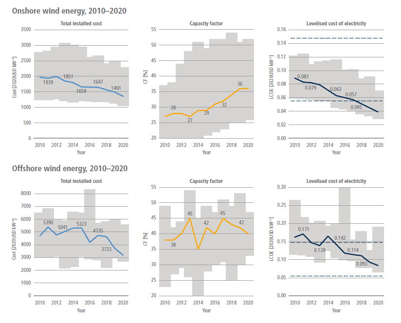
Figure 6.1 | Global energy flows within the 2019 global energy system (top panel) and within two illustrative future, net-zero CO2 emissions global energy systems (bottom panels). Source: IEA, AR6 Scenarios Database. Flows below 1 EJ are not represented. Agricultural energy and energy own use are included in industry. Captured methane is included in natural gas supply where appropriate. The illustrative net-zero scenarios correspond to the years in which net energy system CO2 emissions reach zero – 2060 in IMP-Ren and 2070 in IMP-Neg-2.0. Source: data from IMP-Ren: Luderer et al. (2022); IMP-Neg-2.0: Riahi, K. et al. (2021).
Within this context, this chapter has two main objectives. First, it aims to assess specific, individual mitigation options in energy supply, energy transformation, and energy transportation and transmission. This assessment is complementary to a set of chapters that explore mitigation options in agriculture, forestry, and other land uses (Chapter 7), urban systems and other settlements (Chapter 8), buildings (Chapter 9), transport (Chapter 10), industry (Chapter 11), and cross-sectoral perspectives (Chapter 12). Second, this chapter aims to assess system-level mitigation opportunities and challenges across the entirety of energy systems. These systems include energy supply, transformation, transmission, storage, transportation, and end uses. They also include the societal systems that interact with the physical energy system. As energy systems become increasingly integrated and interconnected, a system-wide perspective is necessary for understanding mitigation opportunities and challenges.
Within this context, this chapter addresses six topics, each of which is addressed in a separate section. First, Section 6.2 defines the scope of the energy system. Section 6.3 then discusses the recent trends in energy systems that might exert the most significant influence on energy system evolution and options for reducing emissions. Section 6.4 assesses the status and potential of individual energy supply, transformation, storage, transportation and transmission, and integration mitigation options in the energy sector. Section 6.5 explores how climate change might affect energy systems and alter potential energy system mitigation options and strategies. Section 6.6 identifies key characteristics of net-zero energy systems – those that emit very little or no CO2. Section 6.7 explores transition pathways toward and through net-zero energy systems. Across all of these sections, the chapter aims to explore the ways that energy sector mitigation options and strategies interact with Sustainable Development Goals (SDGs) and other societal and environmental goals.
6.2The Scope of the Energy System and its Possible Evolution
For this chapter, energy systems are defined broadly to include both physical and societal elements. The physical infrastructure includes all the infrastructure and equipment used to extract, transform, transport, transmit, and convert energy to provide energy services. In addition to the physical system, a broad range of societal systems and dynamics are relevant to the energy system. Human societies use energy to transport themselves and the goods that they use and consume, to heat, cool, and light their homes, to cook their food, and to produce goods and services. Energy systems are therefore tied to the systems involved in the provision of these various goods and services. All energy users engage in the operation of energy systems by demanding energy at particular times and in particular forms. They can adjust their behaviour and demands, for example, by using less energy or by changing when they use energy. Consumers can invest in equipment that reduces their energy needs, and they can invest in technologies that transform energy (e.g., rooftop solar) or store energy (e.g., batteries). Firms and governments invest in equipment to produce, transform, and transport energy such as power plants, refineries, electric transmission lines, and oil tankers. All aspects of energy systems are governed by laws, regulations, and actual institutions that reside within businesses and governments at all levels. This includes, for example, rules for trading emissions permits, deciding when particular electricity generation technologies might come online, water management and related environmental rules that define the availability of hydropower or influence water availability for cooling power plants, regulations for injecting CO2 into underground reservoirs or disposing of nuclear waste, and even company policies regarding work hours or teleworking, which can have important implications for energy demand profiles. Many people are employed in the energy sector, and energy system mitigation will eliminate some jobs while creating others.
This broader view of energy systems is essential for understanding energy system mitigation, as these broader societal and institutional factors can have an important influence on energy system transformations and the potential to rapidly reduce energy CO2 emissions. Energy system mitigation is as much about the challenges of societal change as it is about the challenges of changes in physical infrastructure, technologies, and operations. While this chapter does not attempt to draw a specific boundary around all the different systems that interact with the energy system, it frequently explores these broader system interactions when assessing different mitigation options and strategies.
There is no single spatial scale at which energy systems might be defined and assessed. They can be assessed at the scales of homes, cities, states or provinces, countries, regions, or the entire world. These different scales are frequently both distinct with their own internal dynamics yet al.o connected to one another. This chapter most frequently assesses energy systems from the country and global perspective.
Because the energy system is so complex, it can be hard to define particular parts of it precisely, and there may be competing definitions in the literature. For the purposes of this chapter, ‘energy supply‘ encompasses all primary energy, conversion, and transmission processes with the exception of those that use final energy to provide energy services in the end-use sectors (transport, buildings, industry and agriculture). The ‘energy system‘ includes energy end uses sectors along with energy supply. ‘Low-emissions‘ is used for energy technologies that produce little CO2 or no CO2 or that remove CO2 from the atmosphere. Similarly, ‘low-carbon‘ transitions is used to describe transitions that limit likely to 2°C (>67%) or below. ‘Net-zero‘ energy systems refer to those that produce very little or no CO2 or may even sequester CO2 from the atmosphere.
6.3Recent Energy System Trends and Developments
Global energy sector emissions continue to grow but at a decreasing rate
Current energy sector emissions trends, if continued, will not limit global temperature change to well below 2°C ( high confidence). Global energy system fossil fuel CO2 emissions grew by 4.6% between 2015 and 2019 (1.1% yr –1), reaching 38 GtCO2 yr –1 and accounting for approximately two-thirds of annual global anthropogenic GHG emissions. In 2020, with the worldwide COVID-19 pandemic, energy sector CO2 emissions dropped by roughly 2 GtCO2 yr –1 (Figure 6.2). However global energy-related CO2 emissions are projected to rebound by nearly 5% in 2021, approaching the 2018–19 peak (IEA 2021d).
.png)
Figure 6.2 | Global energy sectorfossil fuel CO2 emissions and annual change 2000–2019 (MtCO2yr–1). Source: adapted from Minx et al. (2021a); Crippa et al. (2021).
Coal was the single largest contributor to energy sector CO2 emissions between 2015 and 2019, accounting for about 44% of energy sector CO2 emissions in 2019. Oil accounted for about 34% and natural gas accounted for about 22% of energy sector CO2 emissions. Coal, oil and natural gas CO2 emissions grew respectively by 1.2%, 2% and 12.7% (annual rates of 0.31%, 0.5% and 3%) (Figure 6.3). The electricity sector remains the single largest source of energy sector CO2 emissions, accounting for about 36% in 2019, followed by industry at 22% and transport (excluding international shipping and aviation transport) at about 18% (Figure 6.3). Shipping and aviation accounted for a little over 3%. These proportions have remained relatively unchanged over the last decade. Recent trends reinforce the near-term challenges facing energy sector mitigation – electricity sector emissions continue to rise despite rapid deployment of wind and solar power (see below); transportation emissions continue to rise, and petroleum remains the dominant fuel, despite advances in batteries and electric cars (see below). Some specific sectors, such as shipping and aviation, may present longer-term challenges.
.png)
Figure 6.3 | Global energy sector CO2 emissions and global energy supply GHG emission. Source: Panel (a): data from IEA (2020a); other panels: data from Crippa et al. (2021).
Energy supply GHG emissions, including CO2 and non-CO2 greenhouse gases, reached 20 GtCO2-eq yr –1 in 2019, rising by 2.7% between 2015 and 2019 (0.66% yr –1). Approximately 18% of energy supply emissions were non-CO2 emissions. Electricity and heat contributed approximately 69% of total energy supply GHG emissions in 2019 (Figure 6.3). This growth has occurred despite the high penetration of solar PV and wind power, particularly in Asia and developed countries.
Fugitive emissions from fossil fuel production, primarily methane, accounted for about 18% of sector supply emissions in 2019, with 2.6 Gt CO2-eq yr –1 linked to oil and gas production and 1.3 GtCO2-eq yr –1 to coal mining (Crippa et al. 2021). Oil and gas operations produced 2.9 GtCO2- eq yr –1 in 2019 (82 Mt yr –1 as methane), split roughly equally between the two (IEA 2020a). There remains a high degree of uncertainty in methane emissions estimates from oil and gas operations despite the emergence of new data from satellites and other measurement campaigns. According to a recent study (Hmiel et al. 2020), methane emissions are underestimated by about 25 to 40%.
Increasing global energy sector GHG emissions have been driven by rising emissions in some large developing and emerging countries; however, per capita emissions in these countries remain well below those in developed countries (Yu et al. 2019). From 2015 to 2019, Eastern Asia, Southern Asia, and South-East Asia energy sector CO2 emissions grew by 2.4% yr –1, 2.6% yr –1, and 5.1% yr –1, respectively. The relative and absolute shares of Europe and North America have continued to decline, partly due to the growth in other countries (Figure 6.3).
Despite the declining energy intensity, global energy system CO2 emissions have closely tracked GDP per capita (Figure 6.4). This is especially true in the Asian economies, which have experienced rapid GDP per capita growth in the past decades and a massive rise in energy demand. Similarly, emissions have declined in times of economic downturns – for example, in Eurasia in the 1990s and globally in 2009 and 2020. Population growth has also contributed to emissions growth globally and in most regions, particularly Africa, but the effect of population growth has been less than that of economic growth. Since 2015, energy intensity has been declining (IEA 2020b), limiting the impact of economic and population growth. However, there is no region where this factor alone would have been sufficient to decrease CO2 emissions from the energy system. In Europe and North America, the only two regions where emissions decreased meaningfully since 2010, a steady decrease in the carbon intensity of energy was a significant downward driver. The reduction in carbon intensity in the EU is due primarily to the increase of renewable electricity production coupled with the low levels of fossil fuel-based production in the energy mix (Dyrstad et al. 2019).
.png)
Figure 6.4 | Drivers of greenhouse gas emissions across selectedregions. Source: Lamb et al. 2021.
Global energy production and demand continue to grow, but at a declining rate
Recent changes in the energy system can be viewed within the context of longer-term trends in energy supply and use. Over the last decade, there has been a significant increase in the total primary energy supply (TPES) and major changes in energy sources. From 2015 to 2019, TPES grew by 6.6% (1.6% yr –1) from 569 EJ yr –1 to 606 EJ yr –1. Natural gas consumption grew most quickly during this period, at 3.5% yr –1. Coal, oil and oil products grew at annual rates of 0.23% yr –1 and 0.83% yr –1, respectively. In 2019, the shares of coal, oil, and natural gas in global TPES were 27%, 31% and 23%, representing only a modest shift from 2015, when the shares were 28%, 32% and 22%, respectively. Renewables, excluding hydropower, grew at an annual rate of 12% yr –1 during this period; however, their share remains marginal in 2019, with just 2.2% of the TPES compared to 1.5% in 2015 (Figure 6.5). Bioenergy (including traditional bioenergy) accounted for 9.4% of the TPES, a similar share compared with 2015.
The totalfinal energy consumption (TFC) grew by 6.6% (1.6% yr –1) from 2015 to 2019, rising from 392 EJ yr –1 to 418 EJ yr –1. This is a slower growth rate than the previous decade (2.8% yr –1) (Figure 6.5). In 2019, oil products used for transportation accounted for 41% of TFC. The penetration of non-fossil fuels is still marginal despite the significant growth of electric vehicles in recent years. Coal still accounted for 9.5% of TFC in 2019, dropping from 11.7% in 2015. Coal is mainly used as a primary energy source in industry and, to a lesser extent, in the residential sector. The share of electricity increased modestly, from 18.6% in 2015 to 20.2% in 2019, reflecting increasing access in developing countries and increasing use of electricity for a wide variety of end uses in the residential sector (Box 6.1). Heat accounts for approximately 3% of TFC, used mainly in industry and the residential sector. Biofuels and waste accounted for 10.4% of TFC in 2019, only modestly changed compared with 2015.
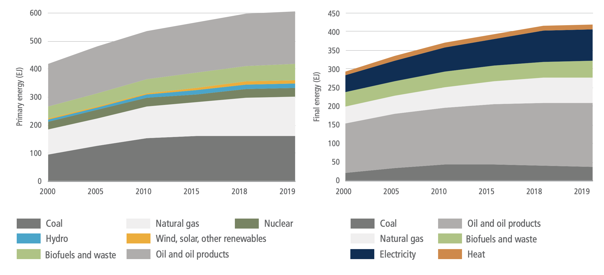
Figure 6.5 | World total primary energy supply (TPES) (EJ) and total final energy consumption (TFC) 2000–2019. Primary energy in this figure is based on IEA accounting methods and not direct equivalents for several energy sources. Final energy does not include industry own use and losses. Source: adapted from IEA world energy balances, Minx et al. (2021b) database for IPCC.
There are important differences in fuel use across countries. While developed countries almost exclusively use modern fuels, many countries still obtain a significant fraction of their energy from traditional bioenergy (fuelwood and charcoal). Traditional bioenergy (fuelwood and charcoal) is particularly important in sub-Saharan countries and some Asian countries such as India, particularly in the residential sector for cooking. Africa is still characterised by a high share of traditional bioenergy in TPES and TFC. In 2019, biomass and waste in Africa accounted for 44% of the TPES. The global average was 9.4%.
Asia has been particularly important in TFC growth since 2015. In 2019, Eastern Asia accounted for more 24% of TFC (1.52% annual growth from 2015). In contrast, TFC has increased by only 0.58% in Europe and 1.24% in North America. Despite an increase of 2.05% over the same period, Africa’s TFC remains relatively low (6.1% of global TFC), particularly in sub-Saharan countries. Approximately 860 million people, mostly in sub-Saharan Africa and some Asian countries, lacked access to electricity and about 2.65 billion to clean-cooking facilities in 2018 (IEA 2019a). Achieving universal energy access (SDG 7) will require energy transitions in the domestic sector, including new developments in off-grid energy technologies, emphasis on rationalising energy subsidies, and increasing efforts to address health concerns related to the use of traditional fuels (Box 6.1).
Non-climate factors continue to drive energy systems changes
While energy system changes are vital to climate mitigation, recent energy system changes have arisen in response to a much broader set of factors. Important factors include economic growth, energy access, energy justice, energy security, air pollution, technological progress in low-emissions technologies, local job creation. Several of these are discussed here.
Energy access. Between 2000 and 2019, the proportion of the population with access to electricity increased from 73% to 90% (IEA 2020c). Although most of those people gaining access to energy have gained access to fossil fuel-based electricity, an increasing number are gaining access to electricity from renewable sources. Low-emissions, decentralised systems are proving a cost-effective way to provide electricity in rural areas (Scott et al. 2016; Muchunku et al. 2018; IEA 2019b), although the use of diesel generators continues in some remote areas. Between 2000 and 2019 the proportion of the population with access to clean cooking (modern fuels and/or improved biomass cookstoves) rose from 52% to 66%.
Energy security. The ability of countries to maintain access to reliable and affordable energy resources continues to shape energy policy. Energy security is perceived as a national security issue and often prioritised over climate concerns (Nyman 2018). The linkage between climate and energy security is now widely recognised (Blarke and Lund 2007; Toke and Vezirgiannidou 2013; La Viña et al. 2018; World Energy Council 2020; Fu et al. 2021; United Nations 2021). Approaches to energy security are frequently driven by the scope of domestic energy resources. For example, energy security concerns have led to continued reliance on domestic coal production and consumption (Jakob et al. 2020) and increased investment in domestic renewable generation (Konstantinos and Ioannidis 2017). Liquefied natural gas (LNG) Importers have diversified their sources as reliance on LNG has increased (Vivoda 2019).
Air pollution. The energy system is an important source of air pollution, including both indoor and outdoor air pollution. Efforts to address air pollution in several countries and regions (the USA, Mexico, China, India, European Union, Africa, Southeast Asia, among others) have had an importance influence on energy system changes (Bollen and Brink 2014; Fang et al. 2019). Policies aimed at controlling nitrogen oxides (NOx) and sulphur dioxide (SO2) emissions have driven emissions abatement efforts and coal fleet retirements (Singh and Rao 2015; Drake and York, 2021). In some places, the prospect of reducing local air pollution remains more salient to policymakers and the public than climate mitigation when deciding to tighten regulations on coal use (Brauers and Oei 2020).
Technology and costs. Costs for renewable technologies have fallen significantly in recent years, driving significant changes in electricity production and transportation (see below). These advances are not divorced from climate and other environmental concerns (Kuik, Branger and Quirion 2019; Timilsina and Shah 2020). Recent advances in PV cells, for example, can be traced in part to aggressive deployment policies spurred by energy security, climate, and other environmental concerns (Kreuz and Müsgens 2017) (Sections 6.3.5 and 6.4.2). The falling costs of batteries, manly Li-ion batteries, has boosted the competitiveness of electric vehicles (Nykvist et al. 2015) (Section 6.3.7).
Box 6.1 | Energy Access, Energy Systems, and Sustainability
Successful mitigation must work in tandem with fundamental development goals such as access to modern forms of energy. In many developing countries, access to electricity, clean cooking fuels, and modern and efficient energy remain an essential societal priority. This is particularly true in sub-Saharan Africa and several Asian countries. SDG 7 on universal access to modern energy includes targets on modern energy services, renewable energy, and energy efficiency, which implies a profound transformation of the current energy systems. Although there are different definitions of energy access, the ultimate goal is universal access to clean and modern fuels.
Despite progress in some countries such as India, Bangladesh and Kenya, 860 million people were without access to electricity in 2018, compared with 1.2 billion in 2010. About 2.65 billion households were cooking with solid fuels, distributed across Asia and Africa (IEA et al. 2020). Around 850 million people in sub-Saharan Africa relied on traditional biomass (firewood and charcoal) for cooking, and 60 million relied on kerosene and coal to meet their energy needs (IEA 2018a). Air pollution was likely responsible for 1.1 million deaths across Africa in 2019 (Fisher et al. 2021). It has been estimated that 2.2 billion people will still be dependent on inefficient and polluting energy sources for cooking by 2030, mainly in Asia and Sub-Saharan Africa, and 650 million people are likely to remain without access to electricity in 2030, 90% of whom will reside in Sub-Saharan Africa (IEA et al. 2020).
.png)
Box 6.1, Figure 1 | Measuring access to energy. Source: with permission from ESMAP-World Bank 2015.
Research indicates that decentralised and on-grid renewables are likely the least cost options to provide universal access to electricity by 2030 (Section 6.4.2). Natural gas, LPG, and improved biomass cookstoves are the most important options for cooking. Universal access to electricity and clean cooking requires a rapid shift from traditional biomass to cleaner fuels and/or clean cooking technologies (IEA et al. 2020). It has been estimated that the provision of electricity and clean cooking for all would require USD786 billion in cumulative investment to 2030, equal to 3.4% of total energy sector investment over the period (IEA 2017).
Even without universal access to modern energy, increased access will substantially affect energy systems, particularly electricity systems through the deployment of renewable energy, LPG, and biomass supply chains. Universal access for households, however, will have a minimal impact on global energy demand; it has been estimated that universal access for household will increase energy demand by 0.2% in 2030 (37 Mtoe yr –1) relative to a future without any change in access to modern energy (IEA 2017).
There have been initial efforts to phase out coal but only modest declines in use
Global coal consumption has been declining, with small fluctuations, since it peaked in 2013 (IEA 2020d). Coal is faring differently across regions. Coal use has been decreasing in the OECD regions, particularly in the USA and the European Union (EU), while remaining mostly flat in China after a period of growth, and it is continuing to increase in other major developing Asian economies (IEA 2020d). Trends in the electricity sector, where most coal is being consumed, are similar. Growth in coal-fired electricity generation capacity in the Asia Pacific region has offset retirements in North America and Europe (Jakob et al. 2020; Global Energy Monitor et al., 2021).
Reductions in coal consumption have been driven in large part by non-climate factors, most notably environmental regulations to address air pollution, rapidly declining costs of renewables, and lower natural gas prices, especially inexpensive unconventional gas in the USA. (Culver and Hong 2016; Diluiso et al.2021; Vinichenko et al. 2021). Older coal-fired power plants that cannot meet new environmental regulations, or have become unprofitable or uncompetitive, have been closed in many regions. Moreover, coal power expansion has slowed down in Asia, as countries have suspended and cancelled new projects for reasons such as overcapacity, environmental constraints, and the development of renewables (Box 6.2).
Different regions have replaced retired coal with different energy sources. Old coal fleets have been replaced approximately half by gas and half by renewables in the USA, mainly by renewables in the EU, and by advanced coal plants and renewables in Asia (EMBER 2020). Replacing old coal with new coal facilities is inconsistent with limiting warming to 2°C or below ( high confidence) (Pfeiffer et al. 2016, 2018; Smith et al. 2019; Tong et al. 2019) (Section 6.7.4).
Major coal-consuming countries with abundant coal reserves remain far from phasing out coal (Edenhofer et al. 2018; Spencer et al. 2018). In most developing countries with large coal reserves, coal use has been increasing to support energy security and because it is perceived to have lower costs than alternatives (Steckel et al. 2015; Kalkuhl et al.2019). However, coal faces increasing business risks from the decreasing costs of alternative, low-emissions energy sources and increasing focus on air pollution and other environmental impacts from coal mining and use (Garg et al. 2017; Sovacool et al. 2021). Continued coal builds, mostly in developing countries, will increase the risks of stranded assets (Farfan Orozco 2017; Cui et al. 2019; Saygin et al. 2019) (Box 6.13).
Economic, social, and employment impacts of accelerated coal phase-outs tend to be significant in coal-dependent regions. Tailored reemployment has been used to support coal transitions in some regions. Although some estimates show higher employment opportunities from low-carbon energy (Garrett-Peltier 2017), results vary across regions. Moreover, even with a net increase in total employment, in the long run, renewable jobs are often located outside of coal regions and require different skill sets from the coal industry (Spencer et al. 2018). In a broader sense, achieving a ‘just transition’ also requires managing the impacts on regional economic development for coal-dependent communities and the effects of higher energy prices for consumers and energy-intensive industries through a comprehensive policy package (Green and Gambhir 2020; Jakob et al. 2020) (Box 6.2).
Box 6.2 | Status and Challenges of a Coal Phase-out
Limiting global warming to 2°C or below requires a rapid shift away from unabated coal consumption – coal without CCS – in the energy system by 2050 (IPCC 2018 a; Section 6.7; Chapter 3). This will require cancellation of new coal power projects and accelerated retirement of existing coal plants (Edenhofer et al. 2018; Kriegler et al. 2018; Pfeiffer et al. 2018; Smith et al. 2019; Tong et al. 2019). To limit warming to 2°C or lower, and without new builds, existing coal plants will need to retire 10 to 25 years earlier than the historical average operating lifetime. Completing all planned projects will further reduce the viable lifetime of all plants by 5 to 10 years if warming is to be limited to 2°C or lower (Cui et al. 2019). Phasing-out coal in the next few decades will present economic, social, and security challenges. These will vary across regions based on the characteristics of existing coal infrastructure, the availability of alternatives, economic development, and technological and institutional lock-in (Jakob et al. 2020).
.png)
Box 6.2, Figure1 | Retirement of coal-fired power plants to limit warming to 1. 5°C and 2°C or lower. (a) Historical facility age at retirement, (b) the vintage year of existing units, (c) global coal capacity under different plant lifetimes, compared to capacity levels consistent with a well-below 2°C (green) and 1.5°C (blue) pathway assuming no new coal plants, and (d) and assuming plants currently under construction come online as scheduled, but those in planning or permitting stages are not built. Source: with permission from Cui et al. (2019).
Between 2015 and 2019, global coal power capacity grew by 146 GW, or 7.6%, as new builds offset retirements in some countries (Global Energy Monitor et al. 2021). Meanwhile, an increasing number of countries and regions have committed to or operationalised coal phase-outs (Jewell et al. 2019; Watts et al. 2019; Littlecott et al. 2021). Actions are being taken by various international and sub-national actors, including national and sub-national governments, public and private power companies, and financial institutions and pension funds that have committed not to fund new coal or coal-based infrastructure (yan Nie et al. 2016; Buckley 2019; Auger et al. 2021). Although these initial efforts are not yet sufficient in limiting warming to 1.5°C, and most have occurred in regions with older coal fleets, these examples provide insight into possible coal phase-out strategies (Spencer et al. 2018) and help identify the mechanisms driving the move away from coal, such as market, technology, policy, or other societal objectives. They also enable better understanding of the possible character of oil and gas phase-downs that would ultimately be needed to limit warming two well below 2°C (Section 6.7.4) (Raimi et al. 2019).
Europe. Several European countries are part of the Powering Past Coal Alliance (PPCA) and have committed to phase out unabated coal on or before 2030 (Jewell et al. 2019). Because these countries represent a small share of global coal generation capacity and have mostly ageing coal plants, they tend to face fewer changes in phasing out coal. The effectiveness of PPCA in countries with younger coal fleets has thus been questioned (Jewell et al. 2019; Blondeel et al. 2020). Germany recently joined the PPCA and has committed to phase out unabated coal by 2038. As part of its commitment to phase out coal, Germany is implementing a set of measures that include compensation for power plant closures, labour market measures for coal workers, and substantial support of structural change in coal-mining regions. Poland, another coal-heavy country in Europe, has not indicated a coal phase-out target and faces substantial challenges (Whitley et al. 2017; Antosiewicz et al. 2020). European efforts to phase out coal indicate that appropriate financial instruments are needed (Rentier et al. 2019), and a just transition for workers are important to gain broad public support and help those most affected by the phase-out (Johnstone and Hielscher 2017; Osička et al. 2020).
North America. Coal use has been declining in North America. In the USA, the primary driver has been the availability of cheap shale gas and ageing coal fleets. Coal use in the USA has dropped by over 50% since 2008 (EIA 2019). The recently announced Nationally Determined Contribution (NDC) by the Biden Administration sets a 100% carbon-free electricity goal by 2035 (The White House 2021), indicating a phase-out not only of unabated coal electricity generation, but also of natural gas generation. As one of the two founding countries of the PPCA, Canada has committed to phasing out unabated coal power by 2030 (Government of Canada 2018). Declining coal use in both the USA and Canada has decreased GHG emissions, local air pollutants, and cooling water use (Harris et al. 2015; Kondash et al. 2019). However, there have been concerns about social and economic consequences, particularly at the local level. For instance, the USA has lost about 50,000 coal mining jobs between 2011 and 2021 (US Bureau of Labor Statistics, 2021), with significant regional and economic inequities (Bodenhamer 2016; Abraham 2017; Greenberg 2018). Comprehensive social programmes, such as retirement compensation, training for reemployment, and business support for economic diversification, have been suggested as means to support a just transition (Homagain et al. 2015; Patrizio et al. 2018; Grubert 2020).
Asia. After a period of rapid growth, coal expansion has slowed in Asia, but it still the primary driver of the global increase in coal demand (IEA 2020e). China’s coal consumption reached a plateau under policy efforts during the 13th Five-Year Plan (2016–2020), and new coal plants are being built at a slower rate than previously. Both China and India have suspended and cancelled many new coal power projects and retired a small set of old, dirty, inefficient coal plants (CEA 2019; Global Energy Monitor et al. 2021). These efforts are largely due to non-climate reasons, such air pollution and health (Singh and Rao 2015; Gass et al. 2016; Peng et al. 2018; Malik et al. 2020), overcapacity (Blondeel and Van de Graaf 2018), and rural electrification and renewable investments (Aklin et al. 2017; Thapar et al. 2018). However, as new builds offset retirements, coal generation capacity has continued to grow in both countries since 2015 (Global Energy Monitor et al. 2021). Other fast-growing Southeast Asian countries, such as Indonesia, Vietnam, and the Philippines have experienced strong growth in coal use (IEA 2020b), but an increasing number of new coal power projects are being cancelled (Littlecott et al. 2021). Coal projects in these countries are decreasingly likely to proceed because they rely on international financing, and China, Japan, USA, and other G7 countries have pledged to end overseas coal financing (Schiermeier 2021).
Africa. New coal power projects in Africa have been declining since 2016, with only South Africa and Zimbabwe currently building new coal plants and several others with planned projects (Littlecott et al. 2021). However, these projects also largely depend on international financing and are thus less likely to be implemented (see above). In South Africa, employment in the coal mining sector has dropped by almost half since the 1980s and has been estimated to fall from 77,000 today to 22,000 to 42,000 by 2050 (Cock 2019; Strambo et al. 2019). Policy and financial support are essential to ensure a sustainable transition for these workers (Swilling et al. 2016).
Solar and wind energy have grown dramatically, but global shares remain low relative to other sources
Global PV and wind electric capacities grew 170% and 70%, respectively, between 2015 and 2019. Total solar and wind capacities in 2019 were 609 GW and 623 GW (Figure 6.6) and generation was 680 TWh yr –1 and 1420 TWh yr –1. The combined share of solar and wind in the total global electricity generation in 2019 was around 8% (5.5% wind, 2.5% solar), up from around 5% in 2015 (IEA 2021a). Since 2015, the cost of solar PVs has declined by over 60%. Offshore wind costs have fallen by 32%, and onshore wind costs have fallen by 23% (Section 6.4). PV was around 99% of total solar capacity in 2019; onshore wind was about 95% of total wind capacity. Concentrating solar power (CSP) deployment has also continued to grow, but it remains far below PV. Prior to 2010, 50% of all wind capacity was in Europe, but since then, capacity growth in Asia (led by China), has surpassed the growth in Europe. As a consequence, Europe’s share in global solar capacity has declined from 74% in 2010 to 24% in 2019. Asia’s share in wind and solar capacity in 2019 was 41% and 56%, followed by Europe (31% and 24%) and North America (20% and 12%) (IRENA 2020a, 2021a).
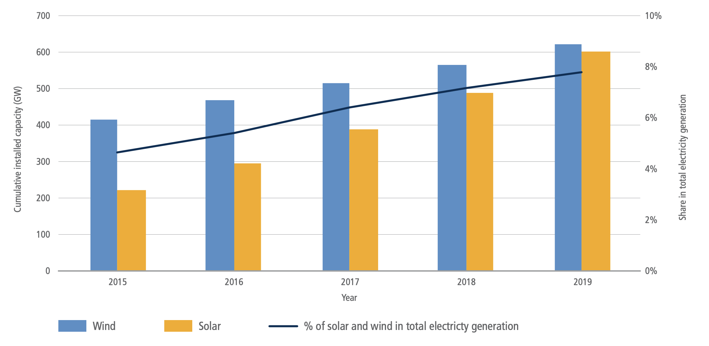
Figure 6.6 | Global solar and wind electricity installed capacities (GW) from 2015–2019 and their combined share in total electricity generation. Source: data from IEA (2021a) and IRENA (2021).
Although the shares of wind and solar remain low in the global total electricity generation, recent growth rates signal the potential for these technologies to support substantial mitigation. The prospects for a continuation of recent growth rates will depend on meeting key challenges such as rapidly integrating wind and solar into electricity grids (Section 6.6.2, Box 6.8) and retiring fossil power plants (see above).
Low-carbon energysources beyond wind and solar have continued to grow
Low-carbon energysources such as nuclear, hydropower, bioenergy, geothermal, marine, and fossil or bioenergy with carbon capture, use and storage (CCUS) have continued to grow since 2015 (IEA 2017, 2021a). Hydroelectric power grew from 3890 TWh yr –1 (14.0 EJ yr –1) in 2015 to 4290 TWh yr –1 (15.5 EJ yr –1) in 2019, or 10.3%; nuclear power grew from 2570 TWh yr –1 (9.3 EJ yr –1) to 2790 TWh yr –1 (10.1 EJ yr –1), or 8.6%. Hydroelectric and nuclear shares in global total electricity generation remained around 16% and 10%, respectively (IEA 2017, 2021a). Global biofuels production grew from 3.2 EJ yr –1 to 4.0 EJ yr –1 from 2015 to 2019 (IEA 2017, 2021a). Bioenergy accounted for 2.4% of electricity generation in 2019. Geothermal energy sources produced 92 TWh yr –1 (0.33 EJ yr –1) of electricity in 2019, up from 80 TWh yr –1 (0.28 EJ yr –1) in 2015 (IEA 2017, 2021a). At present, there are 28 commercially operating CCUS facilities with a CO2 removal capacity of around 40 million tonnes yr –1 (Mtpa). Only two of these are associated with electricity production: the majority are in industrial applications – 37 commercial projects, accounting for about 75 Mtpa, are in various stages of development and construction (Global CCS Institute 2020). The share of marine energy in global electricity generation has remained at approximately 1 TWh yr –1 since 2015. In total, low- and zero-carbon electricity generation technologies produced 37% of global electricity in 2019.
Battery prices have dropped substantially, spurring deployment in electricity and transportation
Recent years have seen a rapid decline in the cost of energy storage, particularly batteries (Section 6.4.4). The price of lithium-ion batteries (LIBs) has declined by 97% in the past three decades, and by 90% in the past decade alone (IEA 2021a; Ziegler and Trancik 2021). These declines have important implications for the energy systems, most notably in supporting increased deployment of variable renewable energy (VRE) generation and electrification of the vehicle fleet.
Battery electricity storage has emerged as important for supporting the flexibility of electricity systems as they accommodate rising shares of VRE. Although pumped-storage hydropower systems accounted for 160 GW, or over 90%, of total energy storage capacity in 2019 (IEA 2020c), battery energy storage systems, led by LIB technology, have accounted for over 90% of new capacity addition since 2015 (IRENA 2019a). In 2019, 10 GW of batteries were connected at the grid and consumer level, rising from 0.6 GW in 2015 (IEA WEO 2019; IEA 2020c).
In California in the USA, legislation was passed to procure around 1.3 GW energy storage (excluding pumped storage) by 2020. One of the largest utility-scale battery storage facilities (300 MW) recently went online in California (Vistra Corp. 2021). Other major projects are in Florida in the USA (409 MW), London in the UK (320 MW), Lithuania (200 MW), Australia (150 MW), Chile (112 MW) and Germany (90 MW), (IRENA 2019a; ARENA 2020; Katz 2020).
The drop in battery prices has also had important implications in the transportation sector. Automotive LIB production rose from around 40 GWh in 2015 to 160 GWh in 2020 (32%). The stock of battery electric vehicles (BEVs) grew from around 0.7 million in 2015 to 4.8 million in 2019 (IEA 2020d). The number of publicly accessible vehicle chargers reached 1.3 million in 2020, 30% of which were fast chargers. The average battery size of BEVs reached 67 kWh in 2019 due to consumer preferences and government incentives for long-range vehicles (Agency 2020; IEA 2021b).
The energy policy landscape continues to evolve
The current energy sector policy landscape consists of policy mixes or policy packages, including regulatory, market-based and other approaches. These mixes have evolved over time and include many sectoral but also some economy-wide policy instruments, such as carbon pricing subsidies.
Governments have chosen a mix of policies and institutional mechanisms that consists of regulatory instruments, like efficiency and technology standards, economic instruments (e.g., carbon pricing, subsidies) (Bertram et al. 2015; Martin and Saikawa 2017) and other policies, such as government interventions to provide infrastructure, information policies, and voluntary actions by non-government actors (Somanathan et al. 2014). In recent years, regulatory instruments to promote low-carbon infrastructure have gained traction in developing countries (Finon 2019). The choice of policies has depended on institutional capacities, technological maturity and other developmental priorities of governments. For example, governments have favoured regulatory instruments over economic instruments when there has been sufficient institutional capacity to implement and monitor the regulations and standards (Hughes and Urpelainen 2015). Furthermore, institutional capacity has also determined the extent of implemented measures (Adenle et al. 2017). Market conditions and technological maturity are other important determinants of policy mixes being deployed in the energy sector. For example, subsidies for mitigation like feed-in-tariffs have worked best when the technologies are in nascent stages of development (Gupta et al. 2019a).
On the other hand, market-based instruments like emissions rading schemes (ETS) and auctions coupled with a regulatory framework have been a favourable strategy for more mature technologies (Polzin et al. 2015; Kitzing et al. 2018). FIT, tax incentives, and renewable portfolio standards – despite potentially substantial programme costs (Andor and Voss 2016; Abrell et al. 2019) – have played a significant role in attracting foreign direct investments in the renewable sector (Wall et al. 2019). Subsidies and carbon pricing have also played an important role in mainstreaming these renewable energy sources (Best and Burke 2018). Recently, subsidy-free investments in renewables, such as wind offshore (Jansen et al. 2020), backed by power purchase agreements, have gained momentum (Frankfurt School-UNEP Centre and BNEF 2020). Similar considerations apply for policy mixes targeted to other sectors – for example, transport and buildings.
The role of carbon pricing is still limited though increasing. Different measures have been suggested to improve the performance of the ETS, such as ‘price floors and caps’ and other carbon pricing schemes (Campiglio 2016; Bataille et al. 2018; Goulder and Morgenstern 2018). In 2020, 61 regional, national and sub-national carbon pricing instruments, representing 22% of the global GHG emissions, were in action or scheduled for implementation (World Bank 2019). Over 51% of emissions covered are priced at less than USD10 per tCO2-eq. At present, however, only 5% of the global emissions covered under carbon pricing initiatives are consistent with the range of carbon prices that have been suggested as needed to limit warming to well below 2°C (Stiglitz and Stern 2017). Most of the carbon pricing schemes have taken place in the OECD countries. The limited application of carbon pricing instruments in developing, and emerging economies may be due to political economy constraints (Campiglio 2016; Finon 2019). Carbon pricing had a sizeable impact on emissions – for example, the EU ETS impacts emissions from electricity in Germany (Schäfer 2019) and manufacturing in France (Colmer et al. 2020), respectively. Emissions reductions could be increased with higher carbon prices and without free allocation of allowances.
In the absence of a global comprehensive carbon price, regional regulatory policies for fossil fuels supply and key demand sectors like transport, industry and buildings (Chapters 9–11), coupled with regional carbon pricing instruments, were implemented to help initiate the climate actions consistent with the Paris Agreement (Kriegler et al. 2018). However, differences in the stringency of climate regulation have triggered fear that regulation reduces the competitiveness of industries in regulated countries and leads to industry relocation and ‘carbon leakage‘ (Schenker et al. 2018). In recent years, however, there is little evidence of carbon leakage (Naegele and Zaklan 2019; Schäfer 2019), and even positive effects of carbon pricing on efficiency have been observed (e.g., Löschel et al. 2019, for German manufacturing firms, and Germeshausen 2020 for German power plants). However, with asymmetric rising carbon prices, discussions about specific policy mechanisms to address carbon leakage like carbon border adjustments (Cosbey et al. 2019) were amplified. Furthermore, multiple policies – often implemented by different governmental levels (national vs sub-national) – interacted with each other and thereby affected their environmental and economic effectiveness. Recent examples include interactions of ETS with renewable support policies (e.g. Boehringer and Behrens 2015; Del Rio 2017), energy efficiency policies (e.g. Wiese et al. 2018) or electricity market reform (e.g. Teng et al. 2017), respectively.
Apart from explicit carbon pricing, various implicit carbon pricing mechanisms, such as fossil fuel taxes and removal of fossil fuel subsidies (Box 6.3) and regulatory instruments, are used by many countries as part of their climate policies. In addition, public provision and procurement of low-carbon infrastructure and technologies such as energy-efficient devices, renewable energy, and upgrades in electricity grids through state-sponsored institutions and public-private partnerships have played an important role in low-carbon development (e.g., Baron 2016).
Box 6.3 | Energy Subsidies
Energy subsidies continue to be widely applied. Global fossil fuel subsidies represent more than half of total energy subsidies with predominantly adverse environmental, economic, and social effects ( high confidence).
Energy subsidies can be defined as policy measures in the energy sector to lower the prices for consumers, raise the prices for producers, or reduce energy production costs (IEA 1999). There are subsidies for fossil fuels, renewables, and energy efficiency measures. The majority of the renewable subsidies are generation-based incentives for solar, wind or biomass in the form of feed-in-tariffs (Chapter 13), with total annual renewable subsidy estimates of about USD150 billion yr –1 globally (IEA 2018b). Estimates of fossil fuel subsidies can vary by an order of magnitude. For the year 2017, the IEA estimated fossil fuel subsidies of USD300 billion using IEA’s pre-tax, price-gap method (IEA 2018b), while the International Monetary Fund (IMF) included unpriced externalities in calculating subsidies of USD5.2 trillion or 6.5% of global GDP (Coady et al. 2017, 2019; World Bank 2019). It has been estimated that the amount spent on fossil fuel subsidies was around double the amount of subsidies spent on renewables (IEA 2018b). There are adverse environmental, economic and social consequences of fossil fuel subsidies (Rentschler and Bazilian 2017). More than 75% of the distortions created by fossil fuel subsidies are domestic, and studies indicate that reforming them can have substantial in-country benefits (Coady et al. 2017, 2019). Some of the G20 countries have implemented subsidy reforms based on low oil prices (Jewell et al. 2018).
Fossil fuel subsidies most commonly pursue non-climate objectives, for example, enhanced access to energy sources ( high confidence). In some cases, these energy access subsidies have helped extend modern energy sources to the poor (Kimemia and Annegarn 2016) and thereby contribute to SDG 7. However, the subsidies have proven to be regressive in most cases, with little benefit reaching the poor (Lockwood 2015). For example, Indonesia has introduced LPG subsidies for cooking. The kerosene-to-LPG conversion programme (‘Zero Kero’) was launched in 2007 and provided mainly households with free initial LPG equipment and LPG at a low subsidised price (Imelda et al. 2018 b; Thoday et al. 2018). Besides the national government, provincial governments and industry played a crucial role in implementation. Overall, the LPG conversion programme in Indonesia reduced cooking kerosene use (Andadari et al. 2014; Imelda et al. 2018 b) and GHG emissions (Permadi et al. 2017) with positive health effects (Imelda et al. 2018 b; Thoday et al. 2018). However, the programme is generally viewed as regressive and has failed to reduce traditional solid fuel use (Andadari et al. 2014; Toft 2016; Thoday et al. 2018). Furthermore, even if the programme decreased GHG emissions relative to continued kerosene use, these subsidies are still targeted at fossil fuels and contribute to GHG emissions.
India started a large LPG programme in 2015 that provided a capital cost subsidy to poor households (e.g., Gould 2018; Jose et al. 2018; Kar et al. 2019). While the programme has increased adoption of LPG in India (e.g., Sharma et al. 2019), it has not yet achieved a sustained use of LPG and replacement of solid fuels for cooking, amplifying the need for complementary policy measures (Gould 2018; Kar et al. 2019; Mani et al. 2020). The climate impacts of switching from biomass to LPG depend on the degree of biomass combustion in stoves and the extent to which biomass originates from non-renewable sources (Singh and Rao 2015; Jose et al. 2018). Barriers to increasing LPG use for cooking further included abundance of solid fuels at zero (monetary) costs (Mani et al. 2020) as well as benefits of solid fuels, such as maintaining the traditional taste of food and space heating in colder seasons (Gould 2018; Sharma et al. 2020).
6.4Mitigation Options
6.4.1Elements of Characterisation
This section characterises energy system mitigation options and discusses which factors enable and inhibit their implementation. We touch on a broad range of factors that may enable and inhibit the implementation of mitigation options by considering six dimensions that affect their feasibility (Table 6.1 and Annex II.11). The assessment aims to identify which mitigation options can be readily implemented and which face barriers that would need to be overcome before they can be deployed at scale.
Table 6.1 | Dimensions and indicators to assess the barriers and enablers of implementing mitigation options in low-carbon energy systems.
Metric | Indicators |
Geophysical: Are the required resources available? | –Physical potential: physical constraints to implementation –Geophysical resources (including geological storage capacity): availability of resources needed for implementation –Land use: claims on land where an option would be implemented |
Environmental-ecological: What are the wider environmental and ecological impacts of the option? | –Air pollution: increase or decrease in air pollutants, such as NH4, CH4 and fine dust –Toxic waste, ecotoxicity and eutrophication –Water quantity and quality: changes in the amount of water available for other uses –Biodiversity: changes in conserved primary forest or grassland that affect biodiversity, and management to conserve and maintain land carbon stocks |
Technological: Can the required technology be upscaled soon? | – Simplicity: is the option technically simple to operate, maintain and integrate? –Technology scalability: can the option be scaled up technically? –Maturity and technology readiness: research and development (R&D) and time needed to implement the option |
Economic: What economic conditions can support or inhibit the implementation of the option? | –Costs in 2030 and in the long term: investment costs, costs in USD tCO2-eq –1 –Employment effects and economic growth: decrease or increase in jobs and economic welfare |
Socio-cultural: What social conditions could support or inhibit acceptance, adoption, and use of the option before 2030? | –Public acceptance: the extent to which the public supports the option and will change their behaviour accordingly –Effects on health and well-being –Distributional effects: equity and justice across groups, regions, and generations, including energy, water, and food security and poverty |
Institutional: What institutional conditions could support or inhibit the implementation of the option? | –Political acceptance: the extent to which politicians support the option –Institutional capacity and governance, cross-sectoral coordination: capability of institutions to implement and handle the option –Legal and administrative capacity |
6.4.2Energy Sources and Energy Conversion
6.4.2.1 Solar Energy
Solar photovoltaic (PV) is increasingly competitive with other forms of electricity generation, and is the low-cost option in many applications ( high confidence). Costs have declined by 62% since 2015 ( high confidence) and are anticipated to decline by an additional 16% by 2030 if current trends continue (low confidence, medium evidence). Key areas for continued improvement are grid integration and non-module costs for rooftop systems ( high confidence). Most deployment is now utility-scale ( high confidence). Global future potential is not limited by solar irradiation, but by grid integration needed to address its variability, as well as access to finance, particularly in developing countries ( high confidence).
The global technical potential of direct solar energy far exceeds that of any other renewable energy resource and is well beyond the total amount of energy needed to support ambitious mitigation over the current century ( high confidence). Estimates of global solar resources have not changed since the IPCC’s Fifth Assessment Report (AR5) (Lewis 2007; Besharat et al. 2013) even as precision and near-term forecasting have improved (Diagne et al. 2013; Abreu et al. 2018). Approximately 120,000TW of sunlight reaches the Earth’s surface continuously, almost 10,000 times average world energy consumption; factoring in competition for land use leaves a technical potential of about 300 PWh yr –1 (1080 EJ yr –1) for solar PV, roughly double current consumption (Dupont et al. 2020). The technical potential for concentrating solar power (CSP) is estimated to be 45–82 PWh yr –1 (162–295 EJ yr –1) (Dupont et al. 2020). Areas with the highest solar irradiation are: western South America; northern, eastern and southwestern Africa; and the Middle East and Australia (Figure 6.7) (Prăvălie et al. 2019).
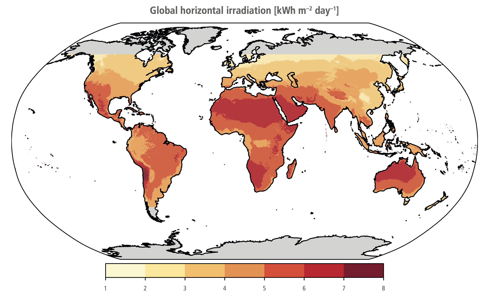
Figure 6.7 |Distribution of the daily mean global horizontal irradiation (GHI, kWh m–2day–1). Source: Global Solar Atlas (ESMAP 2019).
In many parts of the world, the cost of electricity from PV is below the cost of electricity generated from fossil fuels; in some, it is below the operating costs of electricity generated from fossil fuels ( high confidence). The weighted average cost of PV in 2019 was USD68 MWh –1, near the bottom of the range of fossil fuel prices (IRENA 2019b). The cost of electricity from PV has fallen by 89% since 2000 and 69% since AR5, at a rate of –16% per year. The 5:95 percentile range for PV in 2019 was USD52–190 MWh –1 (IRENA 2021b). Differences in solar insolation, financing costs, equipment acquisition, installation labour, and other sources of price dispersion explain this range (Nemet et al. 2016; Vartiainen et al. 2020) and scale. For example, in India, rooftop installations cost 41% more than utility-scale installations, and commercial-scale costs are 39% higher than utility-scale. Significant differences in regional cost persist (Kazhamiaka et al. 2017; Vartiainen et al. 2020), with particularly low prices in China, India, and parts of Europe. Globally, the range of global PV costs is quite similar to the range of coal and natural gas prices.
PV costs (Figure 6.8) have fallen for various reasons: lower silicon costs, automation, lower margins, automation, higher efficiency, and a variety of incremental improvements (Fu et al. 2018; Green 2019) (Chapter 16). Increasingly, the costs of PV electricity are concentrated in the installation and related ‘soft costs’ (marketing, permitting) associated with the technology rather than in the modules themselves, which now account for only 30% of installed costs of rooftop systems (O’Shaughnessy et al. 2019; IRENA 2021b). Financing costs are a significant barrier in developing countries (Ondraczek et al. 2015) and growth there depends on access to low-cost finance (Creutzig et al. 2017).
.png)
Figure 6.8 | Levelised costs of electricity (LCOE) of solar energy technologies 2000–2020. Range of fossil fuel LCOE indicated as dashed lines USD50–177 MWh –1. Linear fit lines were applied to data for AR4–AR5 and post-AR5 (2012). Yellow dots are capacity-weighted global averages for utility-scale installations. The blue area shows the range between the 5th and 95th percentile in each year. Data: IRENA (2021b).
CSP costs have also fallen, albeit at about half the rate of PV: –9% yr –1 since AR5. The lowest prices for CSP are now competitive with more expensive fossil fuels, although the average CSP cost is above the range for fossil-based power generation. Other data sources put recent CSP costs at USD120 MWh –1, in the middle of the fossil range (Lilliestam et al. 2020). Continuing the pace of change since AR5 will make CSP competitive with fossil fuels in sunny locations, although it will be difficult for CSP to compete with PV and even hybrid PV-battery systems. CSP electricity can be more valuable, however, because CSP systems can store heat longer than PV battery systems.
The share of total costs of PV-intensive electricity systems attributed to integration costs has been increasing but can be reduced by enhancing grid flexibility ( high confidence) (Sections 6.4.3 and 6.6, and Box 6.8). The total costs of PV include grid integration, which varies tremendously depending on PV’s share of electricity, other supply sources like wind, availability of storage, transmission capacity, and demand flexibility (Heptonstall and Gross 2020). Transmission costs can add USD1–10 MWh –1 or 3–33% to the cost of utility-scale PV (Gorman et al. 2019). Distributed (rooftop) PV involves a broader set of grid integration costs – including grid reinforcement, voltage balancing and control, and impacts on other generations – and has a larger range of integration costs from USD2–25 MWh –1, which is –3% to +37% (Hirth et al. 2015; Wu et al. 2015; Gorman et al. 2019). Other meta-analyses put the range at USD1–7 MWh –1 in the USA (Luckow et al. 2015.; Wiser et al. 2017), while a comprehensive study put the range at USD12–18 MWh –1 for up to 35% renewables and USD25–46 MWh –1 above 35% renewables (Heptonstall and Gross 2020). Increased system flexibility can reduce integration costs of solar energy (Wu et al. 2015) including storage, demand response, sector-coupling (Brown et al. 2018; Bogdanov et al. 2019), and increase complementarity between wind and solar (Heide et al. 2010) (Sections 6.4.3 and 6.4.4).
Since solar PV panels have very low operating costs, they can, at high penetrations and in the absence of adequate incentives to shift demand, depress prices in wholesale electricity markets, making it difficult to recoup investment, and potentially reducing incentives for new installations (Hirth 2013; Millstein et al. 2021). Continued cost reductions help address this issue of value deflation, but only partially. Comprehensive solutions depend on adding transmission and storage (Das et al. 2020) and, more fundamentally, adjustments to electricity market design (Roques and Finon 2017; Bistline and Young 2019).
The most important ways to minimise PV’s impact on the environment lie in recycling materials at end of life and making smart land-use decisions (medium confidence). A comprehensive assessment of PV’s environmental impacts requires lifecycle analysis (LCA) of resource depletion, land-use, ecotoxicity, eutrophication, acidification, ozone, and particulates, among other things (Mahmud et al. 2018). LCA studies show that solar PVs produce far less CO2 per unit of electricity than fossil generation, but PV CO2 emissions vary due to the carbon intensity of manufacturing energy and offset electricity (Grant and Hicks 2020). Concerns about systemic impacts, such as reducing the Earth’s albedo by covering surfaces with dark panels, have shown to be trivial compared to the mitigation benefits (Nemet 2009) (Box 6.7). Even though GHG LCA estimates span a considerable range of 9–250 gCO2 kWh –1 (de Wild-Scholten 2013; Kommalapati et al. 2017), recent studies that reflect higher efficiencies and manufacturing improvements find lower lifecycle emissions, including a range of 18–60 gCO2 kWh –1 (Wetzel and Borchers 2015) and central estimates of 80 gCO2 kWh –1 (Hou et al. 2016), 50 gCO2 kWh –1 (Nugent and Sovacool 2014), and 20 gCO2 kWh –1 (Louwen et al. 2016). These recent values are an order of magnitude lower than coal, and natural gas and further decarbonisation of the energy system will make them lower still. Thin films and organics produce half the lifecycle emissions of silicon wafer PV, mainly because they use less material (Lizin et al. 2013; Hou et al. 2016). Novel materials promise even lower environmental impacts, especially with improvements to their performance ratios and reliability (Gong et al. 2015; Muteri et al. 2020). Higher efficiencies, longer lifetimes, sunny locations, less carbon-intensive manufacturing inputs, and shifting to thin films could reduce future lifecycle impacts.
Another environmental concern with large PV power plants is the conversion of land to collect solar energy (Hernandez et al. 2015). Approximately 2 hectares of land are needed for 1 MW of solar electricity capacity (Perpiña Castillo et al. 2016; Kabir et al. 2018); at 20% efficiency, a square of PV panels of 550 km by 550 km, comprising 0.2% of Earth’s land area, could meet global energy demand. Land conversion can have local impacts, especially near cities and where land used for solar competes with alternative uses, such as agriculture. Large installations can also adversely impact biodiversity (Hernandez et al. 2014), especially where the above-ground vegetation is cleared and soils are typically graded. Landscape fragmentation creates barriers to the movement of species. However, a variety of means have emerged to mitigate land use issues. Substitution among renewables can reduce land conversion (Tröndle 2020). Solar can be integrated with other uses through ‘agrivoltaics’ (the use of land for both agriculture and solar production) (Dupraz et al. 2011) by, for example, using shade-tolerant crops (Dinesh and Pearce 2016). Combining solar and agriculture can also create income diversification, reduced drought stress, higher solar output due to radiative cooling, and other benefits (Elamri et al. 2018; Hassanpour Adeh et al. 2018; Barron-Gafford et al. 2019). PV installations floating on water also avoid land-use conflicts (Sahu et al. 2016; Lee et al. 2020), as does dual-use infrastructure, such as landfills (Jäger-Waldau 2020) and reservoirs where evaporation can also be reduced (Farfan and Breyer 2018).
Material demand for PV will likely increase substantially to limit warming to well below 2°C, but PV materials are widely available, have possible substitutes, and can be recycled (medium confidence) (Box 6.4). The primary materials for PV are silicon, copper, glass, aluminium, and silver – the costliest being silicon, and glass being the most essential by mass, at 70%. None of these materials is considered to be either critical or potentially scarce (IEA 2020e). Thin-film cells, such as amorphous silicon, cadmium telluride and copper indium gallium diselenide (CIGS), use far less material (though they use more glass), but account for less than 10% of the global solar market. Other thin-films, such as those based on perovskites, organic solar cells, or earth-abundant, non-toxic materials such as kesterites, either on their own, or layered on silicon, could further reduce material use per energy produced (Box 6.4).
After a typical lifetime of 30 years of use, PV modules can be recycled to prevent environmental contamination from the toxic materials within them, reusing valuable materials and avoiding waste accumulation. Recycling allows the reuse of nearly all – 83% in one study – of the components of PV modules, other than plastics (Ardente et al. 2019) and would add less than 1% to lifecycle GHG emissions (Latunussa et al. 2016). Glass accounts for 70% of the mass of a solar cell and is relatively easy to recycle. Recycling technology is advancing, but the scale and share of recycling is still small (Li et al. 2020d). By 2050, however, end-of-life PV could total 80 MT and comprise 10% of global electronic waste (Stolz and Frischknecht 2017), although most of it is glass. IEA runs a programme to enable PV recycling by sharing best practices to minimise recycling lifecycle impacts. Ensuring that a substantial amount of panels are recycled at end of life will likely require policy incentives, as the market value of the recovered materials, aside from aluminium and copper, is likely to be too low to justify recycling on its own (Deng et al. 2019). A near-term priority is maximising the recovery of silver, silicon, and aluminium, the most valuable PV material components (Heath et al. 2020).
Many alternative PV materials are improving in efficiency and stability, providing longer-term pathways for continued PV costs reductions and better performance ( high confidence). While solar PV based on semi-conductors constructed from wafers of silicon still captures 90% of the market, new designs and materials have the potential to reduce costs further, increase efficiency, reduce resource use, and open new applications. The most significant technological advance within silicon PV in the past 10 years has been the widespread adoption of the passivated emitter and rear cell (PERC) design (Green 2015), which now accounts for the majority of production. This advance boosts efficiency over traditional aluminium backing by increasing reflectivity within the cell and reducing electron-hole recombination (Blakers 2019). Bifacial modules increase efficiency by using reflected light from the ground or roof on the backside of modules (Guerrero-Lemus et al. 2016). Integrating PV into buildings can reduce overall costs and improve building energy performance (Shukla et al. 2016). Concentrating PV uses lenses or mirrors that collect and concentrate light onto high efficiency PV cells (Li et al. 2020a). Beyond crystalline silicon, thin films of amorphous silicon, cadmium telluride, and copper indium gallium selenide (among others) have the potential for much lower costs while their efficiencies have increased (Green et al. 2019). Perovskites, inexpensive and easy to produce crystalline structures, have increased in efficiency by a factor of six in the past decade; the biggest challenge is light-induced degradation as well as finding lead-free efficient compounds, or establishing lead recycling at the end of the lifecycle of the device (Petrus et al. 2017; Chang et al. 2018; Wang et al. 2019b; Zhu et al. 2020). Organic solar cells are made of carbon-based semiconductors like the ones found in the displays made from organic light emitting diodes (OLEDs) and can be processed in thin films on large areas with scalable and fast coating processes on plastic substrates. The main challenges are raising the efficiency and improving their lifetime (Ma et al. 2020; Riede et al. 2021). Quantum dots, spherical semi-conductor nanocrystals, can be tuned to absorb specific wavelengths of sunlight, giving them the potential for high efficiency with very little material use (Kramer et al. 2015). A common challenge for all emerging solar cell technologies is developing the corresponding production equipment. Hybrids of silicon with layers of quantum dots and perovskites have the potential to take advantage of the benefits of all three, although those designs require that these new technologies have stability and scale that match those of silicon (Chang et al. 2017; Palmstrom et al. 2019). This broad array of alternatives to making PV from crystalline silicon offer realistic potential for lower costs, reduced material use, and higher efficiencies in future years (Victoria et al. 2021).
Besides PV, alternative solar technologies exist, including CSP, which can provide special services in high-temperature heat and diurnal storage, even if it is more costly than PV and its potential for deployment is limited. CSP uses reflective surfaces, such as parabolic mirrors, to focus sunlight on a receiver to heat a working fluid, which is subsequently transformed into electricity (Islam et al. 2018). Solar heating and cooling are also well established technologies, and solar energy can be utilised directly for domestic or commercial applications such as drying, heating, cooling, and cooking (Ge et al. 2018). Solar chimneys, (still purely conceptual), heat air using large transparent greenhouse-like structures and channel the warm air to turbines in tall chimneys (Kasaeian et al. 2017). Solar energy can also be used to produce solar fuels, for example, hydrogen or synthetic gas (syngas) (Montoya et al. 2016; Nocera 2017; Detz et al. 2018). In addition, research proceeds on space-based solar PV, which takes advantage of high insolation and a continuous solar resource (Kelzenberg et al. 2018), but faces the formidable obstacle of developing safe, efficient, and inexpensive microwave or laser transmission to the Earth’s surface (Yang et al. 2016). CSP is the most widely adopted of these alternative solar technologies.
Like PV, CSP facilities can deliver large amounts of power (up to 200 MW per unit) and maintain substantial thermal storage, which is valuable for load balancing over the diurnal cycle (McPherson et al. 2020). However, unlike PV, CSP can only use direct sunlight, constraining its cost-effectiveness to North Africa, the Middle East, Southern Africa, Australia, the Western USA, parts of South America (Peru, Chile), and the Western part of China (Deng et al. 2015; Dupont et al. 2020). Parabolic troughs, central towers and parabolic dishes are the three leading solar thermal technologies (Wang et al. 2017d). Parabolic troughs represented approximately 70% of new capacity in 2018 with the balance made up by central tower plants (Islam et al. 2018). Especially promising research directions are on tower-based designs that can achieve high temperatures, useful for industrial heat and energy storage (Mehos et al. 2017), and direct steam generation designs (Islam et al. 2018). Costs of CSP have fallen by nearly half since AR5 (Figure 6.8) albeit at a slower rate than PV. Since AR5, almost all new CSP plants have storage (Figure 6.9) (Thonig 2020).
.png)
Figure 6.9 | CSP plants by storage capacity in hours (vertical), year of installation (horizontal), and size of plant in MW (circle size). Since AR5, almost all new CSP plants have storage (Thonig 2020). Source: with permission fromhttps://csp.guru/metadata.html.
Solar energy elicits favourable public responses in most countries ( high confidence) (Mcgowan and Sauter 2005; Ma et al. 2015; Hanger et al. 2016; Bessette and Arvai 2018; Jobin and Siegrist 2018; Roddis et al. 2019; Hazboun and Boudet 2020). Solar energy is perceived as clean and environmentally friendly with few downsides (Faiers and Neame 2006; Whitmarsh et al. 2011b). Key motivations for homeowners to adopt PV systems are expected financial gains, environmental benefits, the desire to become more self-sufficient, and peer expectations (Korcaj et al. 2015; Vasseur and Kemp 2015; Palm 2017). Hence, the observability of PV systems can facilitate adoption (Boudet 2019). The main barriers to the adoption of solar PV by households are its high upfront costs, aesthetics, landlord-tenant incentives, and concerns about performance and reliability (Faiers and Neame 2006; Whitmarsh et al. 2011b; Vasseur and Kemp 2015).
6.4.2.2Wind Energy
Wind power is increasingly competitive with other forms of electricity generation and is the low-cost option in many applications ( high confidence). Costs have declined by 18% and 40% on land and offshore since 2015 ( high confidence), and further reductions can be expected by 2030 (medium confidence). Critical areas for continued improvement are technology advancements and economies of scale ( high confidence). Global future potential is primarily limited by onshore land availability in wind power-rich areas, lack of supporting infrastructure, grid integration, and access to finance (especially in developing countries) ( high confidence).
Energy from wind is abundant, and the estimated technical potentials surpass the total amount of energy needed to limit warming to well below 2°C ( high confidence). Recent global estimates of potentially exploitable wind energy resource are in the range of 557–717 PWh yr –1 (2005–2580 EJ yr –1) (Eurek et al. 2017; Bosch et al. 2017, 2018; McKenna et al. 2022), or 20–30 times the 2017 global electricity demand. Studies have suggested that ‘bottom-up’ approaches may overestimate technical potentials (Miller et al. 2015; Kleidon and Miller 2020). But even in the most conservative ‘top-down’ approaches, the technical wind potential surpasses the amount needed to limit warming to well below 2°C (Bosch et al. 2017; Eurek et al. 2017; Volker et al. 2017). The projected climate change mitigation from wind energy by 2100 ranges from 0.3°C–0.8°C depending on the precise socio-economic pathway and wind energy expansion scenario followed (Barthelmie and Pryor 2021). Wind resources are unevenly distributed over the globe and by time of the year (Petersen and Troen 2012), but potential hotspots exist on every continent (Figure 6.10) as expressed by the wind power density (a quantitative measure of wind energy available at any location). Technical potentials for onshore wind power vary considerably, often because of inconsistent assessments of suitability factors (McKenna et al. 2020). The potential for offshore wind power is larger than for onshore because offshore wind is stronger and less variable (Bosch et al. 2018). Offshore wind is more expensive, however, because of higher costs for construction, maintenance, and transmission. Wind power varies at a range of time scales, from annual to sub-seconds; the effects of local short-term variability can be offset by power plant control, flexible grid integration, and storage (Barra et al. 2021) (Section 6.4.3). In some regions, interannual variations in wind energy resources could be important for optimal power system design (Wohland et al. 2019a; Coker et al. 2020).
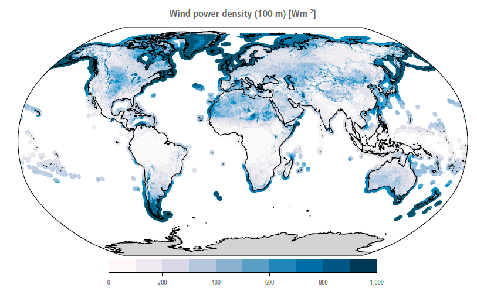
Figure 6.10 | Mean wind power density [W m–2] at 100 m above ground level over land and within 100 km of the coastline. Source: Global Wind Atlas, available at: https://globalwindatlas.info/.
Wind power cost reductions (Figure 6.11) are driven mainly by larger capacity turbines, larger rotor diameters and taller hub heights – larger swept areas increase the energy captured and the capacity factors for a given wind speed; taller towers provide access to higher wind speeds (Beiter et al. 2021). All major onshore wind markets have experienced rapid growth in both rotor diameter (from 81.2 m in 2010 to 120 m in 2020) (IRENA 2021b), and average power ratings (from 1.9 MW in 2010 to 3 MW in 2020). The generation capacity of offshore wind turbines grew by a factor of 3.7 in less than two decades, from 1.6 MW in 2000 to 6 MW in 2020 (Wiser et al. 2021). Floating foundations could revolutionise offshore wind power by tapping into the abundant wind potential in deeper waters. This technology is particularly important for regions where coastal waters are too deep for fixed-bottom wind turbines. Floating wind farms potentially offer economic and environmental benefits compared with fixed-bottom designs due to less-invasive activity on the seabed during installation, but the long-term ecological effects are unknown and meteorological conditions further offshore and in deeper waters are harsher on wind turbine components (IRENA 2019c). A radical new class of wind energy converters has also been conceived under the name of airborne wind energy systems that can harvest strong, high-altitude winds (typically between 200–800m), which are inaccessible by traditional wind turbines (Cherubini et al. 2015). This technology has seen development and testing of small devices (Watson et al. 2019).
Figure 6.11 | Global weighted average total installed costs, capacity factors, and LCOE for onshore (top) and offshore (bottom) wind power of existing power plants per year (2010–2020). The shaded area represents the 5th and 95th percentiles, and the red dashed line represents the fossil fuel cost range. Source: with permission fromIRENA (2021a).
Wind capacity factors have increased over the last decade (Figure 6.11). The capacity factor for onshore wind farms increased from 27% in 2010 to 36% in 2020 (IRENA 2021a). The global average offshore capacity factor has decreased from a peak of 45% in 2017. This has been driven by the increased share of offshore development in China, where projects are often near-shore and use smaller wind turbines than in Europe (IRENA 2021b). Improvements in capacity factors also come from increased functionality of wind turbines and wind farms. Manufactures can adapt the wind turbine generator to the wind conditions. Turbines for windy sites have smaller generators and smaller specific capacity per rotor area, and therefore operate more efficiently and reach full capacity for a longer time period (Rohrig et al. 2019).
Electricity from onshore wind is less expensive than electricity generated from fossil fuels in a growing number of markets ( high confidence). The global average LCOE onshore declined by 38% from 2010 to 2020 (Figure 6.11), reaching USD0.039 kWh –1. However, the decrease in cost varies substantially by region. Since 2014, wind costs have declined more rapidly than the majority of experts predicted (Wiser et al. 2021). New modelling projects onshore wind LCOE of USD.037 kWh –1 by 2030 (Junginger et al. 2020a), and additional reductions of 37–39% have been predicted by 2050 (Wiser et al. 2021). The future cost of offshore wind is more uncertain because other aspects besides increases in capacity factors influence the cost (Junginger et al. 2020b).
The cost of the turbine (including the towers) makes up the largest component of wind LCOE. Total installed costs for both onshore and offshore wind farms have decreased since 2015 (Figure 6.11), but the total installed costs for onshore wind projects are very site- and market-specific, as reflected in the range of LCOEs. China, India, and the USA have experienced the largest declines in total installed costs. In 2020, typical country-average total installed costs were around USD1150 kW–1 in China and India, and between USD1403–2472 kW–1 elsewhere (IRENA 2021b). Total installed costs of offshore wind farms declined by 12% between 2010 and 2020. But, because some of the new offshore wind projects have moved to deeper waters and further offshore, there are considerable year-to-year variations in their price (IRENA 2021b). Projects outside China in recent years have typically been built in deeper waters (10–55 m) and up to 120 km offshore, compared to around 10 m in 2001–2006, when distances rarely exceeded 20 km. With the shift to deeper waters and sites further from ports, the total installed costs of offshore wind farms rose, from an average of around USD2500 kW–1 in 2000 to around USD5127 kW–1 by 2011–2014, before falling to around USD3185 kW–1 in 2020 (IRENA 2020a). The full cost of wind power includes the transmission and system integration costs (Sections 6.4.3 and 6.4.6). A new technology in development is the co-location of wind and solar PV power farms, also known as hybrid power plants. Co-locating wind, solar PV, and batteries can lead to synergies in electricity generation, infrastructure, and land usage, which may lower the overall plant cost compared to single technology systems (Lindberg et al. 2021).
Wind power plants pose relatively low environmental impact, but sometimes locally significant ecological effects ( high confidence). The environmental impact of wind technologies, including CO2 emissions, is concentrated in the manufacturing, transport, and building stage and in disposal as the end-of-life of wind turbines is reached (Liu and Barlow 2017; Mishnaevsky 2021). The operation of wind turbines produces no waste or pollutants. The LCA for wind turbines is strongly influenced by the operating lifetime, quality of wind resources, conversion efficiency, and size of the wind turbines (Kaldellis and Apostolou 2017; Laurent et al. 2018). All wind power technologies repay their carbon footprint in less than a year (Bonou et al. 2016).
Wind farms can cause local ecological impacts, including on animal habitat and movements, biological concerns, bird and bat fatalities from collisions with rotating blades, and health concerns (Morrison and Sinclair 2004). The impacts on animal habitats and collisions can be resolved or reduced by selectively stopping some wind turbines in high-risk locations, often without affecting the productivity of the wind farm (de Lucas et al. 2012). Many countries now require environmental studies of impacts of wind turbines on wildlife prior to project development, and, in some regions, shutdowns are required during active bird migration (de Lucas et al. 2012). Offshore wind farms can also impact migratory birds and other sea species (Hooper et al. 2017). Floating foundations pose lower environmental impacts at build stage (IRENA 2019c), but their cumulative long-term impacts are unclear (Goodale and Milman 2016). Recent studies find weak associations between wind farm noise and measures of long-term human health (Poulsen et al. 2018a, b, 2019a, b).
Public support for onshore and particularly offshore wind energy is generally high, although people may oppose specific wind farm projects ( high confidence) (e.g., Bell et al. 2005; Batel and Devine-Wright 2015; Rand and Hoen 2017; Steg 2018). People generally believe that wind energy is associated with environmental benefits and that it is relatively cheap. Yet, some people believe wind turbines can cause noise and visual aesthetic pollution, threaten places of symbolic value (Devine-Wright and Wiersma 2020; Russell et al. 2020), and have adverse effects on wildlife (Bates and Firestone 2015), which challenges public acceptability (Rand and Hoen 2017). Support for local wind projects is higher when people believe fair decision-making procedures have been implemented (Dietz and Stern 2008; Aitken 2010a). Evidence is mixed whether distance from wind turbines or financial compensation increases public acceptability of wind turbines (Cass et al. 2010; Rand and Hoen 2017; Rudolph et al. 2018; Hoen et al. 2019). Offshore wind farms projects have higher public support, but can also face resistance (Bidwell 2017; Rudolph et al. 2018).
Common economic barriers to wind development are high initial cost of capital, long payback periods, and inadequate access to capital. Optimal wind energy expansion is most likely to occur in the presence of a political commitment to establish, maintain, and improve financial support instruments, technological efforts to support a local supply chains, and grid investments integrate VRE electricity (Diógenes et al. 2020).
Box 6.4 | Critical Strategic Minerals and a Low-carbon Energy System Transition
The secure supply of many metals and minerals (e.g., cobalt, copper, lithium, and rare earth elements (REEs)) is critical to supporting a low-emissions energy system transition (Sovacool et al. 2020 ). A low-carbon energy system transition will increase the demand for these minerals to be used in technologies like wind turbines, PV cells, and batteries (World Bank 2020). Reliance on these minerals has raised questions about possible constraints to a low-carbon energy system transition, including supply chain disruptions (Chapter 10.6). Concerns have also been raised about mining for these materials, which frequently results in severe environmental impacts (Sonter et al. 2020), and metal production itself is energy-intensive and difficult to decarbonise (Sovacool et al. 2020 ).
Wind energy depends on two critical REEs – neodymium and dysprosium – used in magnets in high-performance generators (Pavel et al. 2017; Li et al. 2020b). Silicon-wafer-based solar PV, which accounted for 95% of PV production in 2020, does not use REEs but utilises aluminium, copper, and silver (IEA 2021a). Lithium, nickel, cobalt, and phosphorous are used in batteries. Many critical minerals are used in EVs, including aluminium and copper in manufacturing the necessary EV charging infrastructure, and neodymium in permanent magnet motors.
These strategic minerals are found in a limited number of countries, and concerns have been raised that geopolitical factors could disrupt the supply chain necessary for a low-carbon energy system transition. However, excluding cobalt and lithium, no single country holds more than a third of the world reserves. The known supply of some strategic minerals is still close to 600 years at current levels of demand (BP 2020), but increased demand would cut more quickly into supplies.
Box 6.4
There are alternatives to the strategic minerals currently used to support a low-carbon transition. Wind turbines can be manufactured without permanent magnets to reduce the need for strategic minerals, but the production costs are higher, and their efficiency is reduced (Månberger and Stenqvist 2018). Alternatives to silicon, such as thin films, could be used to produce PVs. Thin-films use much less material than silicon-based PV, but they contain other potentially critical metals like tellurium, cadmium, and gallium. Alternatives to lithium-ion batteries, such as sodium-ion batteries, are becoming more practical and feasible (Sovacool et al. 2020 ).
6.4.2.3Hydroelectric Power
Hydropower is technically mature, proved worldwide as a primary source of renewable electricity, and may be used to balance electricity supply by providing flexibility and storage. The LCOE of hydropower is lower than the cheapest new fossil fuel-fired option. However, the future mitigation potential of hydropower depends on minimising environmental and social impacts during the planning stages, reducing the risks of dam failures, and modernising the ageing hydropower fleet to increase generation capacity and flexibility ( high confidence).
Estimates of global gross theoretical available hydropower potential varies from 31–128 PWh yr –1 (112–460 EJ yr –1), exceeding total electricity production in 2018 (Banerjee et al. 2017; BP 2020; IEA 2021d). This potential is distributed over 11.8 million locations (Figure 6.12), but many of the locations cannot be developed for (current) technical, economic, or political reasons. The estimated technical potential of hydropower is 8–30 PWh yr –1 (29–108 EJ yr –1), and its estimated economic potential is 8–15 PWh yr –1 (29–54 EJ yr –1) (Zhou et al. 2015; van Vliet et al. 2016c). Actual hydropower generation in 2019 was 4.2 PWh (15.3 EJ), providing about 16% of global electricity and 43% of global electricity from renewables (BP 2020; IEA 2020f; Killingtveit 2020). Asia holds the largest hydropower potential (48%), followed by South America (19%) (Hoes et al. 2017).
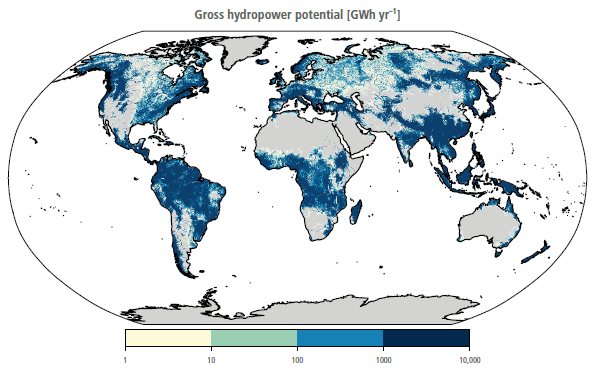
Figure 6.12 | Global map of gross hydropower potential distribution [GWh yr–1]. Source: data from Hoeset al. (2017).
Hydropower is a mature technology with locally adapted solutions ( high confidence) (Zhou et al. 2015; Killingtveit 2020). The peak efficiency of hydroelectric plants is greater than 85%. Hydropower plants without storage or with small storage typically produce a few kWs to 10 MWs (examples of plants producing higher amounts do exist), and are useful for providing electricity at a scale from households to small communities (El Bassam et al. 2013; Towler 2014). However, hydropower plants without or with small storage may be susceptible to climate variability, especially droughts, when the amount of water may not be sufficient to generate electricity (Premalatha et al. 2014) (Section 6.5).
Hydropower plants with storage may produce 10 GW, reaching over 100 TWh yr –1 (0.36 EJ yr –1), but generally require large areas. Pumped storage hydropower stores energy by pumping water to higher reservoirs during low-demand periods (Killingtveit 2020). The storage in hydropower systems provides flexibility to compensate for rapid variations in electricity loads and supplies. The regulating characteristics of the storage play an important role in assuring continuity of energy supply from renewable sources (Yang et al. 2018b).
Hydropower is one of the lowest-cost electricity technologies (Mukheibir 2013; IRENA 2021b). Its operation and maintenance costs are typically 2–2.5% of the investment costs per kW yr –1 for a lifetime of 40–80 years (Killingtveit 2020). Construction costs are site-specific. The total cost for an installed large hydropower project varies from USD10,600–804,500 kW–1 if the site is located far away from transmission lines, roads, and infrastructure. Investment costs increase for small hydropower plants and may be as high as USD100,000 kW–1 or more for the installation of plants of less than 1 MW – 20% to 80% more than for large hydropower plants (IRENA 2015). During the past 100 years, total installed costs and LCOE have risen by a few percent, but the LCOE of hydropower remains lower than the cheapest new fossil fuel-fired option (IRENA 2019b, 2021).
Hydroelectric power plants may pose serious environmental and societal impacts ( high confidence) (McCartney 2009). Dams may lead to fragmentation of ecological habitats because they act as barriers for migration of fish and other land and water-borne fauna, sediments, and water flow. These barriers can be mitigated by sediment passes and fish migration aids, and with provision of environmental flows. Below dams, there can be considerable alterations to vegetation, natural river flows, retention of sediments and nutrients, and water quality and temperature. Construction of large reservoirs leads to loss of land, which may result in social and environmental consequences. Minimising societal and environmental impacts requires taking into account local physical, environmental, climatological, social, economic, and political aspects during the planning stage (Killingtveit 2020). Moreover, when large areas of land are flooded by dam construction, they generate GHGs (Prairie et al. 2018; Phyoe and Wang 2019; Maavara et al. 2020). On the other hand, hydropower provides flexible, competitive low-emission electricity, local economic benefits (e.g., by increasing irrigation and electricity production in developing countries), and ancillary services such as municipal water supply, irrigation and drought management, navigation and recreation, and flood control (IRENA 2021b). However, the long-term economic benefits to communities affected by reservoirs are a subject of debate (de Faria et al. 2017; Catolico et al. 2021).
Public support for hydroelectric energy is generally high (Steg 2018), and higher than support for coal, gas, and nuclear. Yet, public support for hydro seems to differ for existing and new projects ( high confidence). Public support is generally high for small- and medium-scale hydropower in regions where hydropower was historically used (Gormally et al. 2014). Additionally, there is high support for existing large hydropower projects in Switzerland (Rudolf et al. 2014; Plum et al. 2019), Canada (Boyd et al. 2019), and Norway (Karlstrøm and Ryghaug 2014), where it is a trusted and common energy source. Public support seems lower for new hydropower projects (Hazboun and Boudet 2020), and the construction of new large hydropower plants has been met with strong resistance in some areas (Vince 2010; Bronfman et al. 2015). People generally perceive hydroelectric energy as clean and a non-contributor to climate change and environmental pollution (Kaldellis et al. 2013). For example, in Sweden, people believed that existing hydropower projects have as few negative environmental impacts as solar, and even less than wind (Ek 2005). However, in areas where the construction of new large-scale hydroelectric energy is met with resistance, people believe that electricity generation from hydro can cause environmental, social, and personal risks (Bronfman et al. 2012; Kaldellis et al. 2013).
The construction time of hydroelectric power plants is longer than many other renewable technologies, and that construction time may be extended by the additional time it takes to fill the reservoir. This extended timeline can create uncertainty in the completion of the project. The uncertainty is due to insecurity in year-to-year variations in precipitation and the water inflows required to fill reservoirs. This is especially critical in the case of trans-boundary hydroelectric power plants, where filling up the reservoirs can have large implications on downstream users in other nations. As a result of social and environmental constraints, only a small fraction of potential economic hydropower projects can be developed, especially in developed countries. Many developing countries have major undeveloped hydropower potential, and there are opportunities to develop hydropower combined with other economic activities such as irrigation (Lacombe et al. 2014). Competition for hydropower across country borders can lead to conflict, which could be exacerbated if climate alters rainfall and streamflow (Ito et al. 2016).
6.4.2.4Nuclear Energy
Nuclear power can deliver low-carbon energy at scale ( high confidence). Doing so will require improvements in managing construction of reactor designs that hold the promise of lower costs and broader use (medium confidence). At the same time, nuclear power continues to be affected by cost overruns, high upfront investment needs, challenges with final disposal of radioactive waste, and varying public acceptance and political support levels ( high confidence).
There are sufficient resources for substantially increasing nuclear deployment (medium confidence). Estimates for identified uranium resources have been increasing steadily over the years. Conventional uranium resources have been estimated to be sufficient for over 130 years of supply at current levels of use; 100 years were estimated in 2009 (Hahn 1983; NEA/IAEA 2021). In the case of future uranium resource scarcity, thorium or recycling of spent fuel might be used as alternatives. Interest in these alternatives has waned with better understanding of uranium deposits, their availability, and low prices (IAEA 2005; OECD NEA 2015).
There are several possible nuclear technology options for the period from 2030 to 2050 (medium confidence). In addition to electricity, nuclear can also be used to produce low-carbon hydrogen and freshwater (Kavvadias and Khamis 2014; Kayfeci et al. 2019).
•Large reactors. The nuclear industry has entered a new phase of reactor construction, based on evolutionary designs. These reactors achieve improvements over previous designs through small to moderate modifications, including improved redundancy, increased application of passive safety features, and significant improvements to containment design to reduce the risk of a major accident (MIT 2018). Examples include European – EPR, Korean – APR1400, USA – AP1000, Chinese – HPR1000 or Russian – VVER-1200.
•Long-term operation (LTO) of the current fleet. Continued production from nuclear power will depend in part on life extensions of the existing fleet. By the end of 2020, two-thirds of nuclear power reactors will have been operational for over 30 years. The design lifetime of most of existing reactors is 30–40 years. Engineering assessments have established that reactors can operate safely for longer if key replaceable components (e.g., steam generator, mechanical and electrical equipment, instrumentation and control parts) are changed or refurbished (IAEA 2018). The first lifetime extension considered in most of the countries typically is 10–20 years (IEA 2020j).
•Small modular reactors (SMR). There are more than 70 SMR designs at different stages of consideration and development, from the conceptual phase to licensing and construction of first-of-a-kind facilities (IAEA 2020). Due to smaller unit sizes, the SMRs are expected to have lower total investment costs, although the cost per unit of generation might be higher than conventional large reactors (Mignacca and Locatelli 2020). Modularity and off-site pre-production may allow greater efficiency in construction, shorter delivery times, and overall cost optimisation (IEA 2019c). SMR designs aim to offer an increased load-following capability that makes them suitable to operate in smaller systems and in systems with increasing shares of VRE sources. Their market development by the early 2030s will strongly depend on the successful deployment of prototypes during the 2020s.
Nuclear power costs vary substantially across countries ( high confidence). First-of-a-kind projects under construction in Northern America and Europe have been marked by delays and costs overruns (Berthelemy and Rangel 2015). Construction times have exceeded 13–15 years and cost has surpassed three to four times initial budget estimates (IEA 2020j). In contrast, most of the recent projects in Eastern Asia (with construction starts from 2012) were implemented within five to six years (IAEA 2021). In addition to region-specific factors, future nuclear costs will depend on the ability to benefit from the accumulated experience in controlling the main drivers of cost. These cost drivers fall into four categories: design maturity; project management; regulatory stability and predictability; and multi-unit and series effects (NEA 2020). With lessons learned from first-of-a-kind projects, the cost of electricity for new builds are expected to be in the range of USD42–102 MWh –1 depending on the region (IEA 2020j).
Lifetime extensions are significantly cheaper than new builds and cost competitive with other low-carbon technologies. The overnight cost of lifetime extensions is estimated in the range of USD390–630 kWe –1 for Europe and North America, and the LCOE in the range of USD30–36 MWh –1 for extensions of 10–20 years (IEA 2020j).
Cost-cutting opportunities, such as design standardisation and innovations in construction approaches, are expected to make SMRs competitive against large reactors by 2040 (Rubio and Tricot 2016) (medium confidence). As SMRs are under development, there is substantial uncertainty regarding the construction costs. Vendors have estimated first-of-a-kind LCOEs at USD131–190 MWh –1. Effects of learning for nth-of-a-kind SMR are anticipated to reduce the first-of-a-kind LCOE by 19–32%.
Despite low probabilities, the potential for major nuclear accidents exists, and the radiation exposure impacts could be large and long-lasting (Steinhauser et al. 2014). However, new reactor designs with passive and enhanced safety systems reduce the risk of such accidents significantly ( high confidence). The (normal) activity of a nuclear reactor results in low volumes of radioactive waste, which requires strictly controlled and regulated disposal. On a global scale, roughly 421 kt of spent nuclear fuel have been produced since 1971 (IEA 2014). Out of this volume, 2–3% is high-level radioactive waste, which presents challenges in terms of radiotoxicity and decay longevity, and ultimately entails permanent disposal.
Nuclear energy is found to be favourable regarding land occupation (Cheng and Hammond 2017; Luderer et al. 2019) and ecological impacts (Brook and Bradshaw 2015; Gibon et al. 2017). Similarly, bulk material requirements per unit of energy produced are low (e.g., aluminum, copper, iron, rare earth metals) (Vidal et al. 2013; Luderer et al. 2019). Water-intensive inland nuclear power plants may contribute to localised water stress and competition for water uses. The choice of cooling systems (closed-loop instead of once-through) can significantly moderate withdrawal rates of freshwater (Meldrum et al. 2013; Fricko et al. 2016; Mouratiadou et al. 2016; Jin et al. 2019). Reactors situated on the seashore are not affected by water scarcity issues (Abousahl et al. 2021). Lifecycle analysis (LCA) studies suggest that the overall impacts on human health (in terms of disability adjusted life years (DALYs)) from the normal operation of nuclear power plants are substantially lower than those caused by fossil fuel technologies and are comparable to renewable energy sources (Treyer et al. 2014; Gibon et al. 2017).
Nuclear power continues to suffer from limited public and political support in some countries ( high confidence). Public support for nuclear energy is consistently lower than for renewable energy and natural gas, and in many countries as low as support for energy from coal and oil (Corner et al. 2011; Pampel 2011; Hobman and Ashworth 2013). The major nuclear accidents (i.e., Three Mile Island, Chernobyl, and Fukushima) decreased public support (Poortinga et al. 2013; Bird et al. 2014). The public remains concerned about the safety risks of nuclear power plants and radioactive materials (Pampel 2011; Bird et al. 2014; Tsujikawa et al. 2016). At the same time, some groups see nuclear energy as a reliable energy source, beneficial for the economy and helpful in climate change mitigation. Public support for nuclear energy is higher when people are concerned about energy security, including concerns about the availability of energy and high energy prices (Groot et al. 2013; Gupta et al. 2019b), and when they expect local benefit (Wang et al. 2020c). Public support also increases when trust in managing bodies is higher (de Groot and Steg 2011). Similarly, transparent and participative decision-making processes enhance perceived procedural fairness and public support (Sjoberg 2004).
Because of the sheer scale of the investment required (individual projects can exceed USD10 billion in value), nearly 90% of nuclear power plants under construction are run by state-owned or controlled companies, with governments assuming significant part of the risks and costs. For countries that choose nuclear power in their energy portfolio, stable political conditions and support, clear regulatory regimes, and adequate financial framework are crucial for successful and efficient implementation.
Many countries have adopted technology-specific policies for low-carbon energy courses, and these policies influence the competitiveness of nuclear power. For example, feed-in-tariffs and feed-in premiums for renewables widely applied in the EU (Kitzing et al. 2012) or renewable portfolio standards in the USA (Barbose et al. 2016) impact wholesale electricity price (leading occasionally to low or even negative prices), which affects the revenues of existing nuclear and other plants (Bruninx et al. 2013; Newbery et al. 2018; Lesser 2019).
Nuclear power’s long-term viability may hinge on demonstrating to the public and investors that there is a long-term solution to spent nuclear fuel. Evidence from countries steadily progressing towards first final disposals – Finland, Sweden and France – suggests that broad political support, coherent nuclear waste policies, and a well-managed, consensus-based decision-making process are critical for accelerating this process (Metlay 2016). Proliferation concerns surrounding nuclear power are related to fuel cycle (i.e., uranium enrichment and spent fuel processing). These processes are implemented in a very limited number of countries following strict national and internationals norms and rules, such as the International Atomic Energy Agency (IAEA) guidelines, treaties and conventions. Most of the countries that might introduce nuclear power in the future for their climate change mitigation benefits do not envision developing their own full fuel cycle, significantly reducing any risks that might be linked to proliferation (IAEA 2014, 2019).
6.4.2.5Carbon Dioxide Capture, Utilisation and Storage
Since AR5, there have been increased efforts to develop novel platforms that reduce the energy penalty associated with CO2 capture, develop CO2 utilisation pathways as a substitute to geologic storage, and establish global policies to support CCS ( high confidence). CCS can be used within electricity and other sectors. While it increases the cost of electricity, CCS has the potential to contribute significantly to low-carbon energy system transitions (IPCC 2018).
The theoretical global geologic storage potential is about 10,000 GtCO2, with more than 80% of this capacity existing in saline aquifers (medium confidence). Not all the storage capacity is usable because geologic and engineering factors limit the actual storage capacity to an order of magnitude below the theoretical potential, which is still more than the CO2 storage requirement through 2100 to limit temperature change to 1.5°C (Martin-Roberts et al. 2021) ( high confidence). One of the key limiting factors associated with geologic CO2 storage is the global distribution of storage capacity (Table 6.2). Most of the available storage capacity exists in saline aquifers. Capacity in oil and gas reservoirs and coalbed methane fields is limited. Storage potential in the USA alone is >1000 GtCO2, which is more than 10% of the world total (NETL 2015). The Middle East has more than 50% of global enhanced oil recovery potential (Selosse and Ricci 2017). It is likely that oil and gas reservoirs will be developed as geologic sinks before saline aquifers because of existing infrastructure and extensive subsurface data (Alcalde et al. 2019; Hastings and Smith 2020). Notably, not all geologic storage is utilisable. In places with limited geologic storage, international CCS chains are being considered, where sources and sinks of CO2 are located in two or more countries (Sharma and Xu 2021). For economic long-term storage, the desirable conditions are a depth of 800–3000 m, thickness of greater than 50 m and permeability greater than 500 mD (Chadwick et al. 2008; Singh et al. 2021). Even in reservoirs with large storage potential, the rate of injection might be limited by the subsurface pressure of the reservoir (Baik et al. 2018). It is estimated that geologic sequestration is reliable with overall leakage rates at <0.001% yr –1 (Alcalde et al. 2018). In many cases, geological storage resources are not located close to CO2 sources, increasing costs and reducing viability (Garg et al. 2017a).
Table 6.2 | Geologic storage potential across underground formations globally. These represent order-of-magnitude estimates. Data: Selosseand Ricci (2017).
Reservoir typ e | Africa | Australia | Canada | China | CSA | EEU | FSU | India | MEA | Mexico | ODA | USA | WEU |
Enhanced oil recovery | 3 | 0 | 3 | 1 | 8 | 2 | 15 | 0 | 38 | 0 | 1 | 8 | 0 |
Depleted oil and gas fields | 20 | 8 | 19 | 1 | 33 | 2 | 191 | 0 | 252 | 22 | 47 | 32 | 37 |
Enhanced coalbed methane recovery | 8 | 30 | 16 | 16 | 0 | 2 | 26 | 8 | 0 | 0 | 24 | 90 | 12 |
Deep saline aquifers | 1000 | 500 | 667 | 500 | 1000 | 250 | 1000 | 500 | 500 | 250 | 1015 | 1000 | 250 |
CSA: Central and South America, EEU: Eastern Europe, FSU: Former Soviet Union, MEA: Middle East, ODA: Other Asia (except China and India), WEU: Western Europe.
CO2 utilisation (CCU) – instead of geologic storage – could present an alternative method of decarbonisation ( high confidence). The global CO2 utilisation potential, however, is currently limited to 1–2 GtCO2 yr –1 for use of CO2 as a feedstock (Hepburn et al. 2019; Kätelhön et al. 2019) but could increase to 20 GtCO2 by the mid-century (medium confidence). CCU involves using CO2 as a feedstock to synthesise products of economic value and as substitute to fossil feedstock. However, several CO2 utilisation avenues might be limited by energy availability. Depending on the utilisation pathway, the CO2 may be considered sequestered for centuries (e.g., cement curing, aggregates), decades (plastics), or only a few days or months (e.g., fuels) (Hepburn et al. 2019). Moreover, when carbon-rich fuel end-products are combusted, CO2 is emitted back into the atmosphere. Because of the presence of several industrial clusters (regions with high density of industrial infrastructure) globally, a number of regions demonstrate locations where CO2 utilisation potential could be matched with large point sources of CO2 (Wei et al. 2020).
The technological development for several CO2 utilisation pathways is still in the laboratory, prototype, and pilot phases, while others have been fully commercialised (such as urea manufacturing). Technology development in some end uses is limited by purity requirements for CO2 as a feedstock. The efficacy of CCU processes depends on additional technological constraints such as CO2 purity and pressure requirements. For instance, urea production requires CO2 pressurised to 122 bar and purified to 99.9%. While most utilisation pathways require purity levels of 95–99%, algae production may be carried out with atmospheric CO2 (Voldsund et al. 2016; Ho et al. 2019).
Existing post-combustion approaches relying on absorption are technologically ready for full-scale deployment ( high confidence). More novel approaches using membranes and chemical looping that might reduce the energy penalty associated with absorption are in different stages of development – ranging from laboratory phase to prototype phase (Abanades et al. 2015) ( high confidence). There has been significant progress in post-combustion capture technologies that used absorption in solvents such as monoethanolamine (MEA). There are commercial-scale application of solvent-based absorption at two electricity generating facilities – Boundary Dam since 2015 and Petra Nova (temporarily suspended) since 2017, with capacities of 1 and 1.6 MtCO2 yr –1 respectively (Mantripragada et al. 2019; Giannaris et al. 2020 a). Several second- and third-generation capture technologies are being developed with the aim of not just lowering costs but also enhancing other performance characteristics such as improved ramp-up and lower water consumption. These include processes such as chemical looping, which also has the advantage of being capable of co-firing with biomass with a better efficiency (Bhave et al. 2017; Yang et al. 2019). Another important technological development is the Allam cycle, which utilises CO2 as a working fluid and operates based on oxy-combustion capture. Applications using the Allam Cycle can deliver net energy efficiency greater than 50% and nearly 100% CO2 capture, but they are quite sensitive to oxygen and CO2 purity needs (Scaccabarozzi et al. 2016; Ferrari et al. 2017).
CO2 capture costs present a key challenge, remaining higher than USD50 tCO2–1 for most technologies and regions; novel technologies could help reduce some costs ( high confidence). The capital cost of a coal or gas electricity generation facility with CCS is almost double that of one without CCS (Rubin et al. 2015; Zhai and Rubin 2016; Bui et al. 2018). Additionally, the energy penalty increases the fuel requirement for electricity generation by 13–44%, leading to further cost increases (Table 6.3).
Table 6.3| Costs and efficiency parameters of CCS in electric power plants. Data: Muratori et al. (2017a) .
Capital cost [USD kW–1] | Efficiency [%] | CO2 capture cost [USD tCO2–1] | CO2 avoided cost [USD tCO2–1] | |
Coal (steam plant) + CCS | 5800 | 28% | 63 | 88 |
Coal (IGCC) + CCS | 6600 | 32% | 61 | 106 |
Natural gas (CC) + CCS | 2100 | 42% | 91 | 33 |
Oil (CC) + CCS | 2600 | 39% | 105 | 95 |
Biomass (steam plant) + CCS | 7700 | 18% | 72 | 244 |
Biomass (IGCC) + CCS | 8850 | 25% | 66 | 242 |
In addition to reductions in capture costs, other approaches to reduce CCS costs rely on utilising the revenues from co-products such as oil, gas, or methanol, and on clustering of large-point sources to reduce infrastructure costs. The potential for such reductions is limited in several regions due to low sink availability, but it could jump-start initial investments (medium confidence). Injecting CO2 into hydrocarbon formations for enhanced oil or gas recovery can produce revenues and lower costs (Edwards and Celia 2018). While enhanced oil recovery potential is <5% of the actual CCS needs, they can enable early pilot and demonstration projects (Núñez-López and Moskal 2019; Núñez-López et al. 2019). Substantial portions of CO2 are effectively stored during enhanced oil recovery (Menefee and Ellis 2020; Sminchak et al. 2020). By clustering together of several CO2 sources, overall costs may be reduced by USD10 tCO2–1 (Abotalib et al. 2016; Garg et al. 2017a), but geographical circumstances determine the prospects of these cost reductions via economies of scale. The major pathways for CO2 utilisation via methanol, methane, liquid fuel production, and cement curing have costs greater than USD500 tCO2–1 (Hepburn et al. 2019). The success of these pathways therefore depends on the value of such fuels and on the values of other alternatives.
The public is largely unfamiliar with carbon capture, use and storage technologies (L’Orange Seigo et al. 2014; Tcvetkov et al. 2019) ( high confidence), and many people may not have formed stable attitudes and risk perceptions regarding these technologies (Daamen et al. 2006; Jones et al. 2015; Van Heek et al. 2017) (medium confidence). In general, low support has been reported for CCS technologies (Allen and Chatterton 2013; Demski et al. 2017). When presented with neutral information on CCS, people favour other mitigation options such as renewable energy and energy efficiency (de Best-Waldhober et al. 2009; Scheer et al. 2013; Karlstrøm and Ryghaug 2014). Although few totally reject CCS, specific CCS projects have faced strong local resistance, which has contributed to the cancellation of CCS projects (Terwel et al. 2012; L’Orange Seigo et al. 2014). Communities may also consider CCU to be lower-risk and view it more favourably than CCS (Arning et al. 2019).
CCS requires considerable increases in some resources and chemicals, most notably water. Power plants with CCS could shut down periodically due to water scarcity. In several cases, water withdrawals for CCS are 25–200% higher than plants without CCS (Rosa et al. 2020b; Yang et al. 2020) due to energy penalty and cooling duty. The increase is slightly lower for non-absorption technologies. In regions prone to water scarcity such as the Southwestern USA or Southeast Asia, this may limit deployment and result in power plant shutdowns during the summer months (Liu et al. 2019b; Wang et al. 2019c). The water use could be managed by changing heat integration strategies and implementing reuse of wastewater (Magneschi et al. 2017; Giannaris et al. 2020 b).
Because CCS always adds cost, policy instruments are required for it to be widely deployed ( high confidence). Relevant policy instruments include financial instruments such as emission certification and trading, legally enforced emission restraints, and carbon pricing (Haszeldine 2016; Kang et al. 2020). There are some recent examples of policy instruments specifically focused on promoting CCS. The recent 45Q tax credits in the USA offer nationwide tax credits for CO2 capture projects above USD35–50 tCO2–1 which offset CO2 capture costs at some efficient plants (Esposito et al. 2019). Similarly, California’s low-carbon fuel standard offers benefits for CO2 capture at some industrial facilities such as biorefineries and refineries (Von Wald et al. 2020).
6.4.2.6Bioenergy
Bioenergy has the potential to be a high-value and large-scale mitigation option to support many different parts of the energy system. Bioenergy could be particularly valuable for sectors with limited alternatives to fossil fuels (e.g., aviation, heavy industry), production of chemicals and products, and, potentially, in carbon dioxide removal (CDR) via BECCS or biochar. While traditional biomass and first-generation biofuels are widely used today, the technology for large-scale production from advanced processes is not competitive, and growing dedicated bioenergy crops raises a broad set of sustainability concerns. Its long-term role in low-carbon energy systems is therefore uncertain ( high confidence). (Note that this section focuses on the key technological developments for deployment of commercial bioenergy.)
Bioenergy is versatile: technology pathways exist to produce multiple energy carriers from biomass – electricity, liquid fuels, gaseous fuels, hydrogen, and solid fuels – as well as other value-added products ( high confidence). Different chemical and biological conversion pathways exist to convert diverse biomass feedstocks into multiple final energy carriers (Figure 6.14). Currently, biomass is mostly used to produce heat, or for cooking purposes (traditional biomass), electricity, or first-generation sugar-based biofuels (e.g., ethanol produced via fermentation), as well as biodiesel produced from vegetable oils and animal fats. Electricity generated from biomass contributes about 3% of global generation. Tens of billions of gallons of first-generation biofuels are produced per year. The processing requirements (drying, dewatering, pelletising) of different feedstocks for producing electricity from biomass are energy-intensive, and when utilising current power plants, the efficiency is around 22%, with an increase up to 28% with advanced technologies (Zhang et al. 2020).
Scaling up bioenergy use will require advanced technologies such as gasification, Fischer-Tropsch processing, hydrothermal liquefaction (HTL), and pyrolysis. These pathways could deliver several final energy carriers starting from multiple feedstocks, including forest biomass, dedicated cellulosic feedstocks, crop residues, and wastes (Figure 6.14). While potentially cost-competitive in the future, pyrolysis, Fischer-Tropsch, and HTL are not currently cost-competitive (IEA 2018c; Molino et al. 2018; Prussi et al. 2019), and scaling-up these processes will require robust business strategies and optimised use of co-products (Lee and Lavoie 2013). Advanced biofuels production processes are at the pilot or demonstration stage and will require substantial breakthroughs or market changes to become competitive. Moreover, fuels produced from these processes require upgrading to reach ‘drop-in’ conditions – that is, conditions in which they may be used directly consistent with current standards in existing technologies (van Dyk et al. 2019). Additional opportunities exist to co-optimise second-generation biofuels and engines (Ostadi et al. 2019; Salman et al. 2020). In addition, gaseous wastes, or high-moisture biomass, such as dairy manure, wastewater sludge and organic municipal solid waste (MSW) could be utilised to produce renewable natural gas. Technologies for producing biogas (e.g., digestion) tend to be less efficient than thermochemical approaches and often produce large amounts of CO2, requiring the produced fuels to undergo significant upgrading (Melara et al. 2020).
.png)
Figure 6.13 | Costs and potential for different CO2 utilisation pathways. Source: with permission from Hepburn et al. (2019).
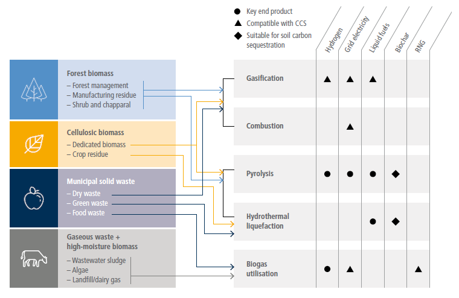
Figure 6.14 | Range of advanced bioenergy conversion pathways (excluding traditional biomass, direct heat generation, first-generation biofuels, and non-energy products) based on feedstock, targeted end product, and compatibility with carbon dioxide removal (CDR) via carbon capture and storage (CCS) and soil carbon sequestration. Source: modified with permission fromBaker et al. (2020).
A major scale-up of bioenergy production will require dedicated production of advanced biofuels. First-generation biofuels produced directly from food crops or animal fats have limited potential and lower yield per land area than advanced biofuels. Wastes and residues (e.g., from agricultural, forestry, animal manure processing) or biomass grown on degraded, surplus, and marginal land can provide opportunities for cost-effective and sustainable bioenergy at significant but limited scale (Morris et al. 2013; Saha and Eckelman 2018; Fajardy and Mac Dowell 2020; Spagnolo et al. 2020). Assessing the potential for a major scale-up of purpose-grown bioenergy is challenging due to its far-reaching linkages to issues beyond the energy sector, including competition with land for food production and forestry, water use, impacts on ecosystems, and land-use change (IPCC 2020; Roe et al. 2021) (Chapter 12). These factors, rather than geophysical characteristics, largely define the potential for bioenergy and explain the difference in estimates of potential in the literature. Biomass resources are not always in close proximity to energy demand, necessitating additional infrastructure or means to transport biomass or final bioenergy over larger distances and incur additional energy use (Baik et al. 2018; Singh et al. 2021).
An important feature of bioenergy is that it can be used to remove carbon from the atmosphere by capturing CO2 in different parts of the conversion process and then permanently storing the CO2 (BECCS or biochar) (Smith et al. 2016; Fuss et al. 2018) (Chapters 3 and 7, and Section 12.5). Some early opportunities for low-cost BECCS are being utilised in the ethanol sector but these are applicable only in the near-term at the scale of ≤100 MtCO2 yr –1 (Sanchez et al. 2018). Several technological and institutional barriers exist for large-scale BECCS implementation, including large energy requirements for CCS, limit and cost of biomass supply and geologic sinks for CO2 in several regions, and cost of CO2 capture technologies ( high confidence). Besides BECCS, biofuels production through pyrolysis and hydrothermal liquefaction creates biochar, which could also be used to store carbon as 80% of the carbon sequestered in biochar will remain in the biochar permanently (Chapter 7). In addition to its ability to sequester carbon, biochar can be used as a soil amendment (Wang et al. 2014b).
First-generation bioenergy is currently competitive in some markets though, on average, its costs are higher than other forms of final energy. Bioenergy from waste and residues from forestry and agriculture is also currently competitive, but the supply is limited (Aguilar et al. 2020). These costs are context-dependent, and regions having large waste resources are already producing low-cost bioenergy (Jin and Sutherland 2018). In the future, technology costs are anticipated to decrease, but bioenergy produced through cellulosic feedstocks may remain more expensive than fossil alternatives. Large-scale deployment of early opportunities, especially in the liquid fuel sector, may reduce the technological costs associated with biomass conversion (IEA 2020g). At the same time, the cost of feedstocks may rise as bioenergy requirements increase, especially in scenarios with large bioenergy deployment (Muratori et al. 2020). The costs of bioenergy production pathways are highly uncertain (Table 6.4).
Table 6.4 | The costs of electricity generation, hydrogen production, and second-generation liquid fuels production from biomass in 2020. These costs are adapted from Bhave et al. (2017), Daioglou et al. (2020), NREL (2020a, 2020b), Witcover and Williams (2020), and Lepage et al. (2021).
Unit | Low | Median | High | |
Bioelectricity with CCS | USD MWh –1 | 74 | 86 | 160 |
Bioelectricity without CCS | USD MWh –1 | 66 | 84 | 112 |
Biohydrogen with CCSa | USD kg –1 | 1.63 | 2.37 | 2.41 |
Biohydrogen without CCSa | USD kg –1 | 1.59 | 1.79 | 2.37 |
Liquid biofuels with CCS | USD gge –1 | 1.34 | 4.20 | 7.85 |
Liquid biofuels without CCS | USD gge –1 | 1.15 | 4.00 | 7.60 |
aUsing cellulosic feedstocks.
•Electricity. The costs of baseload electricity production with biomass are higher than corresponding fossil electricity production with and without CCS, and are likely to remain as such without carbon pricing (Bhave et al. 2017). The additional cost associated with CO2 capture are high for conventional solvent-based technologies. However, upcoming technologies such as chemical looping are well-suited to biomass and could reduce CCS costs.
•Hydrogen. The costs of hydrogen production from biomass are somewhat higher than, but comparable, to that produced by natural gas reforming with CCS. Further, the incremental costs for incorporating CCS in this process are less than 5% of the levelised costs in some cases, since the gasification route creates a high-purity stream of CO2 (Muratori et al. 2017a; Sunny et al. 2020). While these processes have fewer ongoing prototypes/demonstrations, the costs of biomass-based hydrogen (with or without CCS) are substantially cheaper than that produced from electrolysis utilising solar/wind resources (Kayfeci et al. 2019; Newborough and Cooley 2020), even though electrolysis costs are dropping.
•Liquid biofuels. First-generation sugar-based biofuels (e.g., ethanol produced via fermentation) or biodiesel produced from vegetable oils and animal fats, are produced in several countries at large scale and costs competitive with fossil fuels. However, supply is limited. The costs for second-generation processes (Fischer-Tropsch and cellulosic ethanol) are higher in most regions (Li et al. 2019). Technological learning is projected to reduce these costs by half (IEA 2020g).
Large-scale bioenergy production will require more than wastes/residues and cultivation on marginal lands, which may raise conflicts with SDGs relevant to environmental and societal priorities (Heck et al. 2018; Gerten et al. 2020) (Chapter 12). These include competition with food crops, implications for biodiversity, potential deforestation to support bioenergy crop production, energy security implications from bioenergy trade, point-of-use emissions and associated effects on air quality, and water use and fertiliser use (Fajardy and Mac Dowell 2018; Fuss et al. 2018; Tanzer and Ramírez 2019; Brack and King 2020). Overall, the environmental impact of bioenergy production at scale remains uncertain and varies by region and application.
Alleviating these issues would require some combination of increasing crop yields, improving conversion efficiencies, and developing advanced biotechnologies for increasing the fuel yield per tonne of feedstock (Henry et al. 2018). Policy structures would be necessary to retain biodiversity, manage water use, limit deforestation and land-use change emissions, and ultimately optimally integrate bioenergy with transforming ecosystems. Large-scale international trade of biomass might be required to support a global bioeconomy, raising questions about infrastructure, logistics, financing options, and global standards for bioenergy production and trade (Box 6.10). Additional institutional and economic barriers are associated with accounting of carbon dioxide removal, including BECCS (Fuss et al. 2014; Muratori et al. 2016; Fridahl and Lehtveer 2018).
Lifecycle emissions impacts from bioenergy are subject to large uncertainties and could be incompatible with net-zero emissions in some contexts. Due to the potentially large energy conversion requirements and associated GHG emissions (Chapters 7 and 12), bioenergy systems may fail to deliver near-zero emissions depending on operating conditions and regional contexts (Elshout et al. 2015; Daioglou et al. 2017; Staples et al. 2017; Hanssen et al. 2020; Lade et al. 2020). As a result, bioenergy carbon neutrality is debated and depends on factors such as the source of biomass, conversion pathways and energy used for production and transport of biomass, and land-use changes, as well as assumed analysis boundary and considered time scale (Zanchi et al. 2012; Wiloso et al. 2016; Booth 2018; Fan et al. 2021). Similarly, the lifecycle emissions of BECCS remain uncertain and will depend on how effectively bioenergy conversion processes are optimised (Fajardy and Mac Dowell 2017; Tanzer and Ramírez 2019).
Acceptability of bioenergy is relatively low compared to other renewable energy sources like solar and wind (Poortinga et al. 2013; Ma et al. 2015; Peterson et al. 2015; EPCC 2017) and comparable to natural gas (Scheer et al. 2013). People also know relatively little about bioenergy compared to other energy sources (Whitmarsh et al. 2011a; EPCC 2017) and tend be be more ambivalent towards bioenergy compared to other mitigation options (Allen and Chatterton 2013). People evaluate biomass from waste products (e.g., food waste) more favourably than grown-for-purpose energy crops, which are more controversial (Plate et al. 2010; Demski et al. 2015). The most pressing concerns for use of woody biomass are air pollution and loss of local forests (Plate et al. 2010). Various types of bioenergy additionally raise concerns about landscape impacts (Whitmarsh et al. 2011a) and biodiversity (Immerzeel et al. 2014). Moreover, many people do not see biomass as a renewable energy source, possibly because it involves burning of material.
Box 6.5 | Methane Mitigation Options for Coal, Oil, and Gas
Methane emissions mainly from coal, oil, and gas currently represent in 2019 about 18% of energy supply sector greenhouse gas (GHG) emissions and 90% of global energy supply non-CO2 emissions in 2019 (Minx et al. 2021 b). While approximately 80% of the lifecycle methane emissions in the coal sector occur during underground mining, oil and gas emissions are spread throughout upstream, midstream, and downstream stages (Alvarez et al. 2018; IPCC 2019). For this reason, methane reductions from coal mining can be accomplished through coal mine methane recovery (where methane and coal are recovered simultaneously) and from the ventilation air, which can cumulatively reduce methane emissions by 50–75% (Zhou et al. 2016; Singh and Hajra 2018). Governments incentivise such operations through a number of emissions trading and offset programmes (Haya et al. 2020). Methane emissions in the oil and gas sector can be reduced by leak detection and repair, relevant across varying time scales (hours to decades) and regional scopes (component/facility level to continental) (Fox et al. 2019). Around 50% of the methane emitted from oil and gas infrastructure can be mitigated at net-negative costs; that is, the market price of the recovered methane is higher than the mitigation costs (IEA 2021e). As CO2 emissions are reduced and fossil fuel consumption decreases, methane emissions associated with these supply chains are anticipated to decline (Section 6.7). That said, substantial ‘legacy’ methane emissions – methane leaks after abandonment – will remain, even if a complete fossil fuel phase-out takes place. These legacy emissions are estimated to be less than 1–4% of overall methane emissions across all fossil fuel sources (Kholod et al. 2020; Williams et al. 2021b). Even without a complete phase-out, 50–80% of methane emissions from coal, oil and gas could be avoided with currently available technologies at less than USD50 tCO2-eq –1 (Harmsen et al. 2019; Höglund-Isaksson et al. 2020). Methane recovery from abandoned coal mines could offset most project costs (Singh and Sahu 2018). For abandoned oil and gas wells, low plugging costs could be offset through methane recovery, while high plugging costs would likely require some market or policy support (Kang et al. 2019).
6.4.2.7Fossil Energy
Fossil fuels could play a role in climate change mitigation if strategically deployed with CCS ( high confidence). On the one hand, the primary mechanism for reducing emissions is to eliminate the unabated fossil fuel use. On the other hand, fossil energy combined with CCS provides a means of producing low-carbon energy while still utilising the available base of fossil energy worldwide and limiting stranded assets. While Section 6.4.2.5 discusses the important aspects of CCS with fossil fuels, this section aims to elucidate the feasibility criteria around these fuels itself.
Fossil fuel reserves have continued to rise because of advanced exploration and utilisation techniques ( high confidence). A fraction of these available reserves can be used consistent with mitigation goals when paired with CCS opportunities in close geographical proximity ( high confidence). Based on continued exploration, the fossil fuel resource base has increased significantly; for example, a 9% increase in gas reserves and 12% in oil reserves was observed in the USA between 2017 and 2018. This increase is a result of advanced exploration techniques, which are often subsidised (Lazarus and van Asselt 2018; MA et al. 2018). Fossil reserves are distributed unevenly throughout the globe. Coal represents the largest remaining resource (close to 500 ZJ). Conventional oil and gas resources are an order of magnitude smaller (15–20 ZJ each). Technological advances have increased the reserves of unconventional fossil in the last decade. Discovered ultimate recoverable resources of unconventional oil and gas are comparable to conventional oil and gas (Fizaine et al. 2017).
It is unlikely that resource constraints will lead to a phase-out of fossil fuels, and instead, such a phase-out would require policy action. Around 80% of coal, 50% of gas, and 20% of oil reserves are likely to remain unextractable under 2°C constraints (McGlade and Ekins 2015; Pellegrini et al. 2020). Reserves are more likely to be utilised in a low-carbon transition if they can be paired with CCS. Availability of CCS technology not only allows continued use of fossil fuels as a capital resource for countries but also paves the way for CDR through BECCS (Haszeldine 2016; Pye et al. 2020). While the theoretical geologic CO2 sequestration potential is vast, there are limits on how much resource base could be utilised based on geologic, engineering, and source-sink mapping criteria (Budinis et al. 2017).
Technological changes have continued to drive down fossil fuel extraction costs. Significant decarbonisation potential also exists via diversification of the fossil fuel uses beyond combustion (high evidence). The costs of extracting oil and gas globally have gone down by utilising hydraulic fracturing and directional drilling for resources in unconventional reservoirs (Wachtmeister and Höök 2020). Although the extraction of these resources is still more expensive than those derived from conventional reservoirs, the large availability of unconventional resources has significantly reduced global prices. The emergence of liquefied natural gas (LNG) markets has also provided opportunities to export natural gas significant distances from the place of production (Avraam et al. 2020). The increase in availability of natural gas has been accompanied by an increase in the production of natural gas liquids as a co-product to oil and gas. Over the period from 2014 to 2019, exports of natural gas liquids increased by 160%. Natural gas liquids could potentially be a lower-carbon alternative to liquid fuels and hydrocarbons. On the demand side, natural gas can be used to produce hydrogen using steam methane reforming, which is a technologically mature process (Sections 6.4.4 and 6.4.5). When combined with 90% CO2 capture, the costs of producing hydrogen are around USD1.5–2 kg(H2)–1 (Collodi et al. 2017; Newborough and Cooley 2020), considerably less than hydrogen produced via electrolysis.
Significant potential exists for gasifying deep-seated coal deposits in situ to produce hydrogen. Doing so reduces fugitive methane emissions from underground coal mining. The integration costs of this process with CCS are less than with natural gas reforming. The extent to which coal gasification could be compatible with low-carbon energy would depend on the rate of CO2 capture and the ultimate use of the gas (Verma and Kumar 2015). Similarly, for ongoing underground mining projects, coal mine methane recovery can be economic for major coal producers such as China and India. Coal mine methane and ventilation air methane recovery can reduce the fugitive methane emissions by 50–75% (Zhou et al. 2016; Singh and Sahu 2018).
The cost of producing electricity from fossil sources has remained roughly the same with some regional exceptions while the costs of producing transport fuels has gone down significantly ( high confidence). The cost of producing electricity from fossil fuels has remained largely static, with the exception of some regional changes, for example, a 40% cost reduction in the USA for natural gas (Rai et al. 2019), where the gas wellhead price has declined by almost two-thirds due to large reserves. Similarly, the global price of crude oil has declined from almost USD100 bbl –1 to USD55 bbl –1 in the last five years.
The energy return of investment (EROI) is a useful indicator of full fossil lifecycle costs. Fossil fuels create significantly more energy per unit energy invested – or in other words have much larger EROI – than most cleaner fuels such as biomass or electrolysis-derived hydrogen, where intensive processing reduces EROI (Hall et al. 2014). That said, recent years have seen a decrease in fossil EROI, especially as underground coal mining still represents a substantial portion of global production. Exploitation of unconventional gas reservoirs is also energy intensive and has led to a reduction in EROI. The primary energy EROI of fossil fuels has converged at about 30, which represents a 20-point decrease from the 1995 value for coal (Brockway et al. 2019). When processing and refining stages are considered, these EROI values further decrease.
Several countries have large reserves of fossil fuels. Owing to climate constraints, these may become stranded, causing considerable economic impacts ( high confidence) (Sections 6.7.3 and 6.7.4, and Box 6.13). While global fossil energy resources are greater than 600 ZJ, more than half of these resources would likely be unburnable, even in the presence of CCS (McGlade and Ekins 2015; Pye et al. 2020). This would entail a significant capital loss for the countries with large reserves. The total amount of stranded assets in such a case would amount to USD1–4 trillion at present value (Box 6.13).
Apart from CO2 emissions and air pollutants from fossil fuel combustion, other environmental impacts include fugitive methane leakages and implications to water systems . While the rate of methane leakage from unconventional gas systems is uncertain, their overall GHG impact is less than coal (Tanaka et al. 2019; Deetjen and Azevedo 2020). The stated rate of leakage in such systems ranges from 1–8%, and reconciling different estimates requires a combination of top-down and bottom-up approaches (Zavala-Araiza et al. 2015; Grubert and Brandt 2019). Similarly, for coal mining, fugitive methane emissions have grown, despite some regulations on the degree to which emission controls must be deployed. Recent IPCC inventory guidance also notes considerable CO2 emissions resulting from spontaneous combustion of the coal surface, and accounting for these emissions will likely increase the overall lifecycle emissions by 1–5% (IPCC 2019; Singh 2019; Fiehn et al. 2020).
Another key issue consistently noted with unconventional wells (both oil and gas, and coalbed methane) is the large water requirements (Qin et al. 2018). The overall water footprint of unconventional reservoirs is higher than conventional reservoirs because of higher lateral length and fracturing requirements (Scanlon et al. 2017; Kondash et al. 2018). Moreover, produced water from such formations is moderately to highly brackish, and treating such waters has large energy consumption (Bartholomew and Mauter 2016; Singh and Colosi 2019).
Oil and coal consistently rank among the least preferred energy sources in many countries ( high confidence). The main perceived advantage of fossil energy is the relatively low costs, and emphasising these costs might increase acceptability somewhat (Pohjolainen et al. 2018; Boyd et al. 2019; Hazboun and Boudet 2020). Acceptability of fossil fuels is, on average, similar to acceptability of nuclear energy, although evaluations are less polarised. People evaluate natural gas as somewhat more acceptable than other fossil fuels, although they generally oppose hydraulic fracturing (Clarke et al. 2016). Yet, natural gas is evaluated as less acceptable than renewable energy sources, although evaluations of natural gas and biogas are similar (Liebe and Dobers 2019; Plum et al. 2019). Acceptability of fossil energy tends to be higher in countries and regions that strongly rely on them for their energy production (Pohjolainen et al. 2018; Boyd et al. 2019). Combining fossil fuels with CCS can increase their acceptability (Van Rijnsoever et al. 2015; Bessette and Arvai 2018). Some people seem ambivalent about natural gas, as they perceive both benefits (e.g., affordability, less carbon emissions than coal) and disadvantages (e.g., finite resource, contributing to climate change) (Blumer et al. 2018).
Fossil fuel subsidies have been valued in the order of USD0.5–5 trillion annually by various estimates which have the tendency to introduce economic inefficiency within systems (Jakob et al. 2015; Merrill et al. 2015) ( high confidence). Subsequent reforms have been suggested by different researchers who have estimated reductions in CO2 emissions may take place if these subsidies are removed (Mundaca 2017). Such reforms could create the necessary framework for enhanced investments in social welfare – through sanitation, water, clean energy – with differentiating impacts (Edenhofer 2015).
6.4.2.8Geothermal Energy
Geothermal energy is heat stored in the Earth’s subsurface and is a renewable resource that can be sustainably exploited. The geophysical potential of geothermal resources is 1.3 to 13 times the global electricity demand in 2019 (medium confidence). Geothermal energy can be used directly for various thermal applications, including space heating and industrial heat input, or converted to electricit y depending on the source temperature (Limberger et al. 2018; Moya et al. 2018; REN21 2019).
Suitable aquifers underlay 16% of the Earth’s land surface and store an estimated 110,000–1,400,000 PWh (400,000–1,450,000 EJ) that could theoretically be used for direct heat applications. For electricity generation, the technical potential of geothermal energy is estimated to be between 30 PWh yr –1 (108 EJ yr –1) (to 3 km depth) and 300 PWh yr –1 (1080 EJ yr –1) (to 10 km depth). For direct thermal uses, the technical potential is estimated to range from 2.7–86 PWh yr –1 (9.7–310 EJ yr –1) (IPCC 2011). Despite the potential, geothermal direct heat supplies only 0.15% of the annual global final energy consumption. The technical potential for electricity generation, depending on the depth, can meet one third to almost three times the global final consumption – based on International Energy Agency (IEA) database for IPCC. The mismatch between potential and developed geothermal resources is caused by high upfront costs, decentralised geothermal heat production, lack of uniformity among geothermal projects, geological uncertainties, and geotechnical risks (IRENA 2017a; Limberger et al. 2018). A limited number of countries have a long history in geothermal. At least in two countries (Iceland and New Zealand), geothermal accounts for 20–25% of electricity generation (Pan et al. 2019; Spittler et al. 2020). Furthermore, in Iceland approximately 90% of the households are heated with geothermal energy. In Kenya, as of July 2019, geothermal accounted for 734 MW effective capacity spread over 10 power plants and approximately one third of the total installed capacity (Kahlen 2019).
There are two main types of geothermal resources: convective hydrothermal resources, in which the Earth’s heat is carried by natural hot water or steam to the surface; and hot, dry rock resources, in which heat cannot be extracted using water or steam, and other methods must be developed. There are three basic types of geothermal power plants: (i) dry steam plants use steam directly from a geothermal reservoir to turn generator turbines; (ii) flash steam plants take high-pressure hot water from deep inside the Earth and convert it to steam to drive generator turbines; and (iii) binary cycle power plants transfer the heat from geothermal hot water to another liquid. Many of the power plants in operation today are dry steam plants or flash plants (single, double and triple) harnessing temperatures of more than 180°C.
However, medium temperature fields are increasingly used for electricity generation or combined heat and power. The use of medium temperature fields has been enabled through the development of binary cycle technology, in which a geothermal fluid is used via heat exchangers. Increasing binary generation technologies are now being utilised instead of flash steam power plants. This will result in almost 100% injection and essentially zero GHG emissions, although GHG emissions from geothermal power production are generally small compared to traditional baseload thermal energy power generation facilities (Fridriksson et al. 2016).
Additionally, new technologies are being developed like Enhanced Geothermal Systems (EGS), which is in the demonstration stage (IRENA 2018), deep geothermal technology, which may increase the prospects for harnessing the geothermal potential in a large number of countries, or shallow-geothermal energy, which represents a promising supply source for heating and cooling buildings (Narsilio and Aye 2018). Successful large-scale deployment of shallow geothermal energy will depend not only on site-specific economic performance but also on developing suitable governance frameworks (Bloemendal et al. 2018; García-Gil et al. 2020). Technologies for direct uses like district heating, geothermal heat pumps, greenhouses, and other applications, are widely used and considered mature. Given the limited number of plants commissioned, economic indicators (Figure 6.15) vary considerably depending on site characteristics.
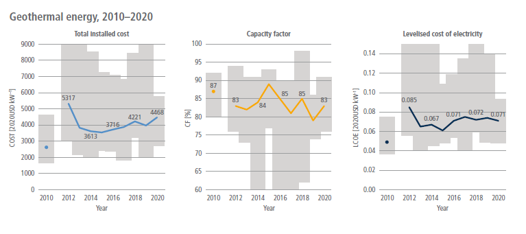
Figure 6.15 | Global weighted averagetotal installed costs, capacity factors and levelised costs of electricity (LCOE) for geothermal power per year (2010–2020). The shaded area represents the 5% and 95% percentiles. Source: with permission fromIRENA (2021a).
Public awareness and knowledge of geothermal energy is relatively low ( high confidence). Geothermal energy is evaluated as less acceptable than other renewable energy sources such as solar and wind, but is preferred over fossil and nuclear energy, and in some studies, over hydroelectric energy ( high confidence) (Pellizzone et al. 2015; Steel et al. 2015; Karytsas et al. 2019; Hazboun and Boudet 2020). Some people are concerned about the installation of geothermal facilities close to their homes, similar to solar and wind projects (Pellizzone et al. 2015). The main concerns about geothermal energy, particularly for large-scale, high-temperature geothermal power generation plants, involve water usage, water scarcity, and seismic risks of drilling (Dowd et al. 2011). Moreover, noise, smell and damages to the landscape have been reasons for protests against specific projects (Walker 1995). However, with the implementation of modern technologies, geothermal presents fewer adverse environmental impacts. At the same time, people perceive geothermal energy as relatively environmentally friendly (Tampakis et al. 2013).
6.4.2.9Marine Energy
The ocean is a vast source of energy (Hoegh-Guldberg et al. 2019). Ocean energy can be extracted from tides, waves, ocean thermal energy conversion (OTEC), currents, and salinity gradients (Bindoff et al. 2019). Their technical potentials, without considering possible exclusion zones, are explored below. Tidal energy, which uses elevation differences between high and low tides, appears in two forms: potential energy (rise and fall of the tide); and current energy (from tidal currents). The global technically harvestable tidal power from areas close to the coast is estimated as about 1.2 PWh yr –1 (4.3 EJ yr –1) (IRENA 2020b). The potential for tidal current energy is estimated to be larger than that for tidal range or barrage (Melikoglu 2018). Ocean wave energy is abundant and predictable and can be extracted directly from surface waves or pressure fluctuations below the surface (Melikoglu 2018). Its global theoretical potential is 29.5 PWh yr –1 (106 EJ yr –1),which means that wave energy alone could meet all global energy demand (Mørk et al. 2010; IRENA 2020b). The temperature gradients in the ocean can be exploited to produce energy, and its total estimated available resource could be up to 44.0 PWh yr –1 (158 EJ yr –1) (Rajagopalan and Nihous 2013). Salinity gradient energy, also known as osmotic power, has a global theoretical potential of over 1.6 PWh yr –1 (6.0 EJ yr –1) (IRENA 2020b). The greatest advantage of most marine energy, excluding wave energy, is that their sources are highly regular and predictable, and energy can be furthermore generated both day and night. An additional use of sea water is to develop lower-cost district cooling systems near the sea (Hunt et al. 2019). The greatest barrier to most marine technology advances is the relatively high upfront costs, uncertainty on environmental regulation and impact, need for investments and insufficient infrastructure (Kempener and Neumann 2014a, b). There are also concerns about technology maturity and performance; thus, not all have the potential to become economically viable (IRENA 2020b).
6.4.2.10Waste-to-Energy
Waste-to-energy (WTE) is a strategy to recoverenergy from waste in a form of consumable heat, electricity, or fuel (Zhao et al. 2016). Thermal (incineration, gasification, and pyrolysis) and biological (anaerobic digestion and landfill gas to energy) technologies are commonly used (Ahmad et al. 2020). When WTE technologies are equipped with proper air pollution reduction facilities they can contribute to clean electricity production and reduction of GHG emissions. However, if not properly operated, they can exacerbate air quality issues.
In 2019, there were more than 1,200 WTE incineration facilities worldwide, with estimated capacity of 310 million tonnes per year (UNECE 2020). It is estimated that treatment of a minimum of 261 million tonnes/year of waste could produce 283 TWh (1 EJ) of power and heat by 2022 (Awasthi et al. 2019). Incineration plants can reduce the mass of waste by 70–80% and the volume of waste by 80–90% (Haraguchi et al. 2019). Incineration technology can reduce water and soil pollution (Gu et al. 2019). However, if not properly handled, dust, and gases such as SO2, HCL, HF, NO2, and dioxins in the flue gases can harm the environment (Mutz et al. 2017). Anaerobic digestion technology has a positive environmental impact and the ability to reduce GHG emissions (Ayodele et al. 2018; Cudjoe et al. 2020). The by-product of the anaerobic digestion process could be used as a nutrient-rich fertiliser for enhancing soil richness for agricultural purposes (Wainaina et al. 2020). Due to the potential negative impacts on domestic environment and residents’ health, WTE projects such as incineration encounter substantial opposition from the local communities in which they are located (Baxter et al. 2016; Ren et al. 2016). Therefore, for WTE to be deployed more widely, policies would need to be tailored with specific guidelines focused on mitigating emissions, which may have an adverse effect on the environment.
Depending on the origin of the waste used, the integration of WTE and carbon capture and storage (CCS) could enable waste to be a net-zero or even net negative emissions energy source (Kearns 2019; Wienchol et al. 2020). For example, in Europe only, the integration of CCS with WTE facilities has the potential to capture about 60 to 70 million tonnes of carbon dioxide annually (Tota et al. 2021).
Waste-to-energy is an expensive process compared to other energy sources such as fossil fuels and natural gas (Mohammadi and Harjunkoski 2020). However, the environmental and economic benefits make its high financial costs justifiable. In 2019, the global WTE market size was valued at USD31 billion, and it is predicted to experience 7.4% annual growth until 2027 (UNECE 2020).
6.4.3Energy System Integration
Greenhouse gases are emitted across all economic activities. Therefore, cost-effective decarbonisation requires a ‘system of systems’ approach that considers the interaction between different energy sectors and systems. Flexibility technologies and advanced control of integrated energy systems (e.g., considering the interaction between electricity, heating/cooling, gas/hydrogen, transport sectors) could reduce energy infrastructure investments substantially in future low-carbon energy systems (Strbac et al. 2015b; Jacobson et al. 2019).
The electricity grid will serve as a backbone of future low-carbon energy systems. Integration of large amounts of VRE generation (Hansen et al. 2019), particularly wind and solar generation (Bistline and Young 2019; Perez et al. 2019), presents economic and technical challenges to electricity system management across different time scales from sub-seconds, hours, days, seasons, to multiple years. Furthermore, electrification of segments of the transport and heat sectors could disproportionately increase peak demand relative to supply (Bistline et al. 2021). Increases in peak demand may require reinforcing network infrastructures and generation in the historical passive system operation paradigm (Strbac et al. 2020).
These challenges to electricity system management can be addressed through system integration and a digitalised control paradigm involving advanced information and communication technologies. Real-time maintenance of supply-demand balance and sufficient flexibility technologies such as electricity storage, flexible demand, and grid forming converters (Strbac et al. 2015a; López Prol and Schill 2021) would be increasingly valuable for incorporating larger amounts of VRE generation. This flexibility will be particularly important to deal with sudden losses of supply, for example, due to a failure of a large generator or interconnector or a rapid increase in demand (Teng et al. 2017; Chamorro et al. 2020).
The transition to a digitalised-based electricity system control paradigm would facilitate radical changes in the security of supply, moving from the traditional approach of redundancy in assets to a smart control paradigm. Advanced control and communication systems can significantly reduce the electricity system investment and operation costs (Harper et al. 2018; Münster et al. 2020).
6.4.3.1Importance of Cross-sector Coupling for Cost-effective Energy System Decarbonisation
Integrated whole-system approaches can reduce the costs of low-carbon energy system transitions ( high confidence). A lack of flexibility in the electricity system may limit the cost-effective integration of technologies as part of broader net-zero energy systems. At the same time, the enormous latent flexibility hidden in heating and cooling, hydrogen, transport, gas systems, and other energy systems provides opportunities to take advantage of synergies and to coordinate operations across systems (Martin et al. 2017; Zhang et al. 2018; Martinez Cesena and Mancarella 2019; Pavičević et al. 2020; Bogdanov et al. 2021) (Figure 6.16).
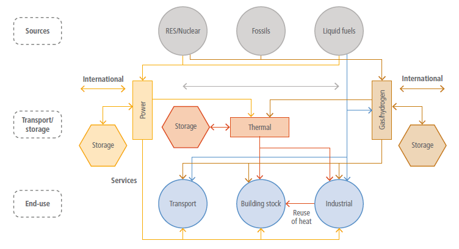
Figure 6.16 | Interaction between different energy sectors. Source: extracted with permission from Münster et al. (2020).
Sector coupling can significantly increase system flexibility, driven by the application of advanced technologies (Clegg and Mancarella 2016; Heinen et al. 2016; Bogdanov et al. 2019; Solomon et al. 2019; Zhang et al. 2019b; Zhang and Fujimori 2020; Zhao et al. 2021). For example, district heating infrastructure can generate both heat and power. Cooling systems and electrified heating systems in buildings can provide flexibility through preheating and precooling via thermal energy storage (Z. Li et al. 2016; G. Li et al. 2017). System balancing services can be provided by electric vehicles (EVs) based on vehicle-to-grid concepts and deferred charging through smart control of EV batteries without compromising customers’ requirements for transport (Aunedi and Strbac 2020).
Hydrogen production processes (power-to-gas and vice versa) and hydrogen storage can support short-term and long-term balancing in the energy systems and enhance resilience (Stephen and Pierluigi 2016; Strbac et al. 2020). However, the economic benefits of flexible power-to-gas plants, energy storage, and other flexibility technological and options will depend on the locations of VRE sources, storage sites, gas, hydrogen, and electricity networks (Jentsch et al. 2014; Heymann and Bessa 2015; Ameli et al. 2020). Coordinated operation of gas and electricity systems can bring significant benefits in supplying heat demands. For example, hybrid heating can eliminate investment in electricity infrastructure reinforcement by switching to heat pumps in off-peak hours and gas boilers in peak hours (Fischer et al. 2017; Dengiz et al. 2019; Bistline et al. 2021). The heat required by direct air carbon capture and storage (DACCS) could be effectively supplied by inherent heat energy in nuclear plants, enhancing overall system efficiency (Realmonte et al. 2019).
Rather than incremental planning, strategic energy system planning can help minimise long-term mitigation costs ( high confidence). With a whole-system perspective, integrated planning can consider both short-term operation and long-term investment decisions, covering infrastructure from local to national and international, while meeting security of supply requirements and incorporating the flexibility provided by different technologies and advanced control strategies (Zhang et al. 2018; O’Malley et al. 2020; Strbac et al. 2020). Management of conflicts and synergies between local district and national level energy system objectives, including strategic investment in local hydrogen and heat infrastructure, can drive significant whole-system cost savings (Zhang et al. 2019b; Fu et al. 2020). For example, long-term planning of the offshore grid infrastructure to support offshore wind development, including interconnection between different countries and regions, can provide significant savings compared to a short-term incremental approach in which every offshore wind farm is individually connected to the onshore grid (E3G 2021).
6.4.3.2Role of Flexibility Technologies
Flexibility technologies – including energy storage, demand-side response, flexible/dispatchable generation, grid-forming converters, and transmission interconnection – as well as advanced control systems – can facilitate cost-effective and secure low-carbon energy systems ( high confidence). Flexibility technologies have already been implemented, but they can be enhanced and deployed more widely. Due to their interdependencies and similarities, there can be both synergies and conflicts for utilising these flexibility options (Bistline et al. 2021). It will therefore be important to coordinate the deployment of the potential flexibility technologies and smart control strategies. Important electricity system flexibility options include the following:
•Flexible/dispatchable generation. Advances in generation technologies, for example, gas/hydrogen plants and nuclear plants, can enable them to provide flexibility services. These technologies would start more quickly, operate at lower power output, and make faster output changes, enabling more secure and cost-effective integration of VRE generation and end-use electrification. There are already important developments in increasing nuclear plants flexibility (e.g., in France (Office of Nuclear Energy 2021)) and the development of small modular reactors, which could support system balancing (FTI Consulting 2018).
•Grid-forming converters (inverters). The transition from conventional electricity generation, applying mainly synchronous machines to inverter-dominated renewable generation, creates significant operating challenges. These challenges are mainly associated with reduced synchronous inertia, system stability, and ‘black start’ capability. Grid-forming converters will be a cornerstone for the control of future electricity systems dominated by VRE generation. These converters will address critical stability challenges, including the lack of system inertia, frequency and voltage regulation, and black start services while reducing or eliminating the need to operate conventional generation (Tayyebi et al. 2019).
•Interconnection. Electricity interconnections between different regions can facilitate more cost-effective renewable electricity deployment. Interconnection can enable large-scale sharing of energy and provide balancing services. Backup energy carriers beyond electricity, such as ammonia, can be shared through gas/ammonia/hydrogen-based interconnections, strengthening temporal coupling of multiple sectors in different regions (Bhagwat et al. 2017; Brown et al. 2018) (Section 6.4.5).
•Demand-side response. Demand-side schemes – including, for example, smart appliances, EVs, and building-based thermal energy storage (Heleno et al. 2014) – can provide flexibility services across multiple time frames and systems. Through differentiation between essential and non-essential needs during emergency conditions, smart control of demands can significantly enhance system resilience (Chaffey 2016).
•Energy storage. Energy storage technologies (Section 6.4.4) can act as both demand and generation sources. They can provide services such as system balancing, various ancillary services, and network management. Long-duration energy storage can significantly enhance the utilisation of renewable energy sources and reduce the need for firm low-carbon generation (Sepulveda et al. 2021).
6.4.3.3Role of Digitalisation and Advanced Control Systems
A digitalised energy system can significantly reduce energy infrastructure investments while enhancing supply security and resilience ( high confidence) (Andoni et al. 2019; Strbac et al. 2020). Significant progress has been made in the development of technologies essential for the transition to a digitalised energy control paradigm, although the full implementation is still under development. Electrification and the increased integration of the electricity system with other systems will fundamentally transform the operational and planning paradigm of future energy infrastructure. A fully intelligent and sophisticated coordination of the multiple systems through smart control will support this paradigm shift. This shift will provide significant savings through better utilisation of existing infrastructure locally, regionally, nationally, and internationally. Supply system reliability will be enhanced through advanced control of local infrastructure (Strbac et al. 2015a). Furthermore, this paradigm shift offers the potential to increase energy efficiency through a combination of technologies that gather and analyse data and consequently optimise energy use in real-time.
The transition to advanced data-driven control of energy system operations (Cremer et al. 2019; Sun et al. 2019a) will require advanced information and communication technologies and infrastructure, including the internet, wireless networks, computers, software, middleware, smart sensors, internet of things components, and dedicated technological developments (Hossein Motlagh et al. 2020). The transition will raise standardisation and cyber-security issues, given that digitalisation can become a single point of failure for the complete system (Ustun and Hussain 2019; Unsal et al. 2021). Implementing peer-to-peer energy trading based on blockchain is expected to be one of the key elements of next-generation electricity systems (Qiu et al. 2021). This trading will enable consumers to drive system operation and future design, increasing overall system efficiency and security of supply while reducing emissions without sacrificing users’ privacy (Andoni et al. 2019; Ahl et al. 2020). When deployed with smart contracts, this concept will be suitable for energy systems involving many participants, where a prerequisite is digitalisation (e.g., smart meters, end-use demand control systems) (Juhar and Khaled 2018; Teufel et al. 2019).
6.4.3.4 System Benefits of Flexibility Technologies and Advanced Control Systems
New sources of flexibility and advanced control systems provide a significant opportunity to reduce low-carbon energy system costs by enhancing operating efficiency and reducing energy infrastructure and low-carbon generation investments, while continuing to meet security requirements ( high confidence). In the USA, for example, one study found that flexibility in buildings alone could reduce US CO2 emissions by 80 Mt yr –1 and save USD18 billion yr –1 in electricity system costs by 2030 (Satchwell et al. 2021). Key means for creating savings are associated with the following:
•Efficient energy system operation. Flexibility technologies such as storage, demand-side response, interconnection, and cross-system control will enable more efficient, real-time demand and supply balancing. This balancing has historically been provided by conventional fossil-fuel generation (Nuytten et al. 2013).
•Savings in investment in low-carbon/renewable generation capacity. System flexibility sources can absorb or export surplus electricity, thus reducing or avoiding energy curtailment and reducing the need for firm low-carbon capacity such as nuclear and fossil-fuel plants with CCS (Newbery et al. 2013; Solomon et al. 2019). For example, one study found that flexibility technologies and advanced control systems could reduce the need for nuclear power by 14 GW and offshore wind by 20 GW in the UK’s low-carbon transition (Strbac et al. 2015b).
•Reduced need for backup capacity. System flexibility can reduce energy demand peaks, reducing the required generation capacity to maintain the security of supply, producing significant savings in generation investments (Strbac et al. 2020).
•Deferral or avoidance of electricity network reinforcement/addition. Flexibility technologies supported by advanced control systems can provide significant savings in investment in electricity network reinforcement that might emerge from increased demand, for example, driven by electrification of transport and heat sectors. Historical network planning and operation standards are being revised considering alternative flexibility technologies, which would further support cost-effective integration of decarbonised transport and heat sectors (Strbac et al. 2020).
6.4.4Energy Storage for Low-carbon Grids
Energy storage technologies make low-carbon electricity systems more cost-effective, allowing VRE technologies to replace more expensive firm low-carbon generation technologies (Carbon Trust 2016) and reducing investment costs in backup generation, interconnection, transmission, and distribution network upgrades ( high confidence). Energy system decarbonisation relies on increased electrification (Section 6.6.2.3). Meeting increasing demands with variable renewable sources presents challenges and could lead to costly infrastructure reinforcements. Energy storage enables electricity from variable renewables to be matched against evolving demands across both time and space, using short-, medium- and long-term storage of excess energy for delivery later or at a different location. In 2017, an estimated 4.67 TWh (0.017 EJ) of electricity storage was in operation globally (IRENA 2017b). If the integration of renewables is doubled from 2014 levels by 2030, the total capacity of global electricity storage could triple, reaching 11.89–15.27 TWh (0.043–0.055 EJ) (IRENA 2017b).
Energy storage technologies can provide a range of different grid services (Table 6.5). Energy storage enhances security of supply by providing real-time system regulation services (voltage support, frequency regulation, fast reserve, and short-term reserve). A greater proportion of variable renewable sources reduces system inertia, requiring more urgent responses to changes in system frequency, which rapid response storage technologies can provide (stability requires responses within sub-second time scale for provision of frequency and voltage control services). Energy storage also provides intermittent renewable sources with flexibility, allowing them to contribute a greater proportion of electrical energy and avoiding curtailment (capacity firming). Investment costs in backup generation, interconnection, transmission, and distribution network upgrades can thus be reduced (upgrade deferral), meaning that less low-carbon generation will need to be built while still reducing emissions. In the event of an outage, energy storage reserves can keep critical services running (islanding) and restart the grid (black start). The ability to store and release energy as required provides a range of market opportunities for buying and selling of energy (arbitrage).
Table 6.5 | Suitability of low-carbon energy storage technologies, interms of the grid services they can provide, and overall features such as technology maturity: where Low represents an emerging technology; Med represents a maturing technology; and High a fully mature technology. The opportunity for the cost of a technology to reduce over the next decade is represented by Low, Med and High and the lifetime of installations by: Long, for projects lasting more than 25 years; Med for those lasting 15–25 years; Short, for those lasting less than 15 years.
Suitability factor | PHS | CAES | LAES | TES | FES | LiB | Scap | RFB | PtX | RHFC |
Upgrade deferral | | | | | | | | | | |
Energy arbitrage | | | | | | | | | ||
Capacity firming | | | | | | | | | | |
Seasonal storage | | | | |||||||
Stability | | | | | | | | |||
Frequency regulation | | | | | | | | | | |
Voltage support | | | | | | | | | | |
Black start | | | | | | | | |||
Short-term reserve | | | | | | | | |||
Fast reserve | | | | | | | | | ||
Islanding | | | | | | | | |||
Uninterruptible power supply | | | | | | |||||
Maturity | High | High | Med | Low | High | Med | Low | Low | Low | Low |
Opportunity to reduce costs | Low | Low | Low | Med | Med | High | High | High | Med | High |
Lifetime | Long | Long | Long | Long | Med | Short | Med | Med | Med | Short |
Roundtrip efficiency | 60–80% | 30–60% | 55–90% | 70–80% | 90% | >95% | >95% | 80–90% | 35–60% | <30% |
Note: PHS – Pumped Hydroelectric Storage; CAES – Compressed Air Energy Storage; LAES – Liquid Air Energy Storage; TES – Thermal Energy Storage; FES – Flywheel Energy Storage; LIB – Li-ion Batteries; Scap – Supercapacitors; RFB – Redox Flow Batteries; RHFC – Reversible Hydrogen Fuel Cells; PtX – Power to fuels. Source: PHS – Barbour et al. 2016, Yang 2016, IRENA 2017b; CAES – Luo et al. 2014, Brandon et al. 2015, IRENA 2017b; LAES – Luo et al. 2014, Highview 2019; TES – Brandon et al. 2015, Gallo et al. 2016, Smallbone et al. 2017; FES – IRENA 2017b, Yulong et al. 2017; LIB – IRENA 2015 b, Hammond and Hazeldine 2015, Nykvist and Nilsson 2015, Staffell, I. and Rustomji, M. et al. 2016, IRENA 2017b, Schmidt et al. 2017 c, May et al. 2018; Scap – Brandon et al. 2015, Gur 2018; RFB – IRENA 2017b; RHFC – IEA 2015, Gur 2018.
No single, sufficiently mature energy storage technology can provide all the required grid services – a portfolio of complementary technologies working together can provide the optimum solution ( high confidence). Different energy storage technologies can provide these services and support cost-effective energy system decarbonisation (Carbon Trust 2016). To achieve very low-carbon systems, significant volumes of storage will be required (Strbac et al. 2015a; Section 6.4.3.2). There are few mature global supply chains for many of the less-developed energy storage technologies. This means that, although costs today may be relatively high, there are significant opportunities for future cost reductions, both through technology innovation and through manufacturing scale. Adding significant amounts of storage will reduce the price variation and, therefore, the profitability of additional and existing storage, increasing investment risk.
Energy storage extends beyond electricity storage and includes technologies that can store energy as heat, cold, and both liquid and gaseous fuels. Energy storage is a conversion technology, enabling energy to be converted from one form to another. This diversification improves the overall resilience of energy systems, with each system being able to cover supply shortfalls in the others. For example, storage can support the electrification of heating or cooling, as well as transport through electric vehicles, powered by batteries or by fuel cells. Storage significantly reduces the need for costly reinforcement of local distribution networks through smart charging schemes and the ability to flow electricity back to the grid (e.g., through vehicle-to-grid). By capturing otherwise wasted energy streams, such as heat or cold, energy storage improves the efficiency of many systems, such as buildings, data centres and industrial processes.
6.4.4.1Energy Storage Technologies
Pumped hydroelectric storage (PHS). PHS makes use of gravitational potential energy, using water as the medium. Water is pumped into an elevated reservoir using off-peak electricity and stored for later release when electricity is needed. These closed-loop hydropower plants have been in use for decades and account for 97% of worldwide electricity storage capacity (IRENA 2017b; IEA 2018b). PHS is best suited to balancing daily energy needs at a large scale, and advances in the technology now allow rapid response and power regulation in both generating and pumping mode (Valavi and Nysveen 2018; Dong et al. 2019; Kougias et al. 2019). The construction itself can cause disruption to the local community and environment (Hayes et al. 2019), the initial investment is costly, and extended construction periods delay return on investment (Section 6.4.2.3). In addition, locations for large-scale PHS plants are limited.
Advanced pump-turbines are being developed, allowing both reversible and variable-speed operation, supporting frequency control and grid stability with improved round-trip efficiencies (Ardizzon et al. 2014). New possibilities are being explored for small-scale PHS installations and expanding the potential for siting (Kougias et al. 2019). For example, in underwater PHS, the upper reservoir is the sea, and the lower is a hollow deposit at the seabed. Seawater is pumped out of the deposit to store off-peak energy and re-enters through turbines to recharge it (Kougias et al. 2019). Using a similar concept, underground siting in abandoned mines and caverns could be developed reasonably quickly (IEA 2020h). Storage of energy as gravitational potential can also be implemented using materials other than water, such as rocks and sand. Pumped technology is a mature technology (Rehman et al. 2015; Barbour et al. 2016) and can be important in supporting the transition to future low-carbon electricity grids (IHA 2021).
Batteries. There are many types of batteries, all having unique features and suitability, but their key feature is their rapid response time. A rechargeable battery cell is charged by using electricity to drive ions from one electrode to another, with the reverse occurring on discharge, producing a usable electric current (Crabtree et al. 2015). While lead-acid batteries (LABs) have been widely used for automotive and grid applications for decades (May et al. 2018), LIBs are increasingly being used in grid-scale projects (Crabtree et al. 2015), displacing LABs. The rapid response time of batteries makes them suitable for enhanced frequency regulation and voltage support, enabling the integration of variable renewables into electricity grids (Strbac and Aunedi 2016). Batteries can provide almost all electricity services, except for seasonal storage. LIBs, in particular, can store energy and power in small volumes and with low weight, making them the default choice for EVs (Placke et al. 2017). EV batteries are expected to form a distributed storage resource as this market grows, both impacting and supporting the grid (Staffell and Rustomji 2016).
Drawbacks of batteries include relatively short lifespans and the use of hazardous or costly materials in some variants. While LIB costs are decreasing (Schmidt et al. 2017; Vartiainen et al. 2020), the risk of thermal runaway, which could ignite a fire (Gur 2018; Wang et al. 2019a), concerns about long-term resource availability (Olivetti et al. 2017; Sun et al. 2017), and concerns about global cradle-to-grave impacts (Peters et al. 2017; Kallitsis et al. 2020) need to be addressed.
The superior characteristics of LIBs will keep them the dominant choice for EV and grid applications in the medium term ( high confidence). There are, however, several next-generation battery chemistries (Placke et al. 2017), which show promise ( high confidence). Cost reductions through economies of scale are a key area for development. Extending the life of the battery can bring down overall costs and mitigate the environmental impacts (Peters et al. 2017). Understanding and controlling battery degradation is therefore important. The liquid, air-reactive electrolytes of conventional LIBs are the main source of their safety issues (Janek and Zeier 2016; Gur 2018), so all-solid-state batteries, in which the electrolyte is a solid, stable material, are being developed. They are expected to be safe, be durable, and have higher energy densities (Janek and Zeier 2016). New chemistries and concepts are being explored, such as lithium-sulphur batteries to achieve even higher energy densities (Van Noorden 2014; Blomgren 2017) and sodium chemistries because sodium is more abundant than lithium (Hwang et al. 2017). Cost-effective recycling of batteries will address many sustainability issues and prevent hazardous and wasteful disposal of used batteries (Harper et al. 2019). Post-LIB chemistries include metal sulphur, metal-air, metal ion (besides lithium) and all-solid-state batteries.
Compressed air energy storage (CAES). With CAES, off-peak electricity is used to compress air in a reservoir – either in salt caverns for large-scale or in high-pressure tanks for smaller-scale installations. The air is later released to generate electricity. While conventional CAES has used natural gas to power compression, new low-carbon CAES technologies, such as isothermal or adiabatic CAES, control thermal losses during compression and expansion (Wang et al. 2017c). Fast responses and higher efficiencies occur in small-scale CAES installations, scalable to suit the application as a distributed energy store, offering a flexible, low-maintenance alternative (Luo et al. 2014; Venkataramani et al. 2016).
CAES is a mature technology in use since the 1970s. Although CAES technologies have been developed, there are not many installations at present (Wang et al. 2017b; Blanc et al. 2020). While the opportunities for CAES are significant, with a global geological storage potential of about 6.5 PW (Aghahosseini and Breyer 2018), a significant amount of initial investment is required. Higher efficiencies and energy densities can be achieved by exploiting the hydrostatic pressure of deep water to compress air within submersible reservoirs (Pimm et al. 2014). CAES is best suited to bulk diurnal electricity storage for buffering VRE sources and services, which do not need a very rapid response. In contrast to PHS, CAES has far more siting options and poses few environmental impacts.
Liquid air energy storage (LAES). LAES uses electricity to liquefy air by cooling it to –196°C and storing it in this condensed form (largely liquid nitrogen) in large, insulated tanks. To release electricity, the ‘liquid air’ is evaporated through heating, expanding to drive gas turbines. Low-grade waste heat can be utilised, providing opportunities for integrating with industrial processes to increase system efficiency. There are clear, exploitable synergies with the existing liquid gas infrastructure (Peters and Sievert 2016).
LAES provides bulk daily storage of electricity, with the additional advantage of being able to capture waste heat from industrial processes. This technology is in the early commercial stage (Brandon et al. 2015; Regen 2017). Advances in whole systems integration can be developed to integrate LAES with industrial processes, making use of their waste heat streams. LAES uniquely removes contaminants in the air and could potentially incorporate CO2 capture (Taylor et al. 2012).
Thermal energy storage (TES). TES refers to a range of technologies exploiting the ability of materials to absorb and store heat or cold, either within the same phase (sensible TES), through phase changes (latent TES), or through reversible chemical reactions (thermochemical TES). Pumped Thermal Energy Storage (PTES), a hybrid form of TES, is an air-driven electricity storage technology storing both heat and cold in gravel beds, using a reversible heat-pump system to maintain the temperature difference between the two beds and gas compression to generate and transfer heat (Regen 2017). TES technologies can store both heat and cold energy for long periods, for example, in underground water reservoirs for balancing between seasons (Dahash et al. 2019; Tian et al. 2019), storing heat and cold to balance daily and seasonal temperatures in buildings and reducing heat build-up in applications generating excessive waste heat, such as data centres and underground operations.
TES can be much cheaper than batteries and has the unique ability to capture and reuse waste heat and cold, enabling the efficiency of many industrial, buildings, and domestic processes to be greatly improved ( high confidence). Integration of TES into energy systems is particularly important, as the global demand for cooling is expected to grow (Elzinga et al. 2014; Peters and Sievert 2016). Sensible TES is well developed and widely used; latent TES is less developed with few applications. Thermochemical TES is the least developed, with no application yet (Prieto et al. 2016; Clark et al. 2020). The potential for high-density storage of industrial heat for long periods in thermochemical TES (Brandon et al. 2015) is high, with energy densities comparable to that of batteries (Taylor et al. 2012), but material costs are currently prohibitive, ranging from hundreds to thousands of dollars per tonne.
Flywheel energy storage (FES). Flywheels are charged by accelerating a rotor/flywheel. Energy is stored in the spinning rotor’s inertia which is only decelerated by friction (minimised by magnetic bearings in a vacuum), or by contact with a mechanical, electric motor. They can reach full charge very rapidly, their state of charge can be easily determined (Amiryar and Pullen 2017), and they operate over a wide range of temperatures. While they are more expensive to install than batteries and supercapacitors, they last a long time and are best suited to stationary grid storage, providing high power for short periods (minutes). Flywheels can be used in vehicles, but not as the primary energy source.
Flywheels are a relatively mature storage technology but not widely used, despite their many advantages over electrochemical storage (Dragoni 2017). Conventional flywheels require costly, high tensile strength materials, but high-energy flywheels, using lightweight rotor materials, are being developed (Hedlund et al. 2015; Amiryar and Pullen 2017).
Supercapacitors – also known as ultracapacitors or double layer capacitors (Scap). Supercapacitors consist of a porous separator sandwiched between two electrodes, immersed in a liquid electrolyte (Gur 2018). When a voltage is applied across the electrodes, ions in the electrolyte form electric double layers at the electrode surfaces, held by electrostatic forces. This structure forms a capacitor, storing electrical charge (Brandon et al. 2015; Lin et al. 2017) and can operate from –40°C to 65°C.
Supercapacitors can supply high peaks of power very rapidly for short periods (seconds up to minutes) and are able to fulfil the grid requirements for frequency regulation, but they would need to be hybridised with batteries for automotive applications. Their commercial status is limited by costly materials and additional power electronics required to stabilise their output (Brandon et al. 2015). Progress in this area includes the development of high-energy supercapacitors, LIB-supercapacitor devices (Gonzalez et al. 2016), and cheaper materials (Wang et al. 2017a), all providing the potential to improve the economic case for supercapacitors, either by reducing manufacturing costs or extending their service portfolio.
Redox flow batteries (RFB). Redox flow batteries use two separate electrolyte solutions, usually liquids, but solid or gaseous forms may also be involved, stored in separate tanks, and pumped over or through electrode stacks during charge and discharge, with an ion-conducting membrane separating the liquids. The larger the tank, the greater the energy storage capacity, whereas more and larger cells in the stack increase the power of the flow battery. This decoupling of energy from power enables RFB installations to be uniquely tailored to suit the requirements of any given application. There are two commercially available types today: vanadium and zinc bromide, and both operate at near ambient temperatures, incurring minimal operational costs.
RFBs respond rapidly and can perform all the same services as LIBs, except for onboard electricity for EVs. Lower cost chemistries are emerging, to enable cost-effective bulk energy storage (Brandon et al. 2015). A new membrane-free design eliminates the need for a separator and also halves the system requirements, as the chemical reactions can coexist in a single electrolyte solution (Navalpotro et al. 2017; Arenas et al. 2018).
Power to fuels (PtX) (see also Section 6.4.3.1). The process of using electricity to generate a gaseous fuel, such as hydrogen or ammonia, is termed power-to-gas (PtG/P2G) (IEA 2020h). When injected into the existing gas infrastructure (Section 6.4.5), it has the added benefit of decarbonising gas (Brandon et al. 2015). Electricity can be used to generate hydrogen, which is then converted back into electricity using combined-cycle gas turbines that have been converted to run on hydrogen. For greater compatibility with existing gas systems and appliances, the hydrogen can be combined with captured carbon dioxide to form methane and other synthetic fuels (Thema et al. 2019), however, methane has high global warming potential and its supply chain emissions have been found to be significant (Balcombe et al. 2013).
PtX can provide all required grid services, depending on how it is integrated. However, a significant amount of PtX is required for storage to produce electricity again (Bogdanov et al. 2019) due to the low roundtrip efficiency of converting electricity to fuel and back again. However, portable fuels (hydrogen, methane, ammonia, synthetic hydrocarbons) are useful in certain applications, for example, in energy systems lacking the potential for renewables. The high energy density of chemical storage is essential for more demanding applications, such as transporting heavy goods and heating or cooling buildings (IEA 2020h). Research is needed into more efficient and flexible electrolysers which last longer and cost less (Brandon et al. 2015).
Hydrogen and reversible hydrogen fuel cells (H/RHFC). Hydrogen is a flexible fuel with diverse uses, capable of providing electricity, heat, and long-term energy storage for grids, industry, and transport, and has been widely used industrially for decades (Section 6.4.5.1). Hydrogen can be produced in various ways and stored in significant quantities in geological formations at moderate pressures, often for long periods, providing seasonal storage (Gabrielli et al. 2020). A core and emerging implementation of PtX is hydrogen production through electrolysers. Hydrogen is a carbon-free fuel holding three times the energy of an equivalent mass of gasoline but occupying a larger volume. An electrolyser uses excess electricity to split water into hydrogen and oxygen through the process of electrolysis. A fuel cell performs the reverse process of recombining hydrogen and oxygen back into water, converting chemical energy into electricity (Elzinga et al. 2014). Reversible hydrogen fuel cells (RHFCs) can perform both functions in a single device, however, they are still in the pre-commercial stage, due to prohibitive production costs.
Hydrogen can play an important role in reducing emissions and has been shown to be the most cost-effective option in some cases, as it builds on existing systems (Staffell et al. 2018). Fuel cell costs need to be reduced and the harmonies between hydrogen and complementary technologies, such as batteries, for specific applications need to be explored further. Hydrogen can provide long-duration storage to deal with prolonged extreme events, such as very low output of wind generation, to support resilience of future low-carbon energy systems. Research in this technology focuses on improving roundtrip efficiencies, which can be as high as 80% with recycled waste heat and in high-pressure electrolysers, incorporating more efficient compression (Matos et al. 2019). Photo-electrolysis uses solar energy to directly generate hydrogen from water (Amirante et al. 2017).
Table 6.6 | Technical characteristics of a selected range of battery chemistries, categorised as those which precede LIBs (white background), LIBs (yellow background) and post LIBs (blue background).
Battery type | Technology maturity | Lifespan (cycles) | Energy density (Wh L–1) | Specific energy (Wh kg –1) | Price (USD kWh –1) in 2017 |
Lead acid | High | 300–800e | 102–106e | 38–60e | 70–160e |
Ni MH | High | 600–1200e | 220–250e | 42–110e | 210–365e |
Ni Cd | High | 1350b | 100b | 60b | 700 |
High-temperature Na batteries | High | 1000e | 150–280h | 80–120a | 315–490h |
LIB state of the art | High | 1000–6000e | 200–680c | 110–250c | 176f |
LIB energy-optimised | Under development | 600–850c | 300–440c | ||
Classic Li Metal (CLIM) | Under development | 800–1050c | 420–530c | ||
Metal Sulphur (Li S) | Near commercialisation | 100–500e | 350–680c, h | 360–560c, h | 36–130e |
Metal Sulphur (Na S) | Under development | 5000–10,000h | |||
Metal Air (Li/air) | Under development | 20–100e | 470–900d | 70–200e | |
Metal Air (Zn/air) | Under development | 150–450e | 200–410d | 70–160e | |
Na ion | Under development | 500g | 600g | ||
All-solid-state | Under development | 278–479c | |||
Redox | Under development | >12,000–14,000j | 15–25j | 10–20j | 66j |
Note: With the exception of the All-solid-state batteries, all use liquid electrolytes. Source: aMahmoudzadeh et al. 2017; bManzetti and Mariasiu 2015; cPlacke et al. 2017; dNykvist and Nilsson 2015; eCano et al. 2018; f Bloomberg Energy Finance, 2019; gYou and Manthiram 2017; hFotouhi et al. 2017; iIRENA 2017b; jYang et al. 2020.
6.4.4.2 Societal Dimensions of Energy Storage
Public awareness and knowledge about electricity storage technologies, their current state, and their potential role in future energy systems is limited (Jones et al. 2018). For instance, people do not perceive energy system flexibility and storage as a significant issue, or assume storage is already taking place. Public perceptions differ across storage technologies. Hydrogen is considered a modern and clean technology, but people also have safety concerns. Moreover, the public is uncertain about hydrogen storage size and the possibility of storing hydrogen in or near residential areas (Eitan and Fischhendler 2021). Battery storage both on the household and community level was perceived as slightly positive in one study in the UK (Ambrosio-Albala et al. 2020). However, financial costs are seen as a main barrier. The potential of EV batteries to function as flexible storage is limited by the current numbers of EV owners and concerns that one’s car battery might not be fully loaded when needed.
6.4.5Energy Transport and Transmission
The linkage between energy supply and distribution, on the one hand, and energy use on the other is facilitated by various mechanisms for transporting energy. As the energy system evolves, the way that energy is transported will also evolve.
6.4.5.1Hydrogen: Low-carbon Energy Fuel
Hydrogen is a promising energy carrier for a decarbonised world (Box 6.9). It can be utilised for electricity, heat, transport, industrial demand, and energy storage (Abdin et al. 2020). In low-carbon energy systems, hydrogen is expected to be utilised in applications that are not as amenable to electrification, such as a fuel for heavy-duty road transport and shipping, or as a chemical feedstock (Schemme et al. 2017; Griffiths et al. 2021). Hydrogen could also provide low-carbon heat for industrial processes or be utilised for direct reduction of iron ore (Vogl et al. 2018). Hydrogen could replace natural gas-based electricity generation (do Sacramento et al. 2013) in certain regions and support the integration of variable renewables into electricity systems by providing a means of long-term electricity storage. Hydrogen-based carriers, such as ammonia and synthetic hydrocarbons, can likewise be used in energy-intensive industries and the transport sector (Schemme et al. 2017; IRENA 2019b) (e.g., synthetic fuels for aviation). These hydrogen-based energy carriers are easier to store than hydrogen. At present hydrogen has limited applications – mainly being produced onsite for the creation of methanol and ammonia (IEA 2019c), as well as in refineries.
Low- or zero-carbon produced hydrogen is not currently competitive for large-scale applications, but it is likely to have a significant role in future energy systems, due to its wide-range of applications ( high confidence). Key challenges for hydrogen are: (i) cost-effective low/zero carbon production; (ii) delivery infrastructure cost; (iii) land area (i.e., ‘footprint’) requirements of hydrogen pipelines, compressor stations, and other infrastructure; (iv) challenges in using existing pipeline infrastructure; (v) maintaining hydrogen purity; (vi) minimising hydrogen leakage; and (vii) the cost and performance of end uses. Furthermore, it is necessary to consider the public perception and social acceptance of hydrogen technologies and their related infrastructure requirements (Iribarren et al. 2016; Scott and Powells 2020).
Hydrogen production. Low- or zero-carbon hydrogen can be produced from multiple sources. While there is no consensus on the hydrogen production spectrum, ‘blue’ hydrogen (Goldmann and Dinkelacker 2018) generally refers to hydrogen produced from natural gas combined with CCS through processes such as steam methane reforming (SMR) (Sanusi and Mokheimer 2019) and advanced gas reforming (Zhou et al. 2020). Low-carbon hydrogen could also be produced from coal coupled with CCS (Hu et al. 2020) (Table 6.7). Current estimates are that adding CCS to produce hydrogen from SMR will add on average 50% on the capital cost, 10% to fuel, and 100% to operating costs. For coal gasification, CCS will add 5% to the capital and fuel costs and 130% to operating costs (Staffell et al. 2018; IEA 2019d). Further, biomass gasification could produce renewable hydrogen, and when joined with CCS could provide negative carbon emissions. ‘Green’ hydrogen (Jaszczur et al. 2016) is most often referred to as hydrogen produced from zero-carbon electricity sources such as solar power and wind power (Schmidt et al. 2017) (Table 6.8). Nuclear power could also provide clean hydrogen, via electrolysis or thermochemical water splitting (EERE 2020). Hydrogen can even be produced by pyrolysis of methane (Sánchez-Bastardo et al. 2020) – sometimes called ‘turquoise’ hydrogen, solar thermochemical water splitting, biological hydrogen production (cyanobacteria) (Velazquez Abad and Dodds 2017) – and microbes that use light to make hydrogen (under research) (EIA 2020).
Table 6.7 | Key performance and cost characteristics of different non-electric hydrogen production technologies, including carbon capture and storage (CCS).
Technology | LHV efficiency (%) | Carbon intensity (kgCO2 (kgH2)–1) | Cost estimates * (USD (kgH2)–1) | ||
Current | Long-term | Current | Long-term | ||
Steam methane reforming (SMR) | 65e | 74e,f | 1.0–3.6e,i | 1.0–2.7a,b,c,d,e | 1.5–2.6e |
Advanced gas reforming | – | 81–84e,f | 0.9–2.9e | 1.3–2.1e | 1.2–3.4e,f |
Hydrogen from coal gasification | 54e | 54 (5) | 2.1–5.5e,i | 1.8–3.1a,b,c,d,e | 2.4–3.3e |
Hydrogen from biomass gasification | 53.6g | 40–60e | Potential to achieve negative emission e,h | 4.9e | 2.9–5.9e,f |
Source: aCSIRO 2021; bIEA 2020; cIRENA 2019; dHydrogen Council 2020; eCCC 2018; f BEIS 2021; gIshaq et al. 2021; hAl-Mahtani et al. 2021; iIEA 2019.
* USD per GBP exchange rate: 0.72 (August 2021); LHV: Lower Heating Values; Long-term refers to 2040 and 2050 according to different references.
Table 6.8 | Efficiency and cost characteristics of electrolysis technologies for hydrogen production.
Technology | LHV efficiency (%) | CAPEX (USD kWe–1) | Cost estimates *,† (USD (kgH2)–1) | |||
Current | Long-term b,e,f,h | Current g | Long-term g | Current | Long-term | |
Alkaline Electrolysers | 58–77a,b,e,f,h | 70–82 | 500–1400 | 200–700 | 2.3–6.9a,b,c,e | 0.9–3.9c,e |
Polymer electrolyte membrane (PEM) | 54–72a,b,e,f,h | 67–82 | 1100–1800 | 200–900 | 3.5–9.3a,d,e,f | 2.2–7.2e,f |
Solid oxide electrolyser cell (SOEC) | 74–81b,f,h | 77–92 | 2800–5600 | 500–1000 | 4.2e | 2.6–3.6e |
Source: aCSIRO 2021; bIEA 2020; cIRENA 2019; dHydrogen Council 2020; eCCC 2018; f BEIS 2021; gIEA 2019; hChristensen 2020.
* USD per GBP exchange rate: 0.72 (August 2021); †The cost of hydrogen production from electrolysers is highly dependent on the technology, source of electricity, and operating hours, and some values provided are based on the assumptions made in the references.
Hydrogen energy carriers. Hydrogen can be both an energy carrier itself, be converted further into other energy carriers (such as synthetic fuels) and be a means of transporting other sources of energy. For example, hydrogen could be transported in its native gaseous form or liquefied. Hydrogen can also be combined with carbon and transported as a synthetic hydrocarbons (Gumber and Gurumoorthy 2018) (IRENA 2019d) as well as be transported via liquid organic hydrogen carriers (LOHCs) or ammonia (IRENA 2019d). For synthetic hydrocarbons such as methane or methanol to be considered zero carbon, the CO2 used to produce them would need to come from the atmosphere either directly through DACCS or indirectly through BECCS (IRENA 2019b). LOHCs are organic substances in liquid or semi-solid states, which store hydrogen based on reversible catalytic hydrogenation and de-hydrogenation of carbon double bounds (Niermann et al. 2019; Rao and Yoon 2020). Hydrogen produced from electrolysis could also be seen as an electricity energy carrier. This is an example of the PtX processes (Section 6.4.4), entailing the conversion of electricity to other energy carriers for subsequent use.
Ammonia is a promising cost-effective hydrogen carrier (Creutzig et al. 2019). Onsite generation of hydrogen for the production of ammonia already occurs today, and the ammonia (NH3) could be subsequently ‘cracked’ (with a 15–25% energy loss) to reproduce hydrogen (Hansgen et al. 2010; Montoya et al. 2015; Bell and Torrente-Murciano 2016). Because the energy density of ammonia is 38% higher than liquid hydrogen (Osman and Sgouridis 2018), it is potentially a suitable energy carrier for long-distance transport and storage (Salmon et al. 2021). Moreover, ammonia is more easily condensable (liquefied at 0.8 MPa, 20°C), which provides economically viable hydrogen storage and supply systems. Ammonia production and transport are also established industrial processes (about 180 MMT yr –1) (Valera-Medina et al. 2017), and hence ammonia is considered to be a scalable and cost-effective hydrogen-based energy carrier. At present, most ammonia is used in fertilisers (about 80%), followed by many industrial processes, such as the manufacturing of mining explosives and petrochemicals (Jiao and Xu 2018). In contrast to hydrogen, ammonia can be used directly as a fuel without any phase change for internal combustion engines, gas turbines, and industrial furnaces (Kobayashi et al. 2019). Ammonia can also be used in low- and high-temperature fuel cells (Lan and Tao 2014), whereby both electricity and hydrogen can be produced without any nitrogen oxide (NOx) emissions. Furthermore, ammonia provides the flexibility to be dehydrogenated for hydrogen-use purposes. Ammonia is considered a carbon-free sustainable fuel for electricity generation, since in a complete combustion, only water and nitrogen are produced (Valera-Medina et al. 2017). Like hydrogen, ammonia could facilitate management of VRE, due to its cost-effective grid-scale energy storage capabilities. In this regard, production of ammonia via hydrogen from low- or zero-carbon generation technologies along with ammonia energy recovery technologies (Afif et al. 2016) could play a major role in forming a hydrogen and/or ammonia economy to support decarbonisation. However, there are serious concerns regarding the ability to safely use ammonia for all these purposes, given its toxicity – whereas hydrogen is not considered toxic.
In general, challenges around hydrogen-based energy carriers – including safety issues around flammability, toxicity, storage, and consumption – require new devices and techniques to facilitate their large-scale use. Relatively high capital costs and large electricity requirements are also challenges for technologies that produce hydrogen energy carriers. Yet, these energy carriers could become economically viable through the availability of low-cost electricity generation and excess of renewable energy production (Daiyan et al. 2020). A key challenge in use of ammonia is related to the significant amount of NOx emissions, which is released from nitrogen and oxygen combustion, and unburned ammonia. Both have substantial air pollution risks, which can result in lung and other injuries, and can reduce visibility (EPA 2001). Due to the low flammability of hydrogen energy carriers such as liquefied hydrogen (Nilsson et al. 2016) and ammonia (Li et al. 2018), a stable combustion (Lamas and Rodriguez 2019; Zengel et al. 2020) in the existing gas turbines is not currently feasible. In recent developments, however, the proportion of hydrogen in gas turbines has been successfully increased, and further development of gas turbines may enable them to operate on 100% hydrogen by 2030 (Pflug et al. 2019).
Long-distance hydrogen transport. Hydrogen can allow regional integration and better utilisation of low- or zero-carbon energy sources (Boxes 6.9 and 6.10). Hydrogen produced from renewables or other low-carbon sources in one location could be transported for use elsewhere (Philibert 2017; Ameli et al. 2020). Depending on the distance to the user and specific energy carrier utilised (e.g., gaseous hydrogen or LOHC), various hydrogen transport infrastructures, distribution systems, and storage facilities would be required (Hansen 2020; Schönauer and Glanz 2021) (Figure 6.17).
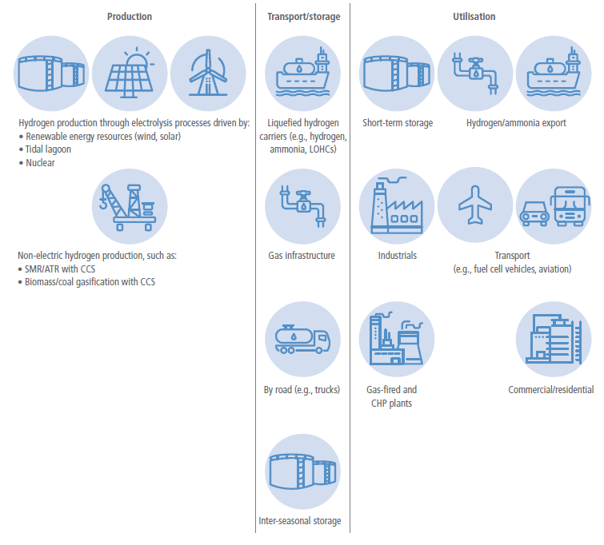
Figure 6.17 | Hydrogen value chain. Hydrogen can be produced by various means and input and fuel sources. These processes have different emissions implications. Hydrogen can be transported by various means and in various forms, and it can be stored in bulk for longer-term use. It also has multiple potential end uses. CHP: Combined heat and power.
Hydrogen can be liquefied and transported at volume over the ocean without pressurisation. This requires a temperature of –253°C and is therefore energy-intensive and costly (Niermann et al. 2021). Once it reaches its destination, the hydrogen needs to be re-gasified, adding further cost. A demonstration project is under development exporting liquid hydrogen from Australia to Japan (Yamashita et al. 2019). Hydrogen could also be transported as ammonia by ocean in liquid form. Ammonia is advantageous because it is easier to store than hydrogen (Zamfirescu and Dincer 2008; Soloveichik 2016; Nam et al. 2018). Liquid ammonia requires temperatures below –33°C and is therefore more straightforward and less costly to transport than liquefied hydrogen and even liquefied natural gas (Singh and Sahu 2018). A project exporting ammonia from Saudi Arabia to Japan is under consideration (Nagashima 2018). LOHCs could also be used to transport hydrogen at ambient temperature and pressure. This advantageous property of LOHCs makes them similar to oil products, meaning they can be transported in existing oil infrastructure including oil tankers and tanks (IEA 2019; Niermann et al. 2019). A project is under development to export hydrogen from Brunei to Japan using LOHCs (Kurosaki 2018).
Intra-regional hydrogen transportation. Within a country or region, hydrogen would likely be pressurised and delivered as compressed gas. About three times as much compressed hydrogen by volume is required to supply the same amount of energy as natural gas. Security of supply is therefore more challenging in hydrogen networks than in natural gas networks. Storing hydrogen in pipelines (linepack) would be important to maintaining security of supply (Ameli et al. 2017, 2019). Due to the physics of hydrogen, in most cases exiting gas infrastructure would need to be upgraded to transport hydrogen. Transporting hydrogen in medium- or high-pressure networks most often would require reinforcements in compressor stations and pipeline construction routes (Dohi et al. 2016). There are several recent examples of efforts to transport hydrogen by pipeline. For example, in the Iron Mains Replacement Programme in the UK, the existing low-pressure gas distribution pipes are being converted from iron to plastic (Committee on Climate Change 2018). In the Netherlands, an existing low-pressure 12 km natural gas pipeline has been used for transporting hydrogen (Dohi et al. 2016).
To bypass gas infrastructure in transporting hydrogen, methane can be transported using the existing gas infrastructure, while hydrogen can be produced close to the demand centres. This approach will only make sense if the methane is produced in a manner that captures carbon from the atmosphere and/or if CCS is used when the methane is used to produce hydrogen.
Bulk hydrogen storage. Currently, hydrogen is stored in bulk in chemical processes such as metal and chemical hydrides as well as in geologic caverns (Andersson and Grönkvist 2019; Caglayan et al. 2019) (e.g., salt caverns operate in Sweden) (Elberry et al. 2021). There are still many challenges, however, due to salt or hard rock geologies, large size, and minimum pressure requirements of the sites (IEA 2019c). Consequently, alternative carbon-free energy carriers, which store hydrogen, may become more attractive (Lan et al. 2012; Kobayashi et al. 2019).
6.4.5.2Electricity Transmission
Given the significant geographical variations in the efficiency of renewable resources across different regions and continents, electricity transmission could facilitate cost-effective deployment of renewable generation, enhance resilience and security of supply, and increase operational efficiency ( high confidence). The diurnal and seasonal characteristics of different renewable energy sources such as wind, solar, and hydropower can vary significantly by location. Through enhanced electricity transmission infrastructure, more wind turbines can be deployed in areas with high wind potential and more solar panels in areas with larger solar irradiation. Increases in electricity transmission and trade can also enhance operational efficiency and reduce or defer the need for investment in peaking plants, storage, or other load management techniques needed to meet security of supply requirements associated with localised use of VRE sources. Increased interconnectivity of large-scale grids also allows the aggregation of ‘smart grid’ solutions such as flexible heating and cooling devices for flexible demand in industrial, commercial, and domestic sectors (Hakimi et al. 2020) and EVs (Muratori and Mai 2020; Li et al. 2021). In general, interconnection is more cost-optimal for countries that are geographically close to each other and can benefit from the diversity of their energy mixes and usage (Schlachtberger et al. 2017). Such developments are not without price, however, and among other concerns, raise issues surrounding land use, public acceptance, and resource acquisition for materials necessary for renewable developments (Capellán-Pérez et al. 2017; Vakulchuk et al. 2020).
A number of studies have demonstrated the cost benefits of interconnected grids in a range of geographical settings, including across the USA (Bloom et al. 2020), Europe (Newbery et al. 2013; Cluet et al. 2020), between Australia and parts of Asia (Halawa et al. 2018), and broader global regions, for example between the Middle East and Europe or North Africa and Europe (Tsoutsos et al. 2015). While there is growing interest in interconnection among different regions or continents, a broad range of geopolitical and socio-techno-economic challenges would need to be overcome to support this level of international cooperation and large-scale network expansion (Bertsch et al. 2017; Palle 2021).
Status of electricity transmission technology. Long-distance electricity transmission technologies are already available. High voltage alternating current (HVAC), high-voltage direct current (HVDC), and ultra HVDC (UHVDC) technologies are well-established and widely used for bulk electricity transmission (Alassi et al. 2019). HVDC is used with underground cables or long-distance overhead lines (typically voltages between 100–800 kV) (Alassi et al. 2019) where HVAC is infeasible or not economic. A project development agreement, worth approximately USD17 billion, was signed in January 2021 that would connect 10 GW of PVs in the north of Australia via a 4500 km 3 GW HVDC cable to Singapore, suggesting that this would be cost effective (Sun Cable 2021). In September 2019, the Changji-Guquan ±1,100 kV UHVDC transmission project built by State Grid Corporation of China was officially completed and put into operation. The transmission line is able to transmit up to 12 GW over 3341 km (Pei et al. 2020). This is the UHVDC transmission project with the highest voltage level, the largest transmission capacity, and the longest transmission distance in the world (Liu 2015).
Other technologies that could expand the size of transmission corridors and/or improve the operational characteristics include low-frequency AC transmission (LFAC) (Y. Tang et al. 2021 ; Xiang et al. 2021) and half-wave AC transmission (HWACT) (Song et al. 2018; Xu et al. 2019). LFAC is technically feasible, but the circumstances in which it is the best economic choice compared to HVDC or HVAC still needs to be established (Xiang et al. 2016). HWACT is restricted to very long distances, and it has not been demonstrated in practice, so its feasibility is unproven. There are still a number of technological challenges for long-distance transmission networks such as protection systems for DC or hybrid AC-DC networks (Chaffey 2016; Franck C. et al. 2017), improvement in cabling technology, and including the use of superconductors and nanocomposites (Ballarino et al. 2016; Doukas 2019), which require advanced solutions.
Challenges, barriers, and recommendations. The main challenge to inter-regional transmission is the absence of appropriate market designs and regulatory and policy frameworks. In addition, there are commercial barriers for further enhancement of cross-border transmission. The differing impacts of cross-border interconnections on costs and revenues for generation companies in different regions could delay the development of these interconnectors. It is not yet clear how the investment cost of interconnections should be allocated and recovered, although there is growing support for allocating costs in accordance with the benefits delivered to the market participants. Increased cross-border interconnection may also require new business models which provide incentives for investment and efficient operation, manage risks and uncertainties, and facilitate coordinated planning and governance (Poudineh and Rubino 2017).
Optimising the design and operation of the interconnected transmission system, both onshore and offshore grids, also requires more integrated economic and reliability approaches (Moreno et al. 2012) to ensure the optimal balance between the economics and the provision of system security while maximising the benefits of smart network technologies.
A wide range of factors, including generation profiles, demand profiles circuit losses, reliability characteristics, and maintenance, as well as the uncertainties around them will need to be considered in designing and operating long-distance transmission systems if they are to be widely deployed (Djapic et al. 2008; Du 2009; De Sa and Al Zubaidy 2011; E3G 2021). Public support for extending transmission systems will also be crucial, and studies indicate that such support is frequently low (Vince 2010; Perlaviciute et al. 2018).
6.4.6Demand-side Mitigation Options from an Energy Systems Perspective
Demand-side measures are fundamental to an integrated approach to low-carbon energy systems ( high confidence). Mitigation options, such as wind parks, CCS, and nuclear power plants, may not be implemented when actors oppose these options. Further, end users, including consumers, governments, businesses and industry, would need to adopt the relevant options, and then use these as intended; user adoption can be a key driver to scale up markets for low-carbon technologies. This section discusses which factors shape the likelihood that end users engage in relevant mitigation actions, focusing on consumers; strategies to promote mitigation actions are discussed in Section 6.7.6.1.
A wide range of actions of end users would reduce carbon emissions in energy systems (Abrahamse et al. 2007; Dietz 2013; Hackmann et al. 2014; Creutzig et al. 2018; Grubler et al. 2018), including:
• use of low-carbon energy sources and carriers. Actors can produce and use their own renewable energy (e.g., install solar PV, solar water heaters, heat pumps), buy shares in a renewable energy project (e.g., wind shares), or select a renewable energy provider.
• adoption of technologies that support flexibility in energy use and sector coupling, thereby providing flexibility services by balancing demand and renewable energy supply. This would reduce the need to use fossil fuels to meet demand when renewable energy production is low and put less pressure on deployment of low-emission energy supply systems. Examples are technologies to store energy (e.g., batteries and EVs) or that automatically shift appliances on or off (e.g., fridges, washing machines).
• adoption of energy-efficient appliances and systems and increase of resource efficiency of end uses so that less energy is required to provide the same service. Examples are insulating buildings, and passive or energy-positive buildings.
• change behaviour to reduce overall energy demand or to match energy demand to available energy supplies. Examples include adjusting indoor temperature settings, reducing showering time, reducing car use or flying, and operating appliances when renewable energy production is high.
• purchase and use products and services that are associated with low GHG emissions during their production (e.g., reduce dairy and meat consumption) or for transporting products (e.g., local products). Also, end users can engage in behaviour supporting a circular economy, by reducing waste (e.g., of food), sharing products (e.g., cars, equipment), and refurbishing products (e.g., repair rather than buying new products) so that fewer new products are used.
Various factors shape whether such mitigation actions are feasible and considered by end users, including contextual factors, individual abilities, and motivational factors. Mitigation actions can be facilitated and encouraged by targeting relevant barriers and enablers (Section 6.7.6.1).
Contextual factors, such as physical and climate conditions, infrastructure, available technology, regulations, institutions, culture, and financial conditions define the costs and benefits of mitigation options that enable or inhibit their adoption ( high confidence). Geographic location and climate factors may make some technologies, such as solar PV or solar water heaters, impractical (Chang et al. 2009). Culture can inhibit efficient use of home heating or PV (Sovacool and Griffiths 2020), low-carbon diets (Dubois et al. 2019), and advanced fuel choices (Van Der Kroon et al. 2013). Also, favourable financial conditions promote the uptake of PV (Wolske and Stern 2018), good facilities increase recycling (Geiger et al. 2019), and vegetarian meal sales increase when more vegetarian options are offered.
Mitigation actions are more likely when individuals feel capable to adopt them (Pisano and Lubell 2017; Geiger et al. 2019), which may depend on income and knowledge. Low-income groups may lack resources to invest in refurbishments and energy-efficient technology with high upfront costs (Chang et al. 2009; Andrews-Speed and Ma 2016; Wolske and Stern 2018). Yet, higher-income groups can afford more carbon-intensive lifestyles (Golley and Meng 2012; Frederiks et al. 2015; Wiedenhofer et al. 2017; Namazkhan et al. 2019; Santillán Vera and de la Vega Navarro 2019; Mi et al. 2020). Knowledge of the causes and consequences of climate change and of ways to reduce GHG emissions is not always accurate, but lack of knowledge is not a main barrier to mitigation actions (Boudet 2019).
Motivation to engage in mitigation action, reflecting individuals’ reasons for actions, depends on general goals that people strive for in their life (i.e., values). People who strongly value protecting the environment and other people are more likely to consider climate impacts and to engage in a wide range of mitigation actions than those who strongly value individual consequences of actions, such as pleasure and money (Taylor et al. 2014; Steg 2016). Values affect which types of costs and benefits people consider and prioritise when making choices, including individual, affective, social, and environmental costs and benefits (Gowdy 2008; Steg 2016).
First, people are more likely to engage in mitigation behaviour (i.e., energy savings, energy efficiency, resource efficiency in buildings, low-carbon energy generation) when they believe such behaviour has more individual benefits than costs (Harland et al. 1999; Steg and Vlek 2009; Kastner and Stern 2015; Korcaj et al. 2015; Kardooni et al. 2016; Kastner and Matthies 2016; Wolske et al. 2017), including financial benefits, convenience, comfort, autonomy, and independence in energy supply (Wolske and Stern 2018). Yet, financial consequences seem less important for decisions to invest in energy-efficiency and renewable energy production than people indicate (Zhao et al. 2012).
Second, people are less likely to engage in mitigation behaviours that are unpleasurable or inconvenient (Steg 2016), and more likely to do so when they expect to derive positive feelings from such actions (Smith et al. 1994; Pelletier et al. 1998; Steg 2005; Carrus et al. 2008; Brosch et al. 2014; Taufik et al. 2016). Positive feelings may be elicited when behaviour is pleasurable, but also when it is perceived as meaningful (Bolderdijk et al. 2013; Taufik et al. 2015).
Third, social costs and benefits can affect climate action (Farrow et al. 2017), although people do not always recognise this (Nolan et al. 2008; Noppers et al. 2014). People engage more in mitigation actions when they think others expect them to do so and when others act as well (Harland et al. 1999; Nolan et al. 2008; Rai et al. 2016). Being part of a group that advocates mitigation encourages such actions (Biddau et al. 2016; Fielding and Hornsey 2016; Jans et al. 2018). Talking with peers can reduce uncertainties and confirm benefits about adoption of renewable energy technology (Palm 2017), and peers can provide social support (Wolske et al. 2017). People may engage in mitigation actions when they think this would signal something positive about them (Milinski et al. 2006; Griskevicius et al. 2010; Noppers et al. 2014; Kastner and Stern 2015). Social influence can also originate from political and business leaders (Bouman and Steg 2019); GHG emissions are lower when legislators have strong environmental records (Jensen and Spoon 2011; Dietz et al. 2015).
Fourth, mitigation actions, including saving energy and hot water, limiting meat consumption, and investing in energy efficiency, resource efficiency in buildings, and renewable energy generation are more likely when people care more strongly about others and the environment (Steg et al. 2015; Van Der Werff and Steg 2015; Wolske et al. 2017). People across the world generally strongly value the environment (Steg 2016; Bouman and Steg 2019), suggesting that they are motivated to mitigate climate change. The more individuals are aware of the climate impact of their behaviour, the more they think their actions can help reduce such impacts, which strengthens their moral norms to act accordingly, and promotes mitigation actions (Steg and de Groot 2010; Jakovcevic and Steg 2013; Chen 2015; Wolske et al. 2017).
Initial mitigation actions can encourage engagement in other mitigation actions when people experience that such actions are easy and effective (Lauren et al. 2016), and when initial actions make them realise they are a pro-environmental person, motivating them to engage in more mitigation actions so as to be consistent (van der Werff et al. 2014; Lacasse 2015, 2016; Peters et al. 2018). This implies it would be important to create conditions that make it likely that initial mitigation actions motivate further actions.
6.4.7 Summary of Mitigation Options
Designing feasible, desirable, and cost-effective energy sector mitigation strategies requires comparison between the different mitigation options. One such metric is the cost of delivering one unit of energy, for example, the levelised cost, or USD MWh –1, of electricity produced from different sources. Levelised costs of electricity (LCOE) are useful because they normalise the costs per unit of service provided. While useful in characterising options in broad strokes, it is important to acknowledge and understand several caveats associated with these metrics, particularly when applied globally. They may be constructed with different discount rates; they require information on energy input costs for options that require energy inputs (e.g., fossil electricity generation, biofuels); they depend on local resource availability, for example, solar insolation for solar power, wind classes for wind power, and rainfall and streamflow for hydropower; and actual implementation costs may include additional elements, for example, the costs of managing electricity grids heavily dependent on VRE electricity sources. These complicating factors vary across regions, some depend strongly on the policy environment in which mitigation options are deployed, and some depend on how technologies are constructed and operated.
The literature provides multiple LCOE estimates for mitigation options today and in the future (see Table 6.9 for electricity generation options). LCOE ranges for low- and zero-carbon electricity technologies overlap with LCOE’s of fossil generation without CCS. For example, LCOEs for utility solar and wind today and in the future overlap with those of new coal and gas without CCS (IEA WEO 2020; Lazard, 2020; NREL 2021) (Figure 6.18). Some of the overlap stems from differences in assumptions or regional conditions that apply to all technologies (e.g., variations in assumed discount rates), but the overlap also reflects the fact that low- and zero-carbon electricity generation options are, and will be, less expensive than emitting options in many regions. Future cost projections also illustrate that several technologies are anticipated to experience further cost declines over the coming decades, reinforcing the increasingly competitiveness of low- and zero-carbon electricity. For example, IEA’s LCOEs estimates for offshore wind halve between 2020 and 2040 in several regions (IEA WEO 2020).
Table 6.9 | Examples ofcost of mitigation for selected electricity options. Results represent variations in mitigation options and displaced fossil generation. LCOEs are illustrative, but consistent with recent estimates. Negative values mean that the mitigation option is cheaper than the displaced option, irrespective of emissions benefits. NGCC: natural gas combined cycle.
Baseline | |||||
New coal | Existing coal | New NGCC | Existing NGCC | ||
Baseline emissions rate (tCO2MWh –1) | 0.8 | 0.9 | 0.34 | 0.42 | |
LCOEs (USD2020 kWh –1) | 0.065 | 0.041 | 0.044 | 0.028 | |
Utility scale solar PV (poor resource site) | 0.100 | USD44 tCO2-eq –1 | USD66 tCO2-eq –1 | USD165 tCO2-eq –1 | USD171 tCO2-eq –1 |
Utility scale solar PV (good resource site) | 0.035 | –38 USD tCO2-eq –1 | –7 USD tCO2-eq –1 | –26 USD tCO2-eq –1 | USD17 tCO2-eq –1 |
.png)
Figure 6.18 | Range of LCOE (in USD kWh–1) from recent studies for different electricity-generating technologies circa 2020 and in the future between 2020–2040. LCOEs are primarily taken from recent studies, because the costs of some technologies are changing rapidly. To make the figure more tractable across the studies, we highlight the data from IEA WEO 2020 STEPS scenario in yellow (IEA 2020), the EIA AEO 2021 in light blue (EIA 2021), NREL ATB 2021 in brown, (NREL 2021), and IRENA’s 2020 Renewable Power Generation Costs in dark blue (IRENA 2021). All other studies are shown in light grey markers. Marker shapes identify the regions included in the studies. Studies that included several regions are labelled as global. Only sources that provided LCOEs are included. Ranges for studies frequently reflect variations among regional estimates. Studies that are shown as a mid-point and a solid line represent studies that reported either a median or an average, and that had either a confidence interval or a minimum and a maximum reported. Dashed lines with markers at the end represent the range of values reported in studies that had several point estimates for either different regions or used different assumptions. All estimates were converted to USD2020. The publication year was used if no USD year was provided. Some studies included transmissions costs, and some of the CCS studies included storage and sequestration costs, while others did not. Vertical axis is capped at USD2020 0.30 kWh –1, but some estimates for hydro, geothermal, natural gas and bioelectricity were higher than 0.30. The grey horizontal band denotes the range of fossil fuel electricity LCOEs circa 2020.
A more direct metric of mitigation options is the cost to reduce one tonne of CO2 or equivalent GHGs, or USD tCO2-eq –1 avoided. In addition to the comparison challenges noted above, this metric must account for the costs and emissions of the emitting options that are being displaced by the low-carbon option. Assumptions about the displaced option can lead to very different mitigation cost estimates (Table 6.9). Despite these challenges, these metrics are useful for identifying broad trends and making broad comparisons, even from the global perspective in this assessment. But local information will always be critical to determine which options are most cost-effective in any specific applications.
The feasibility and desirability of mitigation options extends well beyond the market economic costs of installation and operation (Section 6.4.1). Figure 6.19 summarises the barriers and enablers for implementing different mitigation options in energy systems. The feasibility of different options can be enhanced by removing barriers and/or strengthening enablers of the implementation of the options. The feasibility of options may differ across context (e.g., region), time (e.g., 2030 versus 2050), scale (e.g., small versus large) and the long-term warming goal (e.g., 1.5°C versus 2°C).
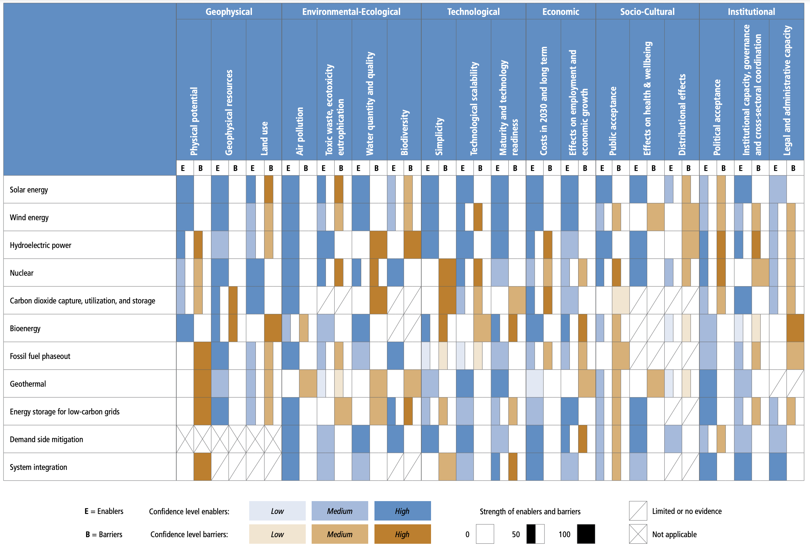
Figure 6.19 | Summary of the extent to which different factors would enable or inhibit the deployment of mitigation options in energy systems. Blue bars indicate the extent to which the indicator enables the implementation of the option (E) and orange bars indicate the extent to which an indicator is a barrier (B) to the deployment of the option, relative to the maximum possible barriers and enablers assessed. An X signifies that the indicator is not applicable or does not affect the feasibility of the option, while a forward slash indicates that there is no or limited evidence whether the indicator affects the feasibility of the option. The shading indicates the level of confidence, with darker shading signifying higher levels of confidence. Appendix II provides an overview of the factors affecting the feasibility of options and how they differ across context (e.g., region), time (e.g., 2030 versus 2050), and scale (e.g., small versus large), and includes a line of sight on which the assessment is based. The assessment method is explained in Annex II.11.
6.5Climate Change Impacts on the Energy System
6.5.1Climate Impacts on the Energy System
Many components of the energy system are affected by individual weather events and climate conditions (Table 6.10). In addition, a range of compounding effects can be anticipated, as the complex, interconnected climate and energy systems are influenced by multiple weather and climate conditions. This raises the question of whether the energy system transformation needed to limit warming will be impacted by climate change.
The impacts of climate change on the energy system can be divided into three areas: impacts on the energy supply; impacts on energy consumption; and impacts on energy infrastructure. The rest of this section focuses on how the futurechanges in climate drivers might affect the ability of the energy system transformation needed to mitigate climate change. The discussion of energy infrastructure in this section is limited to electricity system vulnerability.
Table 6.10 | Relevance of the key climatic impact drivers (and their respective changes in intensity, frequency, duration, timing, and spatial extent) for major categories of activities in the energy sector. The climate impact drivers (CIDs) are identified in Table 12.1 in Chapter 12 of WGI AR6 report. The relevance is assessed as: positive/negative (+ or –), or both (±). D&O: Design and Operation; CF: Capacity Factor.
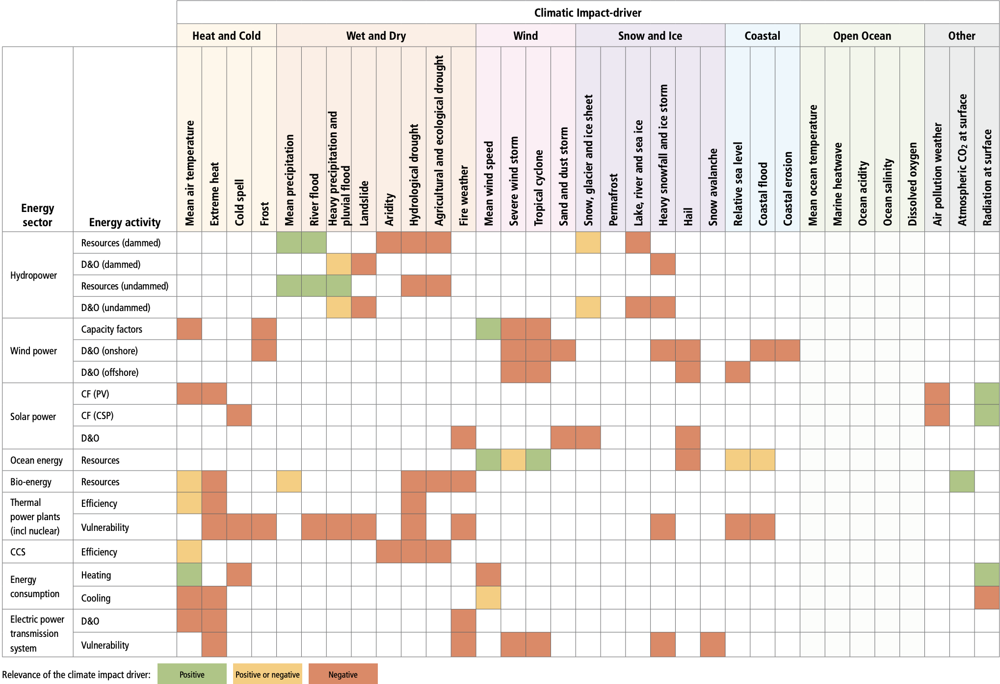Relevance of the climate impact driver: 
Figure 6.22: Characteristics of global net-zero energy systems when global energy and industrial CO2 emissions reach net-zero. Scenarios reaching net-zero emissions show differences in residual emissions and carbon removal (a) , energy resources (b) , electrification (c) , energy intensity (as measured here by energy GDP–1) (d) , and emissions trajectory (e) , particularly with respect to warming levels (light blue = scenarios that limit warming to 1.5°C (>50%) with no or limited overshoot and scenarios that return warming to 1.5°C (>50%) after a high overshoot; yellow = scenarios that limit warming to 2°C (>67%) and scenarios that limit warming to 2°C (>50%); dark blue = scenarios that limit warming to 2.5°C (>50%), scenarios that limit warming to 3°C (>50%), scenarios that limit warming to 4°C (>50%), and scenarios that exceed warming of 4°C (≥50%); grey = unspecified warming). Points represent individual scenarios from the AR6 Scenarios Database, with probability density distributions shown along each axis for each warming level (colours corresponding to warming levels) and for all scenarios (black).
6.5.2Impacts on Energy Supply
The increased weather dependency of future low-carbon electricity systems amplifies the possible impacts of climate change (Staffell and Pfenninger 2018). However, globally climate change impacts on electricity generation – including hydro, wind and solar power potentials – should not compromise climate mitigation strategies ( high confidence). Many of the changes in the climate system will be geographically complex at the regional and local levels. Thus, regionally climate change impacts on electricity generation could be significant. Climate change impacts on bioenergy potentials are more uncertain because of uncertainties associated with the crop response to climate change, future water availability and crop deployment. Climate change can reduce the efficiency of thermal power generation and increase the risk of power plant shutdowns during droughts. The potential additional cooling water needs of CCS can increase these risks.
6.5.2.1 dropower
The impacts of climate change on hydropower will vary by region. High latitudes in the northern hemisphere are anticipated to experience increased runoff and hydropower potential. For other regions, studies find both increasing and decreasing runoff and hydropower potential. Areas with decreased runoff are anticipated to experience reduced hydropower production and increased water conflict among different economic activities ( high confidence).
Hydropower production is directly related to the availability of water. Changes in runoff and its seasonality and changes in temperature and precipitation intensity will influence hydroelectricity production (IHA 2019). In general, increased precipitation will increase water availability and hydropower production. Increased precipitation intensity, however, may impact on the integrity of dam structures and affect power production by increasing debris accumulation and vegetation growth. Additionally, increased precipitation intensity results in the silting of the reservoirs or increases the amount of water spilt, resulting in erosion (Schaeffer et al. 2012; IHA 2019). Climate change will likely lead to higher air temperatures, resulting in more surface evaporation, less water storage, and loss of equipment efficiency (Ebinger and Vergara 2011; Mukheibir 2013; Fluixá-Sanmartín et al. 2018; Hock et al. 2019). Climate change may alter the demands for water use by other sectors that often rely on stored water in multi-purpose reservoirs, and may therefore generate conflicts over water use. The increased need for water for irrigation and/or industry can affect the availability of water for hydropower generation (Spalding-Fecher et al. 2016; Solaun and Cerdá 2017). Higher temperatures increase glacier melt, increasing water availability for hydropower while the glaciers exist. Changes in the timing of snow and ice melt may require upgrading in storage capacity and adaptation of the hydropower plant management for fully exploiting the increase in water availability.
The conclusions regarding climate change impacts on hydropower vary due to differences in modelling assumptions and methodology, such as choice of the climate and hydrological models, choice of metrics (e.g., projected production vs hydropower potential), level of modelling details between local and global studies, reservoir operation assumptions. Also important is how hydropower production matches up with other reservoir purposes, accounting for other water and energy users, and how the competing uses are impacted by climate change (van Vliet et al. 2016b; Turner et al. 2017). Nonetheless, analyses consistently demonstrate that the global impact of climate change on hydropower will be small, but the regional impacts will be larger, and will be both positive and negative (Figure 6.20). Gross global hydropower potential in the 2050s has been estimated to slightlydecrease (Hamududu and Killingtveit 2012) between 0.4% (for the low-emission scenario) and 6.1% (for the highest-emission scenario) for the 2080s compared to 1971–2000 (van Vliet et al. 2016a).
.png)
Figure 6.20 | Global spatial patterns of changes in gross hydropower potential based on climate forcing from five climate models. Changes are shown for the 2050s (upper) and the 2080s (lower) for the low-emission scenario (RCP2.6; left) and highest emission scenario (RCP8.5; right) scenarios relative to the control period (1971–2000). Source: data from van Vliet et al. (2016b).
Regional changes in hydropower are estimated from 5–20% increases for most areas in high latitudes (van Vliet et al. 2016b; Turner et al. 2017) to decreases of 5–20% in areas with increased drought conditions (Cronin et al. 2018). Models show a consistent increase in streamflow and hydropower production by 2080 in high latitudes of the northern hemisphere and parts of the tropics (Figure 6.20) (e.g., central Africa and southern Asia) while decreasing in the USA, southern and central Europe, Southeast Asia and southern South America, Africa and Australia (van Vliet et al. 2016c,a). Decreases in hydropower production are indicated for parts of North America, central and southern Europe, the Middle East, central Asia and Southern South America. Studies disagree on the changes in hydropower production in China, central South America, and partially in southern Africa (Hamududu and Killingtveit 2012; van Vliet et al. 2016b; Solaun and Cerdá 2019; Fan et al. 2020).
6.5.2.2 Wind Energy
Climate change will not substantially impact future wind resources and will not compromise the ability of wind energy to support low-carbon transitions ( high confidence). Changing wind variability may have a small-to-modest impact on backup energy and storage needs (low confidence); however, current evidence is largely from studies focused on Europe.
Long-term global wind energy resources are not expected to substantially change in future climate scenarios (Karnauskas et al. 2018; Pryor et al. 2020; Yalew et al. 2020). However, recent research has indicated consistent shifts in the geographic position of atmospheric jets in the high-emission scenarios (Harvey et al. 2014), which would decrease wind power potentials across the Northern Hemisphere mid-latitudes and increase wind potentials across the tropics and the Southern Hemisphere. However, the climate models used to make these assessments differ in how well they can reproduce the historical wind resources and wind extremes, which raises questions about the robustness of their predictions of future wind resources (Pryor et al. 2020).
There are many regional studies on changes in wind resources from climate change. For Europe, there is medium evidence and moderate agreement that wind resources are already increasing and will continue to increase in Northern Europe and decrease in Southern Europe (Carvalho et al. 2017; Devis et al. 2018; Moemken et al. 2018). For North America, the various studies have low agreement for the changes in future wind resources in part because the year-to-year variations in wind resources are often larger than the future change due to climate change (Johnson and Erhardt 2016; Chen 2020; Costoya et al. 2020; Wang et al. 2020b). Studies show increases in future wind resources in windy areas in South America (Ruffato-Ferreira et al. 2017; de Jong et al. 2019). No robust future changes in wind resources have been identified in China (Xiong et al. 2019). However, none of the global or regional studies of the effects of climate change on wind resources considers the fine-scale dependence of wind resources on the topography and wind direction (Sanz Rodrigo et al. 2016; Dörenkämper et al. 2020) or the effect of expanding wind energy exploitation (Volker et al. 2017; Lundquist et al. 2019). There is limited evidence that extreme wind speeds, which can damage wind turbines, will increase due to climate change (Pes et al. 2017; Pryor et al. 2020). Nevertheless, projected changes in Europe and North America – regions where the most extensive analysis has been undertaken – are expected to be within the estimates embedded in the design standards of wind turbines (Pryor and Barthelmie 2013).
Future wind generation in Europe could decrease in summer and autumn, increasing in winter in northern-central Europe but decreasing in southernmost Europe (Carvalho et al. 2017). Towards 2100, intra-annual variations increase in most of Europe, except around the Mediterranean area (Reyers et al. 2016), but this may reflect natural multi-decadal variability (Wohland et al. 2019b). Wind speeds may become more homogeneous over large geographical regions in Europe due to climate change, increasing the likelihood of large areas experiencing high or low wind speeds simultaneously (Wohland et al. 2017). These changes could result in fewer benefits in the transmission of wind generation between countries and increased system integration costs. Europe could require a modest increase (up to 7%) in backup energy towards the end of the 21st century due to more homogeneous wind conditions over Europe (Wohland et al. 2017; Weber et al. 2018). However, other studies report that the impact of climate change is substantially smaller than interannual variability, with no significant impact on the occurrence of extreme low wind production events in Europe (Van Der Wiel et al. 2019). If European electricity systems are designed to manage the effects of existing weather variability on wind power, they can likely also cope with climate change impacts on wind power (Ravestein et al. 2018). Changes in wind-generation variability caused by climate change are also reported for North America (Haupt et al. 2016; Losada Carreño et al. 2018), with modest impacts on electricity system operation (Craig et al. 2019).
6.5.2.3 Solar Energy
Climate change is not expected to substantially impact global solar insolation and will not compromise the ability of solar energy to support low-carbon transitions ( high confidence). Models show dimming and brightening in certain regions, driven by cloud, aerosol and water vapour trends (Chapter 12 of IPCC AR6 WGI). The increase in surface temperature, which affects all regions, decreases solar power output by reducing the PV panel efficiency. In some models and climate scenarios, the increases in solar insolation are counterbalanced by reducing efficiency due to rising surface air temperatures, which increase significantly in all models and scenarios (Jerez et al. 2015; Bartók et al. 2017; Emodi et al. 2019). Increases in aerosols would reduce the solar resource available and add to maintenance costs (Chapter 12 of IPCC AR6 WGI).
In many emission scenarios, the effect on solar PV from temperature-induced efficiency losses is smaller than the effect expected from changes on solar insolation due to variations in water vapour and clouds in most regions. Also, future PV technologies will likely have higher efficiency, which would offset temperature-related declines (Müller et al. 2019). Cloud cover is projected to decrease in the subtropics (around –0.05% per year), including parts of North America, vast parts of Europe and China, South America, South Africa and Australia (medium agreement , medium evidence). Thus, models project modest (<3%) increases in solar PV by the end of the century for southern Europe, northern and southern Africa, Central America, and the Caribbean (Emodi et al. 2019). There are several studies projecting decreasing solar production, but these are generally influenced by other factors, for example, increasing air pollution (Ruosteenoja et al. 2019). The multi-model means for solar insolation in regional models decrease 0.60 W m –2 per decade from 2006 to 2100 over most of Europe (Bartók et al. 2017), with the most significant decreases in the Northern countries (Jerez et al. 2015).
6.5.2.4Bioenergy
Climate change can affect biomass resource potential directly, via changes in the suitable range (i.e., the area where bioenergy crops can grow) and/or changes in yield, and indirectly, through changes in land availability. Increases in CO2 concentration increase biomass yield; climate changes (e.g., temperature, precipitation, and so on) can either increase or decrease the yield and suitable range.
Climate change will shift the suitable range for bioenergy towards higher latitudes, but the net change in the total suitable area is uncertain ( high confidence). Several studies show northward shifts in the suitable range for bioenergy in the northern hemisphere (Tuck et al. 2006; Barney and DiTomaso 2010; Bellarby et al. 2010; Hager et al. 2014; Wang et al. 2014a; Preston et al. 2016; Conant et al. 2018; Cronin et al. 2018), but the net effect of climate change on total suitable area varies by region, species, and climate model (Barney and DiTomaso 2010; Hager et al. 2014; Wang et al. 2014a).
The effect of climate change on bioenergy crop yields will vary across region and feedstock ( high confidence); however, in general, yields will decline in low latitudes (medium confidence) and increase in high latitudes (low confidence) (Haberl et al. 2010; Cosentino et al. 2012; Preston et al. 2016; Cronin et al. 2018; Mbow et al. 2019). However, the average change in yield varies significantly across studies, depending on the feedstock, region, and other factors (Beringer et al. 2011; Kyle et al. 2014; Mbow et al. 2019; Dolan et al. 2020). Only a few studies extend the modelling of climate change impacts on bioenergy to quantify the effect on bioenergy deployment or its implications on the energy system (Calvin et al. 2013, 2019; Kyle et al. 2014; Thornton et al. 2017). These studies find that changes in deployment are of the same sign as changes in yield; that is, if yields increase, then deployment increases.
Some of the uncertainty in the sign and magnitude of the impacts of climate change on bioenergy potential is due to uncertainties in CO2 fertilisation (the increase in photosynthesis due to increases in atmospheric CO2 concentration) (Haberl et al. 2011; Bonjean Stanton et al. 2016; Cronin et al. 2018; Solaun and Cerdá 2019; Yalew et al. 2020). For example, earlier studies found that, without CO2 fertilisation, climate change will reduce global bioenergy potential by about 16%; with CO2 fertilisation, however, climate change increases this potential by 45% (Haberl et al. 2011). However, newer studies in the USA find little effect of CO2 fertilisation on switchgrass yield (Dolan et al. 2020). There is also a considerable uncertainty across climate and crop models in estimating bioenergy potential (Hager et al. 2014).
6.5.2.5Thermal Power Plants
The operation of thermal power plants will be affected by climate change, deriving from changes in the ambient conditions like temperature, humidity and water availability (Schaeffer et al. 2012) ( high confidence). Changes in ambient temperature have relatively small impacts on coal-fired and nuclear power plants (Rankine cycle); however, gas-fired power plants (Brayton or combined-cycle) may have their thermal efficiency and power output significantly decreased (De Sa and Al Zubaidy 2011; Schaeffer et al. 2012). Droughts decrease potential cooling water for thermal power plants and increase the probability of water outlet temperatures exceeding regulatory limits, leading to lower production or shutdowns. Thermal power utilisation has been reported to be, on average, 3.8% lower during drought years globally (van Vliet et al. 2016c), and further significant decreases in available thermal power plant capacity due to climate change are projected (Koch et al. 2014; van Vliet et al. 2016b; Yalew et al. 2020). An increase in climate-related nuclear power disruptions has been reported in the past decades globally (Ahmad 2021).
Carbon capture may increase cooling water usage significantly, especially in retrofits, with up to 50% increase in water usage for coal-fired power plants globally, depending on the CCS technology (Rosa et al. 2020) (Section 6.4). In Asia, planned coal capacity is expected to be vulnerable to droughts, sea level rise, and rising air temperatures, and this may be exacerbated by incorporating carbon capture (Wang et al. 2019c). Recently, however, studies have proposed designs of CCS with a minimal increase in water requirements (Magneschi et al. 2017; Mikunda et al. 2021).
Older thermal power plants can be retrofitted to mitigate climate impacts by altering and redesigning the cooling systems (Westlén 2018), although the costs for these solutions may be high. For example, dry cooling may be used instead of once-through cooling; however, it lowers thermal efficiency and would leave plants vulnerable to ambient temperature increase (Ahmad 2021). Closed-circuit cooling is much less sensitive to water temperature than once-through cooling (Bonjean Stanton et al. 2016). Modifying policies and regulation of water and heat emissions from power plants may also be used to mitigate plant reliability problems induced by climate change (Eisenack 2016; Mu et al. 2020), albeit with potential impacts for other water users and ecology. Improvements in water use and thermal efficiencies and the use of transmission capabilities over large geographical regions to mitigate risks on individual plants are also possible mitigation options (Miara et al. 2017).
6.5.3 Impacts on Energy Consumption
Heating demand will decrease, and cooling demand will increase in response to climate change. Peak load may increase more than energy consumption, and the changing spatial and temporal load patterns can impact transmission and needs for storage, demands-side management, and peak-generating capacity ( high confidence).
Climate change will decrease heating demands, especially in cold regions, and it will increase cooling demands, especially in warm regions (Yalew et al. 2020). Recent studies report significant net impacts, with the commercial and industrial sectors and substantial air condition penetration driving an increase in energy demand (Davis and Gertler 2015; Levesque et al. 2018; De Cian and Sue Wing 2019; van Ruijven et al. 2019; Yalew et al. 2020). For example, globally, De Cian and Sue Wing (2019) found a 7–17% increase in energy consumption due to climate change in 2050, with the range depending on the climate change scenario. The overall effects of climate change on building energy consumption are regionally dependent. For example, Zhang et al. (2019) find that reduced heating will outweigh increased cooling in the residential buildings in Europe, but the reverse will be true in China.
While many studies have focused on energy consumption, climate extremes are expected to alter peak energy demands, with the potential for blackouts, brownouts, and other short-term energy system impacts (Yalew et al. 2020). For example, peak energy demand during heatwaves can coincide with reduced transmission and distribution capacity at higher temperatures. In large cities, extreme heat events increase cooling degree days significantly, with the urban heat island effect compounding the impact (Morakinyo et al. 2019). One study found that total electricity consumption at the end of the century in the USA could increase on average by 20% during summer months and decrease on average by 6% in the winter (Ralston Fonseca et al. 2019). While the average increase in consumption is modest, climate change is projected to have severe impacts on the frequency and intensity of peak electricity loads (Auffhammer et al. 2017). Bartos et al. (2016) find that peak per-capita summertime load in the USA may rise by 4.2–15% by mid-century. Efficient cooling technologies and other demand-side measures can limit cooling energy loads during periods of particularly high demand (IEA 2018; Dreyfus et al. 2020).
Box 6.6 | Energy Resilience
In February 2021, the state of Texas was hit by three major storms and suffered significant scale power outages. More than 4.5 million homes and businesses on the Texas electric grid were left without electricity for days, limiting the ability to heat homes during dangerously low temperatures and leading to food and clean water shortages (Busby et al. 2021). The Texas and other events – for example, Typhoon Haiyan in Southeast Asia in 2013; the Australian bush fires in 2019–2020; forest fires in 2018 in California; water shortages in Cape Town, South Africa in 2018 and the western USA during 2021 – raise the question of whether future low-carbon energy systems will be more or less resilient than those of today.
Some characteristics of low-carbon energy systems will make them less resilient. Droughts reduce hydroelectric electricity generation (Gleick 2016; van Vliet et al. 2016c); wind farms do not produce electricity in calm conditions or shut down in very strong winds (Petersen and Troen 2012); solar PV generation is reduced by clouds and is less efficient under extreme heat, dust storms, and wildfires (Perry and Troccoli 2015; Jackson and Gunda 2021). In addition, the electrification of heating will increase the weather dependence of electricity consumption (Staffell and Pfenninger 2018; Gea-Bermúdez et al. 2021). Non-renewable generation, for example, from nuclear and fossil power plants, are also vulnerable to high temperatures and droughts as they depend on water for cooling (Cronin et al. 2018; Ahmad 2021).
But some aspects of low-carbon energy systems will make them more resilient. Wind and solar farms are often spread geographically, which reduces the chances of being affected by the same extreme weather event (Perera et al. 2020). The diversification of energy sources, in which each component has different vulnerabilities, increases resilience. Less reliance on thermal electricity generation technologies will reduce the risks of curtailment or efficiency losses from droughts and heat waves (Lohrmann et al. 2019). More generally, increased electricity system integration and flexibility (Section 6.4.3) and weatherisation of generators increases electricity system resilience (Busby et al. 2021; Heffron et al. 2021). Likewise, local district micro-grids with appropriate enabling technologies (e.g., distributed generation, energy storage, greater demand-side participation, electric vehicles) may ensure access to electricity during major long-duration power outage events and radically enhance the resilience of supply of essential demand (Stout et al. 2019).
6.5.4 Impacts on Electricity System Vulnerability
While long-term trends are important for electricity system planning, short-term effects associated with loss of power can be disruptive and lead to significant economic losses along with cascading impacts on health and safety. Extreme weather and storms threaten the electricity system in different ways, affecting system resilience, reliability, and adequacy (Moreno-Mateos et al. 2020). The implications of climate change for electricity system vulnerability will depend on the degree to which climate change alters the frequency and intensity of extreme weather events. The complex compounding effects of simultaneous events (e.g., high winds and lightning occurring at the same time) are not well understood.
High wind speeds can shear lines through mechanical failure or cause lines to collide, causing transient events (Panteli and Mancarella 2015; Yalew et al. 2020). Hurricane conditions can damage electricity system infrastructures, including utility-scale wind and solar PV plants. Electricity systems may experience high demand when lines are particularly at risk from mechanical failure from wind and storm-related effects. However, except for medium evidence of increases in heavy precipitation associated with tropical cyclones, there is limited evidence that extreme wind events will increase in frequency or intensity in the future (Kumar et al. 2015; Pryor et al. 2020).
Wildfires pose a significant threat to electricity systems in dry conditions and arid regions (Dian et al. 2019). With climate change, wildfires will probably become more frequent (Flannigan et al. 2013) and more difficult to address, given that they frequently coincide with dry air and can be exacerbated by high winds (Mitchell 2013).
Lightning can cause wildfires or common-mode faults on electricity systems associated with vegetation falling on power substations or overhead lines but is more generally associated with flashovers and overloads (Balijepalli et al. 2005). Climate change may change the probability of lightning-related events (Romps et al. 2014).
Snow and icing can impact overhead power lines by weighing them down beyond their mechanical limits, leading to collapse and cascading outages (Feng et al. 2015). Snow can also lead to flashovers on lines due to wet snow accumulation on insulators (Yaji et al. 2014; Croce et al. 2018) and snow and ice can impact wind turbines (Davis et al. 2016). Climate change will lower the risk of snow and ice conditions (McColl et al. 2012), but there is still an underlying risk of sporadic acute cold conditions such as those associated with the winter storms in Texas in 2021 (Box 6.6).
Flooding poses a threat to the transmission and distribution systems by inundating low-lying substations and underground cables. Coastal flooding also poses a threat to electricity system infrastructure. Rising sea levels from climate change and associated storm surge may also pose a significant risk for coastal electricity systems (Entriken and Lordan 2012).
Temperature increases influence electricity load profiles and electricity generation, as well as potentially impact supporting information and communication infrastructure. Heat can pose direct impacts to electricity system equipment such as transformers. Referred to as ‘solar heat faults’, they occur under high temperatures and low wind speeds and can be exacerbated by the urban heat island effect (McColl et al. 2012). Increasing temperatures affect system adequacy by reducing electric transmission capacity, simultaneously increasing peak load due to increased air conditioning needs (Bartos et al. 2016).
Box 6.7 | Impacts of Renewable Energy Production on Climate
While climate change will affect energy systems (Section 6.5), the reverse is potentially also true: increasing the use of renewable energy sources could affect local climate. Large solar PV arrays and hydroelectric dams darken the land surface, and wind turbines extract the wind’s kinetic energy near the Earth’s surface. Their environmental impacts of renewable energy production are mostly confined to areas close to the production sources and have been shown to be trivial compared to the mitigation benefits of renewable energy ( high confidence).
Solar energy. Observations and model simulations have addressed whether large-scale solar PV power plants can alter the local and regional climate. In rural areas at the local scale, large-scale solar PV farms change the surface characteristics and affect air temperatures (Taha 2013). Measurements in rural Arizona, USA show local night-time temperatures 3°C–4°C warmer at the PV farm than surroundings (Barron-Gafford et al. 2016). In contrast, measurements in urban settings show that solar PV panels on roofs provide a cooling effect (Taha 2013; Ma et al. 2017). On the regional scale, modelling studies suggest cooling in urban areas (0.11–0.53°C) and warming in rural areas (up to 0.27°C) (Millstein and Menon 2011). Global climate model simulations show that solar panels induce regional cooling by converting part of the incoming solar energy to electricity (Hu et al. 2016). However, converting the generated electricity to heat in urban areas increases regional and local temperatures, compensating for the cooling effect.
Wind energy. Surface temperature changes in the vicinity of wind farms have been detected (Smith et al. 2013; Lee and Lundquist 2017; Takle et al. 2019; Xia et al. 2019) in the form of night-time warming. Data from field campaigns suggest that a ‘suppression of cooling’ can explain the observed warming (Takle et al. 2019). Regional and climate models have been used to describe the interactions between turbines and the atmosphere and find minor impacts (Vautard et al. 2014). More sophisticated models confirm the local warming effect of wind farms but report that the impact on the regional area is slight and occasional (Wang et al. 2019d). Wind turbines alter the transport and dissipation of momentum near the surface but do not directly impact the Earth’s energy balance
Box 6.7
(Fischereit et al. 2021). However, the secondary modifications to the energy and water exchanges have added implications for the climate system (Jacobson and Archer 2012).
Hydropower. The potential climate impacts of hydropower concentrate on the GHG emissions from organic matter decomposition when the carbon cycle is altered by the flooding of the hydroelectric power plant reservoir (Ocko and Hamburg 2019), but emissions from organic matter decomposition decrease over time. The darker surface of the reservoir, compared to the lighter surrounding land may counterbalance part of the reduced GHG emissions by hydropower production (Wohlfahrt et al. 2021). However, these impacts vary significantly among facilities due to the surrounding land properties and the area inundated by the reservoir.
6.6Key Characteristics of Net-zero Energy Systems
6.6.1What is a Net-zero Energy System?
Limiting warming to well below 2°C requires that CO2 emissions from the energy sector be reduced to near zero or even below zero (Section 6.7; Chapter 3). Policies, technologies, behaviours, investments, and other factors will determine the speed at which countries transition to net-zero energy systems – those that emit very little or no emissions. An understanding of these future energy systems can help to chart a course toward them over the coming decades.
This section synthesises current understanding of net-zero energy systems. Discussions surrounding efforts to limit warming are frequently communicated in terms of the point in time at which net anthropogenic CO2 emissions reach zero, accompanied by substantial reductions in non-CO2 emissions (IPCC 2018, Chapter 3). Net-zero GHG goals are also common, and they require net-negative CO2 emissions to compensate for residual non-CO2 emissions. Economy-wide CO2 and GHG goals appear in many government and corporate decarbonisation strategies, and they are used in a variety of ways. Most existing carbon-neutrality commitments from countries and sub-national jurisdictions aim for economies with very low emissions rather than zero emissions. Offsets, carbon dioxide removal (CDR) methods, and/or land sink assumptions are used to achieve net-zero goals (Kelly Levin et al. 2020).
Precisely describing a net-zero energy system is complicated by the fact that different scenarios attribute different future CO2 emissions to the energy system, even under scenarios where economy-wide CO2 emissions reach net zero. It is also complicated by the dependence of energy system configurations on unknown future conditions such as population and economic growth, and technological change. The energy system is not the only source or sink of CO2 emissions. Terrestrial systems may store or emit carbon, and CDR options like BECCS or DACCS can be used to store CO2, relieving pressure on the energy system (Chapter 3). The location of such CDR options is ambiguous, as it might be deployed within or outside of the energy sector (Figure 6.21), and many CDR options, such as DACCS, would be important energy consumers (Bistline and Blanford 2021a) (Section 6.6.2). If CDR methods are deployed outside of the energy system (e.g., net negative agriculture, forestry, and land-use CO2 emissions), it is possible for the energy system to still emit CO2 but have economy-wide emissions of zero or below. When global energy and industrial CO2 emissions reach net zero, the space remaining for fossil energy emissions is determined by deployment of CDR options (Figure 6.21).
.png)
Figure 6.21 | Residual emissions and carbon dioxide removal (CDR) when global energy and industrial CO2 emissions reach net-zero. Residual emissions and CDR in net-zero scenarios from the AR6 Scenarios Database show global differences across warming levels (light blue = scenarios that limit warming to 1.5°C (>50%) with no or limited overshoot and scenarios that return warming to 1.5°C (>50%) after a high overshoot; yellow = scenarios that limit warming to 2°C (>67%) and scenarios that limit warming to 2°C (>50%); dark blue = scenarios that limit warming to 2.5°C (>50%), scenarios that limit warming to 3°C (>50%), scenarios that limit warming to 4°C (>50%), and scenarios that exceed warming of 4°C (≥50%)). In each case, the boxes show the 25th to 75th percentile ranges, and whiskers show the 5th and 95th percentiles. Lines and circles within the boxes denote the median and mean values, respectively.
This section focuses on energy systems that produce very little or no CO2 emissions, referred to in this chapter as ‘net-zero energy systems’. While energy systems may not reach net zero concurrently with economy-wide CO2 or GHG emissions, they are a useful benchmark for planning a path to net zero. Note that the focus here is on energy systems with net-zero CO2 emissions from fossil fuel combustion and industrial processes, but the lessons will be broadly applicable to net-zero GHG energy systems as well. Net-zero GHG energy systems would incorporate the major efforts made to reduce non-CO2 emissions (e.g., CH4 from oil, gas and coal as discussed in Section 6.4) and would also need to incorporate more CDR to compensate for remaining non-CO2GHG emissions. Energy sector emissions in many countries may not reach net zero at the same time as global energy system emissions (Figure 6.25 and Cross-Chapter Box 3 in Chapter 3).
6.6.2 Configurations of Net-zero Energy Systems
Net-zero energy systems entail trade-offs across economic, environmental, and social dimensions (Davis et al. 2018). Many socio-economic, policy, and market uncertainties will also influence the configuration of net-zero energy systems (Smith et al. 2015; van Vuuren et al. 2018; Bistline et al. 2019; Krey et al. 2019; Azevedo et al. 2021, Pye et al. 2021). There are reasons that countries might focus on one system configuration versus another, including cost, resource endowments, related industrial bases, existing infrastructure, geography, governance, public acceptance, and other policy priorities (Section 6.6.4 and Chapter 18 of WGII).
Explorations of net-zero energy systems have been emerging in the detailed systems modelling literature (Azevedo et al. 2021; Bistline 2021b). Reports associated with net-zero economy-wide targets for countries and sub-national entities typically do not provide detailed roadmaps or modelling but discuss high-level guiding principles, though more detailed studies are emerging at national levels (Capros et al. 2019; Wei et al. 2020; Duan et al. 2021; Williams et al. 2021a). Most analysis has focused on identifying potential decarbonisation technologies and pathways for different sectors, enumerating opportunities and barriers for each, their costs, highlighting robust insights, and characterising key uncertainties (Davis et al. 2018; Hepburn et al. 2019).
The literature on the configuration of net-zero energy systems is limited in a few respects. On the one hand, there is a robust integrated assessment literature that provides characterisations of these systems in broad strokes (the AR6 database), offering internally consistent global scenarios to link global warming targets to regional/national goals. All integrated assessment scenarios that discuss net-zero energy system CO2 emissions provide high-level characterisations of net-zero systems. Because these characterisations have less temporal, spatial, technological, regulatory, and societal detail, however, they may not consider the complexities that could ultimately influence regional, national, or local pathways. High-fidelity models and analyses are needed to assess the economic and environmental characteristics and the feasibility of many aspects of net-zero or net-negative emissions energy systems ( high confidence) (Blanford et al. 2018; Bistline and Blanford 2020). For example, evaluating the competitiveness of electricity sector technologies requires temporal, spatial, and technological detail to accurately represent system investments and operations (Collins et al. 2017; Santen et al. 2017; Helistoe et al. 2019; Bistline 2021c; Victoria et al. 2021).
Configurations of net-zero energy systems will vary by region but are likely to share several common characteristics ( high confidence) (Figure 6.22). We focus on seven of those common characteristics in the remainder of this subsection.
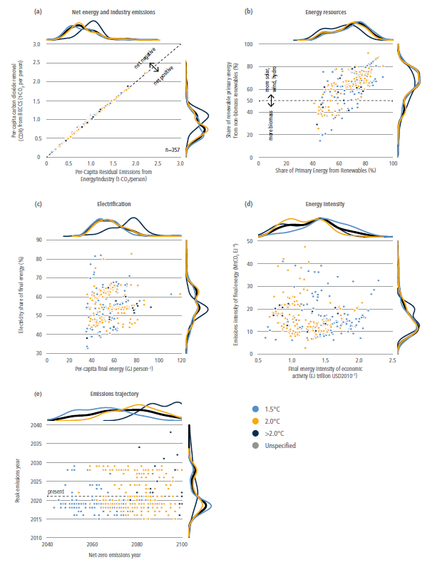
Figure 6.22 | Characteristics of global net-zero energy systems when global energy and industrial CO2 emissions reach net-zero.
6.6.2.1Limited and/or Targeted Use of Fossil Fuels
Net-zero energy systems will use far less fossil fuel than today ( high confidence). The precise quantity of fossil fuels will largely depend on the relative costs of such fuels, electrification, alternative fuels, and CDR (Section 6.6.2.4) in the energy system ( high confidence). All of these are affected by regional differences in resources (McGlade and Ekins 2015), existing energy infrastructure (Tong et al. 2019), demand for energy services, and climate and energy policies. Fossil fuel use may persist, for example, if and where the costs of such fuels and the compensating carbon management (e.g., CDR, CCS) are less than non-fossil energy. For most applications, however, it is likely that electrification (McCollum et al. 2014; Madeddu et al. 2020; Zhang and Fujimori 2020) or use of non-fossil alternative fuels (Zeman and Keith 2008; Graves et al. 2011; Hänggi et al. 2019; Ueckerdt et al. 2021) will prove to be the cheapest options. Most residual demand for fossil fuels is likely to predominantly be petroleum and natural gas given their high energy density (Davis et al. 2018), while demand for coal in net-zero energy systems is likely to be very low (Luderer et al. 2018; Jakob et al. 2020, Section 6.7.4) ( high confidence).
There is considerable flexibility regarding the overall quantity of liquid and gaseous fuels that will be required in net-zero energy systems ( high confidence) (Figure 6.22 and Section 6.7.4). This will be determined by the relative value of such fuels as compared to systems which rely more or less heavily on zero-emissions electricity. In turn, the share of any fuels that are fossil or fossil-derived is uncertain and will depend on the feasibility of CCS and CDR technologies and long-term sequestration as compared to alternative, carbon-neutral fuels. Moreover, to the extent that physical, biological, and/or socio-political factors limit the availability of CDR (Smith et al. 2015; Field and Mach 2017), carbon management efforts may prioritise residual emissions related to land use and other non-energy sources.
6.6.2.2Zero or Negative CO2 Emissions from Electricity
Net-zero energy systems will rely on decarbonised or net-negative CO2 emissions electricity systems, due to the many lower-cost options for producing zero-carbon electricity and the important role of end-use electrification in decarbonising other sectors ( high confidence).
There are many possible configurations and technologies for zero- or net-negative-emissions electricity systems ( high confidence). These systems could entail a mix of variable renewables, dispatchable renewables (e.g., biomass, hydropower), other firm, dispatchable (‘on-demand’) low-carbon generation (e.g., nuclear, CCS-equipped capacity), energy storage, transmission, carbon removal options (e.g., BECCS, DACCS), and demand management (Luderer et al. 2017; Bistline et al. 2018; Jenkins et al. 2018b; Bistline and Blanford 2021b). The marginal cost of deploying electricity sector mitigation options increases as electricity emissions approach zero; in addition, the most cost-effective mix of system resources changes as emissions approach zero and, therefore, so do the implications of electricity sector mitigation for sustainability and other societal goals (Mileva et al. 2016; Bistline et al. 2018; Sepulveda et al. 2018; Jayadev et al. 2020; Cole et al. 2021). Key factors influencing the electricity mix include relative costs and system benefits, local resource bases, infrastructure availability, regional integration and trade, co-benefits, societal preferences and other policy priorities, all of which vary by country and region (Section 6.6.4). Many of these factors depend on when the net-zero point is reached (Figure 6.22).
Based on their increasing economic competitiveness, VRE technologies, especially wind and solar power, will likely comprise large shares of many regional generation mixes ( high confidence) (Figure 6.22). While wind and solar will likely be prominent electricity resources, this does not imply that 100% renewable energy systems will be pursued under all circumstances, since economic and operational challenges increase nonlinearly as shares approach 100% (Box 6.8) (Frew et al. 2016; Imelda et al. 2018 b; Shaner et al. 2018; Bistline and Blanford 2021a; Cole et al. 2021). Real-world experience planning and operating regional electricity systems with high instantaneous and annual shares of renewable generation is accumulating, but debates continue about how much wind and solar should be included in different systems, and the cost-effectiveness of mechanisms for managing variability (Box 6.8). Either firm, dispatchable generation (including nuclear, CCS-equipped capacity, dispatchable renewables such as geothermal, and fossil units run with low capacity factors and CDR to balance emissions) or seasonal energy storage (alongside other balancing resources discussed in Box 6.8) will be needed to ensure reliability and resource adequacy with high percentages of wind and solar (Jenkins et al. 2018b; Dowling et al. 2020; Denholm et al. 2021) though each option involves uncertainty about costs, timing, and public acceptance (Albertus et al. 2020).
Electricity systems require a range of different functional roles – for example, providing energy, capacity, or ancillary services. As a result, a range of different types of generation, energy storage, and transmission resources may be deployed in these systems (Baik et al. 2021). There are many options for each of these roles, each with their strengths and weaknesses (Sections 6.4.3 and 6.4.4), and deployment of these options will be influenced by the evolution of technological costs, system benefits, and local resources (Fell and Linn 2013; Hirth 2015; Bistline et al. 2018; Mai et al. 2018; Veers et al. 2019).
System management is critical for zero- or negative-emissions electricity systems. Maintaining reliability will increasingly entail system planning and operations that account for characteristics of supply- and demand-side resources (Hu et al. 2018). Coordinated planning and operations will likely become more prevalent across portions of the electricity system (e.g., integrated generation, transmission, and distribution planning), across sectors, and across geographies (EPRI 2017; Konstantelos et al. 2017; Chan et al. 2018; Bistline and Young 2019) (Section 6.4.3).
Energy storage will be increasingly important in net-zero energy systems, especially in systems with shares of VRE ( high confidence). Deployment of energy storage will vary based on the system benefits and values of different options (Arbabzadeh et al. 2019; Denholm and Mai 2019). Diurnal storage options like lithium-ion batteries have different value than storing and discharging electricity over longer periods through long-duration energy storage with less frequent cycling, which require different technologies, supporting policies, and business models (Gallo et al. 2016; Blanco and Faaij 2017; Albertus et al. 2020; Dowling et al. 2020; Sepulveda et al. 2021) (Section 6.4.4). The value of energy storage varies with the level of deployment and on the competitiveness of economic complements such as VRE options (Mileva et al. 2016; Bistline and Young 2020) and substitutes such as flexible demand (Brown et al. 2018; Merrick et al. 2018), transmission (Schlachtberger et al. 2017; Brown et al. 2018; Merrick et al. 2018; Bistline and Young 2019), trade (Bistline et al. 2020b), dispatchable generators (Hittinger and Lueken 2015; Gils et al. 2017; Arbabzadeh et al. 2019), direct air capture (DAC) (Daggash et al. 2019), and efficiencies in system operations (Tuohy et al. 2015).
The approach to other sectors could impact on electricity sector planning, and the role of some technologies (e.g., hydrogen, batteries, CCS) could depend on deployment in other sectors. CCS offers opportunities for CO2 removal when fuelled with syngas or biomass containing carbon captured from the atmosphere (Hepburn et al. 2019); however, concerns about lifecycle environmental impacts, uncertain costs, and public acceptance are potential barriers to widespread deployment (Section 6.4.2). It is unclear whether CDR options like BECCS will be included in the electricity mix to offset continued emissions in other parts of the energy system or beyond (MacDowell et al. 2017; Bauer et al. 2018 a; Luderer et al. 2018). Some applications may also rely on power to fuels (PtX) electricity conversion to create low-emissions synthetic fuels (Sections 6.6.2.6, 6.4.4, and 6.4.5), which could impact on electricity system planning and operations. Additionally, if DAC technologies are used, electricity and heat requirements to operate DAC could impact electricity system investments and operations (Realmonte et al. 2019; Bistline and Blanford 2021a).
Box 6.8 | 100% Renewables in Net-zeroEnergy Systems
The decreasing cost and increasing performance of renewable energy has generated interest in the feasibility of providing nearly all energy services with renewables. Renewable energy includes wind power, solar power, hydroelectric power, bioenergy, geothermal energy, tidal power, and ocean power. There are two primary frames around which 100% renewable energy systems are discussed: 100% renewable electricity systems and 100% renewable energy systems, considering not only electricity but all aspects of the energy system.
It is technically feasible to use very high renewable shares (e.g., above 75% of annual regional generation) to meet hourly electricity demand under a range of conditions, especially when VRE options, notably wind and solar, are complemented by other resources ( high confidence). There are currently many grids with high renewable shares and large anticipated roles for VRE sources, in particular wind and solar (Section 6.4), in future low-carbon electricity systems. An increasingly large set of studies examines the feasibility of high renewable penetration and economic drivers under different policy, technology, and market scenarios (Cochran et al. 2014; Deason 2018; Jenkins et al. 2018b; Bistline et al. 2019; Hansen et al. 2019; Dowling et al. 2020; Blanford et al. 2021; Denholm et al. 2021). High wind and solar penetration involves technical and economic challenges due to their unique characteristics such as spatial and temporal variability, short- and long-term uncertainty, and non-synchronous generation (Cole et al. 2017). These challenges become increasingly important as renewable shares approach 100% (Sections 6.6.2.2 and 6.4.3).
There are many balancing options in systems with very high renewables (Milligan et al. 2015; Jenkins et al. 2018b; Mai et al. 2018; Bistline 2021a; Denholm et al. 2021).
•Energy storage. Energy storage technologies like batteries, pumped hydro, and hydrogen can provide a range of system services (Balducci et al. 2018; Bistline et al. 2020a) (Section 6.4.4). Lithium-ion batteries have received attention as costs fall and installations increase, but very high renewable shares typically entail either dispatchable generation or long-duration storage in addition to short-duration options (Jenkins et al. 2018b; Arbabzadeh et al. 2019; Schill 2020). Energy storage technologies are part of a broad set of options (including synchronous condensers, demand-side measures, and even inverter-based technologies themselves) for providing grid services (Castillo and Gayme 2014; EPRI 2019a).
•Transmission and trade. To balance differences in resource availability, high renewable systems will very likely entail investments in transmission capacity (Mai et al. 2014; Macdonald et al. 2016; Pleßmann and Blechinger 2017; Zappa et al. 2019) (Section 6.4.5) and changes in trade (Abrell and Rausch 2016; Bistline et al. 2019). These increases will likely be accompanied by expanded balancing regions to take advantage of geographical smoothing.
•Dispatchable (‘on-demand’) generation. Dispatchable generation could include flexible fossil units or low-carbon fuels such as hydrogen with lower minimum load levels (Denholm et al. 2018; Bistline 2019), renewables like hydropower, geothermal, or biomass (Hirth 2016; Hansen et al. 2019), or flexible nuclear (Jenkins et al. 2018a). The composition depends on costs and other policy goals, though in all cases, capacity factors are low for these resources (Mills et al. 2020).
•Demand management: Many low-emitting and high-renewables systems also utilise increased load flexibility in the forms of energy efficiency, demand response, and demand flexibility, utilising newly electrified end uses such as electric vehicles to shape demand profiles to better match supply (Ameli et al. 2017; Hale 2017; Brown et al. 2018; Imelda et al. 2018 a; Bistline 2021a).
•Sector coupling: Sector coupling includes increased end-use electrification and PtX electricity conversion pathways, which may entail using electricity to create synthetic fuels such as hydrogen (Davis et al. 2018; Ueckerdt et al. 2021) (Sections 6.4.3, 6.4., 6.4.5, 6.6.4.3, and 6.6.4.6).
Deployment of integration options depends on their relative costs and value, regulations, and electricity market design. There is considerable uncertainty about future technology costs, performance, availability, scalability, and public acceptance (Kondziella and Bruckner 2016; Bistline et al. 2019). Deploying balanced resources likely requires operational, market design, and other institutional changes, as well as technological changes in some cases (Denholm et al. 2021; Cochran et al. 2014). Mixes will differ based on resources, system size, flexibility, and whether grids are isolated or interconnected.
Box 6.8
Although there are no technical upper bounds on renewable electricity penetration, the economic value of additional wind and solar capacity typically decreases as their penetration rises, creating economic challenges at higher deployment levels (Hirth 2013; Gowrisankaran et al. 2016; Cole et al. 2021; Denholm et al. 2021; Millstein et al. 2021). The integration options above, as well as changes to market design, can mitigate these challenges but likely will not solve them, especially since these options can exhibit declining value themselves (De Sisternes et al. 2016; Bistline 2017; Denholm and Mai 2019) and may be complements or substitutes to each other.
Energy systems that are 100% renewable (including all parts of the energy sector, and not only electricity generation) raise a range of technological, regulatory, market, and operational challenges that make their competitiveness uncertain ( high confidence). These systems require decarbonising all electricity, using this zero-carbon electricity broadly, and then utilising zero-carbon energy carriers for all end uses not served by electricity, for example, air travel, long-distance transport, and high-temperature process heat. Broader questions emerge regarding the attractiveness of supplying all energy, and not just electricity, with renewables (Figure 6.22). Integrated assessment and energy systems research suggest large roles for renewables, but energy and electricity shares are far from 100%, even with stringent emissions reductions targets and optimistic assumptions about future cost reductions (Bauer et al. 2018; Bistline et al. 2018; Jenkins et al. 2018b; Huntington et al. 2020) (Section 6.7.1). Scenarios with 100% renewable energy systems are an emerging subset in the decarbonisation literature, especially at regional levels (Hansen et al. 2019; Denholm et al. 2021). Many 100% renewables studies focus more heavily on electrification for decarbonising end uses, and include less biofuels and hydrogen than the broader literature on deep decarbonisation (Bauer et al. 2018 a). These studies typically assume a constrained set of available technologies to demonstrate the technical feasibility of very high renewable systems and do not optimise to find least-cost, technology-neutral decarbonisation pathways, and many 100% renewables studies focus on the electricity sector or a limited number of sectors (Jenkins et al. 2018a; Hansen et al. 2019). In addition to renewables, studies broadly agree that including additional low-carbon options – including not only low-carbon electricity but also targeted use of fossil fuels with and without CCS (Section 6.6.2.1) and alternative fuels for sectors that are difficult to electrify (Section 6.6.2.4) – can lower the cost of decarbonisation, even with very high shares of renewables (Figure 6.22). However, there is disagreement about the magnitude of cost savings from larger portfolios, which depend on context- and scenario-specific assumptions about technologies, markets, and policies.
6.6.2.3Widespread Electrification of End Uses
Net-zero energy systems will rely more heavily on increased use of electricity (electrification) in end uses ( high confidence). The literature on net-zero energy systems almost universally calls for increased electrification (Sugiyama 2012; Williams et al. 2012; Kriegler et al. 2014a; Williams et al. 2014; Rogelj et al. 2015a; Sachs et al. 2016; Luderer et al. 2018; Sven et al. 2018; Schreyer et al. 2020). At least 30% of the global final energy needs are expected to be served by electricity, with some estimates suggesting upwards of 80% of total energy use being electrified (Figure 6.22, panel c). Increased electrification is especially valuable in net-zero energy systems in tandem with decarbonised electricity generation or net-negative emissions electricity generation (Section 6.5.4.2). Flexible electric loads (electric vehicles, smart appliances) can in turn facilitate incorporation of VRE electricity options, increase system flexibility, and reduce needs for grid storage (Section 6.4.3) (Mathiesen et al. 2015; Lund et al. 2018).
Several end uses, such as passenger transportation (light-duty electric vehicles, two and three wheelers, buses, rail) as well as building energy uses (lighting, cooling) are likely to be electrified in net-zero energy systems ( high confidence). Variations in projections of electrification largely result from differences in expectations about the ability and cost-competitiveness of electricity to serve other end uses such as non-rail freight transport, aviation, and heavy industry (McCollum et al. 2014; Bataille et al. 2016; EPRI 2018; Breyer et al. 2019) (Section 6.5.4.4), especially relative to biofuels and hydrogen (‘low-carbon fuels’) (McCollum et al. 2014; Sachs et al. 2016; Rockström et al. 2017), the prospects for which are still quite uncertain (Section 6.4). The emergence of CDR technologies and the extent to which they allow for residual emissions as an alternative to electrification will also affect the overall share of energy served by electricity (Section 6.6.2.7).
Regions endowed with cheap and plentiful low-carbon electricity resources (wind, solar, hydropower) are likely to emphasise electrification, while those with substantial bioenergy resources or availability of other liquid fuels might put less emphasis on electrification, particularly in hard-to-electrify end uses (medium confidence). For example, among a group of Latin American countries, relative assumptions about liquid fuels and electricity result in an electrification range of 28–82% for achieving a net-zero energy system (Bataille et al. 2020). Similarly, the level of penetration of biofuels that can substitute for electrification will depend on regional circumstances such as land-use constraints, competition with food, and sustainability of biomass production (Section 6.6.2.4).
Electrification of most buildings services, with the possible exception of space heating in extreme climates, is expected in net-zero energy systems ( high confidence) (Chapter 9). Space cooling and water heating are expected to be largely electrified. Building electrification is expected to rely substantially on heat pumps, which will help lower emissions both through reduced thermal requirements and higher efficiencies (Mathiesen et al. 2015; Sven et al. 2018; Rissman et al. 2020). The level of electrification for heating will depend on the trade-offs between building or household level heat pumps versus more centralised district heating network options (Mathiesen et al. 2015; Brown et al. 2018), as well as the cost and performance of heat pumps in more extreme climates and regional grid infrastructure (EPRI 2018; Waite and Modi 2020).
A significant share of transportation, especially road transportation, is expected to be electrified in net-zero energy systems ( high confidence). In road transportation, two- and three-wheelers, light-duty vehicles (LDVs), and buses, are especially amenable to electrification, with more than half of passenger LDVs expected to be electrified globally in net-zero energy systems (medium confidence) (Fulton et al. 2015; Sven et al. 2018; Khalili et al. 2019; Bataille et al. 2020). Long-haul trucks, large ships, and aircraft are expected to be harder to electrify without technological breakthroughs (Fulton et al. 2015; Mathiesen et al. 2015), although continued improvements in battery technology may enable electrification of long-haul trucks (Nykvist and Olsson 2021) (Chapter 10). Due to the relative ease of rail electrification, near complete electrification of rail and a shift of air and truck freight to rail is expected in net-zero energy systems (Fulton et al. 2015; Rockström et al. 2017; Sven et al. 2018; Khalili et al. 2019). The degree of modal shifts and electrification will depend on local factors such as infrastructure availability and location accessibility. Due to the challenges associated with electrification of some transport modes, net-zero energy systems may include some residual emissions associated with the freight sector that are offset through CDR technologies (Muratori et al. 2017b), or reliance on low and zero-carbon fuels instead of electrification.
A non-trivial number of industry applications could be electrified as a part of a net-zero energy system, but direct electrification of heavy industry applications such as cement, primary steel manufacturing, and chemical feedstocks is expected to be challenging (medium confidence) (Davis et al. 2018; Philibert 2019; Madeddu et al. 2020; van Sluisveld et al. 2021). Process and boiler heating in industrial facilities are anticipated to be electrified in net-zero energy systems. Emissions intensity reductions for cement and concrete production can be achieved through the use of electrified cement kilns, while emissions associated with steel production can be reduced through the use of an electric arc furnace (EAF) powered by decarbonised electricity (Rissman et al. 2020). Electricity can also be used to replace thermalheat such as resistive heating, EAFs, and laser sintering (Madeddu et al. 2020; Rissman et al. 2020). One study found that as much as 60% of the energy end-use in European industry could be met with direct electrification using existing and emerging technologies (Madeddu et al. 2020). Industry electrification for different regions will depend on the economics and availability of alternative emissions mitigation strategies such as carbon neutral fuels and CCS (Davis et al. 2018; Madeddu et al. 2020).
6.6.2.4Alternative Fuels in Sectors not Amenable to Electrification
Net-zero energy systems will need to rely on alternative fuels – notably hydrogen or biofuels – in several sectors that are not amenable to electricity and otherwise hard to decarbonise (medium confidence). Useful carbon-based fuels (e.g., methane, petroleum, methanol), hydrogen, ammonia, or alcohols can be produced with net-zero CO2 emissions and without fossil fuel inputs (Sections 6.4.4 and 6.4.5). For example, liquid hydrocarbons can be synthesised via hydrogenation of non-fossil carbon by processes such as Fischer-Tropsch (MacDowell et al. 2017) or by conversion of biomass (Tilman et al. 2009). The resulting energy-dense fuels can serve applications that are difficult to electrify, but it is not clear if and when the combined costs of obtaining necessary feedstocks and producing these fuels without fossil inputs will be less than continuing to use fossil fuels and managing the related carbon through, for example, CCS or CDR (Ueckerdt et al. 2021).
CO2 emissions from some energy services are expected to be particularly difficult to cost-effectively avoid, among them: aviation; long-distance freight by ships; process emissions from cement and steel production; high-temperature heat (e.g., >1000°C); and electricity reliability in systems with high penetration of variable renewable energy sources (NAS) (Davis et al. 2018; Luderer et al. 2018; Sepulveda et al. 2018; Chiaramonti 2019; Bataille 2020; Madeddu et al. 2020; Rissman et al. 2020; Thiel and Stark 2021). The literature focused on these services and sectors is growing, but remains limited, and provides minimal guidance on the most promising or attractive technological options and systems for avoiding these sectors’ emissions. Technological solutions do exist, but those mentioned in the literature are prohibitively expensive, exist only at an early stage, and/or are subject to much broader concerns about sustainability (e.g., biofuels) (Davis et al. 2018).
Liquid biofuels today supply about 4% of transportation energy worldwide, mostly as ethanol from grain and sugar cane and biodiesel from oil seeds and waste oils (Davis et al. 2018). These biofuels could conceivably be targeted to difficult-to-electrify sectors, but face substantial challenges related to their lifecycle carbon emissions, cost, and further scalability (Tilman et al. 2009; Staples et al. 2018), (Section 6.4.2). The extent to which biomass will supply liquid fuels or high temperature heat for industry in a future net-zero energy system will thus depend on advances in conversion technology that enable use of feedstocks such as woody crops, agricultural residues, algae, and wastes, as well as competing demands for bioenergy and land, the feasibility of other sources of carbon-neutral fuels, and integration of bioenergy production with other objectives, including CDR, economic development, food security, ecological conservation, and air quality (Fargione 2010; Williams and Laurens 2010; Creutzig et al. 2015; Chatziaras et al. 2016; Laurens 2017; Lynd 2017; Bauer et al. 2018 a, b; Strefler et al. 2018; Muratori et al. 2020b; Fennell et al. 2021) (Section 6.4.2.6).
Costs are the main barrier to synthesis of net-zero emissions fuels ( high confidence), particularly costs of hydrogen (a constituent of hydrocarbons, ammonia, and alcohols) (Section 6.4.5). Today, most hydrogen is supplied by steam reformation of fossil methane (CH4 into CO2 and H2) at a cost of 1.30– USD1.50 kg –1 (Sherwin 2021). Non-fossil hydrogen can be obtained by electrolysis of water, at current costs of USD5–7 kgH2–1 (assuming relatively low electricity costs and high utilisation rates) (Graves et al. 2011; DOE 2020a; Newborough and Cooley 2020; Peterson et al. 2020). At these costs for electrolytic hydrogen, synthesised net-zero emissions fuels would cost at least USD1.6 per litre of diesel equivalent (or USD6 gallon –1 and USD46 GJ–1, assuming non-fossil carbon feedstock costs of USD100 per tonne of CO2 and low process costs of USD0.05 litre –1 or USD1.5 GJ–1). Similar calculations suggest that synthetic hydrocarbon fuels could currently avoid CO2 emissions at a cost of USD936–1404 tonne –1 (Ueckerdt et al. 2021). However, economies of scale are expected to bring these costs down substantially in the future (IRENA 2020c; Ueckerdt et al. 2021), and R&D efforts are targeting 60–80% reductions in costs (to less than USD2 kg –1 (H2)–1) possibly by use of less mature but promising technologies such as high-temperature electrolysis and thermochemical water splitting (Kuckshinrichs et al. 2017; Pes et al. 2017; Schmidt et al. 2017; Saba et al. 2018; DOE, 2018, 2020b). Technologies capable of producing hydrogen directly from water and sunlight (photoelectrochemical cells or photocatalysts) are also under development, but are at an early stage (Nielander et al. 2015; DOE 2020a). High hydrogen production efficiencies have been demonstrated, but costs, capacity factors, and lifetimes need to be improved in order to make such technologies feasible for net-zero emissions fuel production at scale (McKone et al. 2014; DOE 2020a; Newborough and Cooley 2020).
The carbon contained in net-zero emissions hydrocarbons must have been removed from the atmosphere either through DAC, or, in the case of biofuels, by photosynthesis (which could include CO2 captured from the exhaust of biomass or biogas combustion) (Zeman and Keith 2008; Graves et al. 2011). A number of different groups are now developing DAC technologies, targeting costs of USD100 per tonne of CO2 or less (Darton and Yang 2018; Keith et al. 2018; Fasihi et al. 2019).
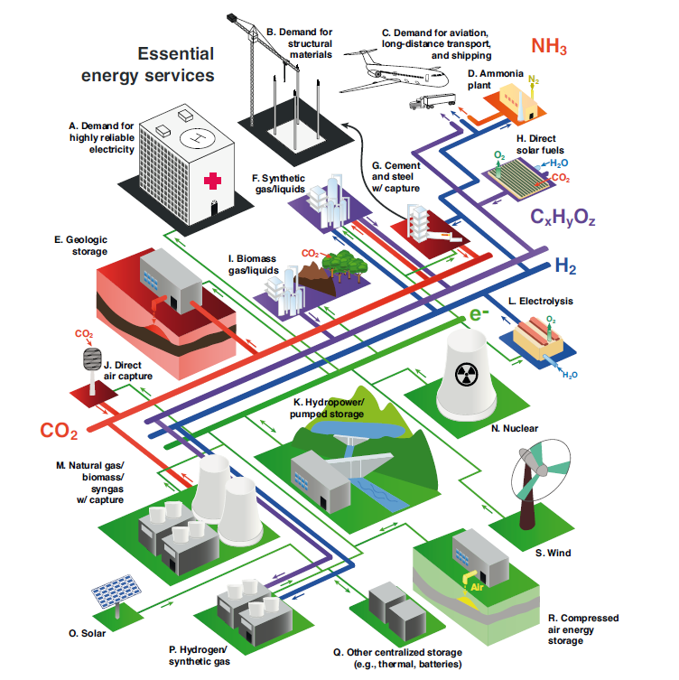
Figure 6.23 | Schematic of net-zero emissions energy system, including methods to address difficult-to-electrify sectors. Source: with permission from Davis et al. (2018).
Box 6.9 | The Hydrogen Economy
The phrase ‘hydrogen economy’ is often used to describe future energy systems in which hydrogen plays a prominent role. These future energy systems would not use hydrogen for all end uses; they would use hydrogen to complement other energy carriers, mainly electricity, where hydrogen might have advantages. Hydrogen could provide long-term electricity storage to support high-penetration of intermittent renewables and could enable trading and storage of electricity between different regions to overcome seasonal or production capability differences (Dowling et al. 2020; Sepulveda et al. 2021). It could also be used in lieu of natural gas for peaking generation, provide process heat for industrial needs, or be used in the metal sector via direct reduction of iron ore (Chapter 11). Clean hydrogen could be used as a feedstock in the production of various chemicals and synthetic hydrocarbons. Finally, hydrogen-based fuel cells could power vehicles. Recent advances in battery storage make electric vehicles the most attractive alternative for light-duty transport. However, fuel cell technology could complement electric vehicles in supporting the decarbonisation of heavy-duty transport segments (e.g., trucks, buses, ships, and trains) (Chapter 10).
Hydrogen production costs have historically been prohibitive, but recent technological developments are bringing costs down. These developments include improvements in hydrogen production technologies in terms of efficiency and capital costs (e.g., steam methane reforming) (Alrashed and Zahid 2021; Boretti and Banik 2021) and the emergence of alternative production technologies such as electrolysers (Dawood et al. 2020). These technological changes, along with decreasing costs of renewable power, are increasing the viability of hydrogen. Other improvements in hydrogen-based technologies are also emerging quickly. Gas turbines now run on blended fuels containing 5–95% hydrogen by volume (GE 2020) and could operate entirely on hydrogen by 2030 (Pflug et al. 2019). Fuel cell costs have decreased by 80–95% since the early 2000s, while power density and durability have improved (Jouin et al. 2016; IEA 2019e; Kurtz et al. 2019).
For hydrogen to support decarbonisation, it will need to be produced from zero-carbon or extremely low-carbon energy sources. One such production category is ‘green hydrogen’. While there is no unified definition for green hydrogen, it can be produced by the electrolysis of water using electricity generated without carbon emissions (such as renewables). Hydrogen can also be produced through biomass gasification with carbon capture and storage (BECCS), leading to negative carbon emissions (Arnaiz del Pozo et al. 2021). Additionally, ‘blue hydrogen’ can be produced from natural gas through the process of auto-thermal reforming (ATR) or steam methane reforming, combined with CCS technology that would absorb most of the resulting CO2 (80–90%).
However, the potential role of hydrogen in future energy systems depends on more than just production methods and costs. For some applications, the competitiveness of hydrogen also depends on the availability of the infrastructure needed to transport and deliver it at relevant scales (Lee et al. 2021). Transporting hydrogen through existing gas pipelines is generally not feasible without changes to the infrastructure itself (Gumber and Gurumoorthy 2018; Muratori et al. 2018). Existing physical barriers, such as steel embrittlement and degradation of seals, reinforcements in compressor stations, and valves, require retrofitting during the conversion to H2 distribution or new dedicated pipelines to be constructed (Dohi et al. 2016). The capacity to leverage and convert existing gas infrastructure to transport hydrogen will vary regionally, but in many cases could be the most economically viable pathway (Cerniauskas et al. 2020; Brändle et al. 2021; Brooks 2021; Wettengel 2021). Hydrogen could also be transported as liquid gas or as liquid organic hydrogen carriers such as ammonia, for which industry knowledge exists (Demir et al. 2018; Wulf et al. 2018; Hong et al. 2021). Additionally, improvements in fuel cell technologies are needed to make hydrogen-based transport economically viable. There are also safety concerns associated with the flammability (Nilsson et al. 2017) and storage (Andersson and Grönkvist 2019; Caglayan et al. 2019) of hydrogen which will need to be considered.
6.6.2.5Using Less Energy and Using It More Efficiently
Demand-side or demand reduction strategies include technology efficiency improvements, strategies that reduce energy consumption or demand for energy services (such as reducing the use of personal transportation, often called ‘conservation’) (Creutzig et al. 2018), and strategies such as load curtailment.
Net-zero energy systems will use energy more efficiently than those of today ( high confidence). Energy efficiency and energy use reduction strategies are generally identified as being flexible and cost-effective, with the potential for large-scale deployment (Chapters 5, 9, 10, and 11). For this reason, existing studies find that energy efficiency and demand reduction strategies will be important contributors to net-zero energy systems (Creutzig et al. 2018; Davis et al. 2018; DeAngelo et al. 2021). Lower demand reduces the need for low-carbon energy or alternative fuel sources.
Characterising efficiency of net-zero energy systems is problematic due to measurement challenges ( high confidence). Efficiency itself is difficult to define and measure across full economies (Saunders et al. 2021). There is no single definition of energy efficiency and the definition understandably depends on the context used (Patterson 1996), which ranges from device-level efficiency all the way to the efficient use of energy throughout an economy. Broadly, energy-efficient strategies allow for the same level of services or output while using less energy. At the level of the entire economy, measures such as primary or final energy per capita or per GDP are often used as a proxy for energy efficiency; these measures reflect not only efficiency, but also many other factors such as industrial structure, endowed natural resources, consumer preferences, policies, and regulations. Energy efficiency and other demand-side strategies represent such a large set of technologies, strategies, policies, market and consumers’ responses and policies that aggregate measures can be difficult to define (Saunders et al. 2021).
Measurement issues notwithstanding, virtually all studies that address net-zero energy systems assume improved energy intensity in the future ( high confidence). The overall efficiency outcomes and the access to such improvements across different nations, however, are not clear. Energy consumption will increase over time – despite energy efficiency improvements – due to population growth and development (DeAngelo et al. 2021).
A study (DeAngelo et al. 2021) reviewed 153 integrated asset management scenarios that attain net-zero energy sector CO2 emissions and found that, under a scenario with net-zero emissions: global final energy per capita lies between 21–109 GJ per person (median: 57), in comparison to 2018 global final energy use of 55 GJ per person; many countries use far more energy per capita than today as their incomes increase; global final energy use per unit of economic output ranges from 0.7–2.2 EJ per trillion USD (median: 1.5), in comparison to 5 EJ per trillion USD in 2018; and the median final energy consumption is 529 EJ. By comparison, final energy consumption would be 550 EJ if current energy consumption per capita continued under a future population of 10 billion people. Across all scenarios, total final energy consumption is higher today than in the year in which net-zero emissions are attained, and regionally, only the OECD+EU and Eurasia have lower median total final energy than in 2010.
Net-zero energy systems will be characterised by greater efficiency and more efficient use of energy across all sectors ( high confidence). Road transportation efficiency improvements will require a shift from liquid fuels (Chapters 5 and 10). Emissions reductions will come from a transition to electricity, hydrogen, or synthetic fuels produced with low-carbon energy sources or processes. Vehicle automation, ride-hailing services, online shopping with door delivery services, and new solutions like last mile delivery with drones may result in increased service share. Lighter vehicles, a shift to public transit, and incorporation of two- and three-wheelers will be features of a net-zero energy system (Chapter 10). Teleworking and automation of work may provide reductions in driving needs. Other sectors, such as air travel and marine transportation may rely on alternative fuels such as biofuels, synthetic fuels, ammonia, produced with zero carbon energy source (Section 6.6.2.4).
Under net-zero energy systems, buildings would by characterised by improved construction materials, an increase in multi-family dwellings, early retirement of inefficient buildings, smaller floor areas, and smart controls to optimise energy use in the building, namely for heating, cooling, LED lighting, and water heating (Chapter 9). End uses would utilise electricity, or potentially hydrogen, produced from zero-carbon sources. The use of electricity for heating and cooking may often be a less efficient process at converting primary energy to energy services than using natural gas, but using natural gas would require CDR in order to be considered net-zero emissions. Changes in behaviour may modestly lower demand. Most economies would have buildings with more efficient technologies powered by zero-carbon electricity, and developing economics would shift from biomass to electricity, raising their energy consumption as population and wealth increase under net-zero energy systems.
Industry has seen major efficiency improvements in the past, but many processes are now close to their thermodynamic limits. Electrification and breakthrough processes (such as producing steel with electricity and hydrogen), using recycled materials, using heat more efficiently by improving thermal insulation, and using waste heat for heat pumps, as well using advanced sensors, monitoring, and visualisation and communication technologies may provide further efficiency improvements (Chapter 11).
6.6.2.6Greater Reliance on Integrated Energy System Approaches
Energy systems integration refers to connected planning and operations across energy carriers, including electricity, fuels, and thermal resources. Coordinated planning could be important in lowering system costs, increasing reliability, minimising environmental impacts, and ensuring that costs of R&D and infrastructure account for not just current needs but also for those of future energy systems (Section 6.4.3). Integration includes not only the physical energy systems themselves but also simultaneous societal objectives (e.g., sustainable development goals), innovation processes (e.g., coordinating R&D to increase the likelihood of beneficial technological spillovers), and other institutional and infrastructural transformations (Sachs et al. 2019). Given system variability and differences in regional resources, there are economic and technical advantages to greater coordination of investments and policies across jurisdictions, sectors, and levels of government (Schmalensee and Stavins 2017). Coordinated planning and operations can improve system economics by sharing resources, increasing the utilisation of capital-intensive assets, enhancing the geographical diversity of resource bases, and smoothing demand. But integration could require regulatory and market frameworks to facilitate and appropriate price signals to align incentives and to coordinate investments and operations.
Carbon-neutral energy systems are likely to be more interconnected than those of today ( high confidence). The many possible feedstocks, energy carriers, and interconversion processes imply a greater need for the integration of production, transport, storage, and consumption of different fuels (Davis et al. 2018). For instance, electrification is expected to play an important role in decarbonising light-duty vehicles (Chapter 10, Section 6.4.3), yet the electricity and transport sectors have few direct interactions today. Systems integration and sectoral coupling are increasingly relevant to ensure that net-zero energy systems are reliable, resilient, and affordable (EPRI 2017; Martin et al. 2017; Buttler and Spliethoff 2018; O’Malley et al. 2020). Deep decarbonisation offers new opportunities and challenges for integrating different sectors as well as supply- and demand-side options. For instance, increasing electrification will change daily and seasonal load shapes, and end-use flexibilities and constraints could impact the desirability of different supply-side technologies (Brown et al. 2018; EPRI 2019b). The feasibility of net-zero energy system configurations could depend on demonstrating cross-sector benefits like balancing VRE sources in the electricity sector, and on offering the flexibility to produce multiple products. For instance, low-emissions synthetic fuels could help to bridge stationary and mobile applications, since fuel markets have more flexibility than instantaneously balanced electricity markets due to the comparative ease and cost of large-scale, long-term storage of chemical fuels (Davis et al. 2018).
There are few detailed archetypes of integrated energy systems that provide services with zero- or net-negative CO2 emissions (such as Jacobson et al. 2019), so there is considerable uncertainty about integration and interactions across parts of the system. Although alternate configurations, trade-offs, and pathways are still being identified, common elements include fuels and processes like zero- or negative-CO2 electricity generation and transmission, hydrogen production and transport, synthetic hydrocarbon production and transport, ammonia production and transport, and carbon management, where linkages across pathways could include the use of electricity to produce hydrogen via electrolysis (Smith et al. 2016; Moore 2017; Davis et al. 2018; Jenkins et al. 2018b; Shih et al. 2018; van Vuuren et al. 2018). Linked analytical frameworks are increasing being used to understand the potential role for system coupling with greater temporal resolution, spatial resolution, and heterogeneity of consumer and firm decisions (Bohringer and Rutherford 2008; Bistline and de la Chesnaye 2017; Collins et al. 2017; Gerboni et al. 2017; Santen et al. 2017; Pye et al. 2021).
Challenges associated with integrating net-zero energy systems include rapid technological change, the importance of behavioural dimensions in domains with limited experience and data, policy changes and interactions, and path dependence. Technological cost and public acceptance will influence the degree of integration. Sectoral pathways will likely be adaptive and adjust based on the resolution of uncertainties over time, and the relative competitiveness will evolve as the technological frontier evolves, which is a complex and path-dependent function of deployment, R&D, and inter-industry spillovers. Supply-side options interact with demand-side measures in increasingly integrated energy systems (Sorrell 2015; van Vuuren et al. 2018).
6.6.2.7Carbon Dioxide Removal
While CDR is likely necessary for net-zero energy systems, the scale and mix of strategies is unclear –nonetheless some combination of BECCS and DACCS are likely to be part of net-zero energy systems ( high confidence). Studies indicate that energy-sector CDR may potentially remove 5–12 GtCO2 annually globally in net-zero energy systems (Fuss et al. 2018) (Figure 6.22; Section 6.7; Chapter 12). CDR is not intended as a replacement for emissions reduction, but rather as a complementary effort to offset residual emissions from sectors that are not decarbonised and from other low-carbon technologies such as fossil CCS (McLaren et al. 2019; Gaffney et al. 2020; Iyer et al. 2021).
CDR covers a broad set of methods and implementation options (Chapters 7 and 12). The two CDR methods most relevant to the energy sector are BECCS, which is used to produce energy carriers, and DACCS which is an energy user (Smith et al. 2016; Singh and Colosi 2021). BECCS has value as an electricity generation technology, providing firm, dispatchable power to support electricity grids with large amounts of VRE sources, and reducing the reliance on other means to manage these grids, including electricity storage (Mac Dowell et al. 2017; Bistline and Blanford 2021a). BECCS may also be used to produce liquid fuels or gaseous fuels, including hydrogen (Section 6.4.2.6) (Muratori et al. 2020b). For instance, CO2 from bio-refineries could be captured at <USD45 tCO2–1 (Sanchez et al. 2018). Similarly, while CO2 capture is expensive in the electricity sector, its integration with hydrogen via biomass gasification can be achieved at an incremental capital cost of 3–35% (Muratori et al. 2020b) (Section 6.4). As with all uses of bioenergy, linkages to broad sustainability concerns may limit the viable development, as will the presence of high-quality geologic sinks in close proximity (Melara et al. 2020).
DACCS offers a modular approach to CDR (Creutzig et al. 2019), but it could be a significant consumer of energy. DAC could also interact with other elements of the energy systems as the captured CO2 could be reused to produce low-carbon methanol and other fuels (Hoppe et al. 2018; Realmonte et al. 2019; Zhang and Fujimori 2020). DACCS might also offer an alternative for use of excess electricity produced by variable renewables (Wohland et al. 2018), though there are uncertainties about the economic performance of this integrated approach.
6.6.3The Institutional and Societal Characteristics of Net-zero Energy Systems
The transition to net-zeroenergy systems is not just technological; it requires shifts in institutions, organisations, and society more generally. As such, it involves institutional changes alongside changes in supply, technology, or markets (Andrews-Speed 2016, Pai et al. 2021). Institutional relationships between governments and energy sector actors (e.g., consumers, electricity companies) affect the nature of net-zero systems, as these entities may collaborate on or dispute net-zero goals and measures to achieve them. For example, following the Fukushima disaster, Japan placed emphasis on government-utility-public cooperation on use of nuclear power as a means of reducing carbon emissions (Sklarew 2018). Institutions are instrumental in shaping net-zero energy systems in multiple ways, complemented by and interacting with the behaviours of actors and policy regimes in these systems (Figure 6.24).
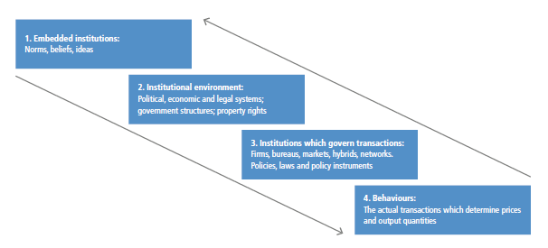
Figure 6.24 | A four-level framework for institutional change. The diagram depicts three levels of institutions (1–3) which collectively govern actor behaviours (4). Source: with permission from Andrews-Speed (2016).
One level of institutional interactions reflects embedded institutions, norms, beliefs, and ideas that would need to change to support net-zero energy systems. This applies, for example, to the objectives of modern economies and the potentially contradictory dynamics embedded in the concept of ‘green growth’ (Stegemann and Ossewaarde 2018; Stoknes and Rockström 2018). The institutional environment – the political and legal systems that govern exchanges and protect property rights – would also need to be different in net-zero energy systems. In this setting, changing regulations or subsidies that continue to favour carbon-intensive systems over the technologies of a net-zero energy system might prove difficult (Sovacool 2017). More generally, net-zero energy systems will need new regulatory frameworks to undertake new challenges, from managing a more interconnected grid to adequately governing underground storage of CO2. Institutions may also govern specific transactions, such as firms or networks that supply energy fuels or services. Current actors are typically resistant to disruptions, even if such disruptions may broadly benefit society (Kungl 2015; Schmid et al. 2017; Mori 2018).
For example, one energy system characterised by differentiated institutional interactions is the USA, where delivery of liquid fuels is lightly regulated, while electricity delivery is closely regulated (Dworkin et al. 2013). Reforming this two-pronged system for decarbonisation would require four types of institutional change: (i) changes to the control systems that coordinate generation and transmission through a pyramidal architecture for the operational control, dispatch, and delivery of electricity with a primary emphasis on reliability; (ii) changes to the financing of central-station power plants through long-term bonds, as valued by Wall Street ratings analysts; (iii) changes to the structure of investor-owned utilities that attract private investors who expected decades of technological stability to yield long-term, low-risk revenues; and (iv) changes to regulations to restructure and limit excessive returns and easy entry of new retail competitors, all recognising local and national concerns through state and federal regulatory agencies. The example shows how decision-making and the infrastructures involved are layered, and can create ‘nested hierarchies’ where institutions fulfil multiple roles for energy governance or regulation simultaneously (Stern et al. 2016b). Internationally and across different parts of the energy system, institutional challenges such as these could become even more stark and complex (Van de Graaf 2013).
6.6.4Regional Circumstances and Net-zero Energy Systems
Countries have flexibility to pursue options that make themost sense for their national circumstances (Figure 6.25). They may emphasise supply transformation over demand reduction; deploy different resources; engage at different levels in international energy trade; support different energy industries; focus on different energy carriers (e.g., electricity, hydrogen); or focus more on distributed or integrated systems, among others. Many factors may influence the long-term net-zero energy systems that are appropriate for any country’s national circumstances, including the following.
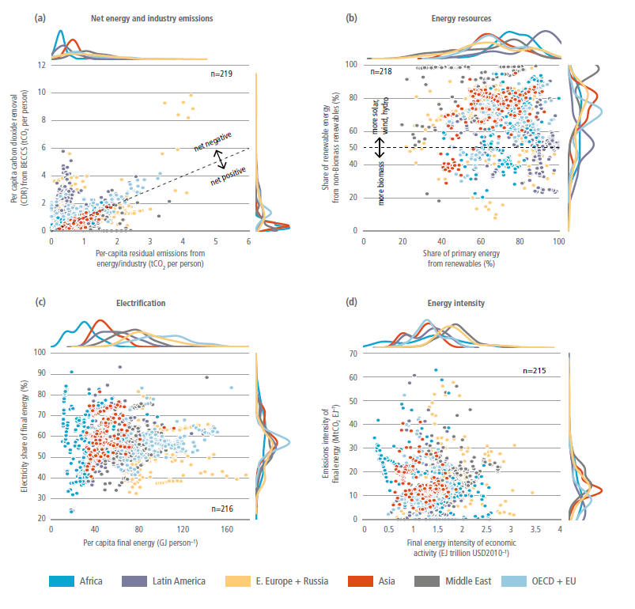
Figure 6.25 | Characteristics of regional energy systems and emissions when global energy and industrial CO2 emissions reach net-zero. Regional differences are shown for: (a) residual emissions and carbon removal; (b) energy resources; (c) electrification; and (d) energy intensity. Distributions of scenarios are shown along each axis for each region. Colour scheme is shown in (a). Points represent individual scenarios from the AR6 Scenarios Database (R6 regions dataset).
Future technology. Technological transitions have often been driven by the relative merits of different technology options. Recent trends in the use of PV cells, wind power, and in batteries, for example, have been spurred by their increasing economic competitiveness (Section 6.3). Yet future technology cannot be fully predicted, so it provides only a partial guide today for charting a path toward future systems.
Indigenous energy resources. Countries may emphasise approaches that take advantage of indigenous energy resources such as solar power, wind, hydroelectric resources, land for bioenergy crops, CO2 storage capability, or fossil resources to be used with CCS. Countries with less abundant resources may put greater emphasis on demand reductions and regional integration. Countries with resource bases that are easily tradeable, like low-carbon electricity or bioenergy, may choose to trade those resources rather than use them domestically (Box 6.10, Section 6.4.3, 6.4.5).
Regional climate. Climate influences heating and cooling demand, both of which influence countries’ energy demands and energy infrastructure to meet those demands (Section 6.5). In addition to daily demand profiles, heating and cooling are seasonal, influencing which energy sources may serve these loads and the seasonal storage they require. Cooling is almost entirely served by electricity today, and heating has commonly been served by non-electric fuels. In low-carbon energy systems, heating may be increasingly served by electricity (Section 6.6.4), meaning that the influence of regional climate may be strongest on countries’ electricity systems.
Current energy system configuration. Future sectoral energy demands and the potential for demand-side transformation are partially determined by existing infrastructure (e.g., building stocks, transport infrastructure). Countries with less developed or growing energy systems will have more flexibility to create the systems that best match their long-term goals, but there may be substantial challenges in transitioning directly to the most advanced low-carbon technology options, and countries may have different capacities to absorb technology from other countries.
Regional integration. Regional integration will allow countries to bridge energy gaps using external linkages, including regional electricity integration and trade in hydrogen, biomass, and other fuels. Countries with greater integration can rely more heavily on imports and may therefore rely less on indigenous resources (Box 6.10).
Societal preferences. Citizens in every country have preferences for certain technological options or mitigation approaches over others that will influence energy system choices. The public generally prefers a future energy system based largely on renewables. Preferences for non-renewable energy differ across regions and groups. For example, studies have found that people in the UK, Germany, the Netherlands, and Switzerland prefer renewable energy and personal energy efficiency and savings to nuclear, fossil fuels and CCS (Jones et al. 2012; Scheer et al. 2013; Demski et al. 2017; Bessette and Arvai 2018; Steg 2018; Volken et al. 2018). Studies have found that people with higher education levels, higher incomes, females, and liberals prefer renewables to fossil fuels and nuclear (Van Rijnsoever et al. 2015; Bertsch et al. 2016; Blumer et al. 2018; Jobin et al. 2019). The willingness to pay for renewable electricity differs by source (Ma et al. 2015; Sundt and Rehdanz 2015).
Technological leadership, economic opportunities, and growth. Countries may emphasise technologies in which they intend to have technological leadership and a competitive advantage. These could emerge over time or be based on current areas of opportunity or leadership. Industrial policy will influence future energy system as technological choices can benefit or hamper incumbents or new market actors.
Energy security. Countries emphasising import security will tend to rely more heavily on indigenous resources (Section 6.3). Some indigenous resources may raise security of supply issues that will influence energy system configurations. Bioenergy and hydropower, for example, can be subject to import climate risks (Section 6.5), and significant integration of VRE technologies will influence electricity system infrastructure and management (Section 6.6.2, Box 6.8).
Other factors. Countries will consider a wide range of other factors in building toward low-carbon energy systems. Population density, for example, will influence building and transportation energy demands; economic transitions will influence industrial energy demands. Societal priorities beyond climate, notably SDGs may influence technology choices and types of energy systems (Sections 6.3 and 6.7.7).
Box 6.10 | Regional Integration of Energy Systems
Energy systems are linked across countries in many ways: countries transport crude oil across the ocean in supertankers, pipelines carry oil and natural gas across country boundaries, electric power lines cross country boundaries, and countries trade industrial commodities that carry embodied energy or that are essential inputs to mitigation technologies. Future systems will generate electricity using different mixes of technologies, produce and transport different carriers (e.g., hydrogen or biofuels), and use far less fossil fuel, among other major changes. Important examples include electricity, hydrogen, and biomass.
Electricity system integration. Net-zero energy systems will rely more heavily on electricity generated from low-emissions technologies. Given the significant variations in the location of low-carbon electricity resources and the temporal variability of some renewable electricity sources, notably solar and wind power, regional electricity grids could reduce overall costs of net-zero energy systems (Section 6.4.5). Furthermore, electricity transmission interconnections could significantly reduce local energy balancing costs and investment in peaking plants needed to meet security of supply requirements, and it could increase system resilience, especially in the case of extreme events such as heat waves or cold spells (Fasihi and Bogdanov 2016). Important challenges to regional electricity integration include geopolitical concerns from cross-border trade and societal and technological challenges associated with building new transmission lines.
Hydrogen trade. Hydrogen may play an important role in future net-zero energy systems, particularly in applications where electricity is not economically advantageous (Box 6.9). Hydrogen can be used to decarbonise regions in which it is produced, and it can also be transported long distances to facilitate decarbonisation of sectors distant from sources of low-cost supply. Methods of long-distance, high-volume hydrogen transport could include liquid storage, chemical carriers, and gaseous delivery via pipelines (Section 6.4.5). In net-zero systems with substantial wind and solar power generation, hydrogen can be generated through electrolysis and then shipped to other locations. Important challenges to hydrogen trade include cost-effective low-carbon production, cost of delivery infrastructure, storage, and end-use technology costs and safety.
Trade in biomass. Biomass may also play an important role in net-zero energy systems (Section 6.6.4, Chapter 3). Large-scale bioenergy production and consumption is likely to trigger global biomass trade. Global bioenergy trade volumes presently exceed 1 EJ yr –1, of which 60% is directly traded for energy purposes (Proskurina et al. 2019a). Established trade mechanisms include wood pellet transport, ethanol, and biodiesel (Proskurina et al. 2019b). In a net-zero global energy system, bioenergy trade could be greater than current trade of coal or natural gas, but less than that of petroleum (Sharmina et al. 2017; Mandley et al. 2020). Some studies indicate
Box 6.10
that Latin America and Africa could become key exporting regions, with the EU, the USA, and East Asia emerging as key importers (Alsaleh and Abdul-Rahim 2018; Rentizelas et al. 2019). Studies have found that net bioenergy exports could be as high as 10% of GDP for some Latin American countries, while other regions like the EU may be faced with burgeoning import reliance (Daioglou et al. 2020b; Mahlknecht et al. 2020). In addition to challenges associated with bioenergy production (Section 6.4 and Chapter 7), important challenges to biomass trade include differences in sustainability criteria and land/biomass definitions in different jurisdictions, and difficulties in establishing consistent monitoring and auditing systems (Lamers et al. 2016).
6.7Low-carbon Energy System Transitions in the Near and MediumTerm
6.7.1Low-carbon Energy System Transition Pathways
6.7.1.1Energy System Emissions
Without additional efforts to reduce emissions, it is very unlikely that energy system CO2 emissions will decrease sufficiently to limit warming to well below 2°C ( high confidence). Scenarios assuming improvements in technology but no additional climate policies beyond those in place today provide a benchmark for comparison against energy-related CO2 emissions in mitigation scenarios (Figure 6.26). Emissions in these reference scenarios increase through 2050 but span a broad range (Riahi et al. 2017; Wei et al. 2018) (Chapter 3, Figure 3.16). The highest emission levels are about four times current emissions; the lowest are modestly below today’s emissions. Emissions in these scenarios increase in most regions, but they diverge significantly across regions (Bauer et al. 2017). Asia and the Middle East and Africa account for the majority of increased emissions across these scenarios (Figure 6.27). While it is unlikely that there will be no new climate policies in the future, these scenarios nonetheless support the conclusion that the energy sector will not be decarbonised without explicit policy actions to reduce emissions.
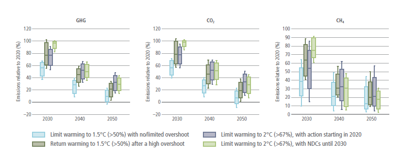
Figure 6.26 | Projected energy sector GHG emissions for the 1. 5°C scenarios (without and with overshoot), and likely below 2°C scenarios (without and with delayed policy action) during 2020–2050 (Source: AR6 Scenarios Database). Boxes indicate 25th and 75th percentiles, while whiskers indicate 5th and 95th percentiles. GHG emissions are inclusive of energy sector CO2, CH4, N2O emissions and 80% of global HFC emissions. Number of model-scenario combinations in AR6 Scenarios Database: limit warming to 1.5°C (>50%) with no or limited overshoot: 77; return warming to 1.5°C (>50%) after a high overshoot: 110; limit warming to 2(C (>67%) with action starting in 2020: 164; limit warming to 2°C (>67%) with NDCs until 2030: 97.
.png)
Figure 6.27 | Net regional (R6) CO2 emissions from energy across scenarios that limit/return warming to 1. 5°C (>50%) with no or limited/after a high overshoot, and scenarios that limit warming to 2°C (>67%) with action starting in 2020 or with NDCs until 2030, during 2020–2050 (Source: AR6 Scenarios Database). Boxes indicate 25th and 75th percentiles, while whiskers indicate 5th and 95th percentiles. Most mitigation scenarios are based on a cost-minimising framework that does not consider historical responsibility or other equity approaches.
Warming cannot be limited to well below 2°C without rapid and deep reductions in energy system GHG emissions ( high confidence). Energy sector CO2 emissions fall by 87–97% (interquartile range) by 2050 in scenarios limiting warming to 1.5°C (>50%) with no or limited overshoot and 60–79% in scenarios limiting warming to 2°C (>67%) with action starting in 2020 (Figure 6.26). Energy sector GHG emissions fall by 85–95% (interquartile range) in scenarios limiting warming to 1.5°C (>50%) with no or limited overshoot, and 62–78% in scenarios limiting warming to 2°C (>67%) with action starting in 2020 (Figure 6.26). In 2030, in scenarios limiting warming to 1.5°C (>50%) with no or limited overshoot, net CO2 and GHG emissions fall by 35–51% and 38–52% respectively. Key characteristics of emissions pathways – the year of peak emissions, the year when net emissions reach zero, and the pace of emissions reductions – vary widely across countries and regions. These differences arise from differences in economic development, demographics, resource endowments, land use, and potential carbon sinks (Schaeffer, et al. 2020; Schreyer, et al. 2020; van Soest, Heleen et al. 2021) (Figure 6.27, Figure 6.28, Box 6.11). If countries do not move quickly to reduce emissions – if reductions are delayed – a more rapid energy transition will subsequently be required to limit warming to 2°C or lower (Rogelj et al. 2015a, 2018a; IPCC 2018).
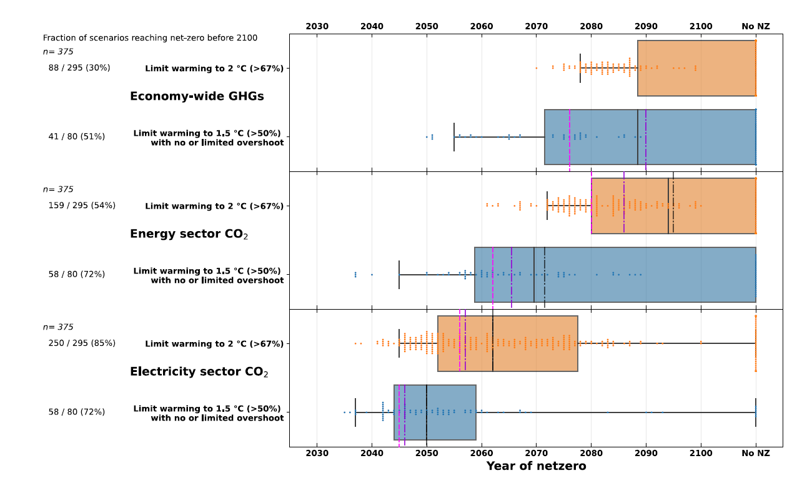
Figure 6.28 | The timing of net-zero emissions for full economy greenhouse gases (GHGs), energy sector CO2, and electricity sector CO2. Boxes indicate 25th and 75th percentiles, centre black line is the median, while whiskers indicate 1.5x the inter-quartile range. The vertical dashed lines represent the median point at which emissions in the scenarios have dropped by 95% (pink) and 97.5% (purple), respectively. Dots represent individual scenarios. The fraction indicates the number of scenarios reaching net-zero by 2100 out of the total sample. Source: AR6 Scenario Database.
The timing of net-zero energy system emissions varies substantially across scenarios. In scenarios limiting warming to 1.5°C (>50%) with no or limited overshoot (2°C (>67%)), the energy system reaches net-zero CO2 emissions (interquartile range) from 2060 onwards (2080–). (Figure 6.28). However, net emissions reach near-zero more quickly. For example, in scenarios limiting warming to 1.5°C (>50%) with no or limited overshoot (2°C (>67%)) net energy system CO2 emissions drop by 95% between 2056 and 2075 (2073 and 2093). Net full economy GHG emissions reach zero more slowly than net CO2 emissions. In some scenarios, net energy system CO2 and total GHG emissions do not reach zero this century, offset by CDR in other sectors.
The timing of emissions reductions will vary across the different parts of the energy sector (Figure 6.28). To decarbonise most cost-effectively, global net CO2 emissions from electricity generation will likely reach zero before the rest of the energy sector (medium confidence). In scenarios limiting warming to 1.5°C (>50%) with no or limited overshoot (2°C (>67%)), net electricity sector CO2 emissions (interquartile range) reach zero globally between 2044 and 2055 (2052 and 2078) (Figure 6.28). It is likely to be less costly to reduce net CO2 emissions close to or below zero in the electricity sector than in other sectors, because there are relatively more low-emissions options in electricity. Sectors such as long-distance transport, air transport, and process heat are anticipated to face greater challenges to decarbonisation than the electricity sector (Clark and Herzog 2014; Rogelj et al. 2015b, 2018b; IPCC 2018; Luderer et al. 2018).
In addition, there are potential options to remove CO2 from the atmosphere in the electricity sector, notably BECCS, which would allow electricity sector emissions to drop below zero. Without CDR options, electricity sector emissions may not fall all the way to zero. If CDR is accomplished in other sectors and not in electricity, some fossil fuel plants may still lead to positive net electricity sector CO2 emissions, even in net-zero economies (Bistline and Blanford 2021b; Williams et al. 2021a).
We lack sufficient understanding to pin down precise dates at which energy system CO2 emissions in individual countries, regions, or sectors will reach net zero. Net-zero timing is based on many factors that are not known today or are bound up in development of key technologies, such as energy storage, bioenergy, or hydrogen. Some countries have low-carbon resource bases that could support deep emissions reductions, while others do not. Timing is also affected by the availability of CDR options, whether these options are in the energy sector or elsewhere, and the discount rate used to assess strategies (Bednar et al. 2019; Emmerling et al. 2019). Moreover, while many scenarios are designed to minimise global mitigation costs, many other frameworks exist for allocating mitigation effort across countries (van den Berg et al. 2019) (Chapter 4).
6.7.1.2Low-carbon Energy Transition Strategies
There are multiple technological routes to reduce energy system emissions (Section 6.6). Here we discuss three of these: (i) decarbonising primary energy and electricity generation; (ii) switching to electricity, bioenergy, hydrogen, and other fuels produced from low-carbon sources; and (iii) limiting energy use through improvement of efficiency and conservation. CDR is discussed in Section 6.7.1.3 Fossil fuel transitions are discussed in Section 6.7.4.
Decarbonising primary energy and electricity generation. Limiting warming to well below 2°C requires a rapid and dramatic increase in energy produced from low- or zero-carbon sources ( high confidence). Low- and zero-carbon technologies produce 74–82% (interquartile range) of primary energy in 2050 in scenarios limiting warming to 1.5°C (>50%) with no or limited overshoot and 55–68% in scenarios limiting warming to 2°C (>67%) (Figure 6.29). The share of low-carbon technologies in global primary energy supply today is below 20% (Chapter 3, Section 6.3, and Figure 6.29). The percentage of low- and zero-carbon energy will depend in part on the evolution of energy demand – the more that energy demand grows, the more energy from low- and zero-carbon sources will be needed, and the higher the percentage of total primary energy these sources will represent.
Low- and zero-carbon sources produce 97–99% of global electricity in 2050 in scenarios limiting warming to 1.5°C (>50%) with no or limited overshoot and 93–97% in scenarios limiting warming to 2°C (>67%) (Figure 6.29) (medium confidence). Decarbonising electricity generation, in tandem with increasing use of electricity (see below), is an essential near-term strategy for limiting warming. The increase in low- and zero-carbon electricity will occur while electricity demand grows substantially. Studies have projected that global electricity demand will roughly double by 2050 and quadruple to quintuple by 2100 irrespective of efforts to reduce emissions (Bauer et al. 2017; Luderer et al. 2017; IEA 2019a).
.png)
Figure 6.29 | Reductions in CO2 emissions relative to 2020 levels for scenarios that limit/return warming to 1. 5°C (>50%) with no or limited/after a high, overshoot, and scenarios that limit warming to 2°C (>67%), with action starting in 2020 or NDCs until 2030, during 2030–2050. Boxes indicate 25th and 75th percentiles while whiskers indicate 5th and 95th percentiles. Source: AR6 Scenarios Database .
Renewable energy, especially generation from solar and wind, is likely to have an important role in many low-carbon electricity systems. The contributions of wind and solar electricity will depend on their levelised costs relative to other options, integration costs, system value, and the ability to integrate variable resources into the grid (Section 6.6). Electric sector technology mixes will vary by region but will typically include additional resources such as hydropower, nuclear power, fossil generation with CCS, energy storage resources, and geothermal energy, among others. Contributions of different options vary widely across scenarios based on different assumptions about these factors (Figure 6.30).
.png)
Figure 6.30 | Shares of low-carbon energy (all sources except unabated fossil fuels) and bioenergy (including both traditional and commercial biomass) in total primary energy, and solar+wind, CCS and nuclear in electricity for scenarios that limit/return warming to1. 5°C (>50%) with no or limited/after a high, overshoot, and scenarios that limit warming to 2°C (>67%), with action starting in 2020 or NDCs until 2030, during 2030–2050 (Source: AR6 Scenarios Database). Boxes indicate 25th and 75th percentiles while whiskers indicate 5th and 95th percentiles.
Nonetheless, it is likely that wind and solar will dominate low-carbon generation and capacity growth over the next couple of decades due to supporting policies in many countries, and due to their significant roles in early electric sector decarbonisation, alongside reductions in coal generation (Bistline and Blanford 2021b; Pan et al. 2021). Clean firm technologies play important roles in providing flexibility and on-demand generation for longer durations, though deployment of these technologies is typically associated with deeper decarbonisation levels (e.g., beyond 70–80% reductions), which are likely to be more important after 2030 in many regions, and with more limited CDR deployment (Baik et al. 2021; Bistline and Blanford 2021a; Williams et al. 2021a).
Box 6.11 | Illustrative Low-carbon Energy System Transitions
There are multiple possible strategies to transform the energy system to reach net-zero CO2 emissions and to limit warming to 2°C (>67%) or lower. All pathways rely on the strategies for net-zero CO2 energy systems highlighted in Section 6.6.2, but they vary in the emphasis that they put on different aspects of these strategies and the pace at which they approach net-zero emissions. The pathway that any country or region might follow will depend on a wide variety of factors (Section 6.6.4), including, for example, resource endowments, trade and integration with other countries and regions, carbon sequestration potential, public acceptability of various technologies, climate, the nature of domestic industries, the degree of urbanisation, and the relationship with other societal priorities such as energy access, energy security, air pollution, and economic competitiveness. The Illustrative Mitigation Pathways presented in this box demonstrate four distinct strategies for energy system transformations and how each plays out for a different region, aligned with global strategies that would limit warming to 2.0°C (>67%) or to 1.5°C (>50%). Each pathway represents a very different vision of a net-zero energy system. Yet, all these pathways share the common characteristic of a dramatic system-wide transformation over the coming decades.
.png)
Box 6.11, Figure 1 | Illustrative Mitigation Pathway 2. 0-Neg: Latin America & Caribbean (LAM) in a scenario that limits warming to 2°C (>67%) (LAM net-zero economy 2040–2045, net-zero energy system 2045–2050). Supply-side focus with growing dependency on carbon dioxide removal and agriculture, forestry and other land-use (AFOLU), thus achieves net-zero CO2 relatively early.
Box 6.11, Figure 2 | Illustrative Mitigation Pathway 1. 5-Renewables: Africa (AF) in a scenario that limts warming to 1.5°C (>50%) (AF net-zero economy, 2055–2060, AF net-zero energy system 2055–2060). Rapid expansion of non-biomass renewables, high electrification, and a fossil fuel phase-out.
.png)
Box 6.11, Figure 3 | Illustrative Mitigation Pathway 1. 5-Low Demand: Developed Countries (DEV) in a scenario that limits warming to 1.5°C (>50%) (DEV net-zero economy, 2055–2060, net-zero energy system 2075–2080). Major reduction of energy demand, high electrification, and gradual fossil fuel phase-out.
.png)
Box 6.11, Figure 4 | Illustrative Mitigation Pathway 1. 5-Shifting Pathways: Asia and Pacific (APC) in a scenario that limits warming to 1.5°C (>50%) (APC net-zero economy, 2075–2080, net-zero energy system 2090–2095). Renewables, high electrification, fossil fuel phase-out and low agriculture, forestry and other land-use (AFOLU) emissions. Reaches net-zero CO2 relatively late.
Box 6.11, Table 1 | Summary of selected Illustrative Mitigation Pathways energy system characteristics in 2050 for the chosen regions.
Energy sector CO2Reduction 2020–2050 | Energy intensity | Variable renewable electricity generation | Low-carbon electricity capacity additions | CO2 removal BECCS, AFOLU, Total | GDP per capita | Year net-zero CO2 emissions | ||||||||
% | MJ/PPP USD2010 | EJ yr –1 (%) | GW yr –1 | GtCO2 yr –1 | PPP USD2010 per person | Full economy | Energy sector | Electricity | ||||||
Region | 2050 | 2020 | 2050 | 2020 | 2050 | 2020 | 2050 | 2050 | 2020 | 2050 | ||||
IMP-Neg | LAM | 124 | 3 | 2.1 | 0.5 (9) | 7.7 (53) | 15.4 | 21.5 | 1.1, 0.2, 1.9 | 12,952 | 24,860 | 2040–2045 | 2045–2050 | 2025– 2030 |
IMP-Ren | AF | 85 | 7.6 | 1.9 | 0.1 (5) | 18 (84) | 5 | 217 | 0.1, 0, 0.1 | 2965 | 8521 | 2055–2060 | 2055–2060 | 2025– 2030 |
IMP-LD | DEV | 92 | 3.1 | 0.9 | 4.6 (13) | 37 (72) | 52 | 188 | 0, 0.6, 0.6 | 42,945 | 61,291 | 2055–2060 | 2075–2080 | 2045– 2050 |
IMP-SP | APC | 76 | 3.8 | 1.1 | 3 (7) | 91 (79) | 123 | 603 | 0.1, 0.4, 0.4 | 10,514 | 37,180 | 2075–2080 | 2085–2090 | 2085– 2090 |
Switching to low-carbon energy carriers. Switching to energy carriers produced from low-carbon sources will be an important strategy for energy sector decarbonisation. Accelerated electrification of end uses such as light duty transport, space heating, and cooking is a critical near-term mitigation strategy (Sugiyama 2012; Zou et al. 2015; Rockström et al. 2017; IEA 2019f; Waisman et al. 2019; B. Tang et al. 2021 ). Electricity supplies 48–58% (interquartile range) of the global final energy demand by 2050 in scenarios limiting warming to 1.5°C (>50%) with no or limited overshoot and 36–47% in scenarios limiting warming to 2°C (>67%) (Figure 6.29). Globally, the current level of electrification is about 20%.
Indirect electrification encompasses the use of electricity to produce hydrogen and synthetic fuels (efuels or power fuels). The extent of indirect electrification of final energy will depend on resource endowments and other regionally specific circumstances. Although indirect electrification is less efficient compared to direct electrification, it allows low-carbon fuels to be imported from regions with abundant low-carbon electricity generation resources (Fasihi and Bogdanov 2016; Lehtveer et al. 2019; Fasihi and Breyer 2020) (Box 6.10 on regional integration).
While electrifying end uses is a key decarbonisation strategy, some end uses such as long-distance transport (freight, aviation, and shipping) and energy-intensive industries will be harder to electrify. For these sectors, alternative fuels or energy carriers such as biofuels, hydrogen, ammonia or synthetic methane, may be needed (Section 6.6 and Box 6.9). Most scenarios find that hydrogen consumption will grow gradually, becoming more valuable when the energy system has become predominantly low-carbon (Figure 6.31).
.png)
Figure 6.31 | Shares of electricity and hydrogen in final energy in scenarios that limit/return warming to 1. 5°C (>50%) with no or limited/after a high, overshoot, and scenarios that limit warming to 2°C (>67%), with action starting in 2020 or NDCs until 2030, during 2030–2050 (Source: AR6 Scenarios Database). Boxes indicate 25th and 75th percentiles while whiskers indicate 5th and 95th percentiles.
Reducing energy demand. Energy service demand is expected to continue to increase with growth of the economy, but there is great uncertainty about how much it will increase (Bauer et al. 2017; Riahi et al. 2017; Yu et al. 2018). Given the need to produce low-carbon energy, the scale of energy demand is a critical determinant of the mitigation challenge (Riahi et al. 2012). Higher energy demand calls for more low-carbon energy and increases the challenge; lower energy demand reduces the need for low-carbon sources and therefore can ease a low-carbon transition. Recent studies have shown that tempering the growth of energy demand, while ensuring services and needs are still satisfied, can materially affect the need for technological CDR (Section 6.7.1.3) (Grubler et al. 2018; van Vuuren et al. 2018). Two of the Illustrative Mitigation Pathways (IMP-SP, IMP-LD) feature substantially lower final energy demand across buildings, transport, and industry than most other pathways in the literature. In some cases, energy demand levels are lower in 2050 (and later) than in 2019. These lower demands result in less reliance on bioenergy and a more limited role for CDR (Figure 3.18).
6.7.1.3Technology Options to Offset Residual Emissions
CDR technologies can offset emissions from sectors that are difficult to decarbonise (Section 6.6), altering the timeline and character of energy sector transitions. A number of studies suggest that CDR is no longer a choice, but rather a necessity to limit warming to 1.5°C (Rogelj et al. 2015a; Detz et al. 2018; Luderer et al. 2018; Strefler et al. 2018; van Vuuren et al. 2018). The reliance on CDR varies across scenarios and is tightly linked to future energy demand and the rate of emission reductions in the next two decades: deeper near-term emissions reductions will reduce the need to rely on CDR to constrain cumulative CO2 emissions. Some studies have argued that only with a transition to lower energy demands will it be possible to largely eliminate the need for engineered CDR options (Grubler et al. 2018; van Vuuren et al. 2018). Overall, the amount of CDR will depend on CO2 capture costs, lifestyle changes, reduction in non-CO2GHGs, and utilisation of zero-emission end-use fuels (Muratori et al. 2017; van Vuuren et al. 2018).
There is substantial uncertainty about the amount of CDR that might ultimately be deployed. In most scenarios that limit warming to 1.5°C, CDR deployment is fairly limited through 2030 at less than 1 GtCO2 yr –1. The key projected increase in CDR deployment (BECCS and DAC only) occurs between 2030 and 2050, with annual CDR in 2050 projected at 2.5–7.5 GtCO2 yr –1 in 2050 (interquartile range) in scenarios limiting warming to 1.5°C (>50%) with limited or no overshoot, and 0.7–1.4 GtCO2 yr –1 in 2050 in scenarios limiting warming to 2°C (>67%) with action starting in 2020. This characteristic of scenarios largely reflects substantial capacity addition of BECCS power plants. BECCS is also deployed in multiple ways across sectors. For instance, the contribution (interquartile range) of BECCS to electricity is 1–5% in 2050 in scenarios limiting warming to 1.5°C (>50%) with no or limited overshoot, and 0–5% in scenarios that limit warming to 2°C (>67%) with action starting in 2020. The contribution (interquartile range) of BECCS to liquid fuels is 9–21% in 2050 in scenarios limiting warming to 1.5°C (>50%) with no or limited overshoot and 2–11% in scenarios that limit warming to 2°C (>67%) with action starting in 2020. Large-scale deployment of CDR allows flexibility in timing of emissions reduction in hard-to-decarbonise sectors.
CDR will influence the potential fossil-related stranded assets (Box 6.13). Availability of low-cost CDR can help reduce premature retirement for some fossil fuel infrastructure. CDR can allow countries to reach net-zero emissions without phasing out all fossil fuels. Specific infrastructure could also be extended if it is used to burn biomass or other non-emitting sources. For example, existing coal-fired power plants, particularly those with CCS, could be co-fired with biomass (Woolf et al. 2016; Lu et al. 2019; Pradhan et al. 2021). In many scenarios, energy sector CDR is deployed to such an extent that energy sector CO2 emissions become negative in the second half of the century (Chapter 3).
Box 6.12 | Taking Stock of the Energy System Transition
The Global Stocktake is a regularly occurring process under the UN Framework Convention on Climate Change (UNFCCC) in which efforts will be made to understand progress on, among other things, global mitigation. Collective progress of countries towards the Paris Agreement goal will be assessed and its outcome will inform Parties in updating and enhancing their Nationally Determined Contributions (NDCs). This box explores potential indicators to understand energy system mitigation progress.
CO2 emissions from fuel combustion are the bottom line on energy system progress. Beyond CO2 emissions, primary energy demand by energy sources, final energy consumption by sectors, and total electricity demand provide a first order assessment of energy system transitions. The year at which CO2 emissions peak is also important. The Kaya Identity can be used to decompose energy system CO2 emissions into carbon intensity of the energy system (CO2 emissions from fossil-fuel combustion and industry divided by energy use), energy intensity (energy use divided by economic output), and economic output. The impacts of energy and climate policy are reflected in the changes of carbon intensity and energy intensity. Carbon intensity captures decarbonisation of energy supply systems, for example, through fuel switching from fossil fuels to non-fossil fuels, upscaling of low-carbon energy sources, and deploying carbon dioxide removal technologies. The carbon intensity of electricity is specifically important, given the role of the electricity sector in near-term mitigation. Economy-wide energy intensity represents efforts of demand-side energy, such as energy conservation, increase of energy performance of technologies, structural change of economy, and development of efficient urban infrastructure.
Beyond these aggregate indicators, a second order assessment would capture more details, such as the electrification rate, share of renewables, nuclear, CCS or other low-carbon technologies in electricity generation, land area used for energy production, and the number of EVs or PHEVs. Consumption of coal, oil and gas captures the underlying factors of CO2 emissions. The emphasis of these indicators could differ across countries in the context of national specific circumstances. Technology- or project-based statistics are also useful to check the progress of the low-carbon transition, for example, the number of CCS facilities.
A critical challenge in the assessment of energy sector progress is how to measure societal, institutional, and political progress. These factors are difficult to quantify, yet they are fundamental determinants of the ability to reduce emissions. Public opinion, special interest politics, implications of mitigation for employment, energy subsidies, and energy policies are all critical indicators of progress. In addition, while much of the literature focuses on national-level action, mitigation is increasingly being led by cities, states, provinces, businesses, and other sub-national or non-national actors. Understanding the progress of these actors will be critical to assess energy system mitigation progress. New research is needed to better assess these ‘societal’ indicators and the role of non-national actors.
6.7.2Investments in Technology and Infrastructure
Total global energy investment was roughly USD1940 billion yr –1 in 2019 (IEA 2021f). This total can be broken down into the following main categories: fossil-related energy supply, including oil, gas, and coal extraction and fossil electricity generation (USD990 billion yr –1); renewable electricity, primarily solar and wind (USD340 billion yr –1); nuclear energy (USD40 billion yr –1); electricity networks (USD270 billion yr –1); and end-use energy efficiency (USD270 billion yr –1).
Energy investment needs are projected to rise, according to investment-focused scenario studies found in the literature (McCollum et al. 2018a; Zhou et al. 2019; Bertram et al. 2021). While these increases are projected to occur in emissions-intensive pathways as well as low-carbon pathways, they are projected to be largest in low-carbon pathways. Average annual global energy investments over the 2016–2050 period range (across six models) from USD2100 to 4100 billion yr –1 in pathways limiting warming to 2°C (>67%) and from USD2400 to 4700 billion yr –1 in pathways limiting warming to 1.5°C (>50%) with no or limited overshoot (McCollum et al. 2018). Whatever the scenario, a significant and growing share of investments between now and 2050 will be channelled toward infrastructure build-out in emerging economies, particularly in Asia (Zhou et al. 2019).
More widespread electrification of buildings, transport, and industry means particularly substantial investment in the electricity system. According to C1–C3 pathways in the IPCC’s Sixth Assessment Report (AR6 Scenarios Database), such investments could be at the following average annual levels (inter-quartile range, USD2015) over the 2023–2052 timeframe: USD1670 to 3070 billion yr –1 (C1), USD1600 to 2780 billion yr –1 (C2), and USD1330 to 2680 billion yr –1 (C3) (see also Section 3.6.1.3).
Beyond these sector-wide numbers, a key feature of stringent mitigation pathways is a pronounced reallocation of investment flows across sub-sectors, namely from unabated fossil fuels (extraction, conversion, and electricity generation) and toward renewables, nuclear power, CCS, electricity networks and storage, and end-use energy efficiency (McCollum et al. 2018a; Bertram et al. 2021; IEA 2021f) (Figure 6.32). Investments in solar, wind, and electricity transmission, distribution, and storage increase the most in mitigation scenarios. Up to 2050, the bulk of these investments are made in OECD and Asian countries (Figure 6.33). While fossil fuel extraction investments exhibit a marked downscaling across all regions, compared to reference scenarios, the declines are especially strong in the Middle East, Reforming Economies of Eastern Europe and the Former Soviet Union (REF), and OECD.
.png)
Figure 6.32 | Global average annual investments from 2023 to 2052 (undiscounted, in USD billion yr–1) for electricity supply sub-sectors and for extraction of fossil fuels in scenarios that limit warming to 2°C (>67%) or lower (C1-C3) (Source: AR6 Scenarios Database and Chapter 3). Historical investments are also shown for comparison (Source: IEA 2021; approximations are made for hydro and geothermal based on available data; solar and wind values are for 2020). T&D: transmission and distribution of electricity. Bars show median values across models-scenarios, and whiskers the interquartile ranges. See Chapters 3 and 15 for additional information on investments and finance.
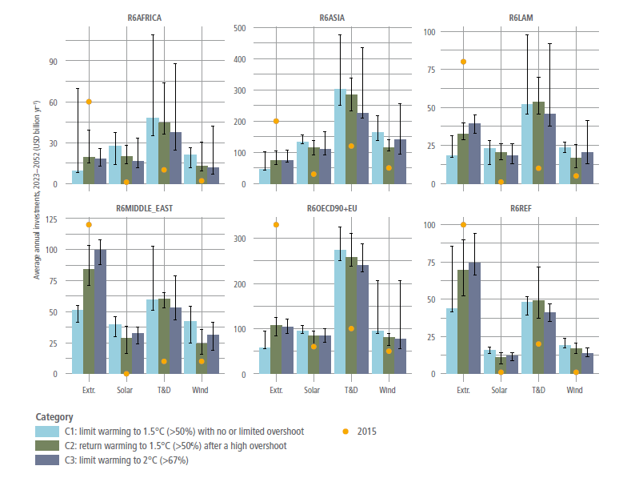
Figure 6.33 | Regional average annual investments from 2023 to 2052 (undiscounted, in USD billion yr–1) for four of the largest sub-sectors of the energy system in scenarios that limit warming to 2°C (>67%) or lower (C1–C3) (Source: AR6 Scenarios Database and Chapter 3). Historical investments are also shown for comparison (Source: IEA, 2016). T&D: transmission and distribution of electricity. Extr.: extraction of fossil fuels. Bars show median values across models-scenarios, and whiskers the inter-quartile ranges. See Chapters 3 and 15 for additional information on investments and finance.
Investments into end-use energy efficiency are projected to also be substantial in mitigation pathways, potentially upwards of several hundred USD billion yr –1 on average to 2050, compared to USD270 billion yr –1 in 2019 (McCollum et al. 2018a; IEA 2021f). However, the literature is inconsistent in how demand-side investments are calculated, as boundary conditions are less clear than for energy supply investments. Taking a broader definition can result in estimates that are an order-of-magnitude higher, meaning as large or larger than supply-side investments (Grubler et al. 2012; IEA 2021f).
Increasing low-carbon investment primarily requires shifting existing capital investment through regulation and incentives as well as removing existing investment barriers (McCollum et al. 2018; Hafner et al. 2020; Ameli, N. et al. 2021). While there is a considerable amount of capital in the world, it is not always available to those wishing to invest in certain projects. Total annual global investment in fixed capital was USD22.4 trillion in 2021, over an order-of-magnitude larger than energy sector investment (World Bank 2021).
Future investment patterns will vary by region, as they do now, due to differences in risk profiles, resource endowments and economic and governance structures (Fizaine et al. 2016; Zhou et al. 2019; Ameli, N. et al. 2021). In rapidly growing countries, investments to support a low-carbon energy system transition will be integrated with those needed to meet rapidly increasing energy demands, irrespective of whether efforts are made to reduce emissions. In less rapidly growing countries (Sun et al. 2019), investments will focus on transitioning current energy systems to low-carbon configurations. Most current energy investments are concentrated in high- and upper-middle-income countries (IEA 2021f), but this will change as investment needs continue to grow in today’s lower-middle- and low-income countries (McCollum et al. 2018a; Zhou et al. 2019; Bertram et al. 2021; IEA 2021f).
6.7.3Dependence
Path dependence refers to resistance to change due to favourable socio-economic conditions with existing systems; decisions made in the past unduly shape future trajectories. Carbon lock-in is a specific type of path dependence (Seto et al. 2016). Given that energy system mitigation will require a major course change from recent history, lock-in is an important issue for emission reductions in the energy sector. While lock-in is typically expressed in terms of physical infrastructure that would need to be retired early to reach mitigation goals, it involves a much broader set of issues that go beyond physical systems and into societal and institutional systems (Table 6.11).
Table 6.11 | Lock-in types and typical mechanisms. Source: Kotilainen et al. 2020), Reproduced under Creative Commons 4.0 International Licence.
Type | Primary lock-in mechanisms | References |
Technological (and infrastructural) | –Economies of scale –Economies of scope –Learning effects –Network externalities –Technological interrelatedness | –Arthur (1994); Hughes (1994); Klitkou et al (2015) –David (1985); Panzar and Willig (1981) –Arthur (1994) –David (1985); Katz and Shapiro (1986) –Arrow (1962); Arthur (1994); David (1985); Van den Bergh and Oosterhuis (2008) |
Institutional | –Collective action –Complexity and opacity of politics –Differentiation of power and institutions –High density of institutions –Institutional learning effects –Vested interests | – Seto et al (2016) –Foxon (2002); Pierson (2000) –Foxon (2002) –Pierson (2000) –Foxon (2002); Boschma (2005) –Boschma (2005) |
Behavioural | –Habituation –Cognitive switching costs –Increasing informational returns | –David (1985); Barnes et al. (2004); Zauberman (2003); Murray and Haubl (2007) –Zauberman (2003); Murray and Haubl (2007); Van den Bergh and Oosterhuis (2008) |
6.7.3.1 Societal and Institutional Inertia
A combination of factors – user, business, cultural, regulatory, and transnational – will hinder low-carbon energy transitions. Strong path dependencies, even in early formative stages, can have lasting impacts on energy systems, producing inertia that cuts across technological, economic, institutional and political dimensions ( high confidence) (Rickards et al. 2014; Vadén et al. 2019) (Chapter 5).
Energy systems exemplify the ways in which massive volumes of labour, capital, and effort become sunk into particular institutional configurations (Bridge et al. 2013, 2018). Several embedded factors affect large-scale transformation of these systems and make technological diffusion a complex process:
•User environments affect purchase activities and can involve the integration of new technologies into user practices and the development of new preferences, routines, habits and evenvalues (Kanger et al. 2019).
•Business environments can shape the development of industries, business models, supply and distribution chains, instrument constituencies and repair facilities (Béland and Howlett 2016).
•Culture can encompass the articulation of positive discourses, narratives, and visions that enhance cultural legitimacy and societal acceptance of new technologies. Regulatory embedding can capture the variety of policies that shape production, markets and use of new technologies.
•Transnational community can reflect a shared understanding in a community of global experts related to new technologies that transcends the borders of a single place, often a country.
While low-carbon innovation involves systemic change (Geels et al. 2018), these are typically less popular than energy supply innovations among policymakers and the wider public. Managing low-carbon transitions is therefore not only a techno-managerial challenge (based on targets, policies, and expert knowledge), but also a broader political project that involves the building of support coalitions that include businesses and civil society (moderate evidence, high agreement ).
Low-carbon transitions involve cultural changes extending beyond purely technical developments to include changes in consumer practices, business models, and organisational arrangements. The development and adoption of low-carbon innovations will therefore require sustained and effective policies to create appropriate incentives and support. The implementation of such policies entails political struggles because actors have different understandings and interests, giving rise to disagreements and conflicts.
Such innovation also involves pervasive uncertainty around technical potential, cost, consumer demand, and social acceptance. Such uncertainty carries governance challenges. Policy approaches facing deep uncertainty must protect against and/or prepare for unforeseeable developments, whether it is through resistance (planning for the worst possible case or future situation), resilience (making sure you can recover quickly), or adaptation (changes to policy under changing conditions). Such uncertainty can be hedged in part by learning by firms, consumers, and policymakers. Social interactions and network building (e.g., supply and distribution chains, intermediary actors) and the articulation of positive visions, such as in long-term, low-emission development strategies, all play a crucial role. This uncertainty extends to the impacts of low-carbon innovations on energy demand and other variables, where unanticipated and unintended outcomes are the norm. For instance, rapid investments in public transport networks could restrict car ownership from becoming common in developing countries (Du and Lin 2017).
6.7.3.2Physical Energy System Lock-In
Current investments in fossil infrastructure have committed 500–700 GtCO2 of emissions, creating significant risks for limiting warming to 1.5°C (Callaghan 2020) ( high confidence). These current investments combined with emissions from proposed fossil infrastructure exceed the emissions required to limit warming to 1.5°C (medium confidence). Existing coal- and gas-fired electricity generation accounts for 200–300 GtCO2 of committed emissions. Emissions from coal generation are larger than for gas plants (Smith et al. 2019; Tong et al. 2019). The lifetime of coal-fired power plants is 25–50 years, creating long-lasting risks to climate goals (Erickson and Tempest 2015). Gas-fired power plants are younger on average than coal-fired power plants. Industry sector lock-in amounts for more than 100 GtCO2, while buildings and transport sector together contribute another 50–100 GtCO2 (Erickson and Tempest 2015).
Lock-in is also relevant to fossil resources. Both coal and gas exploration continue, and new permits are being issued, which may cause economic (Erickson et al. 2018) as well as non-economic issues (Boettcher et al. 2019).
The nature of lock-in varies across the energy system. For example, lock-in in urban and transport sectors is different from the electricity sector. Broadly, urban environments involve infrastructural, institutional, and behavioural lock-in (Ürge-Vorsatz et al. 2018). Addressing lock-in in these sectors requires action by multiple stakeholders and is unlikely with just technological evolution (Table 6.11).
Committed carbon emissions are unevenly distributed. The disproportionate high share of committed emissions in emerging economies is the result of rapid growth in recent years, which has led to a comparably young fossil infrastructure with substantial remaining life (Shearer et al. 2017). Mature industrialised countries tend to have older infrastructures, part of which will be up for retirement in the near future (Tong et al. 2019). Coal-fired power plants currently planned or under construction are associated with 150–300 GtCO2, of which about 75% and about 10% are located in Asia and the OECD respectively (Edenhofer et al. 2018; Pfeiffer et al. 2018). If implemented, these new fleets will further shorten all coal plants’ lifetimes by another 10 years for meeting climate goals (Cui et al. 2019).
.png)
Figure 6.34 | Annual emissions from existing, proposed, and future energy system infrastructure. Source: with permission from Tong et al. 2019.
Despite the imperative to reduce use of fossil fuels and the multiple health and other benefits from closing coal-based infrastructure (Portugal-Pereira et al. 2018; Liu et al. 2019a; Karlsson et al. 2020; Rauner et al. 2020; Cui et al. 2021), coal power plants have continued to be commissioned globally (Jewell et al. 2019; Jakob et al. 2020), most notably in Asian countries. Gas power plants also continue to be built. In many regions, new fossil electricity generation exceeds needed capacity (Shearer et al. 2017).
Existing policies and the NDCs are insufficient to prevent an increase in fossil infrastructure and associated carbon lock-in ( high confidence) (Bertram et al. 2015; Johnson et al. 2015). Current investment decisions are critical because there is limited room within the carbon budget required to limit warming to well below 2°C (Kalkuhl et al. 2019; Rosenbloom 2019). Delays in mitigation will increase carbon lock-in and could result in large-scale stranded assets if stringency is subsequently increased to limit warming (Box 6.11). Near-term implementation of stringent GHG mitigation policies are likely to be most effective in reducing carbon lock-in (Haelg et al. 2018). Near-term mitigation policies will also need to consider different energy transition strategies as a result of different resources and carbon budgets between countries (Lucas 2016; Bos and Gupta 2018).
Near-term policy choices are particularly consequential for fast-growing economies. For example, Malik et al. (2020) found that 133 to 227 GW of coal capacity would be stranded after 2030 if India were to delay ambitious mitigation through 2030 and then pursue an ambitious, post-2030 climate strategy. Cui et al. (2021) identified 18% of old, small, inefficient coal plants for rapid near-term retirement in China to help achieve air quality, health, water, and other societal goals and a feasible coal phase-out under climate goals. Comparable magnitudes of stranded assets may also be created in Latin America when adding all announced, authorised, and procured power plants up to 2060 (González-Mahecha et al. 2019). Options to reduce carbon lock-in include reducing fossil fuels subsidies (Box 6.3), building CCS-ready facilities, or ensuring that facilities are appropriately designed for fuel switching (Budinis et al. 2018). Substantial lock-in may necessitate considerable deployment of CDR to compensate for high cumulative emissions.
Past and present energy sector investments have created technological, institutional, and behavioural path dependencies aligned towards coal, oil, and natural gas ( high confidence). In several emerging economies, large projects are planned that address poverty reduction and economic development. Coal infrastructure may be the default choice for these investments without policies to invest in low-carbon infrastructure instead (Joshua and Alola 2020; Steckel et al. 2020). Path dependencies frequently have sustainability implications beyond carbon emissions. (Box 6.2 and Section 6.7.7). There are several SDG co-benefits associated with decarbonisation of energy systems (Section 6.7.7) (Sörgel et al. 2021). For example, coal mining communities frequently experience significant health and economic burdens from resource extraction.
Box 6.13 | Stranded Assets
Limiting warming to 2°C (>67%) or lower will result in stranded assets ( high confidence). Stranded assets can be broadly defined as assets that ‘suffer from unanticipated or premature write-offs, downward revaluations or [conversion] to liabilities’. Stranded assets may create risks for financial market stability and macro-economic stability (Battiston et al. 2017; Mercure et al. 2018; Sen and von Schickfus 2020), and they will result in a rapid loss of wealth for the owners of affected assets (Vogt-Schilb and Hallegatte 2017; Ploeg and Rezai 2020).
There are two types of stranded assets: fossil-fuel resources that cannot be burned; and premature retirement of fossil infrastructure (e.g., power plants). About 30% of oil, 50% of gas, and 80% of coal reserves will remain unburnable if warming is limited to 2°C (Meinshausen et al. 2009; Leaton 2011; Leaton Ranger 2013; McGlade and Ekins 2015; Bauer et al. 2016; IRENA 2017b; Pye et al. 2020) ( high confidence). Significantly more reserves are expected to remain unburned if warming is limited to 1.5°C. Countries with large oil, gas, and coal reserves are most at risk (Caldecott et al. 2017; Ansari and Holz 2020).
About 200 GW of fossil fuel electricity generation per year will likely need to be retired prematurely after 2030 to limit warming to 2°C, even if countries achieve their Nationally Determined Contributions (NDCs) (medium confidence) (Iyer et al. 2015; Johnson et al. 2015; Fofrich et al. 2020). Limiting warming to 1.5°C will require significantly more rapid premature retirement of electricity generation capacity (Binsted et al. 2020). Coal- and gas-fired power plants will likely need to retire about 25 years earlier than in the past to limit warming to 2°C, and 30 years earlier to limit warming to 1.5°C (Cui et al. 2019; Fofrich et al. 2020). Coal-fired power plants are at significantly greater risk of stranding compared with gas-fired and oil-fired plants (Iyer et al. 2015; Johnson et al. 2015; Fofrich et al. 2020). The risks of stranded power plants are greatest in countries with newer fossil infrastructure.
If warming is limited to 2°C, the discounted economic impacts of stranded assets, including unburned fossil reserves, could be as high as USD1–4 trillion from 2015 through 2050 (USD10–20 trillion in undiscounted terms) (medium confidence) (IRENA, 2017c; Mercure et al. 2018). About 40% of these impacts correspond to unburned fossil reserves (IRENA 2017b). If warming is limited to 1.5°C, the economic impacts of stranded assets are expected to be significantly higher (Binsted et al. 2020).
Stronger near-term mitigation will reduce premature retirements of fossil infrastructure, because more rapid mitigation will decrease new builds of fossil infrastructure that might later be stranded (Johnson et al. 2015; Bertram et al. 2018) ( high confidence). For example, if warming is limited to 2°C, strengthening the NDC pledges beyond their 2015 levels could decrease stranded electricity sector assets by more than 50% (Iyer et al. 2015). By contrast, if countries fail to meet their NDCs and continue to build fossil infrastructure, mitigation will need to be accelerated beyond 2030, resulting up to double the amount of stranded electricity generation capacity (Iyer et al. 2015). This corresponds to a total undiscounted cost of about USD2 trillion from electricity infrastructure alone, from the period 2015 to 2050 (IRENA 2017). CCS (6.4) could potentially help reduce hundreds of gigawatts stranded power plant capacity along with other fossil-based capital (Clark and Herzog 2014; Iyer et al. 2017; Fan et al. 2018).
6.7.4Fossil Fuels in a Low-carbon Transition
Global fossil fuel use will need to decline substantially by 2050 to limit warming to 2°C (>67%), and it must decline substantially by 2030 to limit warming to 1.5°C (>50%) with no or limited overshoot ( high confidence). Failing to reduce global fossil fuel use below today’s levels by 2030 will make it more challenging to limit warming to below 2°C (>67%). ( high confidence). Fossil fuel use declines by 260–330 EJ (52–73% from 2020 levels, interquartile range) through 2050 in scenarios that limit warming to 1.5°C (>50%) with no or limited overshoot, and 124–231 EJ (24–51% reduction compared to 2020 levels) in scenarios that limit warming to 2°C (>67%) with action starting in 2020. This will require a significant reduction in coal, oil and gas investments. Fossil fuels account for about 80% of primary energy today. In scenarios limiting warming to 1.5°C (>50%) with limited or no overshoot, fossil energy provides 59–69% (interquartile range) of primary energy in 2030 and 25–40% primary energy in 2050 (AR6 Scenarios Database). In scenarios limiting warming to 2°C (>67%) with action starting in 2020, fossil energy provides 71–75% (interquartile range) primary energy in 2030 and 41–57% primary energy in 2050 (AR6 Scenarios Database). The timeline for reducing production and usage varies across coal, oil, and gas due to their differing carbon intensities and uses.
Global coal consumption without CCS needs to be largely eliminated by 2040–2050 to limit warming to 1.5°C (>50%), and 2050–2060 to limit warming to 2°C (>67%) ( high confidence). New investments in coal-fired electricity without CCS are inconsistent with limiting warming to 2°C (>67%) or lower ( high confidence) (Edenhofer et al. 2018; Pfeiffer et al. 2018; Spencer et al. 2018; Cui et al. 2019). Coal consumption declines 130 EJ yr –1 to 140 EJ yr –1 in 2050 (78–99% compared to 2020 levels, interquartile range) in scenarios limiting warming to 1.5°C (>50%) with no or limited overshoot and 118 EJ yr –1 to 139 EJ yr –1 (65% to 98% compared to 2020 levels) in scenarios limiting warming to 2°C (>67%) with action starting in 2020. Coal consumption without CCS falls by 67% to 82% (interquartile range) in 2030 in scenarios limiting warming to 1.5°C (>50%) with no or limited overshoot. Studies indicate that coal use may decline substantially in the USA and Europe over the coming decade, based on the increasing competitiveness of low-carbon sources and near-term policy actions (Grubert and Brandt 2019; Oei et al. 2020). In several developing economies, the relative youth of the coal-fired electricity fleet will make a complete phase-out before 2050 difficult (Garg and Shukla 2009; Jewell et al. 2016). There are considerable differences in projected coal phase-out timelines in major Asian economies. Some studies suggest that coal may continue to be a part of the Chinese energy mix composing around one-third of the total primary energy consumption by 2050, even if emissions are reduced by 50% by 2030 (He et al. 2020). Others indicate that a strategic transition would decrease the risk of stranded assets and enable a near-complete phase-out by 2050 (Wang et al. 2020a; Cui et al. 2021). This would entail prioritising earlier retirements of plants based on technical (efficiency), economic (profitability, local employment) and environmental considerations (e.g., water scarcity for cooling).
Natural gas may remain part of energy systems through mid-century, both for electricity generation and use in industry and buildings, and particularly in developed economies, even if warming is limited to 2°C (>67%) or lower (medium confidence). The decline in natural gas use from 2020 to 2050 is 38 EJ yr –1 to 78 EJ yr –1 (21–62% decline from 2020 levels, interquartile range) in scenarios limiting warming to 1.5°C (>50%) with no or limited overshoot and –22 EJ yr –1 to 46 EJ yr –1 (–14% to 36% decline from 2020 levels, interquartile range) in scenarios limiting warming to 2°C (>67%) with action starting in 2020. Scenarios indicate that gas use in electricity will likely peak around 2035 and 2050 if warming is limited to 1.5°C (>50%) with limited or no overshoot or to 2°C (>67%) with action starting in 2020, respectively. There is variability in the role gas would play in future scenarios based on national climate commitments and availability of cheap renewables (Malik et al. 2020; Vishwanathan and Garg 2020; Vrontisi et al. 2020). Note that these differences are not only present in the electricity sector but also in other end uses.
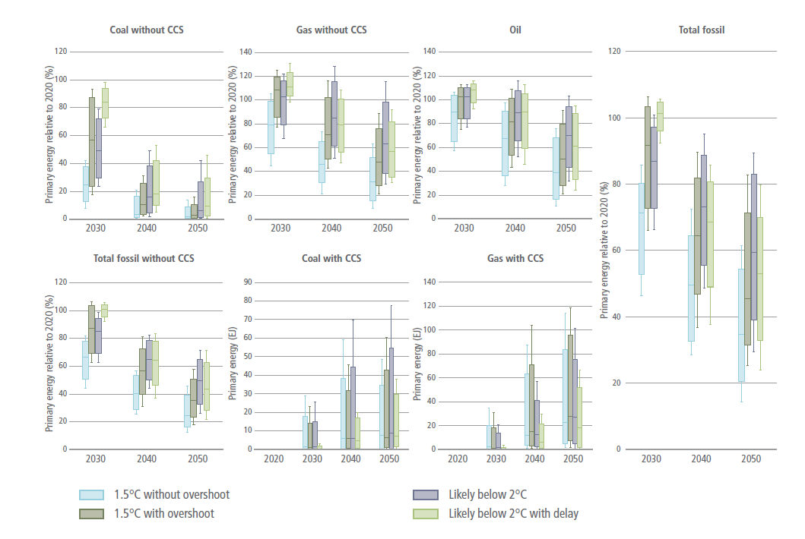
Figure 6.35 | Global fossil fuel pathways for scenarios that limit/return warming to 1. 5°C (>50%) with no or limited/after a high, overshoot, and scenarios that limit warming to 2°C (>67%), with action starting in 2020 or NDCs until 2030, during 2030–2050. Boxes indicate 25th and 75th percentiles while whiskers indicate 5th and 95th percentiles. Results for total consumption are expressed as a percentage relative to 2020 consumption. Results for fossil energy with CCS are expressed in total energy consumption. Oil use with CCS is not shown here as it remains below 5% of total use. Source: AR6 Scenarios Database.
While oil use is anticipated to decline substantially, due to changes in the transport sector, its use will likely continue through the mid-century, even if warming is limited to 2°C (>67%) or lower (medium confidence). Oil use declines by 73 EJ yr –1 to 145 EJ yr –1 (30–78% from 2020 levels, interquartile range) in scenarios that limit warming to 1.5°C (>50%) with no or limited overshoot and 26 EJ yr –1 to 86 EJ yr –1 (14–45% from 2020 levels) by 2050 in scenarios that limit warming to 2°C (>67%) with action starting in 2020. While oil use is anticipated to decline immediately in scenarios limiting warming to 1.5°C (>50%), it is likely to continue to be used through 2050. Oil use continues to be a significant source of transport fuels in most scenarios limiting warming to 2°C (Welsby et al. 2021). Oil use may drop to about half of current levels as a transport fuel by 2050 if warming is limited to 2°C, because of the availability of other options (biofuels, green hydrogen) and rapid deployment of EVs (Feijoo et al. 2020). In the absence of rapid transport electrification, the decline is slower with some studies projecting peak oil use around 2035 (Delgado et al. 2020; Pan et al. 2020).
There is a lack of consensus about how CCS might alter fossil fuel transitions for limiting warming to 2°C (>67%) or lower. CCS deployment will increase the shares of fossil fuels associated with limiting warming, and it can ease the economic transition to a low-carbon energy system (Muratori et al. 2016; Marcucci et al. 2019). While some studies find a significant role for fossil fuels with CCS by 2050 (Koelbl et al. 2014; Eom et al. 2015; Vishwanathan and Garg 2020), others find that retirement of unabated coal far outpaces the deployment of coal with CCS (Budinis et al. 2018; Xie et al. 2020; McJeon et al. 2021) Moreover, several studies also project that, with availability of CO2 capture technology, BECCS might become significantly more appealing than fossil CCS, even before 2050 (Muratori et al. 2017; Luderer et al. 2018 b).
6.7.5Policy and Governance
Policy and governance frameworks are essential for shaping near- and medium-term low-emissions energy system transitions ( high confidence). While policy interventions are necessary to achieve low-carbon energy system transitions, appropriate governance frameworks are crucial to ensure policy implementation ( high confidence). The policy environment in energy transition pathways relate to climate policy goals, the characteristics of the policy regimes and measures to reach the policy goals including implementation limits and obstacles, and the timing of the climate instrument (Kriegler et al. 2014b).
The literature discusses a broad set of policy approaches. Environmental economics focuses mainly on market-based approaches as the least-cost policy to achieve emission reductions (Kube et al. 2018). Many countries, however, have implemented policy mixes with a diverse set of complementary policies to achieve energy and climate policy targets. One example is the German Energiewende, which includes substantial support for renewables, an action plan for energy efficiency, and phase-out processes for nuclear- and coal-based power generation next to carbon pricing (Löschel et al. 2019). The halving of CO2 emissions in UK power generation reflects multiple policies, particularly within the UK’s Climate Change Act 2008 (Grubb and Newbery 2018). More generally, the implementation of the NDCs under the Paris Agreement are all characterised by diverse climate policy mixes.
These policy mixes (or policy packages) are shaped by different factors, including policy goals and objectives (including political, social and technological influences), multiple market, governance or behavioural failures or previous policy choices of earlier policy eras (Rogge 2017). When pursuing multiple policy goals or targeting some type of imperfection,well designed policy mixes can, in principle, reduce mitigation costs (Corradini et al. 2018) or address distributional concerns, especially vulnerable populations. For example, the interaction between carbon pricing and the support for clean energy technologies in the EU clean low-carbon strategy for 2050 can reduce mitigation costs and allow for the early adoption of more stringent climate targets (Vandyck et al. 2016). Policy efforts to promote adoption of low-carbon technologies are more successful if they focus not only on economic incentives but include behavioural interventions that target relevant cognitive and motivational factors (Mundaca et al. 2019; Khanna et al. 2021) (Section 6.7.6). Overlapping nudges might not necessarily lead to lower effectiveness (Brandon et al. 2019).
Well-designed policy mixes can support the pursuit of multiple policy goals, target effectively different types of imperfections and framework conditions and take into account the technological, economical, and societal situation ( high confidence). Accounting for the different development stages of new technologies will enhance low-emissions transitions (Graaf and Sovacool 2020). For prototype technologies and technologies in the demonstration phase, research subsidies and demonstration projects are most important. For technologies experiencing early adoption, infrastructure development and strengthening of markets are increasingly important, while retiring or repurposing of existing assets is important for mature technologies (IEA 2020h) Effective policy mixes will address different market frictions and deal with various uncertainties, for example, those pertaining to technological, climate, and socio-economic developments (Aldy 2020), but also with respect to outcomes of individual policies (e.g., Borenstein et al. 2019). Therefore, policy mixes may balance the trade-off between stability and the flexibility to change individual policies (Gawel and Lehmann 2019) and the policy mix over time (Rayner et al. 2017). Some policy instruments may become feasible over time, for example, as technological advancements reduce the transaction costs of comprehensive market-based approaches (Andoni et al. 2019; Di Silvestre et al. 2020), or as weakened barriers to stringency enable policy sequencing (Pahle et al. 2018). Energy system policy mixes often include sector-specific regulation. Compared to economy-wide approaches, sectoral policies may be able to directly target specific sectors or mitigation options. However, uncoordinated implementation or limited coordination across sectors may lead to efficiency losses (e.g. Rosendahl et al. 2017). These losses also depend on other policies, such as pre-existing taxes (Goulder et al. 2016; Marten et al. 2018) or research and development policies (Acemoglu et al. 2016). Moreover, unilateral policies – those taken by individual countries in the absence of coordination with other countries – could raise carbon leakage risks, while balancing potential issues of (industrial) competitiveness (Martin et al. 2014; Rosendahl et al. 2017). Energy leakage may become more important during low-carbon energy systems. Numerous studies have identified pathways for carbon leakage in electricity markets with incomplete emission markets (Caron et al. 2015; Murray and Maniloff 2015; Thurber et al. 2015; Duan et al. 2017; Fell and Maniloff 2017; Qian et al. 2018). Well-designed policy mixes will need to target the whole lifecycle or value chains, for example, through policies on limiting fossil fuel extraction (Asheim et al. 2019), or they will need to include measures to limit carbon leakage (e.g. Cosbey et al. 2019).
Interactions between policy measures including their scope, stringency, and timing, influence the costs of reducing emissions (Corradini et al. 2018). In particular, some policy instruments may lead to lock-in effects (Section 6.7.3), compete with other regulations (Graaf and Sovacool 2020), or trigger negative policy interactions (Perino 2015; Jarke-Neuert and Perino 2020). Existing policy mixes often reflect different political economy constraints, and sometimes not well coordinated goals. The resulting policy mixes are often economically inefficient. However, comprehensive evaluation of policy mixes requires a broader set of criteria that reflect different considerations, such as broader goals (e.g., SDGs) and the feasibility of policies ( high confidence).
Policy mixes might rather emerge piece-by-piece over time out of individual policy interventions rather than be designed as a whole from the outset (Howlett 2014; Rogge 2017) and may reflect differences across jurisdictions and sectors (Howlett 2014). For example, taking into account country-specific objectives, failures, and limitations, carbon prices may be only one part of a broader policy mix, and thereby may not be uniform across countries (Bataille 2020). This lack of consistency makes it more difficult to assess economic outcomes since costs of complementary policies are often less visible and are often targeted at high-cost mitigation options (Borenstein et al. 2019).
Effective assessment of policy mixes requires comprehensive, validated international data, methodologies, and indicators. Existing policy mixes are difficult to evaluate because they target multiple objectives, and the evaluation must consider various criteria (Chapter 13 and Section 6.7.7), such as environmental and economic effectiveness, distributional effects, transformative potential, institutional requirements, and feasibility. Economic outcomes depend on policy goals and implementation. Existing studies on policy mixes suggest the benefits of a comprehensive approach (Rosenow et al. 2017), while also highlighting that an ‘excessive’ number of instruments may reduce overall effectiveness (Costantini et al. 2017). Combining environmental regulation and innovation policies may be of particular importance to tackle both emissions and innovation market failures (Fabrizi et al. 2018). The consistency and credibility of policy mixes is positively associated with green innovation (Rogge and Schleich 2018).
Potential future policies are difficult to evaluate due to methodological challenges ( high confidence). Recent model-based analyses of future policy mixes based on ‘current policy scenarios’ try to implement existing policies besides explicit or implicit carbon prices (den Elzen et al. 2016; Rogelj et al. 2016; van Soest et al. 2017; Roelfsema et al. 2020). Many assessments of future low-carbon energy transitions are still based on cost-optimal evaluation frameworks and include only limited analysis of interactions between policy measures. Hence they are often not describing real-world energy transitions properly, but rather differences in implied carbon prices, constraints in technology deployment, and timing of policies (Trutnevyte 2016).
6.7.6Behaviour and Societal Integration
Members of societies, including individuals, civil society, and businesses, will all need to engage with, and be affected by, low-carbon energy system transitions ( high confidence). This raises questions about the extent to which different strategies and policy would effectively promote mitigation behaviours and the factors that increase the social acceptability of mitigation options, policies, and system changes.
6.7.6.1 Strategies to Encourage Climate Mitigation Actions
Climate policy will be particularly effective if it targets key factors inhibiting, enabling, and motivating mitigation behaviours. As barriers differ across mitigation options, regions, and groups, tailored approaches are more effective (Grubb et al. 2017). When people face important barriers to change (e.g., high costs, legal barriers), policy would be needed make low-carbon actions more attractive, or to make high-carbon actions less attractive. As people generally face multiple barriers for change, combinations of policies would be more effective (Rosenow et al. 2017).
Financial incentives can motivate mitigation actions (Santos 2008; Thøgersen 2009; Bolderdijk et al. 2011; Eliasson 2014; Maki et al. 2016), particularly when actions are costly (Mundaca 2007). In many countries, more residential solar PV were installed after the introduction of favourable financial schemes such as feed-in-tariffs, federal income tax credits, and net metering (Wolske and Stern 2018). Similarly, many programs have promoted the installation of lower-carbon household options such as heat pumps, district heating, or solar water heaters across Europe, the Asia-Pacific and Africa (Hu et al. 2012; Sovacool and Martiskainen 2020; Ahmed et al. 2021). Yet, financial incentives may underperform expectations when other factors are overlooked. For example, people may not respond to financial incentives when they do not trust the organisation sponsoring the programme, or when it takes too much effort to receive the incentive (Mundaca 2007; Stern et al. 2016a). Financial incentives are more effective if combined with strategies addressing non-financial barriers.
Communicating financial consequences of behaviour seems less effective than emphasising social rewards (Handgraaf et al. 2013) or benefits of actions for people (e.g., public health, comfort) and the environment (Bolderdijk et al. 2013; Asensio and Delmas 2015, 2016; Schwartz et al. 2015; Ossokina 2020). Financial appeals may have limited effects because they reduce people’s focus on environmental consequences, weaken intrinsic motivation to engage in mitigation actions, provide a licence to pollute (Agrawal et al. 2015; Bolderdijk and Steg 2015; Schwartz et al. 2015), and because pursuing small financial gains is perceived not worth the effort (Bolderdijk et al. 2013; Dogan et al. 2014).
Providing information on the causes and consequences of climate change or on effective mitigation actions increases people’s knowledge and awareness, but generally does not promote mitigation actions by individuals (Abrahamse et al. 2005) or organisations (Anderson and Newell 2004). Fear-inducing representations of climate change may inhibit action when they make people feel helpless (O’Neill and Nicholson-Cole 2009). Energy-related advice and feedback can promote energy savings, load shifting in electricity use and sustainable travel, particularly when framed in terms of losses rather than gains (Gonzales et al. 1988; Wolak 2011; Bradley et al. 2016; Bager and Mundaca 2017 ). Also, credible and targeted information at the point of decision can promote action (Stern et al. 2016a). Information is more effective when delivered by a trusted source, such as peers (Palm 2017), advocacy groups (Schelly 2014), and community organisations (Noll et al. 2014), and when tailored to actors’ personal situations and core values (Daamen et al. 2001; Abrahamse et al. 2007; Bolderdijk et al. 2013; Boomsma and Steg 2014; Wolsko et al. 2016; van den Broek et al. 2017). This explains why home energy audits promoted energy savings (Delmas et al. 2013; Alberini and Towe 2015), and investments in resource efficiency and renewable energy generation (Kastner and Stern 2015).
Energy use feedback can promote energy saving behaviour within households (Fischer 2008; Grønhøj and Thøgersen 2011; Delmas et al. 2013; Karlin et al. 2015; Zangheri et al. 2019) and at work (Young et al. 2015), particularly when provided in real time or immediately after the action so that people learn the impact of different actions (Abrahamse et al. 2005; Faruqui et al. 2009; Delmas et al. 2013; Yu et al. 2015; Stern et al. 2016a; Tiefenbeck et al. 2016). Energy labels (Banerjee and Solomon 2003; Stadelmann 2017), visualisation techniques (Pahl et al. 2016), and ambient persuasive technology (Midden and Ham 2012) can encourage energy savings as they immediately make sense and hardly require users’ conscious attention. Feedback can make people aware of their previous mitigation behaviours, which can strengthen their environmental self-identity, and motivate them to engage in other mitigation actions, to act in line with their self-image (Van der Werff et al. 2014).
Social influence approaches that communicate what other people do or think can encourage mitigation actions (Clayton et al. 2015), as can social models of desired actions (Osbaldiston and Schott 2012; Abrahamse and Steg 2013; Sussman and Gifford 2013; Wolske et al. 2020). Feedback on one’s own energy use relative to others can be effective (Nolan et al. 2008; Allcott 2011; Schultz et al. 2015), although not always, and effect sizes are small (Abrahamse and Steg 2013) compared to other types of feedback (Karlin et al. 2015).
Interventions that capitalise on people’s motivation to be consistent can promote mitigation actions (Steg 2016). Examples are commitment strategies where people pledge to act (Abrahamse and Steg 2013; Lokhorst et al. 2013), implementation intentions where they additionally explicate how and when they will perform the relevant action and how they would cope with possible barriers (Bamberg 2000, 2002; Rees et al. 2018), and hypocrisy-related strategies that make people aware of inconsistencies between their attitudes and behaviour (Osbaldiston and Schott 2012).
Bottom-up approaches can promote mitigation action (Abrahamse and Steg 2013). Indeed, community energy initiatives can encourage members’ low-carbon behaviour (Middlemiss 2011; Seyfang and Haxeltine 2012; Abrahamse and Steg 2013; Sloot et al. 2018). Organisations can promote mitigation behaviour among their employees and customers by communicating their mission and strategies to mitigate climate change (Ruepert et al. 2017; van der Werff et al. 2021).
Default options, where a preset choice is implemented if users do not select another option, can promote mitigation actions such as energy savings, green electricity uptake, and meat-free options (Pichert and Katsikopoulos 2008; Bessette et al. 2014; Campbell-Arvai et al. 2014; Kunreuther and Weber 2014; Ölander and Thøgersen 2014; Ebeling and Lotz 2015; Liebe et al. 2018; Liebe et al. 2021).
6.7.6.2Acceptability of Policy, Mitigation Options and System Changes
Public acceptability reflects the extent to which the public evaluates climate policy, mitigation options, and system changes (un)favourably, which can shape, enable, or prevent low-carbon energy system transitions. Public acceptability of policy and mitigation options is higher when people expect these have more positive and less negative consequences for self, others, and the environment (Perlaviciute and Steg 2014; Demski et al. 2015; Drews and Van den Bergh 2016). Public opposition may result when a culturally valued landscape is affected by renewable energy development (Warren et al. 2005; Devine-Wright and Howes 2010), particularly when place-based identities are threatened (Devine-Wright 2009, 2013; Boudet 2019). Acceptability can increase after a policy or change has been implemented and the consequences appear to be more positive than expected (Schuitema et al. 2010; Eliasson 2014; Weber 2015; Carattini et al. 2018); effective policy trials can thus build public support.
Next, climate policy and low-carbon options are evaluated as more fair and acceptable when costs and benefits are distributed equally, and when nature, the environment and future generations are protected (Schuitema et al. 2011; Drews and Van den Bergh 2016). Compensating affected groups for losses due to policy or systems changes enhanced public acceptability in some cases (Perlaviciute and Steg 2014), but people may disagree on which compensation would be worthwhile (Aitken 2010b; Cass et al. 2010), on the distribution of compensation (Devine-Wright and Sherry-Brennan 2019; Leer Jørgensen et al. 2020), or feel they are being bribed (Cass et al. 2010; Perlaviciute and Steg 2014). Pricing policies are more acceptable when revenues are earmarked for environmental purposes (Steg et al. 2006; Sælen and Kallbekken 2011) or redistributed towards those affected (Schuitema and Steg 2008).
Climate policy and mitigation options, such as renewable energy projects, are also perceived as more fair and acceptable when the public (Dietz 2013; Bidwell 2014; Bernauer et al. 2016b) or public society organisations (Terwel et al. 2010; Bernauer et al. 2016b) could participate in the decision-making (Arvai 2003; Devine-Wright 2005; Terwel et al. 2012; Walker and Baxter 2017; Perlaviciute and Squintani 2020). People are more motivated to participate in decision-making on local projects than on national or general policy goals (Perlaviciute and Squintani 2020). Public acceptability is also higher when people can influence major rather than only minor decisions, particularly when trust in responsible parties is low (Liu et al. 2019a). Public participation can enhance the quality and legitimacy of decisions by including local knowledge and views that may otherwise be missed (Dietz 2013; Bidwell 2016).
Public support is higher when people trust responsible parties (Perlaviciute and Steg 2014; Drews and Van den Bergh 2016; Michaels and Parag 2016; Jiang et al. 2018; Liu et al. 2019a). Public support for unilateral climate policy is rather strong and robust (Bernauer et al. 2016a), even in the absence of reciprocal commitments by other states (Bernauer and Gampfer 2015).
Public acceptability of climate policy and low-carbon options differs across individuals. Climate policy and low-carbon options are more acceptable when people strongly value protecting other people and the environment, and support egalitarian worldviews, left-wing or green political ideologies, while acceptability is lower when people strongly endorse self-centred values, and support individualistic worldviews (Dietz et al. 2007; Perlaviciute and Steg 2014; Drews and Van den Bergh 2016). Similarly, public decision-makers support climate policy more when they endorse environmental values (Nilsson et al. 2016). Climate and energy policy is more acceptable when people are more concerned about climate change (Hornsey et al. 2016), when they believe their actions would help mitigate climate change, and feel responsible to mitigate climate change (Steg 2005; Eriksson et al. 2006; Jakovcevic and Steg 2013; Drews and Van den Bergh 2016; Kim and Shin 2017; Ünal et al. 2019).
6.7.7The Costs and Benefits of Low-carbon Energy System Transitions in the Context of Sustainable Development
The attractiveness of energy sector mitigation ultimately depends on the way that it provides benefitsand reduces the costs for the many different priorities that societies value (Yang et al. 2018a; Wei et al. 2018, 2020). While costs and benefits of climate mitigation are often considered in the context of pure economic outcomes – for example, GDP effects or changes in value of consumption – costs and benefits should be viewed with a broader lens that accounts for the many ways that the energy system interacts with societal priorities (Karlsson et al. 2020). Climate mitigation is not separate from countries’ broader growth and development strategies, but rather as a key element of those strategies.
Cost reductions in key technologies, particularly in electricity and light-duty transport, have increased the economic attractiveness of near-term low-carbon energy system transitions ( high confidence). The near-term, economic outcomes of low-carbon energy system transitions in some sectors and regions may be on par with or superior to those of an emissions-intensive future ( high confidence). Even in cases when system costs are higher for low-carbon transitions, these transitions may still be economically favourable when accounting for health impacts and other co-benefits (Gielen et al. 2019). Past assessments have quantified the aggregate economic costs for climate change mitigation using different metrics, for example, carbon prices, GDP losses, investments in energy infrastructure, and energy system costs. Assessments of mitigation costs from integrated assessment and energy system models vary widely. For example, scenarios include carbon prices in 2030 of less than USD20 tCO2–1, but also more than USD400 tCO2–1 depending on the region, sector boundary, and methodology (e.g., Bauer et al. 2016; Brouwer et al. 2016; Oshiro et al. 2017; Vaillancourt et al. 2017; Chen et al. 2019). Those arise both from different methodologies (Guivarch and Rogelj 2017) and assumptions about uncertainties in key factors that drive costs (Meyer et al. 2021).
Recent developments, however, raise the prospect that economic outcomes could be substantially superior to prior estimates, particularly if key technologies continue to improve rapidly. In some regions and circumstances, particularly in the electricity sector, near-term mitigation may lead to superior economic outcomes than continuing to invest in and utilise emissions-intensive infrastructure (e.g. Brown et al. 2017; Kumar et al. 2020). Given the importance of electricity decarbonisation in near-term mitigation strategies (Section 6.7.1), decreasing costs of solar PV, wind power, and batteries to support their integration, have an outsized influence on near-term economic outcomes from mitigation. At the same time, economic outcomes may vary across regions depending, among other things, on the characteristics of the current energy systems, energy resources, and needs for integrating VRE technologies.
The long-term economic characteristics of low-emissions energy system transitions are not well understood,and they depend on policy design and implementation along with future costs and availability of technologies in key sectors (e.g., process heat, long-distance transport), and the ease of electrification in end-use sectors ( high confidence). The long-term aggregate economic outcomes from a low-emissions future are not likely to be substantially worse than in an emissions-intensive future and may prove superior (Child et al. 2019, Farmer et al. 2020; Bogdanov et al. 2021) (medium confidence). For the whole economy, the interquartile range of estimated mitigation costs is between 140 USD2015 and 340 USD2015 tCO2–1 in 2050 in scenarios limiting warming to 2°C (>67%) and between 430 USD2015 and 990 USD2015 tCO2–1 in scenarios limiting warming to 1.5°C (>50%) with no or limited overshoot (Chapter 3). For energy sectors in various regions and globally, different scenarios show a wide range of implied carbon prices in 2050 to limit warming to 1.5°C, from below USD50 tCO2–1 to more than USD900 tCO2–1 (Brouwer et al. 2016; Rogelj et al. 2018a). Mitigation costs for scenarios limiting warming to 2°C (>67%) were 3–11% in consumption losses in AR5, but the median in newer studies is about 3% in GDP losses (Su et al. 2018; Gambhir et al. 2019).
Estimates of long-run mitigation costs are highly uncertain and depend on various factors. Both faster technological developments and international cooperation are consistently found to improve economic outcomes (Paroussos et al. 2019). Long-term mitigation is likely to be more challenging than near-term mitigation because low-cost opportunities get utilised first and later efforts would require mitigation in more challenging sectors (Section 6.6). Advances in low-carbon energy resources and carriers such as next-generation biofuels, hydrogen produced from electrolysis, synthetic fuels, and carbon-neutral ammonia would substantially improve the economics of net-zero energy systems ( high confidence). Current estimates of cumulative mitigation costs are comparably high for developing countries, amounting to up to 2–3% of GDP, indicating difficulties for mitigation without adequate support from developed countries (Dorband et al. 2019; Fujimori et al. 2020). In scenarios involving large amounts of stranded assets, the overall costs of low-carbon transitions also include the additional costs of early retirements (Box 6.11).
Focusing only on aggregate economic outcomes neglects distributional impacts, impacts on broader SDGs, and other outcomes of broad societal importance. Strategies to increase energy efficiency and energy conservation are, in most instances, mutually reinforcing with strategies to support sustainable development. Improving efficiency and energy conservation will promote sustainable consumption and production of energy and associated materials (SDG 12) ( high confidence). Contrastingly, successful implementation of demand-side options requires sustainable partnerships (SDG 17) between different actors in energy systems, for example, governments, utilities, distributors, and consumers. Many authors have argued that energy efficiency has a large untapped potential in both supply and demand (Lovins 2018; Méjean et al. 2019). For example, improved fossil power plant efficiency has been estimated to lower the costs of CCS from USD80–100 tCO2–1 for a subcritical plant to <USD40 tCO2–1 for a high-efficiency plant (Hu and Zhai 2017; Singh et al. 2017). This could enhance energy access and affordability. Eliminating electricity transmission losses has been estimated to mitigate 500 MtCO2 per year globally (Surana and Jordaan 2019). For several other options, such as methane mitigation from the natural gas sector, the costs of infrastructure refurbishing could be offset with the value of the recovered natural gas (Kang et al. 2019).
Efficient end-use technologies are likely to be particularly cost-effective in developing countries where new infrastructure is rapidly getting built and there is an opportunity to create positive path dependencies (Section 6.7.3). Aside from reducing energy consumption, efficient end-use technologies reduce resource extraction, for example, fossil fuel extraction or mining for materials used in wind turbines or solar PV cells (Luderer et al. 2019). Reduced resource extraction is an important precursor to SDG 12 on sustainable consumption and production of minerals. End-use efficiency strategies also reduce the need for, and therefore SDG trade-offs associated with, CDR towards the end of the century and avoid temperature overshoot (van Vuuren et al. 2018). But fully leveraging the demand-side efficiency would entail behavioural changes and thus rely on strong partnerships with communities (SDG 17). For instance, approaches that inform households of the economic value of conservation strategies at home could be particularly useful (Niamir et al. 2018). Improved energy efficiency is interlinked with higher economic growth in Africa (Lin and Abudu 2020; Ohene-Asare et al. 2020). An important distinction here between SDGs focusing on infrastructural and behavioural interventions is the temporal context. Improving building heat systems or the electricity grid with reduced T&D losses would provide climate mitigation with one-time investments and minor maintenance over decades. On the other hand, behavioural changes would be an ongoing process involving sustained, long-term societal interactions.
Increasing electrification will support and reduce the costs of key elements of human development, such as education, health, and employment ( high confidence). Greater access to electricity might offer greater access to irrigation opportunities for agricultural communities (Peters and Sievert 2016) which could have the potential for increasing farmer incomes in support of SDG 1. Coordinated electrification policies also improve enrolment for all forms of education (Kumar and Rauniyar 2018; López-González et al. 2020). Empirical evidence from India suggests that electrification reduced the time for biomass collection, and thus increased the time children have available for schooling (SDGs 4 and 5) (Khandker et al. 2014). Reduced kerosene use in developing countries has improved indoor air quality (SDG 3) (Barron and Torero 2017; Lewis and Severnini 2020). These positive linkages between climate change mitigation and other goals have improved perceptions of solar PV among the public and policymakers. ‘Goodwill’ towards solar PV is the highest among all the major mitigation options considered in this chapter (Section 6.4.2).
Past trends have also indicated that, in some Asian countries, electrification has been obtained at lower income levels as compared to developed countries (Rao and Pachauri 2017), with corresponding impacts for development goals. For example, a human development index (HDI) greater than 0.7 (Figure 6.36) which signifies high development is now possible at close to 30 GJ yr –1 per person. This was attainable only at the energy consumption of 50 GJ yr –1 per person in preceding decades.
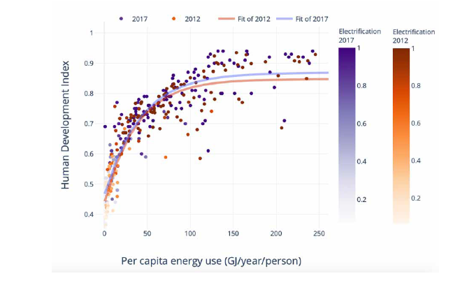
Figure 6.36 | The relationship between total per capita energy use, rate of electrification and human development index (HDI). Improved efficiency has lowered the energy demand required for meeting a threshold HDI during 2012–2017.
Electrification also improves energy efficiency, with corresponding implications for development goals. For example, the availability of electric cooking may reduce the cooking primary energy requirement considerably compared to traditional stoves (Yang and Yang 2018; Batchelor et al. 2019; Khan and Alam 2020) while also promoting improved indoor air quality (SDG 3). Similarly, PV-powered irrigation and water pumping reduces pumping energy demands, which has the added advantage of promoting SDG 6 on clean water (Rathore et al. 2018; Elkadeem et al. 2019).
Phasing out fossil fuels in favour of low-carbon sources is likely to have considerable SDG benefits, particularly if trade-offs such as unemployment to fossil fuel workers are minimised ( high confidence). A phase-out of coal (Box 6.2) will support SDGs 3, 7 and 14, but it is also anticipated to create large job losses if not properly managed. At the same time, there are large potential employment opportunities that may be created in alternative sectors such as renewables and bioenergy for both skilled and unskilled workers. ‘Sustainable transition’ pathways have indicated a complete fossil phase-out which could entail numerous other co-benefits. For instance, fossil fuels are estimated to generate only 2.65 jobs per million USD as compared to projected 7.49 from renewables (Garrett-Peltier 2017). Similar synergies may also emerge for nuclear power in the long term, though the high costs create trade-offs in developing country contexts (Agyekum et al. 2020; Castor et al. 2020). While bioenergy production may create jobs, it may also be problematic for SDG 2 on zero hunger by affecting the supplies and prices of food. Phasing out of fossil fuels will also improve air quality (SDG 3) and premature deaths by reducing PM2.5 emissions, (He et al. 2020; Li et al. 2020c). Energy transitions from fossil fuels to renewables, as well as within fossil fuels (coal to gas switching), are already occurring in some regions, spurred by climate concerns, health concerns, market dynamics, or consumer choice (e.g., in the transport sector).
CDR and CCS can create significant land and water trade-offs ( high confidence). For large-scale CDR and CCS deployment to not conflict with development goals requires efforts to reduce implications on water and food systems. The water impacts of carbon capture are large, but these impacts can be strategically managed (Magneschi et al. 2017; Liu et al. 2019a; Realmonte et al. 2019; Giannaris et al. 2020 c). In addition, high-salinity brines are produced from geologic carbon storage, which may be a synergy or trade-off depending on the energy intensity of the treatment process and the reusability of the treated waters (Klapperich et al. 2014; Arena et al. 2017); if the produced brine from geologic formations can be treated via desalination technologies, there is an opportunity to keep the water intensity of electricity as constant (Section 6.4.2.5). Both implications of CCS and CDR are related to SDG 6 on clean water. CDR discussions in the context of energy systems frequently pertains to BECCS which could affect food prices based on land management approaches (Daioglou et al. 2020a). Several CDR processes also require considerable infrastructure refurbishment and electrification to reduce upstream CO2 emissions (Singh and Colosi 2021). Large-scale CDR could also open the potential for low-carbon transport and urban energy (by offsetting emissions in these sectors) use that would create synergies with SDG 11 (sustainable cities and communities). Effective siting of CDR infrastructure therefore requires consideration of trade-offs with other priorities. At the same time, several SDG synergies have also been reported to accompany CCS projects, such as with reduced air pollution (SDG 3) (Mikunda et al. 2021).
Greater energy system integration (Sections 6.4.3 and 6.6.2) would enhance energy-SDG synergies while eliminating trade-offs associated with deploying mitigation options ( high confidence). Energy system integration strategies focus on codependence of individual technologies in ways that optimise system performance. Accordingly, they can improve economic outcomes and reduce negative implications for SDGs. For example, VRE electricity options raise intermittency concerns and hydrogen can be expensive due to the costs of electricity. Both are relevant to SDG 7 on affordable and reliable energy access. Routing excess solar generation during daytime for hydrogen production will improve grid stability as lower hydrogen costs (Tarroja et al. 2015). Due to the varying patterns of solar and wind energy, these two energy sources could be operated in tandem, thus reducing the material needs for their construction and for storage, thus promoting SDG 12 on sustainable production (Weitemeyer et al. 2015; Wang et al. 2019d). For CCS facilities, co-firing of fossil fuels and biomass could enable a more gradual, near-term low-carbon transition (Lu et al. 2019). This could enable early retirements (associated with SDG 1) while also providing air pollution reductions (associated with SDG 3).
Overall, the scope for positive interactions between low-carbon energy systems and SDGs is considerably larger than the trade-offs (Figure 6.37) (McCollum et al. 2018b). Some critical trade-offs include impact to biodiversity due to large-scale mineral mining needed for renewable infrastructure (Sonter et al. 2020).
.png)
Figure 6.37 | Nature of the interactions between SDG 7 (Energy) and the non-energy SDGs. Source: McCollum et al. 2018c, reproduced under Creative Commons 3.0 Licence.
Frequently Asked Questions
FAQ 6.1 | Will energy systems that emit little or no CO2be different than those of today?
Low-carbon energy systems will be similar to those of today in that they will provide many of the same services as today – for example, heating and cooling homes, travelling to work or on vacation, transporting goods and services, and powering manufacturing. But future energy systems may be different in that people may also demand new services that aren’t foreseen today, just as people now use energy for many information technology uses that were not anticipated 50 years ago. More importantly, low-carbon energy systems will be different in the way that energy is produced, transformed, and used to provide these services. In the future, almost all electricity will be produced from sources that emit little or no CO2, such as solar power, wind power, nuclear power, bioenergy, hydropower, geothermal power, or fossil energy in which the CO2 is captured and stored. Electricity, hydrogen, and bioenergy will be used in many situations where fossil fuels are used today, for example, in cars or heating homes. And energy is likely to be used more efficiently than today, for example, through more efficient cars, trucks, and appliances, buildings that use very little energy, and greater use or public transportation. All of these changes may require new policies, institutions, and even new ways for people to live their lives. And fundamental to all of these changes is that low-carbon energy systems will use far less fossil fuel than today.
FAQ 6.2 | Can renewable sources provide all the energy needed for energy systems that emit little or no CO2?
Renewable energy technologies harness energy from natural sources that are continually replenished, for example, from the sun (solar energy), the wind (wind energy), plants (bioenergy), rainfall (hydropower), or even the ocean. The energy from these sources exceeds the world’s current and future energy needs many times. But that does not mean that renewable sources will provide all energy in future low-carbon energy systems. Some countries have a lot of renewable energy, whereas others do not, and other energy sources, such as nuclear power or fossil energy in which CO2 emissions are captured and stored (carbon dioxide capture and storage, or CCS) can also contribute to low-carbon energy systems. The energy from sources such as solar energy, wind energy, and hydropower can vary throughout the day or over seasons or years. All low-carbon energy sources have other implications for people and countries, some of which are desirable, for example, reducing air pollution or making it easy to provide electricity in remote locations, and some of which are undesirable, for example decreasing biodiversity or mining of minerals to produce low-emissions technologies. For all of these reasons, it is unlikely that all low-carbon energy systems around the world will rely entirely on renewable energy sources.
FAQ 6.3 | What are the most important steps to decarbonise the energy system?
To create a low-carbon energy system, emissions must be reduced across all parts of the system, and not just one or two. This means, for example, reducing the emissions from producing electricity, driving cars, hauling freight, heating and cooling buildings, powering data centres, and manufacturing goods. There are more opportunities to reduce emissions over the next decade in some sectors compared to others. For example, it is possible to substantially reduce electricity emissions over the next decade by investing in low-carbon electricity sources, while at the same time halting the construction of new coal-fired power plants, retiring existing coal-fired power plants or retrofitting them with carbon capture and storage (CCS), and limiting the construction of new gas-fired power plants. There are also opportunities to increase the number of electric cars, trucks, and other vehicles on the road, or to use electricity rather than natural gas or coal to heat homes. And across the whole energy system, emissions can be reduced by using more efficient technologies. While these and other actions will be critical over the coming decade, it is also important to remember that the low-carbon energy transition needs to extend for many decades into the future to limit warming. This means that it is important now to improve and test options that could be useful later on, for example, producing hydrogen from low-carbon sources or producing bioenergy from crops that require less land than today.
References
Abanades, J.C. et al., 2015: Emerging CO2 capture systems. Int. J. Greenh. Gas Control, 40, 126–166, doi:10.1016/j.ijggc.2015.04.018.
Abdella, J. and K. Shuaib, 2018: Peer to Peer Distributed Energy Trading in Smart Grids: A Survey. Energies, 11, 1560, doi:10.3390/en11061560.
Abdin, Z. et al., 2020: Hydrogen as an energy vector. Renew. Sustain. Energy Rev. , 120, 109620, doi:10.1016/j.rser.2019.109620.
Abotalib, M., F. Zhao, and A. Clarens, 2016: Deployment of a Geographical Information System Life Cycle Assessment Integrated Framework for Exploring the Opportunities and Challenges of Enhanced Oil Recovery Using Industrial CO2 Supply in the United States. ACS Sustain. Chem. Eng. , 4(9) , 4743–4751, doi:10.1021/acssuschemeng.6b00957.
Abousahl, S. et al., 2021: Technical assessment of nuclear energy with respect to the ‘do no significant harm’ criteria of Regulation (EU) 2020/852 (‘Taxonomy Regulation’). EUR 30777 EN, Publications Office of the European Union, Luxembourg, doi:10.2760/207251.
Abraham, J., 2017: Just Transitions for the Miners: Labor Environmentalism in the Ruhr and Appalachian Coalfields. New Polit. Sci. , 39(2) , 218–240, doi:10.1080/07393148.2017.1301313.
Abrahamse, W. and L. Steg, 2013: Social influence approaches to encourage resource conservation: A meta-analysis. Glob. Environ. Change, 23(6) , 1773–1785, doi:10.1016/j.gloenvcha.2013.07.029.
Abrahamse, W., L. Steg, C. Vlek, and T. Rothengatter, 2005: A review of intervention studies aimed at household energy conservation. J. Environ. Psychol. , 25(3) , 273–291, doi:10.1016/j.jenvp.2005.08.002.
Abrahamse, W., L. Steg, C. Vlek, and T. Rothengatter, 2007: The effect of tailored information, goal setting, and tailored feedback on household energy use, energy-related behaviors, and behavioral antecedents. J. Environ. Psychol. , 27(4) , 265–276, doi:10.1016/j.jenvp.2007.08.002.
Abrell, J. and S. Rausch, 2016: Cross-country electricity trade, renewable energy and European transmission infrastructure policy. J. Environ. Econ. Manage. , 79, 87–113, doi:10.1016/j.jeem.2016.04.001.
Abrell, J., M. Kosch, and S. Rausch, 2019: Carbon abatement with renewables: Evaluating wind and solar subsidies in Germany and Spain. J. Public Econ. , 169, 172–202, doi:10.1016/j.jpubeco.2018.11.007.
Abreu, E.F.M., P. Canhoto, V. Prior, and R. Melicio, 2018: Solar resource assessment through long-term statistical analysis and typical data generation with different time resolutions using GHI measurements. Renew. Energy, 127, 398–411, doi:10.1016/j.renene.2018.04.068.
Acemoglu, D., U. Akcigit, D. Hanley, and W. Kerr, 2016: Transition to Clean Technology. J. Polit. Econ. , 124(1) , 52–104, doi:10.1086/684511.
ACOLA, 2017: The Role of Energy Storage in Australia’s Future Energy Supply Mix. https://acola.org/hs1-energy-storage-australia/.
Adenle, A.A., D.T. Manning, and J. Arbiol, 2017: Mitigating Climate Change in Africa: Barriers to Financing Low-Carbon Development. World Dev. , 100, 123–132, doi:10.1016/j.worlddev.2017.07.033.
Afif, A. et al., 2016: Ammonia-fed fuel cells: a comprehensive review. Renew. Sustain. Energy Rev. , 60, 822–835, doi:10.1016/j.rser.2016.01.120.
Aghahosseini, A. and C. Breyer, 2018: Assessment of geological resource potential for compressed air energy storage in global electricity supply. Energy Convers. Manag. , 169, 161–173, doi:10.1016/j.enconman.2018.05.058.
Agnew, S. and P. Dargusch, 2017: Consumer preferences for household-level battery energy storage. Renew. Sustain. Energy Rev. , 75, 609–617, doi:10.1016/j.rser.2016.11.030.
Agrawal, A., A. Chhatre, and E.R. Gerber, 2015: Motivational Crowding in Sustainable Development Interventions. Am. Polit. Sci. Rev. , 109(3) , 470–487, doi:10.1017/S0003055415000209.
Aguilar, F.X., A. Mirzaee, R.G. McGarvey, S.R. Shifley, and D. Burtraw, 2020: Expansion of US wood pellet industry points to positive trends but the need for continued monitoring. Sci. Rep. , 10(1) , 18607, doi:10.1038/s41598-020-75403-z.
Agyekum, E.B., M.N.S. Ansah, and K.B. Afornu, 2020: Nuclear energy for sustainable development: SWOT analysis on Ghana’s nuclear agenda. Energy Reports, 6, 107–115, doi:10.1016/J.EGYR.2019.11.163.
Ahl, A., M. Goto, and M. Yarime, 2020: Smart technology applications in the woody biomass supply chain: interview insights and potential in Japan. Sustain. Sci. , 15(5) , 1531–1553, doi:10.1007/s11625-019-00728-2.
Ahmad, A., 2021: Increase in frequency of nuclear power outages due to changing climate. Nat. Energy, 6(7) , 755–762, doi:10.1038/s41560-021-00849-y.
Ahmad, S.I. et al., 2020: Development of quantitative SHE index for waste to energy technology selection. Energy, 191, 116534, doi:10.1016/j.energy.2019.116534.
Ahmed, S.F. et al., 2021: Recent progress in solar water heaters and solar collectors: A comprehensive review. Thermal Science and Engineering Progress, 25, 100981, doi:10.1016/j.tsep.2021.100981.
Aitken, M., 2010a: Wind power and community benefits: Challenges and opportunities. Energy Policy, 38(10) , 6066–6075, doi:10.1016/j.enpol.2010.05.062.
Aitken, M., 2010b: Why we still don’t understand the social aspects of wind power: A critique of key assumptions within the literature. Energy Policy, 38(4) , 1834–1841, doi:10.1016/j.enpol.2009.11.060.
Aklin, M., P. Bayer, S.P. Harish, and J. Urpelainen, 2017: Does basic energy access generate socioeconomic benefits? A field experiment with off-grid solar power in India. Sci. Adv. , 3(5) , doi:10.1126/sciadv.1602153.
Al-Qahtani, A., B. Parkinson, K. Hellgardt, N. Shah, and G. Guillen-Gosalbez, 2021: Uncovering the true cost of hydrogen production routes using life cycle monetisation. Appl. Energy, 281, 115958, doi:10.1016/j.apenergy.2020.115958.
Al Shaqsi, A.Z., K. Sopian, and A. Al-Hinai, 2020: Review of energy storage services, applications, limitations, and benefits. Energy Reports, 6, 288–306, doi:10.1016/j.egyr.2020.07.028.
Alassi, A., S. Bañales, O. Ellabban, G. Adam, and C. MacIver, 2019: HVDC Transmission: Technology Review, Market Trends and Future Outlook. Renew. Sustain. Energy Rev. , 112, 530–554, doi:10.1016/j.rser.2019.04.062.
Alberini, A. and C. Towe, 2015: Information v. energy efficiency incentives: Evidence from residential electricity consumption in Maryland. Energy Econ. , 52, S30–S40, doi:10.1016/j.eneco.2015.08.013.
Albertus, P., J.S. Manser, and S. Litzelman, 2020: Long-Duration Electricity Storage Applications, Economics, and Technologies. Joule, 4(1) , 21–32, doi:10.1016/j.joule.2019.11.009.
Alcalde, J. et al., 2018: Estimating geological CO2 storage security to deliver on climate mitigation. Nat. Commun. , 9(1) , 2201, doi:10.1038/s41467-018-04423-1.
Alcalde, J. et al., 2019: Acorn: Developing full-chain industrial carbon capture and storage in a resource- and infrastructure-rich hydrocarbon province. J. Clean. Prod. , 233, 963–971, doi:10.1016/j.jclepro.2019.06.087.
Aldy, J.E., 2020: Carbon Tax Review and Updating: Institutionalizing an Act-Learn-Act Approach to U.S. Climate Policy. Rev. Environ. Econ. Policy, 14(1) , 76–94, doi:10.1093/reep/rez019.
Allcott, H., 2011: Social norms and energy conservation. J. Public Econ. , 95(9–10) , 1082–1095, doi:10.1016/j.jpubeco.2011.03.003.
Allen, P. and T. Chatterton, 2013: Carbon reduction scenarios for 2050: An explorative analysis of public preferences. Energy Policy, 63, 796–808, doi:10.1016/j.enpol.2013.08.079.
Alrashed, F. and U. Zahid, 2021: Comparative analysis of conventional steam methane reforming and PdAu membrane reactor for the hydrogen production. Comput. Chem. Eng. , 154, 107497, doi:10.1016/j.compchemeng.2021.107497.
Alsaleh, M. and A. Abdul-Rahim, 2018: The Economic Determinants of Bioenergy Trade Intensity in the EU-28: A Co-Integration Approach. Sustainability, 10(2) , 565, doi:10.3390/su10020565.
Alvarez, R.A. et al., 2018: Assessment of methane emissions from the U.S. oil and gas supply chain. Science. , 361, 186–188, doi:10.1126/science.aar7204.
Ambrosio-Albala, P., P. Upham, C.S.E. Bale, and P.G. Taylor, 2020: Exploring acceptance of decentralised energy storage at household and neighbourhood scales: A UK survey. Energy Policy, 138 (December 2019), 111194, doi:10.1016/j.enpol.2019.111194.
Ameli, H., M. Qadrdan, and G. Strbac, 2017: Value of gas network infrastructure flexibility in supporting cost effective operation of power systems. Appl. Energy, 202, 571–580, doi:10.1016/j.apenergy.2017.05.132.
Ameli, H., M. Qadrdan, and G. Strbac, 2019: Coordinated operation strategies for natural gas and power systems in presence of gas‐related flexibilities. IET Energy Syst. Integr. , 1(1) , 3–13, doi:10.1049/iet-esi.2018.0047.
Ameli, H., M. Qadrdan, and G. Strbac, 2020: Coordinated Operation of Gas and Electricity Systems for Flexibility Study. Front. Energy Res. , 8, 120, doi:10.3389/fenrg.2020.00120.
Amirante, R., E. Cassone, E. Distaso, and P. Tamburrano, 2017: Overview on recent developments in energy storage: Mechanical, electrochemical and hydrogen technologies. Energy Convers. Manag. , 132, 372–387, doi:10.1016/j.enconman.2016.11.046.
Amiryar, M. and K. Pullen, 2017: A Review of Flywheel Energy Storage System Technologies and Their Applications. Appl. Sci. , 7(3) , 286, doi:10.3390/app7030286.
Andadari, R.K., P. Mulder, and P. Rietveld, 2014: Energy poverty reduction by fuel switching. Impact evaluation of the LPG conversion program in Indonesia. Energy Policy, 66, 436–449, doi:10.1016/j.enpol.2013.11.021.
Anderson, S.T. and R.G. Newell, 2004: Information programs for technology adoption: The case of energy-efficiency audits. Resour. Energy Econ. , 26(1) , 27–50, doi:10.1016/j.reseneeco.2003.07.001.
Andersson, J., and S. Grönkvist, 2019: Large-scale storage of hydrogen. Int. J. Hydrogen Energy, 44, 11901–11919, doi:10.1016/j.ijhydene.2019.03.063.
Andoni, M. et al., 2019: Blockchain technology in the energy sector: A systematic review of challenges and opportunities. Renew. Sustain. Energy Rev. , 100, 143–174, doi:10.1016/j.rser.2018.10.014.
Andor, M. and A. Voss, 2016: Optimal renewable-energy promotion: Capacity subsidies vs. generation subsidies. Resour. Energy Econ. , 45, 144–158, doi:10.1016/j.reseneeco.2016.06.002.
Andrews-Speed, P., 2016: Applying institutional theory to the low-carbon energy transition. Energy Res. Soc. Sci. , 13, 216–225, doi:10.1016/j.erss.2015.12.011.
Andrews-Speed, P. and G. Ma, 2016: Household Energy Saving in China: The Challenge of Changing Behaviour. In: China’s Energy Efficiency and Conservation[Su, B. and E. Thomson, (eds.)]. Springer, Singapore, pp. 23–39.
Ansari, D. and F. Holz, 2020: Between stranded assets and green transformation: Fossil-fuel-producing developing countries towards 2055. World Dev. , 130, 104947, doi:10.1016/j.worlddev.2020.104947.
Antosiewicz, M., A. Nikas, A. Szpor, J. Witajewski-Baltvilks, and H. Doukas, 2020: Pathways for the transition of the Polish power sector and associated risks. Environ. Innov. Soc. Transitions, 35, 271–291, doi:10.1016/j.eist.2019.01.008.
Arbabzadeh, M., R. Sioshansi, J.X. Johnson, and G.A. Keoleian, 2019: The role of energy storage in deep decarbonization of electricity production. Nat. Commun. , 10, doi:10.1038/s41467-019-11161-5.
Ardente, F., C.E.L. Latunussa, and G.A. Blengini, 2019: Resource efficient recovery of critical and precious metals from waste silicon PV panel recycling. Waste Manag. , 91, 156–167, doi:10.1016/j.wasman.2019.04.059.
Ardizzon, G., G. Cavazzini, and G. Pavesi, 2014: A new generation of small hydro and pumped-hydro power plants: Advances and future challenges. Renew. Sustain. Energy Rev. , 31, 746–761, doi:10.1016/j.rser.2013.12.043.
ARENA, 2020: South Australian battery grows bigger and better. https://arena.gov.au/blog/south-australian-battery-grows-bigger-and-better/.
Arena, J.T. et al., 2017: Management and dewatering of brines extracted from geologic carbon storage sites. Int. J. Greenh. Gas Control, 63, 194–214, doi:10.1016/j.ijggc.2017.03.032.
Arenas, L.F. et al., 2018: The characteristics and performance of hybrid redox flow batteries with zinc negative electrodes for energy storage. Renew. Sustain. Energy Rev. , 90, 992–1016, doi:10.1016/j.rser.2018.03.016.
Arnaiz del Pozo, C., S. Cloete, and Á. Jiménez Álvaro, 2021: Carbon-negative hydrogen: Exploring the techno-economic potential of biomass co-gasification with CO2 capture. Energy Convers. Manag. , 247, 114712, doi:10.1016/j.enconman.2021.114712.
Arndt, C., S. Msangi, and J. Thurlow, 2011: Are biofuels good for African development? An analytical framework with evidence from Mozambique and Tanzania. Biofuels, 2, 221–234, doi:10.4155/bfs.11.1.
Arning, K. et al., 2019: Same or different? Insights on public perception and acceptance of carbon capture and storage or utilization in Germany. Energy Policy, 125, 235–249, doi:10.1016/j.enpol.2018.10.039.
Arshad, M., et al., 2019: A Techno-Economic Concept of EGS Power Generation in Pakistan. Proceedings 44th Workshop on Geothermal Reservoir Engineering, February 2019, Stanford, CA, USA, 7 pp.
Arvai, J.L., 2003: Using risk communication to disclose the outcome of a participatory decision-making process: Effects on the perceived acceptability of risk-policy decisions. Risk Anal. , 23(2) , 281–289, doi:10.1111/1539-6924.00308.
Asensio, O.I. and M.A. Delmas, 2015: Nonprice incentives and energy conservation. Proc. Natl. Acad. Sci. , 112(6) , E510–515, doi:10.1073/pnas.1401880112.
Asensio, O.I. and M.A. Delmas, 2016: The dynamics of behavior change: Evidence from energy conservation. J. Econ. Behav. Organ. , 126, 196–212, doi:10.1016/j.jebo.2016.03.012.
Asheim, G.B. et al., 2019: The case for a supply-side climate treaty. Science, 365(6451) , 325–327, doi:10.1126/science.aax5011.
Auffhammer, M., P. Baylis, and C.H. Hausman, 2017: Climate change is projected to have severe impacts on the frequency and intensity of peak electricity demand across the United States. Proc. Natl. Acad. Sci. , 114(8) , 1886–1891, doi:10.1073/pnas.1613193114.
Auger, T., J. Trüby, P. Balcombe, and I. Staffell, 2021: The future of coal investment, trade, and stranded assets. Joule, 5(6) , 1462–1484, doi:10.1016/j.joule.2021.05.008.
Aunedi, M. and G. Strbac, 2020: Whole-system Benefits of Vehicle-to-Grid Services from Electric Vehicle Fleets. 2020 Fifteenth International Conference on Ecological Vehicles and Renewable Energies (EVER) , IEEE, Monte Carlo, Monaco, 9 pp.
Avraam, C., D. Chu, and S. Siddiqui, 2020: Natural gas infrastructure development in North America under integrated markets. Energy Policy, 147, 111757, doi:10.1016/j.enpol.2020.111757.
Awasthi, M.K. et al., 2019: Global Status of Waste-to-Energy Technology. In: Current Developments in Biotechnology and Bioengineering, Elsevier, Amsterdam, Netherlands, pp. 31–52.
Ayodele, T.R., A.S.O. Ogunjuyigbe, and M.A. Alao, 2018: Economic and environmental assessment of electricity generation using biogas from organic fraction of municipal solid waste for the city of Ibadan, Nigeria. J. Clean. Prod. , 203, 718–735, doi:10.1016/J.JCLEPRO.2018.08.282.
Azevedo, I., C. Bataille, J. Bistline, L. Clarke, and S. Davis, 2021: Net-zero emissions energy systems: What we know and do not know. Energy Clim. Change, 2, 100049, doi:10.1016/j.egycc.2021.100049.
Bager, S. and L. Mundaca, 2017: Making ‘Smart Meters’ smarter? Insights from a behavioural economics pilot field experiment in Copenhagen, Denmark. Energy Res. Soc. Sci. , 28 (April), 68–76, doi:10.1016/j.erss.2017.04.008.
Baik, E. et al., 2018: Geospatial analysis of near-term potential for carbon-negative bioenergy in the United States. Proc. Natl. Acad. Sci. , 115(13) , 3290–3295, doi:10.1073/pnas.1720338115.
Baik, E. et al., 2021: What is different about different net-zero carbon electricity systems?Energy Clim. Change, 2, 100046, doi:10.1016/J.EGYCC.2021.100046.
Baker, S.E. et al., 2020: Getting to Neutral: Options for Negative Carbon Emissions in California. Lawrence Livermore National Laboratory, Livermore, CA, USA, 178 pp.
Balcombe, P., D. Rigby, and A. Azapagic, 2013: Motivations and barriers associated with adopting microgeneration energy technologies in the UK. Renew. Sustain. Energy Rev. , 22, 655–666, doi:10.1016/j.rser.2013.02.012.
Balducci, P.J., M.J.E. Alam, T.D. Hardy, and D. Wu, 2018: Assigning value to energy storage systems at multiple points in an electrical grid. Energy Environ. Sci. , 11(8) , 1926–1944, doi:10.1039/c8ee00569a.
Balijepalli, N., S.S. Venkata, C.W. Richter, R.D. Christie, and V.J. Longo, 2005: Distribution system reliability assessment due to lightning storms. IEEE Trans. Power Deliv. , 20(3) , 2153–2159, doi:10.1109/TPWRD.2005.848724.
Ballarino, A. et al., 2016: The BEST PATHS Project on MgB 2 Superconducting Cables for Very High Power Transmission. IEEE Trans. Appl. Supercond. , 26(3) , 1–6, doi:10.1109/TASC.2016.2545116.
Bamberg, S., 2000: The promotion of new behavior by forming an implementation intention: Results of a field experiment in the domain of travel mode choice. J. Appl. Soc. Psychol. , 30(9) , 1903–1922, doi:10.1111/j.1559-1816.2000.tb02474.x.
Bamberg, S., 2002: Effects of implementation intentions on the actual performance of new environmentally friendly behaviours – Results of two field experiments. J. Environ. Psychol. , 22(4) , 399–411, doi:10.1006/jevp.2002.0278.
Banerjee, A. and B.D. Solomon, 2003: Eco-labeling for energy efficiency and sustainability: A meta-evaluation of US programs. Energy Policy, 31(2) , 109–123, doi:10.1016/S0301-4215(02)00012-5.
Banerjee, T., M. Kumar, R.K. Mall, and R.S. Singh, 2017: Airing ‘clean air’ in Clean India Mission. Environ. Sci. Pollut. Res. , 24(7) , 6399–6413, doi:10.1007/s11356-016-8264-y.
Barbose, G. et al., 2016: A retrospective analysis of benefits and impacts of US renewable portfolio standards. Energy Policy, 96, 645–660, doi:10.1016/j.enpol.2016.06.035.
Barbour, E., I.A.G. Wilson, J. Radcliffe, Y. Ding, and Y. Li, 2016: A review of pumped hydro energy storage development in significant international electricity markets. Renew. Sustain. Energy Rev. , 61, 421–432, doi:10.1016/j.rser.2016.04.019.
Barney, J.N. and J.M. DiTomaso, 2010: Bioclimatic predictions of habitat suitability for the biofuel switchgrass in North America under current and future climate scenarios. Biomass and Bioenergy, 34(1) , 124–133, doi:10.1016/j.biombioe.2009.10.009.
Baron, R., 2016: The Role of Public Procurement in Low-carbon Innovation. Organisation for Economic Co-operation and Development, Paris, France, 32 pp. https://www.oecd.org/sd-roundtable/papersandpublications/The Role of Public Procurement in Low-carbon Innovation.pdf .
Barra, P.H.A., W.C. de Carvalho, T.S. Menezes, R.A.S. Fernandes, and D.V. Coury, 2021: A review on wind power smoothing using high-power energy storage systems. Renew. Sustain. Energy Rev. , 137 (October 2020), 110455, doi:10.1016/j.rser.2020.110455.
Barron-Gafford, G.A. et al., 2016: The Photovoltaic Heat Island Effect: Larger solar power plants increase local temperatures. Sci. Rep. , 6(1) , 35070, doi:10.1038/srep35070.
Barron-Gafford, G.A. et al., 2019: Agrivoltaics provide mutual benefits across the food–energy–water nexus in drylands. Nat. Sustain. , 2(9) , 848–855, doi:10.1038/s41893-019-0364-5.
Barron, M. and M. Torero, 2017: Household electrification and indoor air pollution. J. Environ. Econ. Manage. , 86, 81–92, doi:10.1016/j.jeem.2017.07.007.
Barthelmie, R.J. and S.C. Pryor, 2021: Climate Change Mitigation Potential of Wind Energy. Climate, 9(9) , doi:10.3390/cli9090136.
Bartholomew, T.V. and M.S. Mauter, 2016: Multiobjective optimization model for minimizing cost and environmental impact in shale gas water and wastewater management. ACS Sustain. Chem. Eng. , 4(7) , 3728–3735, doi:10.1021/acssuschemeng.6b00372.
Bartók, B. et al., 2017: Projected changes in surface solar radiation in CMIP5 global climate models and in EURO-CORDEX regional climate models for Europe. Clim. Dyn. , 49(7–8) , 2665–2683, doi:10.1007/s00382-016-3471-2.
Bartos, M. et al., 2016: Impacts of rising air temperatures on electric transmission ampacity and peak electricity load in the United States. Environ. Res. Lett. , 11(11) , 114008, doi:10.1088/1748-9326/11/11/114008.
Bataille, C., H. Waisman, M. Colombier, L. Segafredo, and J. Williams, 2016: The Deep Decarbonization Pathways Project (DDPP): insights and emerging issues. Clim. Policy, 16 (sup1) , S1–S6, doi:10.1080/14693062.2016.1179620.
Bataille, C., C. Guivarch, S. Hallegatte, J. Rogelj, and H. Waisman, 2018: Carbon prices across countries. Nat. Clim. Change, 8(8) , 648–650, doi:10.1038/s41558-018-0239-1.
Bataille, C. et al., 2020: Net-zero Deep Decarbonization Pathways in Latin America: Challenges and Opportunities. Elsevier, Washington, DC, USA, 36 pp.
Bataille, C.G.F., 2020: Physical and policy pathways to net‐zero emissions industry. WIREs Clim. Change, 11(2) , doi:10.1002/wcc.633.
Batchelor, S., E. Brown, N. Scott, and J. Leary, 2019: Two birds, one stone-reframing cooking energy policies in Africa and Asia. Energies, 12(9) , 1591, doi:10.3390/en12091591.
Bates, A. and J. Firestone, 2015: A comparative assessment of proposed offshore wind power demonstration projects in the United States. Energy Res. Soc. Sci. , 10, 192–205, doi:10.1016/j.erss.2015.07.007.
Bauer, N. et al., 2016: Global fossil energy markets and climate change mitigation – an analysis with REMIND. Clim. Change, 136(1) , 69–82, doi:10.1007/s10584-013-0901-6.
Bauer, N. et al., 2017: Shared Socio-Economic Pathways of the Energy Sector – Quantifying the Narratives. Glob. Environ. Change, 42, 316–330, doi:10.1016/j.gloenvcha.2016.07.006.
Bauer, N., C. McGlade, J. Hilaire, and P. Ekins, 2018: Divestment prevails over the green paradox when anticipating strong future climate policies. Nat. Clim. Change, 8(2) , 130–134, doi:10.1038/s41558-017-0053–1.
Bauer, N. et al., 2020: Global energy sector emission reductions and bioenergy use: overview of the bioenergy demand phase of the EMF-33 model comparison. Clim. Change, 163(3) , 1553–1568, doi:10.1007/s10584-018-2226-y.
Baxter, J., Y. Ho, Y. Rollins, and V. Maclaren, 2016: Attitudes toward waste to energy facilities and impacts on diversion in Ontario, Canada. Waste Manag. , 50, 75–85, doi:10.1016/J.WASMAN.2016.02.017.
Bednar, J., M. Obersteiner, and F. Wagner, 2019: On the financial viability of negative emissions. Nat. Commun. , 10(1783) , 1–4, doi:10.1038/s41467-019-09782-x.
BEIS, 2021: Hydrogen Production Costs. Department for Business, Energy & Industrial Strategy, Longdon, UK. https://assets.publishing.service.gov.uk/government/uploads/system/uploads/attachment_data/file/1011506/Hydrogen_Production_Costs_2021.pdf .
Beiter, P. et al., 2021: Wind power costs driven by innovation and experience with further reductions on the horizon. Wiley Interdiscip. Rev. Energy Environ. 10(5) , 1–20, doi:10.1002/wene.398.
Béland, D. and M. Howlett, 2016: The Role and Impact of the Multiple-Streams Approach in Comparative Policy Analysis. J. Comp. Policy Anal. Res. Pract. , 18(3) , 221–227, doi:10.1080/13876988.2016.1174410.
Belderbos, A., E. Delarue, and W. D’haeseleer, 2016: Calculating the levelized cost of electricity storage. Energy: Expectations and Uncertainty, 39th IAEE International Conference, Jun 19-22, 2016.
Bell, T.E. and L. Torrente-Murciano, 2016: H2 Production via Ammonia Decomposition Using Non-Noble Metal Catalysts: A Review. Top. Catal. , 59(15–16) , 1438–1457, doi:10.1007/s11244-016-0653-4.
Bellarby, J., M. Wattenbach, G. Tuck, M.J. Glendining, and P. Smith, 2010: The potential distribution of bioenergy crops in the UK under present and future climate. Biomass and Bioenergy, 34(12) , 1935–1945, doi:10.1016/j.biombioe.2010.08.009.
Beringer, T., W. Lucht, and S. Schaphoff, 2011: Bioenergy production potential of global biomass plantations under environmental and agricultural constraints. GCB Bioenergy, 3(4) , 299–312, doi:10.1111/j.1757-1707.2010.01088.x.
Bernauer, T. and R. Gampfer, 2015: How robust is public support for unilateral climate policy?Environ. Sci. Policy, 54, 316–330, doi:10.1016/j.envsci.2015.07.010.
Bernauer, T., L. Dong, L.F. McGrath, I. Shaymerdenova, and H. Zhang, 2016a: Unilateral or reciprocal climate policy? Experimental evidence from China. Polit. Gov. , 4(3) , 152–171, doi:10.17645/pag.v4i3.650.
Bernauer, T., R. Gampfer, T. Meng, and Y.S. Su, 2016b: Could more civil society involvement increase public support for climate policy-making? Evidence from a survey experiment in China. Glob. Environ. Change, 40, 1–12, doi:10.1016/j.gloenvcha.2016.06.001.
Berthelemy, M. and L.E. Rangel, 2015: Nuclear reactors’ construction costs: The role of lead-time, standardization and technological progress. Energy Policy, 82, 118–130, doi:10.1016/j.enpol.2015.03.015.
Bertram, C. et al., 2015: Complementing carbon prices with technology policies to keep climate targets within reach. Nat. Clim. Change, 5(3) , 235–239, doi:10.1038/nclimate2514.
Bertram, C. et al., 2018: Targeted policies can compensate most of the increased sustainability risks in 1.5°C mitigation scenarios. Environ. Res. Lett. , 13(6) , doi:10.1088/1748-9326/aac3ec.
Bertram, C. et al., 2021: Energy system developments and investments in the decisive decade for the Paris Agreement goals. Environ. Res. Lett. , 16(7) , 74020, doi:10.1088/1748-9326/ac09ae.
Bertsch, V., M. Hall, C. Weinhardt, and W. Fichtner, 2016: Public acceptance and preferences related to renewable energy and grid expansion policy: Empirical insights for Germany. Energy, 114, 465–477, doi:10.1016/j.energy.2016.08.022.
Bertsch, V., M. Hyland, and M. Mahony, 2017: What drives people’s opinions of electricity infrastructure? Empirical evidence from Ireland. Energy Policy, 106, 472–497, doi:10.1016/j.enpol.2017.04.008.
Besharat, F., A.A. Dehghan, and A.R. Faghih, 2013: Empirical models for estimating global solar radiation: A review and case study. Renew. Sustain. Energy Rev. , 21, 798–821, doi:10.1016/j.rser.2012.12.043.
Bessette, D.L. and J.L. Arvai, 2018: Engaging attribute tradeoffs in clean energy portfolio development. Energy Policy, 115 (October 2017), 221–229, doi:10.1016/j.enpol.2018.01.021.
Bessette, D.L., J. Arvai, and V. Campbell-Arvai, 2014: Decision support framework for developing regional energy strategies. Environ. Sci. Technol. , 48(3) , 1401–1408, doi:10.1021/es4036286.
Best, R. and P.J. Burke, 2018: Adoption of solar and wind energy: The roles of carbon pricing and aggregate policy support. Energy Policy, 118, 404–417, doi:10.1016/j.enpol.2018.03.050.
Bhagwat, P.C., J.C. Richstein, E.J.L. Chappin, K.K. Iychettira, and L.J. De Vries, 2017: Cross-border effects of capacity mechanisms in interconnected power systems. Util. Policy, 46, 33–47, doi:10.1016/j.jup.2017.03.005.
Bhave, A. et al., 2017: Screening and techno-economic assessment of biomass-based power generation with CCS technologies to meet 2050 CO2 targets. Appl. Energy, 190, 481–489, doi:10.1016/j.apenergy.2016.12.120.
Biddau, F., A. Armenti, and P. Cottone, 2016: Socio-psychological aspects of grassroots participation in the transition movement: An Italian case study. J. Soc. Polit. Psychol. , 4(1) , 142–165, doi:10.5964/jspp.v4i1.518.
Bidwell, D., 2014: The Effects of Information on Public Attitudes Toward Renewable Energy. Environ. Behav. , 48(6) , 743–768, doi:10.1177/0013916514554696.
Bidwell, D., 2016: Thinking through participation in renewable energy decisions. Nat. Energy, 1(5) , 16051, doi:10.1038/nenergy.2016.51.
Bidwell, D., 2017: Ocean beliefs and support for an offshore wind energy project. Ocean Coast. Manag. , 146, 99–108, doi:10.1016/j.ocecoaman.2017.06.012.
Bindoff, N.L., W.W.L. Cheung, J.G. Kairo, J. Arístegui, V.A. Guinder, R. Hallberg, N. Hilmi, N. Jiao, M.S. Karim, L. Levin, S. O’Donoghue, S.R. Purca Cuicapusa, B. Rinkevich, T. Suga, A. Tagliabue, and P. Williamson, 2019: Changing Ocean, Marine Ecosystems, and Dependent Communities. In: IPCC Special Report on the Ocean and Cryosphere in a Changing Climate[H.-O. Pörtner, D.C. Roberts, V. Masson-Delmotte, P. Zhai, M. Tignor, E. Poloczanska, K. Mintenbeck, A. Alegría, M. Nicolai, A. Okem, J. Petzold, B. Rama, N.M. Weyer (eds.)]. Cambridge University Press, Cambridge, UK and New York, NY, USA, pp. 447–588.
Binsted, M. et al., 2020: Stranded asset implications of the Paris Agreement in Latin America and the Caribbean. Environ. Res. Lett. , 15(4) , 44026, doi:10.1088/1748-9326/ab506d.
Bird, D.K., K. Haynes, R. van den Honert, J. McAneney, and W. Poortinga, 2014: Nuclear power in Australia: A comparative analysis of public opinion regarding climate change and the Fukushima disaster. Energy Policy, 65, 644–653, doi:10.1016/j.enpol.2013.09.047.
Bistline, J., 2021a: Variability in Deeply Decarbonized Electricity Systems. Environ. Sci. & Technol. , 55(9) , 5629–5635, doi:10.1021/acs.est.0c06708.
Bistline, J., N. Santen, and D. Young, 2019: The economic geography of variable renewable energy and impacts of trade formulations for renewable mandates. Renew. Sustain. Energy Rev. , 106, 79–96, doi:10.1016/j.rser.2019.02.026.
Bistline, J. et al., 2020a: Energy storage in long-term system models: a review of considerations, best practices, and research needs. Prog. Energy, 2(3) , 32001, doi:10.1088/2516-1083/ab9894.
Bistline, J.E., 2017: Economic and technical challenges of flexible operations under large-scale variable renewable deployment. Energy Econ. , 64, 363–372, doi:10.1016/j.eneco.2017.04.012.
Bistline, J.E., 2019: Turn Down for What? The Economic Value of Operational Flexibility in Electricity Markets. IEEE Trans. Power Syst. , 34(1) , 527–534, doi:10.1109/TPWRS.2018.2856887.
Bistline, J.E. and F. de la Chesnaye, 2017: Banking on banking: does ‘when’ flexibility mask the costs of stringent climate policy?Clim. Change, 144(4) , 597–610, doi:10.1007/s10584-017-2053-6.
Bistline, J.E. et al., 2018: Electric sector policy, technological change, and U.S. emissions reductions goals: Results from the EMF 32 model intercomparison project. Energy Econ. , 73, 307–325, doi:10.1016/j.eneco.2018.04.012.
Bistline, J.E.T., 2021b: Roadmaps to net-zero emissions systems: Emerging insights and modeling challenges. Joule, 5(10) , 2551–2563, doi:10.1016/j.joule.2021.09.012.
Bistline, J.E.T., 2021c: The importance of temporal resolution in modeling deep decarbonization of the electric power sector. Environ. Res. Lett. , 16(8) , 84005, doi:10.1088/1748-9326/ac10df.
Bistline, J.E.T. and D.T. Young, 2019: Economic drivers of wind and solar penetration in the US. Environ. Res. Lett. , 14(12) , doi:10.1088/1748-9326/ab4e2d.
Bistline, J.E.T. and G.J. Blanford, 2020: Value of technology in the U.S. electric power sector: Impacts of full portfolios and technological change on the costs of meeting decarbonization goals. Energy Econ. , 86, 104694, doi:10.1016/j.eneco.2020.104694.
Bistline, J.E.T. and D.T. Young, 2020: Emissions impacts of future battery storage deployment on regional power systems. Appl. Energy, 264, 114678, doi:10.1016/j.apenergy.2020.114678.
Bistline, J.E.T. and G.J. Blanford, 2021a: Impact of carbon dioxide removal technologies on deep decarbonization of the electric power sector. Nat. Commun. , 12(1) , 3732, doi:10.1038/s41467-021-23554-6.
Bistline, J.E.T. and G.J. Blanford, 2021b: The role of the power sector in net-zero energy systems. Energy Clim. Change, 2, 100045, doi:10.1016/J.EGYCC.2021.100045.
Bistline, J.E.T., M. Brown, S.A. Siddiqui, and K. Vaillancourt, 2020b: Electric sector impacts of renewable policy coordination: A multi-model study of the North American energy system. Energy Policy, 145, 111707, doi:10.1016/j.enpol.2020.111707.
Bistline, J.E.T., C.W. Roney, D.L. McCollum, and G.J. Blanford, 2021: Deep decarbonization impacts on electric load shapes and peak demand. Environ. Res. Lett. , 16(9) , 94054, doi:10.1088/1748-9326/ac2197.
Blakers, A., 2019: Development of the PERC Solar Cell. IEEE J. Photovoltaics, 9(3) , 629–635, doi:10.1109/JPHOTOV.2019.2899460.
Blanc, P. et al., 2020: Five steps to energy storage-Innovation Insights Brief-2020. World Energy Council, Paris, France, 75 pp.
Blanco, H. and A. Faaij, 2018: A review at the role of storage in energy systems with a focus on Power to Gas and long-term storage. Renew. Sustain. Energy Rev. , 81, 1049–1086, doi:10.1016/j.rser.2017.07.062
Blanford, G., T. Wilson, and J. Bistline, 2021: Powering Decarbonization: Strategies for Net-Zero CO2Emissions. Electric Power Research Institute, Washington DC, USA, 21 pp.
Blanford, G.J., J.H. Merrick, J.E.T. Bistline, and D.T. Young, 2018: Simulating Annual Variation in Load, Wind, and Solar by Representative Hour Selection. Energy J. , 39(3) , doi:10.5547/01956574.39.3.gbla.
Blarke, M.B. and H. Lund, 2007: Large-scale heat pumps in sustainable energy systems: System and project perspectives. Therm. Sci. , 11(3) , 143–152, doi:10.2298/TSCI0703143B.
Bloemendal, M., M. Jaxa-Rozen, and T. Olsthoorn, 2018: Methods for planning of ATES systems. Appl. Energy, 216, 534–557, doi:10.1016/j.apenergy.2018.02.068.
Blomgren, G.E., 2017: The Development and Future of Lithium Ion Batteries. J. Electrochem. Soc. , 164(1) , A5019–A5025, doi:10.1149/2.0251701jes.
Blondeel, M. and T. Van de Graaf, 2018: Toward a global coal mining moratorium? A comparative analysis of coal mining policies in the USA, China, India and Australia. Clim. Change, 150(1–2) , 89–101, doi:10.1007/s10584-017-2135-5.
Blondeel, M., T. Van de Graaf, and T. Haesebrouck, 2020: Moving beyond coal: Exploring and explaining the Powering Past Coal Alliance. Energy Res. Soc. Sci. , 59, 101304, doi:10.1016/J.ERSS.2019.101304.
Bloom, A. et al., 2020: The Value of Increased HVDC Capacity Between Eastern and Western U.S. Grids: The Interconnections Seam Study: Preprint . National Renewable Energy Laboratory (NREL), Golden, CO, USA, 11 pp.
Bloomberg Energy Finance, 2019: A Behind the Scenes Take on Lithium-ion Battery Prices. https://about.bnef.com/blog/behind-scenes-take-lithium-ion-battery-prices/.
Blumer, Y.B., L. Braunreiter, A. Kachi, R. Lordan-Perret, and F. Oeri, 2018: A two-level analysis of public support: Exploring the role of beliefs in opinions about the Swiss energy strategy. Energy Res. Soc. Sci. , 43 (May), 109–118, doi:10.1016/j.erss.2018.05.024.
Bodenhamer, A., 2016: King Coal: A Study of Mountaintop Removal, Public Discourse, and Power in Appalachia. Soc. Nat. Resour. , 29(10) , 1139–1153, doi:10.1080/08941920.2016.1138561.
Boehringer, C. and M. Behrens, 2015: Interactions of emission caps and renewable electricity support schemes. J. Regul. Econ. , 48, doi:10.1007/s11149-015-9279-x.
Boettcher, C. et al., 2019: Fugitive Emissions. In: 2019 Refinement to the 2006 IPCC Guidelines for National Greenhouse Gas Inventories. [Calvo Buendia, E., Tanabe, K., Kranjc, A., Baasansuren, J., Fukuda, M., Ngarize, S., Osako, A., Pyrozhenko, Y., Shermanau, P. and Federici, S. (eds).]. IPCC, Geneva, Switzerland.
Bogdanov, D. et al., 2019: Radical transformation pathway towards sustainable electricity via evolutionary steps. Nat. Commun. , 10(1) , 1077, doi:10.1038/s41467-019-08855-1.
Bogdanov, D., A. Gulagi, M. Fasihi, and C. Breyer, 2021: Full energy sector transition towards 100% renewable energy supply: Integrating power, heat, transport and industry sectors including desalination. Appl. Energy, 283, 116273, doi:10.1016/j.apenergy.2020.116273.
Böhringer, C. and T.F. Rutherford, 2008: Combining bottom-up and top-down. Energy Econ. , 30(2) , 574–596, doi:10.1016/j.eneco.2007.03.004.
Bolderdijk, J. and L. Steg, 2015: Promoting sustainable consumption: the risks of using financial incentives. In: Handbook of research in sustainable consumption[Reisch, L.A. and J. Thøgersen, (eds.)]. Edward Elgar Publishing, Cheltenham, UK, pp. 328–342.
Bolderdijk, J.W., J. Knockaert, E.M. Steg, and E.T. Verhoef, 2011: Effects of Pay-As-You-Drive vehicle insurance on young drivers’ speed choice: Results of a Dutch field experiment. Accid. Anal. Prev. , 43(3) , 1181–1186, doi:10.1016/j.aap.2010.12.032.
Bolderdijk, J.W., L. Steg, E.S. Geller, P.K. Lehman, and T. Postmes, 2013: Comparing the effectiveness of monetary versus moral motives in environmental campaigning. Nat. Clim. Change, 3(4) , 413–416, doi:10.1038/nclimate1767.
Bollen, J. and C. Brink, 2014: Air pollution policy in Europe: Quantifying the interaction with greenhouse gases and climate change policies. Energy Econ. , 46(2014) , 202–215, doi:10.1016/j.eneco.2014.08.028.
Bolsen, T. and F.L. Cook, 2008: The polls – Trends: Public opinion on energy policy: 1974–2006. Public Opin. Q. , 72, 364–388, doi:10.1093/poq/nfn019.
Bonjean Stanton, M.C., S. Dessai, and J. Paavola, 2016: A systematic review of the impacts of climate variability and change on electricity systems in Europe. Energy, 109, 1148–1159, doi:10.1016/j.energy.2016.05.015.
Bonou, A., A. Laurent, and S.I. Olsen, 2016: Life cycle assessment of onshore and offshore wind energy-from theory to application. Appl. Energy, 180, 327–337, doi:10.1016/j.apenergy.2016.07.058.
Boomsma, C. and L. Steg, 2014: The effect of information and values on acceptability of reduced street lighting. J. Environ. Psychol. , 39, 22–31, doi:10.1016/j.jenvp.2013.11.004.
Booth, M.S., 2018: Not carbon neutral: Assessing the net emissions impact of residues burned for bioenergy. Environ. Res. Lett. , 13(3) , 35001, doi:10.1088/1748-9326/aaac88.
Borenstein, S., J. Bushnell, F.A. Wolak, and M. Zaragoza-Watkins, 2019: Expecting the Unexpected: Emissions Uncertainty and Environmental Market Design. Am. Econ. Rev. , 109(11) , 3953–3977, doi:10.1257/aer.20161218.
Boretti, A. and B.K. Banik, 2021: Advances in Hydrogen Production from Natural Gas Reforming. Adv. Energy Sustain. Res. , 2(11) , 2100097, doi:10.1002/aesr.202100097.
Bos, K. and J. Gupta, 2018: Climate change: the risks of stranded fossil fuel assets and resources to the developing world. Third World Q. , 39(3) , 436–453, doi:10.1080/01436597.2017.1387477.
Bosch, J., I. Staffell, and A.D. Hawkes, 2017: Temporally-explicit and spatially-resolved global onshore wind energy potentials. Energy, 131, 207–217, doi:10.1016/j.energy.2017.05.052.
Bosch, J., I. Staffell, and A.D. Hawkes, 2018: Temporally explicit and spatially resolved global offshore wind energy potentials. Energy, 163, 766–781, doi:10.1016/j.energy.2018.08.153.
Boudet, H.S., 2019: Public perceptions of and responses to new energy technologies. Nat. Energy, 4(6) , 446–455, doi:10.1038/s41560-019-0399-x.
Bouman, T. and L. Steg, 2019: Motivating Society-wide Pro-environmental Change. One Earth, 1(1) , 27–30, doi:10.1016/j.oneear.2019.08.002.
Boyd, A.D., J. Liu, and J.D. Hmielowski, 2019: Public support for energy portfolios in Canada: How information about cost and national energy portfolios affect perceptions of energy systems. Energy Environ. , 30(2) , 322–340, doi:10.1177/0958305X18790958.
BP, 2020: Statistical Review of World Energy, 2020 | 69th Edition. BP, London, UK, 66 pp.
Brack, D. and R. King, 2020: Net-zero and Beyond: What Role for Bioenergy with Carbon Capture and Storage?Chatham House, London, UK, 25 pp.
Bradley, P., A. Coke, and M. Leach, 2016: Financial incentive approaches for reducing peak electricity demand, experience from pilot trials with a UK energy provider. Energy Policy, 98, 108–120, doi:10.1016/j.enpol.2016.07.022.
Brändle, G., M. Schönfisch, and S. Schulte, 2021: Estimating long-term global supply costs for low-carbon hydrogen. Appl. Energy, 302, 117481, doi:10.1016/j.apenergy.2021.117481.
Brandon, A., J.A. List, R.D. Metcalfe, M.K. Price, and F. Rundhammer, 2019: Testing for crowd out in social nudges: Evidence from a natural field experiment in the market for electricity. Proc. Natl. Acad. Sci. , 116(12) , 5293 LP – 5298, doi:10.1073/pnas.1802874115.
Brandon, G. and A. Lewis, 1999: Reducing household energy consumption: A qualitative and quantitative field study. J. Environ. Psychol. , 19(1) , 75–85, doi:10.1006/jevp.1998.0105.
Brandon, N.P. et al. 2015: UK Research Needs in Grid Scale Energy Storage Technologies. Energy Storage Research Network, UK, 92 pp. https://energysuperstore.org/wp-content/uploads/2016/04/IMPJ4129_White_Paper_UK-Research-Needs-in-Grid-Scale-Energy-Storage-Technologies_WEB.pdf .
Brauers, H. and P.-Y. Oei, 2020: The political economy of coal in Poland: Drivers and barriers for a shift away from fossil fuels. Energy Policy, 144, 111621, doi:10.1016/j.enpol.2020.111621.
Breyer, C., S. Khalili, and D. Bogdanov, 2019: Solar photovoltaic capacity demand for a sustainable transport sector to fulfil the Paris Agreement by 2050. Prog. Photovoltaics Res. Appl. , 27(11) , 978–989, doi:10.1002/pip.3114.
Bridge, G., S. Bouzarovski, M. Bradshaw, and N. Eyre, 2013: Geographies of energy transition: Space, place and the low-carbon economy. Energy Policy, 53, 331–340, doi:10.1016/j.enpol.2012.10.066.
Bridge, G., S. Barca, B. Özkaynak, E. Turhan, and R. Wyeth, 2018: Towards a political ecology of EU energy policy. In: Advancing Energy Policy: Lessons on the Integration of Social Sciences and Humanities[Foulds, C. and R. Robison (eds.)]. Palgrave Pivot Cham, Switzerland, pp. 163–175.
Brinkman, M.L. J., B. Wicke, A.P.C. Faaij, and F. van der Hilst, 2019: Projecting socio-economic impacts of bioenergy: Current status and limitations of ex-ante quantification methods. Renew. Sustain. Energy Rev. , 115, 109352, doi:10.1016/j.rser.2019.109352.
Brockway, P.E., A. Owen, L.I. Brand-Correa, and L. Hardt, 2019: Estimation of global final-stage energy-return-on-investment for fossil fuels with comparison to renewable energy sources. Nat. Energy, 4(7) , 612–621, doi:10.1038/s41560-019-0425-z.
Bronfman, N.C., R.B. Jiménez, P.C. Arévalo, and L.A. Cifuentes, 2012: Understanding social acceptance of electricity generation sources. Energy Policy, 46, 246–252, doi:10.1016/j.enpol.2012.03.057.
Bronfman, N.C., R.B. Jiménez, P.C. Arevalo, and L.A. Cifuentes, 2015: Public Acceptance of Electricity Generation Sources: The Role of Trust in Regulatory Institutions. Energy Environ. , 26(3) , 349–368, doi:10.1260/0958-305x.26.3.349.
Brook, B.W. and C.J.A. Bradshaw, 2015: Key role for nuclear energy in global biodiversity conservation. Conserv. Biol. , 29(3) , 702–712, doi:10.1111/cobi.12433.
Brosch, T., M.K. Patel, and D. Sander, 2014: Affective influences on energy-related decisions and behaviors. Front. Energy Res. , 2 (March), 1–12, doi:10.3389/fenrg.2014.00011.
Brouwer, A.S., M. van den Broek, Ö. Özdemir, P. Koutstaal, and A. Faaij, 2016: Business case uncertainty of power plants in future energy systems with wind power. Energy Policy, 89, 237–256, doi:10.1016/j.enpol.2015.11.022.
Brown, D.A., 2011: Comparative ethical issues entailed in the geological disposal of radioactive waste and carbon dioxide in the light of climate change. Geological disposal of carbon dioxide and radioactive waste: A comparative assessment , Springer, Cham, Switzerland, pp. 317–337.
Brown, M.A., G. Kim, A.M. Smith, and K. Southworth, 2017: Exploring the impact of energy efficiency as a carbon mitigation strategy in the U.S. Energy Policy, 109, 249–259, doi:10.1016/j.enpol.2017.06.044.
Brown, T., D. Schlachtberger, A. Kies, S. Schramm, and M. Greiner, 2018: Synergies of sector coupling and transmission reinforcement in a cost-optimised, highly renewable European energy system. Energy, 160, 720–739, doi:10.1016/j.energy.2018.06.222.
Bruce, S., M. Temminghoff, J. Hayward, E. Schmidt, C. Munnings, D. Palfreyman, and P. Hartley, 2018: National hydrogen roadmap. CSIRO, Australia. https://einow.org/s/18-00314_EN_NationalHydrogenRoadmap_WEB_180823.pdf .
Bruninx, K., D. Madzharov, E. Delarue, and W. D’Haeseleer, 2013: Impact of the German nuclear phase-out on Europe’s electricity generation-A comprehensive study. Energy Policy, 60, 251–261, doi:10.1016/j.enpol.2013.05.026.
Buckley, T., 2019: Over 100 Global Financial Institutions Are Exiting Coal, With More to Come. IEEFA. Institute for Energy Economics and Financial Analysis, Lakewood, Ohio, USA, 35 pp.
Budinis, S. et al., 2017: Can Carbon Capture and Storage Unlock ‘Unburnable Carbon’?Energy Procedia, 114, 7504–7515, doi:10.1016/j.egypro.2017.03.1883.
Budinis, S., S. Krevor, N. Mac Dowell, N. Brandon, and A. Hawkes, 2018: An assessment of CCS costs, barriers and potential. Energy Strateg. Rev. , 22, 61–81, doi:10.1016/j.esr.2018.08.003.
Bui, M. et al., 2018: Carbon capture and storage (CCS): the way forward. Energy Environ. Sci. , 11(5) , 1062–1176, doi:10.1039/C7EE02342A.
Busby, J. W. et al., 2021: Cascading risks: Understanding the 2021 winter blackout in Texas. Energy Res. Soc. Sci. , 77, 102106, doi:10.1016/j.erss.2021.102106.
Buttler, A. and H. Spliethoff, 2018: Current status of water electrolysis for energy storage, grid balancing and sector coupling via power-to-gas and power-to-liquids: A review. Renew. Sustain. Energy Rev. , 82, 2440–2454, doi:10.1016/j.rser.2017.09.003.
Caglayan, D. G. et al., 2019: Technical Potential of Salt Caverns for Hydrogen Storage in Europe. Int. J. Hydrogen Energy, 45(11) , 6793–6805, doi:10.20944/preprints201910.0187.v1.
Caldecott, B., D. Saygin, J. Rigter, and D. Gielen, 2017: Stranded Assets and Renewables: How the energy transition affects the value of energy reserves, buildings and capital stock. International Renewable Energy Agency, Abu Dhabi, 46 pp.
Calvin, K. et al., 2013: Implications of simultaneously mitigating and adapting to climate change: Initial experiments using GCAM. Clim. Change, 117(3) , 545–560, doi:10.1007/s10584-012-0650-y.
Calvin, K. et al., 2019: Characteristics of human-climate feedbacks differ at different radiative forcing levels. Glob. Planet. Change, 180, 126–135, doi:10.1016/j.gloplacha.2019.06.003.
Cambini, C., R. Congiu, T. Jamasb, M. Llorca, and G. Soroush, 2020: Energy Systems Integration: Implications for public policy. Energy Policy, 143, 111609, doi:10.1016/j.enpol.2020.111609.
Campbell-Arvai, V., J. Arvai, and L. Kalof, 2014: Motivating Sustainable Food Choices: The Role of Nudges, Value Orientation, and Information Provision. Environ. Behav. , 46(4) , 453–475, doi:10.1177/0013916512469099.
Campiglio, E., 2016: Beyond carbon pricing: The role of banking and monetary policy in financing the transition to a low-carbon economy. Ecol. Econ. , 121, 220–230, doi:10.1016/j.ecolecon.2015.03.020.
Cano, Z. et al., 2018: Batteries and fuel cells for emerging electric vehicle markets. Nat. Energy, 3, 279–289, doi:10.1038/s41560-018-0108–1.
Capellán-Pérez, I., C. de Castro, and I. Arto, 2017: Assessing vulnerabilities and limits in the transition to renewable energies: Land requirements under 100% solar energy scenarios. Renew. Sustain. Energy Rev. , 77, 760–782, https://doi.org/10.1016/j.rser.2017.03.137.
Capros, P. et al., 2019: Energy-system modelling of the EU strategy towards climate-neutrality. Energy Policy, 134, 110960, doi:10.1016/J.ENPOL.2019.110960.
Carattini, S., A. Baranzini, and R. Lalive, 2018: Is Taxing Waste a Waste of Time? Evidence from a Supreme Court Decision. Ecol. Econ. , 148, 131–151, doi:10.1016/J.ECOLECON.2018.02.001.
Carbon Trust and Imperial College London, 2016: Can storage help reduce the cost of a future UK electricity system?Carbon Trust and Imperial College London, London, 120 pp.
Caron, J., S. Rausch, and N. Winchester, 2015: Leakage from Sub-national Climate Policy: The Case of California’s Cap-and-Trade Program. Energy J. , 36, doi:10.5547/01956574.36.2.8.
Carrus, G., P. Passafaro, and M. Bonnes, 2008: Emotions, habits and rational choices in ecological behaviours: The case of recycling and use of public transportation. J. Environ. Psychol. , 28(1) , 51–62, doi:10.1016/j.jenvp.2007.09.003.
Carvalho, D., A. Rocha, M. Gómez-Gesteira, and C. Silva Santos, 2017: Potential impacts of climate change on European wind energy resource under the CMIP5 future climate projections. Renew. Energy, 101, 29–40, doi:10.1016/j.renene.2016.08.036.
Cass, N., G. Walker, and P. Devine-Wright, 2010: Good neighbours, public relations and bribes: The politics and perceptions of community benefit provision in renewable energy development in the UK. J. Environ. Policy Plan. , 12(3) , 255–275, doi:10.1080/1523908X.2010.509558.
Castillo, A. and D.F. Gayme, 2014: Grid-scale energy storage applications in renewable energy integration: A survey. Energy Convers. Manag. , 87, 885–894, doi:10.1016/j.enconman.2014.07.063.
Castor, J., K. Bacha, and F. Fuso Nerini, 2020: SDGs in action: A novel framework for assessing energy projects against the sustainable development goals. Energy Res. Soc. Sci. , 68, 101556, doi:10.1016/J.ERSS.2020.101556.
Catolico, A.C.C., M. Maestrini, J.C.M. Strauch, F. Giusti, and J. Hunt, 2021: Socioeconomic impacts of large hydroelectric power plants in Brazil: A synthetic control assessment of Estreito hydropower plant. Renew. Sustain. Energy Rev. , 151, 111508, doi:10.1016/j.rser.2021.111508.
CEA, 2019: Annual Report 2018–19. Government of India, Ministry of Power.
Cerniauskas, S. et al., 2020: Options of natural gas pipeline reassignment for hydrogen: Cost assessment for a Germany case study. Int. J. Hydrogen Energy, 45, 12095–12107, doi:10.1016/j.ijhydene.2020.02.121.
Chadwick, A. et al., 2008: Best practice for the storage of CO2in saline aquifers – observations and guidelines from the SACS and CO2STORE projects. British Geological Survey, Nottingham, UK, 267 pp.
Chaffey, G., 2016: The Impact of Fault Blocking Converters on HVDC Protection. PhD Thesis, Imperial College London, 325 pp.
Chamorro, H. R. et al., 2020: Innovative primary frequency control in low‐inertia power systems based on wide‐area RoCoF sharing. IET Energy Syst. Integr. , 2(2) , 151–160, doi:10.1049/iet-esi.2020.0001.
Chan, H.R., B.A. Chupp, M.L. Cropper, and N.Z. Muller, 2018: The impact of trading on the costs and benefits of the Acid Rain Program. J. Environ. Econ. Manage. , 88, 180–209, doi:10.1016/j.jeem.2017.11.004.
Chang, K.C., W.M. Lin, T.S. Lee, and K.M. Chung, 2009: Local market of solar water heaters in Taiwan: Review and perspectives. Renew. Sustain. Energy Rev. , 13(9) , 2605–2612, doi:10.1016/j.rser.2009.01.031.
Chang, N. L. et al., 2017: A manufacturing cost estimation method with uncertainty analysis and its application to perovskite on glass photovoltaic modules. Prog. Photovoltaics Res. Appl. , 25(5) , 390–405, doi:10.1002/pip.2871.
Chang, N.L. et al., 2018: Manufacturing cost and market potential analysis of demonstrated roll-to-roll perovskite photovoltaic cell processes. Sol. Energy Mater. Sol. Cells, 174, 314–324, doi:10.1016/j.solmat.2017.08.038.
Chatziaras, N., C.S. Psomopoulos, and N.J. Themelis, 2016: Use of waste derived fuels in cement industry: a review. Manag. Environ. Qual. An Int. J. , 27(2) , 178–193, doi:10.1108/MEQ-01-2015-0012.
Chen, H., L. Wang, and W. Chen, 2019: Modeling on building sector’s carbon mitigation in China to achieve the 1.5°C climate target. Energy Effic. , 12(2) , 483–496, doi:10.1007/s12053-018-9687-8.
Chen, L., 2020: Impacts of climate change on wind resources over North America based on NA-CORDEX. Renew. Energy, 153, 1428–1438, doi:10.1016/j.renene.2020.02.090.
Chen, M.F., 2015: Self-efficacy or collective efficacy within the cognitive theory of stress model: Which more effectively explains people’s self-reported proenvironmental behavior?J. Environ. Psychol. , 42, 66–75, doi:10.1016/j.jenvp.2015.02.002.
Cheng, V.K.M. and G.P. Hammond, 2017: Life-cycle energy densities and land-take requirements of various power generators: A UK perspective. J. Energy Inst. , 90(2) , 201–213, doi:10.1016/j.joei.2016.02.003.
Cherubini, A., A. Papini, R. Vertechy, and M. Fontana, 2015: Airborne Wind Energy Systems: A review of the technologies. Renew. Sustain. Energy Rev. , 51, 1461–1476, doi:10.1016/j.rser.2015.07.053.
Chiaramonti, D., 2019: Sustainable Aviation Fuels: the challenge of decarbonization. Energy Procedia, 158, 1202–1207, doi:10.1016/j.egypro.2019.01.308.
Child, M., C. Kemfert, D. Bogdanov, and C. Breyer, 2019: Flexible electricity generation, grid exchange and storage for the transition to a 100% renewable energy system in Europe. Renew. Energy, 139, 80–101, doi:10.1016/j.renene.2019.02.077.
Christensen, A., 2020: Assessment of hydrogen production costs from electrolysis: United States and Europe. International Council on Clean Transport, USA, 73 pp.
Clark, R.-J., A. Mehrabadi, and M. Farid, 2020: State of the art on salt hydrate thermochemical energy storage systems for use in building applications. J. Energy Storage, 27, 101145, doi:10.1016/j.est.2019.101145.
Clark, V.R. and H.J. Herzog, 2014: Can ‘stranded’ Fossil Fuel Reserves Drive CCS Deployment?Energy Procedia, 63, 7261–7271, doi:10.1016/j.egypro.2014.11.762.
Clarke, C.E. et al., 2016: How geographic distance and political ideology interact to influence public perception of unconventional oil/natural gas development. Energy Policy, 97, 301–309, doi:10.1016/j.enpol.2016.07.032.
Clayton, S. et al., 2015: Psychological research and global climate change. Nat. Clim. Change, 5(7) , 640–646, doi:10.1038/nclimate2622.
Clegg, S. and P. Mancarella, 2016a: Storing renewables in the gas network: modelling of power-to-gas seasonal storage flexibility in low-carbon power systems. IET Gener. Transm. Distrib. , 10(3) , 566–575, doi:10.1049/iet-gtd.2015.0439.
Clegg, S. and P. Mancarella, 2016b: Integrated Electrical and Gas Network Flexibility Assessment in Low-Carbon Multi-Energy Systems. IEEE Trans. Sustain. Energy, 7, 718–731, doi:10.1109/TSTE.2015.2497329.
Coady, D., I. Parry, and L. Sears, 2017: How large are global fossil fuel subsidies?World Dev. , 91, 11–17, doi.org/10.1016/j.worlddev.2016.10.004.
Coady, D., I. Parry, N. Le, and B. Shang, 2019: Global Fossil Fuel Subsidies Remain Large: An Update Based on Country-Level Estimates. International Monetary Fund, Washington, DC, USA, 36 pp.
Cochran, J., T. Mai, and M. Bazilian, 2014: Meta-analysis of high penetration renewable energy scenarios. Renew. Sustain. Energy Rev. , 29, 246–253, doi:10.1016/j.rser.2013.08.089.
Cock, J., 2019: Resistance to coal inequalities and the possibilities of a just transition in South Africa. Dev. South. Afr. , 36(6) , 860–873, doi:10.1080/0376835X.2019.1660859.
Coker, P.J., H.C. Bloomfield, D.R. Drew, and D.J. Brayshaw, 2020: Interannual weather variability and the challenges for Great Britain’s electricity market design. Renew. Energy, 150, 509–522, doi:10.1016/j.renene.2019.12.082.
Cole, W. et al., 2017: Variable Renewable Energy in Long-Term Planning Models: A Multi-Model Perspective. National Renewable Energy Laboratory, Golden, CO, USA, 43 pp.
Cole, W.J. et al., 2021: Quantifying the challenge of reaching a 100% renewable energy power system for the United States. Joule, 5(7) , 1732–1748, doi:10.1016/J.JOULE.2021.05.011.
Collins, S. et al., 2017: Integrating short term variations of the power system into integrated energy system models: A methodological review. Renew. Sustain. Energy Rev. , 76, 839–856, doi:10.1016/j.rser.2017.03.090.
Collodi, G., G. Azzaro, N. Ferrari, and S. Santos, 2017: Techno-economic Evaluation of Deploying CCS in SMR Based Merchant H2 Production with NG as Feedstock and Fuel. Energy Procedia, 114, 2690–2712, doi:10.1016/j.egypro.2017.03.1533.
Colmer, J., R. Martin, M. Muls, and U.J. Wagner, 2020: Does Pricing Carbon Mitigate Climate Change? Firm-Level Evidence from the European Union Emissions Trading Scheme, Centre for Economic Performance, London, UK, 68 pp.
Committee on Climate Change (CCC), 2018: Hydrogen in a low carbon economy. Committee on Climate Change, London, UK, 128 pp.
Conant, R. T. et al., 2018: Northern Great Plains. In: Impacts, Risks, and Adaptation in the United States: Fourth National Climate Assessment [Reidmiller, D.R., C.W. Avery, D.R. Easterling, K.E. Kunkel, K.L.M. Lewis, T.K. Maycock, and B.C. Stewart, (eds.)]. Vol. II. U.S. Global Change Research Program, Washington DC, USA.
Corner, A. et al., 2011: Nuclear power, climate change and energy security: Exploring British public attitudes. Energy Policy, 39(9) , 4823–4833, doi:10.1016/j.enpol.2011.06.037.
Corradini, M., V. Costantini, A. Markandya, E. Paglialunga, and G. Sforna, 2018: A dynamic assessment of instrument interaction and timing alternatives in the EU low-carbon policy mix design. Energy Policy, 120, 73–84, doi:10.1016/J.ENPOL.2018.04.068.
Cosbey, A., S. Droege, C. Fischer, and C. Munnings, 2019: Developing Guidance for Implementing Border Carbon Adjustments: Lessons, Cautions, and Research Needs from the Literature. Rev. Environ. Econ. Policy, 13(1) , 3–22, doi:10.1093/reep/rey020.
Cosentino, S.L., G. Testa, D. Scordia, and E. Alexopoulou, 2012: Future yields assessment of bioenergy crops in relation to climate change and technological development in Europe. Ital. J. Agron. , 7(2) , 154–166, doi:10.4081/ija.2012.e22.
Costantini, V., F. Crespi, and A. Palma, 2017: Characterizing the policy mix and its impact on eco-innovation: A patent analysis of energy-efficient technologies. Res. Policy, 46(4) , 799–819, doi:10.1016/j.respol.2017.02.004.
Costoya, X., M. DeCastro, D. Carvalho, and M. Gómez-Gesteira, 2020: On the suitability of offshore wind energy resource in the United States of America for the 21st century. Appl. Energy, 262 (October 2019), 114537, doi:10.1016/j.apenergy.2020.114537.
Court, V. and F. Fizaine, 2017: Long-Term Estimates of the Energy-Return-on-Investment (EROI) of Coal, Oil, and Gas Global Productions. Ecol. Econ. , 138, 145–159, doi:10.1016/j.ecolecon.2017.03.015.
Crabtree, G., E. Kócs, and L. Trahey, 2015: The energy-storage frontier: Lithium-ion batteries and beyond. MRS Bull. , 40(12) , 1067–1078, doi:10.1557/mrs.2015.259.
Craig, M.T., I. Losada Carreño, M. Rossol, B.-M.M. Hodge, and C. Brancucci, 2019: Effects on power system operations of potential changes in wind and solar generation potential under climate change. Environ. Res. Lett. , 14(3) , 034014, doi:10.1088/1748-9326/aaf93b.
Cremer, J.L., I. Konstantelos, and G. Strbac, 2019: From Optimization-Based Machine Learning to Interpretable Security Rules for Operation. IEEE Trans. Power Syst. , 34(5) , 3826–3836, doi:10.1109/TPWRS.2019.2911598.
Creutzig, F. et al., 2015: Bioenergy and climate change mitigation: an assessment. GCB Bioenergy, 7(5) , 916–944, doi:10.1111/gcbb.12205.
Creutzig, F. et al., 2017: The underestimated potential of solar energy to mitigate climate change. Nat. Energy, 2(9) , doi:10.1038/nenergy.2017.140.
Creutzig, F. et al., 2018: Towards demand-side solutions for mitigating climate change. Nat. Clim. Change, 8(4) , 260–263, doi:10.1038/s41558-018-0121-1.
Creutzig, F. et al., 2019: The mutual dependence of negative emission technologies and energy systems. Energy Environ. Sci. , 12(6) , 1805–1817, doi:10.1039/C8EE03682A.
Crippa, M. et al., 2021: EDGAR v6.0 Greenhouse Gas Emissions. European Commission, Luxembourg. http://data.europa.eu/89h/97a67d67-c62e-4826-b873-9d972c4f670b.
Croce, P. et al., 2018: The snow load in Europe and the climate change. Clim. Risk Manag. , 20, 138–154, doi:10.1016/J.CRM.2018.03.001.
Cronin, J., G. Anandarajah, and O. Dessens, 2018: Climate change impacts on the energy system: a review of trends and gaps. Clim. Change, 151(2) , 79–93, doi:10.1007/s10584-018-2265-4.
Cudjoe, D., M.S. Han, and A.P. Nandiwardhana, 2020: Electricity generation using biogas from organic fraction of municipal solid waste generated in provinces of China: Techno-economic and environmental impact analysis. Fuel Process. Technol. , 203, 106381, doi:10.1016/J.FUPROC.2020.106381.
Cui, R. Y. et al., 2019: Quantifying operational lifetimes for coal power plants under the Paris goals. Nat. Commun. , 10(1) , 4759, doi:10.1038/s41467-019-12618-3.
Cui, R.Y. et al., 2021: A plant-by-plant strategy for high-ambition coal power phaseout in China. Nat. Commun. , 12(1) , 1468, doi:10.1038/s41467-021-21786-0.
Culver, W.J. and M. Hong, 2016: Coal’s decline: Driven by policy or technology?Electr. J. , 29, 50–61, doi:org/10.1016/j.tej.2016.08.008.
Daamen, D., M. de Best-Waldhober, K. Damen, and A. Faaij, 2006: Pseudo-opinions on CCS technologies. Proceedings of 8th International Conference on Greenhause Gas Control Technologies (GHGT-8), June 19-22, Trondheim, Norway, pp. 1–5.
Daamen, D.D.L., H. Staats, H.A.M. Wilke, and M. Engelen, 2001: Improving environmental behavior in companies. The effectiveness of tailored versus nontailored interventions. Environ. Behav. , 33(2) , 229–248, doi:10.1177/00139160121972963.
Daggash, H.A., C.F. Heuberger, and N. Mac Dowell, 2019: The role and value of negative emissions technologies in decarbonising the UK energy system. Int. J. Greenh. Gas Control, 81, 181–198, doi:10.1016/j.ijggc.2018.12.019.
Dahash, A., F. Ochs, M.B. Janetti, and W. Streicher, 2019: Advances in seasonal thermal energy storage for solar district heating applications: A critical review on large-scale hot-water tank and pit thermal energy storage systems. Appl. Energy, 239, 296–315, doi:10.1016/j.apenergy.2019.01.189.
Daioglou, V. et al., 2017: Greenhouse gas emission curves for advanced biofuel supply chains. Nat. Clim. Change, 7(12) , 920–924, doi:10.1038/s41558-017-0006-8.
Daioglou, V. et al., 2020a: Bioenergy technologies in long-run climate change mitigation: results from the EMF-33 study. Clim. Change, 163(3) , 1603–1620, doi:10.1007/s10584-020-02799-y.
Daioglou, V. et al., 2020b: Implications of climate change mitigation strategies on international bioenergy trade. Clim. Change, 163(3) , 1639–1658, doi:10.1007/s10584-020-02877–1.
Daiyan, R., I. MacGill, and R. Amal, 2020: Opportunities and Challenges for Renewable Power-to-X. ACS Energy Lett. , 5(12) , 3843–3847, doi:10.1021/acsenergylett.0c02249.
Damgaard, C., D. McCauley, and J. Long, 2017: Assessing the energy justice implications of bioenergy development in Nepal. Energy. Sustain. Soc. , 7, 8, doi:10.1186/s13705-017-0111-6.
Darton, R.C. and A. Yang, 2018: Removing carbon dioxide from the atmosphere – Assessing the technologies. Chem. Eng. Trans. , 69, 91–96, doi:10.3303/CET1869016.
Das, S., E. Hittinger, and E. Williams, 2020: Learning is not enough: Diminishing marginal revenues and increasing abatement costs of wind and solar. Renew. Energy, 156, 634–644, doi:10.1016/j.renene.2020.03.082.
Davis, L.W. and P.J. Gertler, 2015: Contribution of air conditioning adoption to future energy use under global warming. Proc. Natl. Acad. Sci. , 112(19) , 5962–5967, doi:10.1073/pnas.1423558112.
Davis, N.N., Ø. Byrkjedal, A.N. Hahmann, N.-E. Clausen, and M. Žagar, 2016: Ice detection on wind turbines using the observed power curve. Wind Energy, 19(6) , doi:10.1002/we.1878.
Davis, S.J. et al., 2018: Net-zero emissions energy systems. Science, 360(6396) , doi:10.1126/science.aas9793.
Dawood, F., M. Anda, and G.M. Shafiullah, 2020: Hydrogen production for energy: An overview. Int. J. Hydrogen Energy, 45(7) , 3847–3869, doi:10.1016/j.ijhydene.2019.12.059.
Dean, M. and O. Tucker, 2017: A risk-based framework for Measurement, Monitoring and Verification (MMV) of the Goldeneye storage complex for the Peterhead CCS project, UK. Int. J. Greenh. Gas Control, 61, 1–15, doi:10.1016/j.ijggc.2017.03.014.
De Best-Waldhober, M. et al., 2009: Informed public opinions on CCS in comparison to other mitigation options. Energy Procedia, 1(1) , 4795–4802, doi:10.1016/j.egypro.2009.02.306.
De Cian, E. and I. Sue Wing, 2019: Global Energy Consumption in a Warming Climate. Environ. Resour. Econ. , 72(2) , 365–410, doi:10.1007/s10640-017-0198-4.
de Faria, F.A.M., A. Davis, E. Severnini, and P. Jaramillo, 2017: The local socio-economic impacts of large hydropower plant development in a developing country. Energy Econ. , 67, 533–544, doi:10.1016/j.eneco.2017.08.025.
de Groot, J.I.M. and L. Steg, 2011: Psychological Perspectives on the Geological Disposal of Radioactive Waste and Carbon Dioxide. In: Geological Disposal of Carbon Dioxide and Radioactive Waste: A Comparative Assessment [Toth, F.L., (ed.)], Vol. 44 of Advances in Global Change Research, Springer, Dordrecht, Netherlands, pp. 339–363.
de Groot, J.I.M., L. Steg, and W. Poortinga, 2013: Values, Perceived Risks and Benefits, and Acceptability of Nuclear Energy. Risk Anal. , 33(2) , 307–317, doi:10.1111/j.1539-6924.2012.01845.x.
de Jong, P. et al., 2019: Estimating the impact of climate change on wind and solar energy in Brazil using a South American regional climate model. Renew. Energy, 141, 390–401, doi:10.1016/j.renene.2019.03.086.
de Lucas, M., M. Ferrer, M.J. Bechard, and A.R. Muñoz, 2012: Griffon vulture mortality at wind farms in southern Spain: Distribution of fatalities and active mitigation measures. Biol. Conserv. , 147(1) , 184–189, doi:10.1016/j.biocon.2011.12.029.
De Sa, A. and S. Al Zubaidy, 2011: Gas turbine performance at varying ambient temperature. Appl. Therm. Eng. , 31(14) , 2735–2739, doi:10.1016/j.applthermaleng.2011.04.045.
de Sisternes, F.J., J.D. Jenkins, and A. Botterud, 2016: The value of energy storage in decarbonizing the electricity sector. Appl. Energy, 175, 368–379, doi:10.1016/j.apenergy.2016.05.014.
de Wild-Scholten, M.J., 2013: Energy payback time and carbon footprint of commercial photovoltaic systems. Sol. Energy Mater. Sol. Cells, 119, 296–305, doi:10.1016/j.solmat.2013.08.037.
DeAngelo, J. et al., 2021: Energy systems in scenarios at net-zero CO2 emissions. Nat. Commun. , 12(1) , 6096, doi:10.1038/s41467-021-26356-y.
Deason, W., 2018: Comparison of 100% renewable energy system scenarios with a focus on flexibility and cost. Renew. Sustain. Energy Rev. , 82, 3168–3178, doi:10.1016/J.RSER.2017.10.026.
Deetjen, T.A. and I.L. Azevedo, 2020: Climate and Health Benefits of Rapid Coal-to-Gas Fuel Switching in the U.S. Power Sector Offset Methane Leakage and Production Cost Increases. Environ. Sci. Technol. , 54(18) , 11494–11505, doi:10.1021/acs.est.9b06499.
Dehghani-Sanij, A.R., E. Tharumalingam, M.B. Dusseault, and R. Fraser, 2019: Study of energy storage systems and environmental challenges of batteries. Renew. Sustain. Energy Rev. , 104, 192–208, doi:10.1016/j.rser.2019.01.023.
Delgado, R., T.B. Wild, R. Arguello, L. Clarke, and G. Romero, 2020: Options for Colombia’s mid-century deep decarbonization strategy. Energy Strateg. Rev. , 32, 100525, doi:10.1016/j.esr.2020.100525.
Delmas, M.A., M. Fischlein, and O.I. Asensio, 2013: Information strategies and energy conservation behavior: A meta-analysis of experimental studies from 1975 to 2012. Energy Policy, 61, 729–739, doi:10.1016/j.enpol.2013.05.109.
Del Rio, P., 2017: Why does the combination of the European Union Emissions Trading Scheme and a renewable energy target makes economic sense?Renew. Sustain. Energy Rev. , 74, 824–834, doi:10.1016/j.rser.2017.01.122.
Demski, C., C. Butler, K.A. Parkhill, A. Spence, and N.F. Pidgeon, 2015: Public values for energy system change. Glob. Environ. Change, 34, 59–69, doi:10.1016/j.gloenvcha.2015.06.014.
Demski, C., A. Spence, and N. Pidgeon, 2017: Effects of exemplar scenarios on public preferences for energy futures using the my2050 scenario-building tool. Nat. Energy, 2(4) , 1–7, doi:10.1038/nenergy.2017.27.
DENA, 2017: The potential of electricity-based fuels for low-emission transport in the EU An expertise by LBST and dena. Deutsche Energie-Agentur GmbH (dena), Berlin, Germany, 176 pp.
Deng, R., N. L. Chang, Z. Ouyang, and C.M. Chong, 2019: A techno-economic review of silicon photovoltaic module recycling. Renew. Sustain. Energy Rev. , 109, 532–550, doi:10.1016/j.rser.2019.04.020.
Deng, Y. Y. et al., 2015: Quantifying a realistic, worldwide wind and solar electricity supply. Glob. Environ. Change, 31, 239–252, doi:10.1016/j.gloenvcha.2015.01.005.
Dengiz, T., P. Jochem, and W. Fichtner, 2019: Demand response with heuristic control strategies for modulating heat pumps. Appl. Energy, 238, 1346–1360, doi:10.1016/j.apenergy.2018.12.008.
Denholm, P. and T. Mai, 2019: Timescales of energy storage needed for reducing renewable energy curtailment. Renew. Energy, 130, 388–399, doi:10.1016/j.renene.2018.06.079.
Denholm, P., G. Brinkman, and T. Mai, 2018: How low can you go? The importance of quantifying minimum generation levels for renewable integration. Energy Policy, 115, 249–257, doi:10.1016/j.enpol.2018.01.023.
Denholm, P. et al., 2021: The challenges of achieving a 100% renewable electricity system in the United States. Joule, 5(6) , 1331–1352, doi:10.1016/J.JOULE.2021.03.028.
Detz, R.J., J.N.H. Reek, and B.C.C. Van Der Zwaan, 2018: The future of solar fuels: When could they become competitive?Energy Environ. Sci. , 11(7) , 1653–1669, doi:10.1039/c8ee00111a.
Devine-Wright, P., 2005: Beyond NIMBYism: Towards an integrated framework for understanding public perceptions of wind energy. Wind Energy, 8(2) , 125–139, doi:10.1002/we.124.
Devine-Wright, P., 2009: Rethinking NIMBYism: The role of place attachment and place identity in explaining place-protective action. J. Community Appl. Soc. Psychol. , 19(6) , 426–441, doi:10.1002/casp.1004.
Devine-Wright, P., 2013: Think global, act local? The relevance of place attachments and place identities in a climate changed world. Glob. Environ. Change, 23(1) , 61–69, doi:10.1016/j.gloenvcha.2012.08.003.
Devine-Wright, P. and Y. Howes, 2010: Disruption to place attachment and the protection of restorative environments: A wind energy case study. J. Environ. Psychol. , 30(3) , 271–280, doi:10.1016/j.jenvp.2010.01.008.
Devine-Wright, P. and F. Sherry-Brennan, 2019: Where do you draw the line? Legitimacy and fairness in constructing community benefit fund boundaries for energy infrastructure projects. Energy Res. Soc. Sci. , 54, 166–175, doi:10.1016/J.ERSS.2019.04.002.
Devine-Wright, P. and B. Wiersma, 2020: Understanding community acceptance of a potential offshore wind energy project in different locations: An island-based analysis of ‘place-technology fit.’Energy Policy, 137 (March 2019), 111086, doi:10.1016/j.enpol.2019.111086.
Devis, A., N.P.M. Van Lipzig, and M. Demuzere, 2018: Should future wind speed changes be taken into account in wind farm development?Environ. Res. Lett. , 13(6) , 064012, doi:10.1088/1748-9326/aabff7.
Di Silvestre, M. L. et al., 2020: Blockchain for power systems: Current trends and future applications. Renew. Sustain. Energy Rev. , 119, 109585, doi:10.1016/j.rser.2019.109585.
Diagne, M., M. David, P. Lauret, J. Boland, and N. Schmutz, 2013: Review of solar irradiance forecasting methods and a proposition for small-scale insular grids. Renew. Sustain. Energy Rev. , 27, 65–76, doi:10.1016/j.rser.2013.06.042.
Dian, S. et al., 2019: Integrating Wildfires Propagation Prediction Into Early Warning of Electrical Transmission Line Outages. IEEE Access, 7, 27586–27603, doi:10.1109/ACCESS.2019.2894141.
Dietz, T., 2013: Bringing values and deliberation to science communication. Proc. Natl. Acad. Sci. , 110(sup3) , 14081–14087, doi:10.1073/pnas.1212740110.
Dietz, T. and P. Stern, 2008: Public Participation in Environmental Assessment and Decision Making. National Academies Press, Washington, DC, USA, 322 pp.
Dietz, T., A. Dan, and R. Shwom, 2007: Support for Climate Change Policy: Social Psychological and Social Structural Influences. Rural Sociol. , 72(2) , 185–214, doi:10.1526/003601107781170026.
Dietz, T., K.A. Frank, C.T. Whitley, J. Kelly, and R. Kelly, 2015: Political influences on greenhouse gas emissions from US states. Proc. Natl. Acad. Sci. , 112(27) , 8254–8259, doi:10.1073/pnas.1417806112.
Diluiso, F. and Coauthors, 2021: Coal transitions—part 1: a systematic map and review of case study learnings from regional, national, and local coal phase-out experiences. Environ. Res. Lett. , 16, 113003, doi:10.1088/1748-9326/ac1b58.
Dinesh, H. and J. M. Pearce, 2016: The potential of agrivoltaic systems. Renew. Sustain. Energy Rev. , 54, 299–308, doi:10.1016/j.rser.2015.10.024.
Diógenes, J.R.F., J. Claro, J.C. Rodrigues, and M.V. Loureiro, 2020: Barriers to onshore wind energy implementation: A systematic review. Energy Res. Soc. Sci. , 60 (December 2019), 101337, doi:10.1016/j.erss.2019.101337.
Djapic, P., G. Strbac, and G. Britain, 2008: Cost benefit methodology for optimal design of offshore transmission systems. Department for Business, Enterprise & Regulatory Reform, London, UK, 86 pp.
do Sacramento, E.M., P.C.M. Carvalho, L.C. de Lima, and T.N. Veziroglu, 2013: Feasibility study for the transition towards a hydrogen economy: A case study in Brazil. Energy Policy, 62, 3–9, doi:10.1016/j.enpol.2013.06.071.
DOE, 2018: Technical targets for hydrogen productrion from electrolysis. U.S. Department of Energy, https://www.energy.gov/eere/fuelcells/doe-technical-targets-hydrogen-production-electrolysis.
DOE, 2020a: Department of Energy Hydrogen Program Plan. U.S. Department of Energy, Washington, DC, USA, 56 pp.
DOE, 2020b: Cost of Electrolytic Hydrogen Production with Existing Technology. U.S. Department of Energy, 5 pp.
Dogan, E., J.W. Bolderdijk, and L. Steg, 2014: Making Small Numbers Count: Environmental and Financial Feedback in Promoting Eco-driving Behaviours. J. Consum. Policy, 37(3) , 413–422, doi:10.1007/s10603-014-9259-z.
Dohi, H., M. Kasai, and K. Onoue, 2016: Hydrogen Infrastructure. In: Hydrogen Energy Engineering Green Energy and Technology[Sasaki, K., H.-W. Li, A. Hayashi, J. Yamabe, T. Ogura, and S.M. Lyth, (eds.)]. Springer, Tokyo, Japan, pp. 537–547.
Dolan, K.A., P.C. Stoy, and B. Poulter, 2020: Land management and climate change determine second-generation bioenergy potential of the US Northern Great Plains. GCB Bioenergy, 12(7) , 491–509, doi:10.1111/gcbb.12686.
Dong, Z. et al., 2019: Modelling and simulation of ternary pumped storage hydropower for power system studies. IET Gener. Transm. Distrib. , 13(19) , 4382–4390, doi:10.1049/iet-gtd.2018.5749.
Dorband, I.I., M. Jakob, M. Kalkuhl, and J.C. Steckel, 2019: Poverty and distributional effects of carbon pricing in low- and middle-income countries – A global comparative analysis. World Dev. , 115, 246–257, doi:10.1016/j.worlddev.2018.11.015.
Dörenkämper, M. et al., 2020: The Making of the New European Wind Atlas – Part 2: Production and evaluation. Geosci. Model Dev. , 13(10) , 5079–5102, doi:10.5194/gmd-13-5079-2020.
Doukas, D.I., 2019: Superconducting Transmission Systems: Review, Classification, and Technology Readiness Assessment. IEEE Trans. Appl. Supercond. , 29(5) , 1–5, doi:10.1109/TASC.2019.2895395.
Dowd, A.M., N. Boughen, P. Ashworth, and S. Carr-Cornish, 2011: Geothermal technology in Australia: Investigating social acceptance. Energy Policy, 39(10) , 6301–6307, doi:10.1016/j.enpol.2011.07.029.
Dowling, J. A. et al., 2020: Role of Long-Duration Energy Storage in Variable Renewable Electricity Systems. Joule, 4(9) , 1907–1928, doi:10.1016/j.joule.2020.07.007.
Dragoni, E., 2019: Mechanical design of flywheels for energy storage: A review with state-of-the-art developments. Proc. Inst. Mech. Eng. Part L J. Mater. Des. Appl. , 233(5) , 995–1004, doi:10.1177/1464420717729415.
Drews, S. and J.C.J.M. Van den Bergh, 2016: What explains public support for climate policies? A review of empirical and experimental studies. Clim. Policy, 16(7) , 855–876, doi:10.1080/14693062.2015.1058240.
Dreyfus, G., Borgford-Parnell, J. Fahey, B. Peters, and Xu, 2020: Assessment of Climate and Development Benefits of Efficient and Climate-Friendly Cooling.
Du, Z., 2009: Study on Strategic Planning of Ultra High Voltage Grid Development in China. PhD Thesis, Shandong University.
Du, Z. and B. Lin, 2017: How oil price changes affect car use and purchase decisions? Survey evidence from Chinese cities. Energy Policy, 111, 68–74, doi:10.1016/j.enpol.2017.09.017.
Duan, H. et al., 2021: Assessing China’s efforts to pursue the 1.5°C warming limit. Science, 372(6540) , 378–385, doi:10.1126/science.aba8767.
Duan, M., Z. Tian, Y. Zhao, and M. Li, 2017: Interactions and coordination between carbon emissions trading and other direct carbon mitigation policies in China. Energy Res. Soc. Sci. , 33, 59–69, https://doi.org/10.1016/j.erss.2017.09.008.
Dubois, A., S. Holzer, G. Xexakis, J. Cousse, and E. Trutnevyte, 2019: Informed Citizen Panels on the Swiss Electricity Mix 2035: Longer-Term Evolution of Citizen Preferences and Affect in Two Cities. Energies, 12(22) , 4231, doi:10.3390/en12224231.
Dupont, E., R. Koppelaar, and H. Jeanmart, 2020: Global available solar energy under physical and energy return on investment constraints. Appl. Energy, 257, 113968, doi:10.1016/j.apenergy.2019.113968.
Dupraz, C. et al., 2011: Combining solar photovoltaic panels and food crops for optimising land use: Towards new agrivoltaic schemes. Renew. Energy, 36(10) , 2725–2732, doi:10.1016/j.renene.2011.03.005.
Dworkin, M.H., R.V. Sidortsov, and B.K. Sovacool, 2013: Rethinking the scale, structure & scope of U.S. energy institutions. Daedalus J. Am. Acad. Arts Sci. , 142(1) , 129–145, doi:10.1162/DAED_a_00190.
Dyrstad, J.M., A. Skonhoft, M.Q. Christensen, and E.T. Ødegaard, 2019: Does economic growth eat up environmental improvements? Electricity production and fossil fuel emission in OECD countries 1980–2014. Energy Policy, 125, 103–109, doi:10.1016/j.enpol.2018.10.051.
E3G, 2021: Offshore Wind in the North Seas From Ambition To Delivery. London, UK, pp. 1–33. https://9tj4025ol53byww26jdkao0x-wpengine.netdna-ssl.com/wp-content/uploads/Offshore-wind-in-the-North-Seas-from-ambition-to-delivery-report.pdf .
Ebeling, F. and S. Lotz, 2015: Domestic uptake of green energy promoted by opt-out tariffs. Nat. Clim. Change, 5(9) , 868–871, doi:10.1038/nclimate2681.
Ebinger, J. and W. Vergara, 2011: Climate Impacts on Energy Systems: Key Issues for Energy Sector Adaptation. The World Bank, Washington DC, USA, 224 pp.
EC, 2019: Orientations towards the first Strategic Plan for Horizon Europe. European Commission, Luxembourg, 164 pp.Edenhofer, O., 2015: King coal and the queen of subsidies. Science, 349(6254) , 1286–1287, doi:10.1126/science.aad0674.
Edenhofer, O., J.C. Steckel, M. Jakob, and C. Bertram, 2018: Reports of coal’s terminal decline may be exaggerated. Environ. Res. Lett , 13, 1–9, doi:10.1088/1748-9326/aaa3a2.
Edwards, R.W.J. and M.A. Celia, 2018: Infrastructure to enable deployment of carbon capture, utilization, and storage in the United States. Proc. Natl. Acad. Sci. , 115(38) , E8815–E8824, doi:10.1073/pnas.1806504115.
EERE, 2020: Hydrogen Production: Thermochemical Water Splitting. Office of Energy Efficiency & Renewable Energy, Washington, DC, USA. https://www.energy.gov/eere/fuelcells/hydrogen-production-thermochemical-water-splitting.
EIA, 2020: Hydrogen explained use of hydrogen. U.S. Energy Information Administration (EIA), Washington, DC, USA. https://www.eia.gov/energyexplained/hydrogen/use-of-hydrogen.php.
Eisenack, K., 2016: Institutional adaptation to cooling water scarcity for thermoelectric power generation under global warming. Ecol. Econ. , 124, 153–163, doi:10.1016/j.ecolecon.2016.01.016.
Eitan, A. and I. Fischhendler, 2021: The social dimension of renewable energy storage in electricity markets: The role of partnerships. Energy Res. Soc. Sci. , 76, 102072, doi:10.1016/j.erss.2021.102072.
Ek, K., 2005: Public and private attitudes towards ‘green’ electricity: The case of Swedish wind power. Energy Policy, 33(13) , 1677–1689, doi:10.1016/j.enpol.2004.02.005.
El Bassam, N., P. Maegaard, and M.L. Schlichting, 2013: Hydropower. In: Distributed renewable energies for off-grid communities: strategies and technologies toward achieving sustainability in energy generation and supply[El Bassam, N., P. Maegaard, and M.L. Schlichting, (eds.)]. Elsevier, Oxford, UK, pp. 167–174.
Elamri, Y. et al., 2018: Rain concentration and sheltering effect of solar panels on cultivated plots. Hydrol. Earth Syst. Sci. , 22(2) , 1285–1298, doi:10.5194/hess-22–1285-2018.
Elberry, A.M., J. Thakur, A. Santasalo-Aarnio, and M. Larmi, 2021: Large-scale compressed hydrogen storage as part of renewable electricity storage systems. Int. J. Hydrogen Energy, 46(29) , 15671–15690, doi:10.1016/j.ijhydene.2021.02.080.
Element Energy, 2017: Hybird Heat Pumps final report . Element Energy, Cambridge, UK, 146 pp.
Eliasson, J., 2014: The role of attitude structures, direct experience and reframing for the success of congestion pricing. Transp. Res. Part A Policy Pract. , 67, 81–95, doi:10.1016/j.tra.2014.06.007.
Elkadeem, M.R., S. Wang, S.W. Sharshir, and E.G. Atia, 2019: Feasibility analysis and techno-economic design of grid-isolated hybrid renewable energy system for electrification of agriculture and irrigation area: A case study in Dongola, Sudan. Energy Convers. Manag. , 196, 1453–1478, doi:10.1016/j.enconman.2019.06.085.
Elshout, P.M. F. et al., 2015: Greenhouse-gas payback times for crop-based biofuels. Nat. Clim. Change, 5(6) , 604–610, doi:10.1038/nclimate2642.
Elzen, M. den et al. 2016: Greenhouse gas emissions from current and enhanced policies of China until 2030: Can emissions peak before 2030?Energy Policy, 89, 224–236, doi:10.1016/j.enpol.2015.11.030.EMBER, 2020: Global Electricity Review 2020. EMBER, India, 43 pp.
Emenike, O. et al., 2020: Initial techno-economic screening of BECCS technologies in power generation for a range of biomass feedstock. Sustain. Energy Technol. Assessments, 40, 100743, doi:10.1016/j.seta.2020.100743.
Emmerich, P., A.G. Hülemeier, D. Jendryczko, M.J. Baumann, M. Weil, and D. Baur, 2020: Public acceptance of emerging energy technologies in context of the German energy transition. Energy Policy, 142, 111516, doi:10.1016/j.enpol.2020.111516.
Emmerling, J. et al., 2019: The role of the discount rate for emission pathways and negative emissions. Environ. Res. Lett. , 14(10) , 104008, doi:10.1088/1748-9326/ab3cc9.
Emodi, N.V., T. Chaiechi, and A.B.M.R.A. Beg, 2019: The impact of climate variability and change on the energy system: A systematic scoping review. Sci. Total Environ. , 676, 545–563, doi:10.1016/j.scitotenv.2019.04.294.
Entriken, R. and R. Lordan, 2012: Impacts of extreme events on transmission and distribution systems. 2012 IEEE Power and Energy Society General Meeting, IEEE, San Diego, USA, 1–10.
Eom, J. et al., 2015: The impact of near-term climate policy choices on technology and emission transition pathways. Technol. Forecast. Soc. Change, 90 (PA), 73–88, doi:10.1016/j.techfore.2013.09.017.
EPA, 2001: Hazards of Ammonia Releases at Ammonia Refrigeration Facilities (Update). United States Environmental Protection Agency, Washington DC, USA, 358–362 pp.
EPA, 2019: Energy and the environment, electricity storage. Environment Protection Agency, USA. https://www.epa.gov/energy/electricity-storage.
EPCC, 2017: European Perceptions of Climate Change (EPCC) About the EPCC project . European Perceptions of Climate Change, Cardiff, UK, pp. 1–72. https://orca.cardiff.ac.uk/98660/7/EPCC.pdf .
EPRI, 2017: The Integrated Energy Network. Electric Power Research Institute, Palo Alto, CA, USA, 21 pp.
EPRI, 2018: Developing a Framework for Integrated Energy Network Planning (IEN-P). Electric Power Research Institute, Palo Alto, CA, USA, 10 pp.
EPRI, 2019a: Program on Technology Innovation: Grid Operation with 100% Inverter-Based Resources: Final Report . Electric Power Research Institute, Palo Alto, CA, USA, 124 pp.
EPRI, 2019b: U.S. National Electrification Assessment . Electric Power Research Institute, Palo Alto, CA, USA, 64 pp.
Erickson, P. and K. Tempest, 2015: Keeping cities green: Avoiding carbon lock-in due to urban development . Stockholm Environmental Institute, Seattle, WA, USA, 28 pp. https://mediamanager.sei.org/documents/Publications/Climate/SEI-WP-2015–11-C40-Cities-carbon-lock-in.pdf .
Erickson, P., M. Lazarus, and G. Piggot, 2018: Limiting fossil fuel production as the next big step in climate policy. Nat. Clim. Change, 8(12) , 1037–1043, doi:10.1038/s41558-018-0337-0.
Eriksson, L., J. Garvill, and A.M. Nordlund, 2006: Acceptability of travel demand management measures: The importance of problem awareness, personal norm, freedom, and fairness. J. Environ. Psychol. , 26(1) , 15–26, doi:10.1016/j.jenvp.2006.05.003.
ESA, 2019: Energy Storage Association. https://energystorage.org/.
ESFRI, 2018: Strategy Report on Research Infrastructures. EU, Roadmap 2018. European Strategy Forum on Research Infrastructures, 229 pp. http://roadmap2018. esfri.eu/.
ESMAP, 2019: Global Solar Atlas 2.0. Technical Report . World Bank, Washington, DC, USA, 39 pp.
Esposito, R.A., V.A. Kuuskraa, C.G. Rossman, and M.M. Corser, 2019: Reconsidering CCS in the US fossil‐fuel fired electricity industry under section 45Q tax credits. Greenh. Gases Sci. Technol. , 9(6) , 1288–1301, doi:10.1002/ghg.1925.
Eurek, K. et al., 2017: An improved global wind resource estimate for integrated assessment models. Energy Econ. , 64, 552–567, doi:10.1016/j.eneco.2016.11.015.
European Commission Joint Research Centre (EU JRC), 2021: Technical assessment of nuclear energy with respect to the ‘do no significant harm’ criteria of Regulation (EU) 2020/852 (‘Taxonomy Regulation’). JRC124193. European Commission, Petten, Netherlands, 387 pp.
Fabrizi, A., G. Guarini, and V. Meliciani, 2018: Green patents, regulatory policies and research network policies. Res. Policy, 47(6) , 1018–1031, doi:10.1016/j.respol.2018.03.005.
Faiers, A. and C. Neame, 2006: Consumer attitudes towards domestic solar power systems. Energy Policy, 34(14) , 1797–1806, doi:10.1016/j.enpol.2005.01.001.
Fajardy, M. and N. Mac Dowell, 2017: Can BECCS deliver sustainable and resource efficient negative emissions?Energy Environ. Sci. , 10(6) , 1389–1426, doi:10.1039/c7ee00465f.
Fajardy, M. and N. Mac Dowell, 2018: The energy return on investment of BECCS: is BECCS a threat to energy security?Energy Environ. Sci. , 11(6) , 1581–1594, doi:10.1039/C7EE03610H.
Fajardy, M. and N. Mac Dowell, 2020: Recognizing the Value of Collaboration in Delivering Carbon Dioxide Removal. One Earth, 3(2) , 214–225, doi:10.1016/j.oneear.2020.07.014.
Fan, J.-L., M. Xu, F. Li, L. Yang, and X. Zhang, 2018: Carbon capture and storage (CCS) retrofit potential of coal-fired power plants in China: The technology lock-in and cost optimization perspective. Appl. Energy, 229, 326–334, doi:10.1016/j.apenergy.2018.07.117.
Fan, J.-L. et al., 2020: Impacts of climate change on hydropower generation in China. Math. Comput. Simul. , 167, 4–18, doi:10.1016/j.matcom.2018.01.002.
Fan, Y. Van, J.J. Klemeš, and C.H. Ko, 2021: Bioenergy carbon emissions footprint considering the biogenic carbon and secondary effects. Int. J. Energy Res. , 45(1) , 283–296, doi:10.1002/er.5409.
Fang, D. et al., 2019: Clean air for some: Unintended spillover effects of regional air pollution policies. Sci. Adv. , 5(4) , doi:10.1126/sciadv.aav4707.
Farfan, J. and C. Breyer, 2018: Combining Floating Solar Photovoltaic Power Plants and Hydropower Reservoirs: A Virtual Battery of Great Global Potential. Energy Procedia, 155, 403–411, doi:10.1016/J.EGYPRO.2018.11.038.
Farfan Orozco, F., 2017: Structural changes of global power generation capacity towards sustainability and the risk of stranded investments supported by a sustainability indicator. J. Clean. Prod. , 141, 370–384, doi:10.1016/j.jclepro.2016.09.068.
Fargione, J., 2010: Is bioenergy for the birds? An evaluation of alternative future bioenergy landscapes. Proc. Natl. Acad. Sci. , 107(44) , 18745 LP – 18746, doi:10.1073/pnas.1014045107.
Farrow, K., G. Grolleau, and L. Ibanez, 2017: Social Norms and Pro-environmental Behavior: A Review of the Evidence. Ecol. Econ. , 140, 1–13, doi:10.1016/j.ecolecon.2017.04.017.
Faruqui, A., S. Sergici, and A. Sharif, 2009: The impact of informational feedback on energy consumption: A survey of the experimental evidence. Energy, 35(4) , 1598–1608, doi:10.1016/j.energy.2009.07.042.
Fasihi, M. and C. Breyer, 2020: Baseload electricity and hydrogen supply based on hybrid PV-wind power plants. J. Clean. Prod. , 243, 118466, doi:10.1016/j.jclepro.2019.118466.
Fasihi, M., D. Bogdanov, and C. Breyer, 2016: Techno-Economic Assessment of Power-to-Liquids (PtL) Fuels Production and Global Trading Based on Hybrid PV-Wind Power Plants. Energy Procedia, 99, 243–268, doi:10.1016/j.egypro.2016.10.115.
Fasihi, M., O. Efimova, and C. Breyer, 2019: Techno-economic assessment of CO2 direct air capture plants. J. Clean. Prod. , 224, 957–980, doi:10.1016/j.jclepro.2019.03.086.
Feijoo, F., G. Iyer, M. Binsted, and J. Edmonds, 2020: US energy system transitions under cumulative emissions budgets. Clim. Change, 162(4) , 1947–1963, doi:10.1007/s10584-020-02670-0.
Fell, H. and J. Linn, 2013: Renewable electricity policies, heterogeneity, and cost effectiveness. J. Environ. Econ. Manage. , 66(3) , 688–707, doi:10.1016/j.jeem.2013.03.004.
Fell, H. and P. Maniloff, 2017: Leakage in Regional Environmental Policy: The Case of the Regional Greenhouse Gas Initiative. J. Environ. Econ. Manage. , 87, doi:10.1016/j.jeem.2017.10.007.
Feng, X. et al., 2015: A risk evaluation method for cascading failure considering transmission line icing. 2015 IEEE Innovative Smart Grid Technologies – Asia, ISGT ASIA 2015, Institute of Electrical and Electronics Engineers Inc, pp. 1–4.
Fennell, P.S., S.J. Davis, and A. Mohammed, 2021: Decarbonizing cement production. Joule, 5(6) , 1305–1311, doi:10.1016/J.JOULE.2021.04.011.
Ferrari, N. et al., 2017: Oxy-turbine for Power Plant with CO2 Capture. Energy Procedia, 114, 471–480, doi:10.1016/j.egypro.2017.03.1189.
Fiehn, A. et al., 2020: Estimating CH4, CO2 and CO emissions from coal mining and industrial activities in the Upper Silesian Coal Basin using an aircraft-based mass balance approach. Atmos. Chem. Phys. , 20(21) , 12675–12695, doi:10.5194/acp-20–12675-2020.
Field, C.B. and K.J. Mach, 2017: Rightsizing carbon dioxide removal. Science, 356(6339) , 706 LP – 707, doi:10.1126/science.aam9726.
Fielding, K.S. and M.J. Hornsey, 2016: A social identity analysis of climate change and environmental attitudes and behaviors: Insights and opportunities. Front. Psychol. , 7 (February), 1–12, doi:10.3389/fpsyg.2016.00121.
Finon, D., 2019: Carbon policy in developing countries: Giving priority to non-price instruments. Energy Policy, 132, 38–43, doi:10.1016/J.ENPOL.2019.04.046.
Fisch-Romito, V., C. Guivarch, F. Creutzig, J.C. Minx, and M.W. Callaghan, 2020: Systematic map of the literature on carbon lock-in induced by long-lived capital. Environ. Res. Lett. , 16(5) , doi:10.1088/1748-9326/aba660.
Fischer, C., 2008: Feedback on household electricity consumption: A tool for saving energy?Energy Effic. , 1(1) , 79–104, doi:10.1007/s12053-008-9009-7.
Fischer, D., T. Wolf, J. Wapler, R. Hollinger, and H. Madani, 2017: Model-based flexibility assessment of a residential heat pump pool. Energy, 118, 853–864, doi:10.1016/j.energy.2016.10.111.
Fischereit, J., R. Brown, X G. Larsén, J. Badger, and G. Hawkes, 2021: Review of Mesoscale Wind-Farm Parametrizations and Their Applications. Boundary-Layer Meteoro. , 182(2) , 1–50, doi:10.1007/s10546-021-00652-y.
Fisher, S. et al., 2021: Air pollution and development in Africa: impacts on health, the economy, and human capital. Lancet Planet. Heal. , 5(10) , e681–e688, doi:10.1016/S2542-5196(21)00201-1.
Flannigan, M. et al., 2013: Global wildland fire season severity in the 21st century. For. Ecol. Manage. , 294, 54–61, doi:10.1016/j.foreco.2012.10.022.
Fluixá-Sanmartín, J., L. Altarejos-García, A. Morales-Torres, and I. Escuder-Bueno, 2018: Review article: Climate change impacts on dam safety. Nat. Hazards Earth Syst. Sci. , 18(9) , 2471–2488, doi:10.5194/nhess-18-2471-2018.
Fofrich, R. et al., 2020: Early retirement of power plants in climate mitigation scenarios. Environ. Res. Lett. , 15(9) , 1–13, doi:10.1088/1748-9326/ab96d3.
Fotouhi, A., D.J. Auger, L. O’Neill, T. Cleaver, and S. Walus, 2017: Lithium-Sulfur Battery Technology Readiness and Applications—A Review. Energies, 10(12) , doi:10.3390/en10121937.
Fox, T.A., T.E. Barchyn, D. Risk, A.P. Ravikumar, and C.H. Hugenholtz, 2019: Erratum: A review of close-range and screening technologies for mitigating fugitive methane emissions in upstream oil and gas (2019 Environ. Res. Lett. 14 053002). Environ. Res. Lett. , 14(6) , 1–2, doi:10.1088/1748-9326/ab20f1.
Franck, C.M., R. Smeets, A. Adamczyk, and H. Bahirat, 2017: Technical requirements and specifications of state-of-the-art HVDC switching equipment . Cigré Technical Brochure.
Frankfurt School-UNEP Centre, and BNEF, 2020: Global Trends In Renewable Energy Investment 2020. Frankfurt School-UNEP Centre, Frankfurt am Main, Germany, 80 pp.
Frederiks, E.R., K. Stenner, and E.V. Hobman, 2015: Household energy use: Applying behavioural economics to understand consumer decision-making and behaviour. Renew. Sustain. Energy Rev. , 41, 1385–1394, doi:10.1016/j.rser.2014.09.026.
Frew, B.A., S. Becker, M.J. Dvorak, G.B. Andresen, and M.Z. Jacobson, 2016: Flexibility mechanisms and pathways to a highly renewable US electricity future. Energy, 101, 65–78, doi:10.1016/j.energy.2016.01.079.
Fricko, O. et al., 2016: Energy sector water use implications of a 2 degrees C climate policy. Environ. Res. Lett. , 11(3) , doi:10.1088/1748-9326/11/3/034011.
Fridahl, M., and M. Lehtveer, 2018: Bioenergy with carbon capture and storage (BECCS): Global potential, investment preferences, and deployment barriers. Energy Res. Soc. Sci. , 42, 155–165, doi:10.1016/j.erss.2018.03.019.
Fridriksson, T., A. Mateos, P. Audinet, and Y. Orucu, 2016: Greenhouse Gases from Geothermal Power Production. World Bank, Washington, DC, USA, 52 pp.
Fthenakis, V. and H.C. Kim, 2009: Land use and electricity generation: A life-cycle analysis. Renew. Sustain. Energy Rev. , 13(6–7) , 1465–1474, doi:10.1016/j.rser.2008.09.017.
FTI Consulting, 2018: Pathways to 2050: The role of nuclear in a low-carbon Europe. FTI Consulting, Washington, DC, USA, 76 pp.
Fu, F.Y. et al., 2021: The dynamic role of energy security, energy equity and environmental sustainability in the dilemma of emission reduction and economic growth. J. Environ. Manage. , 280, 111828, doi:10.1016/j.jenvman.2020.111828.
Fu, P., D. Pudjianto, X. Zhang, and G. Strbac, 2020: Integration of Hydrogen into Multi-Energy Systems Optimisation. Energies, 13(7) , 1606, doi:10.3390/en13071606.
Fu, R., D. Feldman, and R. Margolis, 2018: U.S. Solar Photovoltaic System Cost Benchmark: Q1 2018. National Renewable Energy Laboratory, Golden, CO, USA, 1–47 pp.
Fujimori, S., T. Hasegawa, and K. Oshiro, 2020: An assessment of the potential of using carbon tax revenue to tackle poverty. Environ. Res. Lett. , 15(11) , 114063, doi:10.1088/1748-9326/abb55d.
Fulton, L.M., L.R. Lynd, A. Körner, N. Greene, and L.R. Tonachel, 2015: The need for biofuels as part of a low carbon energy future. Biofuels, Bioprod. Biorefining, 9(5) , 476–483, doi:10.1002/bbb.1559.
Fuss, S. et al., 2014: Betting on negative emissions. Nat. Clim. Change, 4(10) , 850–853, doi:10.1038/nclimate2392.
Fuss, S. et al., 2018: Negative emissions – Part 2: Costs, potentials and side effects. Environ. Res. Lett. , 13(6) , doi:10.1088/1748-9326/aabf9f.
Gabrielli, P. et al., 2020: Seasonal energy storage for zero-emissions multi-energy systems via underground hydrogen storage. Renew. Sustain. Energy Rev. , 121, 109629, doi:10.1016/j.rser.2019.109629.
Gaffney, F., J.P. Deane, G. Drayton, J. Glynn, and B.P.Ó. Gallachóir, 2020: Comparing negative emissions and high renewable scenarios for the European power system. BMC Energy, 2(1) , 3, doi:10.1186/s42500-020-00013-4.
Gagnon, L. and J.F. van de Vate, 1997: Greenhouse gas emissions from hydropower. Energy Policy, 25(1) , 7–13, doi:10.1016/S0301-4215(96)00125-5.
Gajardo, G. and S. Redón, 2019: Andean hypersaline lakes in the Atacama Desert, northern Chile: Between lithium exploitation and unique biodiversity conservation. Conserv. Sci. Pract. , 1(9) , e94–e94, doi:10.1111/csp2.94.
Gallo, A.B.B., J.R.R. Simões-Moreira, H.K.M.K.M. Costa, M.M.M. Santos, and E. Moutinho dos Santos, 2016: Energy storage in the energy transition context: A technology review. Renew. Sustain. Energy Rev. , 65, 800–822, doi:10.1016/j.rser.2016.07.028.
Gambhir, A., J. Rogelj, G. Luderer, S. Few, and T. Napp, 2019: Energy system changes in 1.5°C, well below 2°C and 2°C scenarios. Energy Strateg. Rev. , 23, 69–80, doi:10.1016/j.esr.2018.12.006.
García-Gil, A. et al., 2020: Nested Shallow Geothermal Systems. Sustain. , 12(12) , doi:10.3390/su12125152.
Garg, A. and P.R. Shukla, 2009: Coal and energy security for India: Role of carbon dioxide (CO2) capture and storage (CCS). Energy, 34(8) , 1032–1041, doi:10.1016/j.energy.2009.01.005.
Garg, A., P.R. Shukla, S. Parihar, U. Singh, and B. Kankal, 2017a: Cost-effective architecture of carbon capture and storage (CCS) grid in India. Int. J. Greenh. Gas Control, 66 (June), 129–146, doi:10.1016/j.ijggc.2017.09.012.
Garg, A., V. Tiwari, and S. Vishwanathan, 2017b: Relevance of Clean Coal Technology for India’s Energy Security: A Policy Perspective. IOP Conference Series: Earth and Environmental Science, Vol. 76, Institute of Physics Publishing, UK, doi:10.1088/1755-1315/76/1/012001.
Garrett-Peltier, H., 2017: Green versus brown: Comparing the employment impacts of energy efficiency, renewable energy, and fossil fuels using an input-output model. Econ. Model. , 61, 439–447, doi:10.1016/j.econmod.2016.11.012.
Gass, P., H. Duan, and I. Gerasimchuk, 2016: Stories of Coal Phase-Out: Lessons learned for China. International Institute for Sustainable Development, Winnipeg, Canada, 26 pp.
Gawel, E. and P. Lehmann, 2019: Should renewable energy policy be ‘renewable’?Oxford Rev. Econ. Policy, 35(2) , 218–243, doi:10.1093/oxrep/grz002.
GE, 2020: Hydrogen fueled gas turbines. GE Reports.
Ge, T. S. et al., 2018: Solar heating and cooling: Present and future development. Renew. Energy, 126, 1126–1140, doi:10.1016/j.renene.2017.06.081.
Gea-Bermúdez, J. et al., 2021: The role of sector coupling in the green transition: A least-cost energy system development in Northern-central Europe towards 2050. Appl. Energy, 289, 116685, doi:10.1016/j.apenergy.2021.116685.
Geels, F.W., T. Schwanen, S. Sorrell, K. Jenkins, and B.K. Sovacool, 2018: Reducing energy demand through low carbon innovation: A sociotechnical transitions perspective and thirteen research debates. Energy Res. Soc. Sci. , 40, 23–35, doi:10.1016/j.erss.2017.11.003.
Geiger, J.L., L. Steg, E. van der Werff, and A.B. Ünal, 2019: A meta-analysis of factors related to recycling. J. Environ. Psychol. , 64 (March), 78–97, doi:10.1016/j.jenvp.2019.05.004.
Gerboni, R., D. Grosso, A. Carpignano, and B. Dalla Chiara, 2017: Linking energy and transport models to support policy making. Energy Policy, 111, 336–345, doi:10.1016/j.enpol.2017.09.045.
Germeshausen, R., 2020: The European Union emissions trading scheme and fuel efficiency of fossil fuel power plants in Germany. J. Assoc. Environ. Resour. Econ. , 7(4) , 751–777, doi:10.7910/DVN/4NUU2J.
Gerten, D. et al., 2020: Feeding ten billion people is possible within four terrestrial planetary boundaries. Nat. Sustain. , 3(3) , 200–208, doi:10.1038/s41893-019-0465-1.
Giannaris, S., C. Bruce, B. Jacobs, W. Srisang, and D. Janowczyk, 2020: Implementing a second generation CCS facility on a coal fired power station – results of a feasibility study to retrofit SaskPower’s Shand power station with CCS. Greenh. Gases Sci. Technol. , 13(2020) , 1–13, doi:10.1002/ghg.1989.
Gibon, T., E.G. Hertwich, A. Arvesen, B. Singh, and F. Verones, 2017: Health benefits, ecological threats of low-carbon electricity. Environ. Res. Lett. , 12(3) , doi:10.1088/1748-9326/aa6047.
Gils, H.C., Y. Scholz, T. Pregger, D. Luca de Tena, and D. Heide, 2017: Integrated modelling of variable renewable energy-based power supply in Europe. Energy, 123, 173–188, doi:10.1016/j.energy.2017.01.115.
Gleick, P.H., 2016: Impacts of California’s Ongoing Drought: Hydroelectricity Generation. Pacific Institute, Oakland, CA, USA, 1–14 pp.
Global CCS Institute, 2020: The Global Status of CCS: 2020. The Global CCS Institute, Melbourne, Australia, 44 pp. https://www.globalccsinstitute.com/resources/global-status-report/.
Global Energy Monitor, 2021: Global Coal Plant Tracker. Global Energy Monitor, San Francisco, CA, USA. https://endcoal.org/tracker/.
Global Energy Monitor et al., 2021: Boom and Bust 2021: tracking the global coal plant pipeline. Global Energy Monitor Sierra Club CREA GreenID Ekosfer Climate Risk Horizons, USA, 23 pp.
Goldemberg, J., J. Martinez-Gomez, A. Sagar, and K.R. Smith, 2018: Household air pollution, health, and climate change: Cleaning the air. Environ. Res. Lett. , 13(3) , 030201, doi:10.1088/1748-9326/aaa49d.
Goldmann, A. and F. Dinkelacker, 2018: Approximation of laminar flame characteristics on premixed ammonia/hydrogen/nitrogen/air mixtures at elevated temperatures and pressures. Fuel, 224, 366–378, doi:10.1016/j.fuel.2018.03.030.
Golley, J. and X. Meng, 2012: Income inequality and carbon dioxide emissions: The case of Chinese urban households. Energy Econ. , 34(6) , 1864–1872, doi:10.1016/j.eneco.2012.07.025.
Gong, J., S.B. Darling, and F. You, 2015: Perovskite photovoltaics: life-cycle assessment of energy and environmental impacts. Energy Environ. Sci. , 8(7) , 1953–1968, doi:10.1039/C5EE00615E.
Gonzales, M.H., E. Aronson, and M.A. Costanzo, 1988: Using Social Cognition and Persuasion to Promote Energy Conservation: A Quasi-Experiment. J. Appl. Soc. Psychol. , 18(12) , 1049–1066, doi:10.1111/j.1559-1816.1988.tb01192.x.
González-Mahecha, E., O. Lecuyer, M. Hallack, M. Bazilian, and A. Vogt-Schilb, 2019: Committed emissions and the risk of stranded assets from power plants in Latin America and the Caribbean. Environ. Res. Lett. , 14(12) , 124096, doi:10.1088/1748-9326/ab5476.
Gonzalez, A., E. Goikolea, A. Barrena, and R. Mysyk, 2016: Review on supercapacitors: Technologies and materials. Renew. Sustain. Energy Rev. , 58, doi:10.1016/j.rser.2015.12.249.
Goodale, M.W. and A. Milman, 2016: Cumulative adverse effects of offshore wind energy development on wildlife. J. Environ. Plan. Manag. , 59(1) , 1–21, doi:10.1080/09640568.2014.973483.
Gormally, A.M., C.G. Pooley, J.D. Whyatt, and R.J. Timmis, 2014: ‘They made gunpowder… yes down by the river there, that’s your energy source’: attitudes towards community renewable energy in Cumbria. Local Environ. , 19(8) , 915–932, doi:10.1080/13549839.2013.810206.
Gorman, W., A. Mills, and R. Wiser, 2019: Improving estimates of transmission capital costs for utility-scale wind and solar projects to inform renewable energy policy. Energy Policy, 135, 110994, doi:10.1016/j.enpol.2019.110994.
Gould, C., 2018: LPG as a Clean Cooking Fuel: Adoption, Use, and Impact in Rural India. Energy Policy, 122, 395–408, doi:10.1016/j.enpol.2018.07.042.
Goulder, L.H. and R.D. Morgenstern, 2018: China’s Rate-Based Approach to Reducing CO2 Emissions: Attractions, Limitations, and Alternatives. AEA Pap. Proc. , 108, 458–462, doi:10.1257/pandp.20181028.
Goulder, L.H., M.A.C. Hafstead, and R.C. Williams III, 2016: General Equilibrium Impacts of a Federal Clean Energy Standard. Am. Econ. J. Econ. Policy, 8(2) , 186–218, doi:10.1257/pol.20140011.
Government of Canada, 2018: Canada’s coal power phase-out reaches another milestone. News release, Environment and Climate Change Canada. https://www.canada.ca/en/environment-climate-change/news/2018/12/canadas-coal-power-phase-out-reaches-another-milestone.html.
Gowdy, J., 2008: Behavioral Economics and Climate Change Policy. J. Econ. Behav. Organ. , 68, 632–644, doi:10.1016/j.jebo.2008.06.011.
Gowrisankaran, G., S.S. Reynolds, and M. Samano, 2016: Intermittency and the Value of Renewable Energy. J. Polit. Econ. , 124(4) , 1187–1234, doi:10.1086/686733.
Gracey, E. O. and F. Verones, 2016: Impacts from hydropower production on biodiversity in an LCA framework—review and recommendations. Int. J. Life Cycle Assess. , 21, 412–428, doi:10.1007/s11367-016-1039-3.
Grant, C.A. and A. L. Hicks, 2020: Effect of manufacturing and installation location on environmental impact payback time of solar power. Clean Technol. Environ. Policy, 22(1) , 187–196, doi:10.1007/s10098-019-01776-z.
Graves, C., S.D. Ebbesen, M. Mogensen, and K.S. Lackner, 2011: Sustainable hydrocarbon fuels by recycling CO2 and H2O with renewable or nuclear energy. Renew. Sustain. Energy Rev. , 15(1) , 1–23, doi:10.1016/j.rser.2010.07.014.
Green, F. and A. Gambhir, 2020: Transitional assistance policies for just, equitable and smooth low-carbon transitions: who, what and how?Clim. Policy, 20(8) , 902–921, doi:10.1080/14693062.2019.1657379.
Green, M.A., 2015: The Passivated Emitter and Rear Cell (PERC): From conception to mass production. Sol. Energy Mater. Sol. Cells, 143, 190–197, doi:10.1016/j.solmat.2015.06.055.
Green, M.A., 2016: Commercial progress and challenges for photovoltaics. Nat. Energy, 1, 15015, doi:10.1038/nenergy.2015.15.
Green, M.A., 2019: How Did Solar Cells Get So Cheap?Joule, 3(3) , 631–633, doi:10.1016/j.joule.2019.02.010.
Green, M.A. et al., 2019: Solar cell efficiency tables (version 54). Prog. Photovoltaics Res. Appl. , 27(7) , 565–575, doi:10.1002/pip.3171.
Greenberg, P., 2018: Coal Waste, Socioeconomic Change, and Environmental Inequality in Appalachia: Implications for a Just Transition in Coal Country. Soc. Nat. Resour. , 31(9) , 995–1011, doi:10.1080/08941920.2018.1456593.
Griffiths, S., B.K. Sovacool, J. Kim, M. Bazilian, and J.M. Uratani, 2021: Industrial decarbonization via hydrogen: A critical and systematic review of developments, socio-technical systems and policy options. Energy Res. Soc. Sci. , 80, 102208, doi:10.1016/j.erss.2021.102208.
Griskevicius, V., J.M. Tybur, and B. Van den Bergh, 2010: Going Green to Be Seen: Status, Reputation, and Conspicuous Conservation. J. Pers. Soc. Psychol. , 98(3) , 392–404, doi:10.1037/a0017346.
Grønhøj, A. and J. Thøgersen, 2011: Feedback on household electricity consumption: learning and social influence processes. Int. J. Consum. Stud. , 35(2) , 138–145, doi:10.1111/j.1470-6431.2010.00967.x.
Grubb, M. and D. Newbery, 2018: UK electricity market reform and the energy transition: Emerging lessons. Energy J. , 39(6) , 1–25, doi:10.5547/01956574.39.6.mgru.
Grubb, M., W. McDowall, and P. Drummond, 2017: On order and complexity in innovations systems: Conceptual frameworks for policy mixes in sustainability transitions. Energy Res. Soc. Sci. , 33, 21–34, doi:10.1016/j.erss.2017.09.016.
Grubert, E., 2020: Fossil electricity retirement deadlines for a just transition. Science, 370(6521) , 1171 LP – 1173, doi:10.1126/science.abe0375.
Grubert, E.A. and A.R. Brandt, 2019: Three considerations for modeling natural gas system methane emissions in life cycle assessment. J. Clean. Prod. , 222, 760–767, doi:10.1016/j.jclepro.2019.03.096.
Grubler, A. et al., 2012: Global Energy Assessment-Toward a Sustainable Future. International Institute for Applied Systems Analysis . Cambridge University Press, Cambridge, UK, pp. 1307–1400.
Grubler, A. et al., 2018: A low energy demand scenario for meeting the 1.5°C target and sustainable development goals without negative emission technologies. Nat. Energy, 3(6) , 515–527, doi:10.1038/s41560-018-0172-6.
Gu, T., C. Yin, W. Ma, and G. Chen, 2019: Municipal solid waste incineration in a packed bed: A comprehensive modeling study with experimental validation. Appl. Energy, 247, 127–139, doi:10.1016/j.apenergy.2019.04.014.
Guerrero-Lemus, R., R. Vega, T. Kim, A. Kimm, and L.E. Shephard, 2016: Bifacial solar photovoltaics – A technology review. Renew. Sustain. Energy Rev. , 60, 1533–1549, doi:10.1016/j.rser.2016.03.041.
Guivarch, C. and J. Rogelj, 2017: Carbon price variations in 2°C scenarios explored, Carbon Pricing Leadership Coalition, USA, pp. 1–15.
Gumber, S., and A.V.P. Gurumoorthy, 2018: Methanol Economy Versus Hydrogen Economy. In: Methanol[Basile, A. and F.B.T.-M. Dalena, (eds.)]. Elsevier, New York, NY, USA, pp. 661–674.
Gupta, D., A. Das, and A. Garg, 2019a: Financial support vis-à-vis share of wind generation: Is there an inflection point?Energy, 181, 1064–1074, doi:10.1016/J.ENERGY.2019.05.221.
Gupta, K., M.C. Nowlin, J.T. Ripberger, H.C. Jenkins-Smith, and C.L. Silva, 2019b: Tracking the nuclear ‘mood’ in the United States: Introducing a long term measure of public opinion about nuclear energy using aggregate survey data. Energy Policy, 133 (December 2018), 110888, doi:10.1016/j.enpol.2019.110888.
Gur, T.M., 2018: Review of electrical energy storage technologies, materials and systems: challenges and prospects for large-scale grid storage. Energy Environ. Sci. , 11(2696–2768) , doi:10.1039/C8EE01419A.
Haberl, H., T. Beringer, S.C. Bhattacharya, K.-H. Erb, and M. Hoogwijk, 2010: The global technical potential of bio-energy in 2050 considering sustainability constraints. Curr. Opin. Environ. Sustain. , 2(5–6) , 394–403, doi:10.1016/j.cosust.2010.10.007.
Haberl, H. et al., 2011: Global bioenergy potentials from agricultural land in 2050: Sensitivity to climate change, diets and yields. Biomass and Bioenergy, 35(12) , 4753–4769, doi:10.1016/j.biombioe.2011.04.035.
Hackmann, H., S.C. Moser, and A.L. St. Clair, 2014: The social heart of global environmental change. Nat. Clim. Change, 4(8) , 653–655, doi:10.1038/nclimate2320.
Haegel, N.M. et al., 2019: Terawatt-scale photovoltaics: Transform global energy. Science, 364, 836–838, doi:10.1126/science.aaw1845.
Haelg, L., M. Waelchli, and T.S. Schmidt, 2018: Supporting energy technology deployment while avoiding unintended technological lock-in: a policy design perspective. Environ. Res. Lett. , 13(10) , 104011, doi:10.1088/1748-9326/aae161.
Hager, H.A., S.E. Sinasac, Z. Gedalof, and J.A. Newman, 2014: Predicting potential global distributions of two Miscanthus grasses: Implications for horticulture, biofuel production, and biological invasions. PLoS One, 9(6) , doi:10.1371/journal.pone.0100032.
Hahn, H.J., 1983: Organisation for economic cooperation and development, Nuclear Energy Agency. In: International Organizations in General Universal International Organizations and Cooperation, Elsevier, New York, NY, USA, pp. 222–224.
Haikola, S., A. Hansson, and J. Anshelm, 2019: From polarization to reluctant acceptance–bioenergy with carbon capture and storage (BECCS) and the post-normalization of the climate debate. J. Integr. Environ. Sci. , 16(1) , 45–69, doi:10.1080/1943815X.2019.1579740.
Hakimi, S.M., A. Hasankhani, M. Shafie-khah, and J.P.S. Catalão, 2020: Demand response method for smart microgrids considering high renewable energies penetration. Sustain. Energy, Grids Networks, 21, 100325, doi:10.1016/j.segan.2020.100325.
Halawa, E., G. James, X. Shi, N. Sari, and R. Nepal, 2018: The Prospect for an Australian–Asian Power Grid: A Critical Appraisal. Energies, 11(1) , 200, doi:10.3390/en11010200.
Hale, E., H. Horsey, N. Merket, B. Stoll, and A. Nag, 2017: Demand response resource quantification with detailed building energy models. INFORMS Annual Meeting, Session MB09 – Development of Electricity Systems, NREL, Nashville, USA, 37 pp.
Hall, C.A.S., J.G. Lambert, and S.B. Balogh, 2014: EROI of different fuels and the implications for society. Energy Policy, 64, 141–152, doi:10.1016/j.enpol.2013.05.049.
Hammond, G.P. and T. Hazeldine, 2015: Indicative energy technology assessment of advanced rechargeable batteries. Appl. Energy, 138, 559–571, doi:10.1016/j.apenergy.2014.10.037.
Hamududu, B. and A. Killingtveit, 2012: Assessing climate change impacts on global hydropower. Energies, 5(2) , 305–322, doi:10.3390/en5020305.
Handgraaf, M.J.J., M.A. Van Lidth de Jeude, and K.C. Appelt, 2013: Public praise vs. private pay: Effects of rewards on energy conservation in the workplace. Ecol. Econ. , 86, 86–92, doi:10.1016/j.ecolecon.2012.11.008.
Hanger, S. et al., 2016: Community acceptance of large-scale solar energy installations in developing countries: Evidence from Morocco. Energy Res. Soc. Sci. , 14, 80–89, doi:10.1016/j.erss.2016.01.010.
Hänggi, S. et al., 2019: A review of synthetic fuels for passenger vehicles. Energy Reports, 5, 555–569, doi:10.1016/j.egyr.2019.04.007.
Hansen, K., C. Breyer, and H. Lund, 2019: Status and perspectives on 100% renewable energy systems. Energy, 175, 471–480, https://doi.org/10.1016/j.energy.2019.03.092.
Hansen, O.R., 2020: Hydrogen infrastructure—Efficient risk assessment and design optimization approach to ensure safe and practical solutions. Process Saf. Environ. Prot. , 143, 164–176, doi:10.1016/j.psep.2020.06.028.
Hansgen, D., D. Vlachos, and J. Chen, 2010: Using first principles to predict bimetallic catalysts for the ammonia decomposition reaction. Nat. Chem. , 2, 484–489, doi:10.1038/nchem.626.
Hanssen, S.V. et al., 2020: The climate change mitigation potential of bioenergy with carbon capture and storage. Nat. Clim. Change, 10(11) , 1023–1029, doi:10.1038/s41558-020-0885-y.
Haraguchi, M., A. Siddiqi, and V. Narayanamurti, 2019: Stochastic cost-benefit analysis of urban waste-to-energy systems. J. Clean. Prod. , 224, 751–765, doi:10.1016/j.jclepro.2019.03.099.
Harfoot, M.B.J. et al., 2018: Present and future biodiversity risks from fossil fuel exploitation. Conserv. Lett. , 11(4) , e12448, doi:10.1111/conl.12448.
Harland, P., H. Staats, and H.A.M. Wilke, 1999: Explaining proenvironmental intention and behavior by personal norms and the theory of planned behavior. J. Appl. Soc. Psychol. , 29(12) , 2505–2528, doi:10.1111/j.1559–1816.1999.tb00123.x.
Harmsen, J.H.M. et al., 2019: Long-term marginal abatement cost curves of non-CO2 greenhouse gases. Environ. Sci. Policy, 99 (March), 136–149, doi:10.1016/j.envsci.2019.05.013.
Harper, A.B. et al., 2018: Land-use emissions play a critical role in land-based mitigation for Paris climate targets. Nat. Commun. , 9(1) , doi:10.1038/s41467-018-05340-z.
Harper, G. et al., 2019: Recycling lithium-ion batteries from electric vehicles. Nature, 575(7781) , 75–86, doi:10.1038/s41586-019–1682-5.
Harris, M., M. Beck, and I. Gerasimchuk, 2015: The End of Coal: Ontario’s coal phase-out . International Institute for Sustainable Development, Winnipeg, Canada, 32 pp.
Harvey, B.J., L.C. Shaffrey, and T.J. Woollings, 2014: Equator-to-pole temperature differences and the extra-tropical storm track responses of the CMIP5 climate models. Clim. Dyn. , 43(5–6) , 1171–1182, doi:10.1007/s00382-013–1883-9.
Hassanpour Adeh, E., J.S. Selker, and C.W. Higgins, 2018: Remarkable agrivoltaic influence on soil moisture, micrometeorology and water-use efficiency. PLoS One, 13(11) , e0203256, doi:10.1371/journal.pone.0203256.
Hastings, A., and P. Smith, 2020: Achieving Net-zero Emissions Requires the Knowledge and Skills of the Oil and Gas Industry. Front. Clim. , 2, 22, doi:10.3389/fclim.2020.601778.
Haszeldine, R.S., 2016: Can CCS and NET enable the continued use of fossil carbon fuels after COP21?Oxford Rev. Econ. Policy, 32(2) , 304–322, doi:10.1093/oxrep/grw013.
Haupt, S.E. et al., 2016: A Method to Assess the Wind and Solar Resource and to Quantify Interannual Variability over the United States under Current and Projected Future Climate. J. Appl. Meteorol. Climatol. , 55(2) , 345–363, doi:10.1175/JAMC-D-15-0011.1.
Haya, B. et al., 2020: Managing uncertainty in carbon offsets: insights from California’s standardized approach. Clim. Policy, 20(9) , 1112–1126, doi:10.1080/14693062.2020.1781035.
Hayes, D.S. et al., 2019: Life Stage-Specific Hydropeaking Flow Rules. Sustain. , 11(6) , 1547, doi:10.3390/su11061547.
Hazboun, S.O. and H.S. Boudet, 2020: Public preferences in a shifting energy future: Comparing public views of eight energy sources in North America’s Pacific Northwest. Energies, 13(8) , 1–21, doi:10.3390/en13081940.
He, G. et al., 2020: Enabling a Rapid and Just Transition away from Coal in China. One Earth, 3(2) , 187–194, doi:10.1016/j.oneear.2020.07.012.
Heath, G.A. et al., 2020: Research and development priorities for silicon photovoltaic module recycling to support a circular economy. Nat. Energy, 5(7) , 502–510, doi:10.1038/s41560-020-0645-2.
Heck, V., D. Gerten, W. Lucht, and A. Popp, 2018: Biomass-based negative emissions difficult to reconcile with planetary boundaries. Nat. Clim. Change, 8(2) , 151–155, doi:10.1038/s41558-017-0064-y.
Hedlund, M., J. Lundin, J. de Santiago, J. Abrahamsson, and H. Bernhoff, 2015: Flywheel Energy Storage for Automotive Applications. Energies, 8(10) , 10636–10663, doi:10.3390/en81010636.
Heffron, R.J., M.F. Körner, M. Schöpf, J. Wagner, and M. Weibelzahl, 2021: The role of flexibility in the light of the COVID-19 pandemic and beyond: Contributing to a sustainable and resilient energy future in Europe. Renew. Sustain. Energy Rev. , 140 (December 2020), doi:10.1016/j.rser.2021.110743.
Heide, D. et al., 2010: Seasonal optimal mix of wind and solar power in a future, highly renewable Europe. Renew. Energy, 35(11) , 2483–2489, doi:10.1016/j.renene.2010.03.012.
Heinen, S., D. Burke, and M. O’Malley, 2016: Electricity, gas, heat integration via residential hybrid heating technologies – An investment model assessment. Energy, 109, 906–919, doi:10.1016/j.energy.2016.04.126.
Heleno, M., M.A. Matos, and J.A.P. Lopes, 2015: Availability and Flexibility of Loads for the Provision of Reserve. IEEE Trans. Smart Grid, 6(2) , 667–674, doi:10.1109/TSG.2014.2368360.
Helistö, N., J. Kiviluoma, H. Holttinen, J.D. Lara, and B.M. Hodge, 2019: Including operational aspects in the planning of power systems with large amounts of variable generation: A review of modeling approaches. Wiley Interdiscip. Rev. Energy Environ. , 8(5) , e341.1–e341.34, doi:10.1002/wene.341.
Henry, R.C. et al., 2018: Food supply and bioenergy production within the global cropland planetary boundary. PLoS One, 13(3) , e0194695, doi:10.1371/journal.pone.0194695.
Hepburn, C. et al., 2019: The technological and economic prospects for CO2 utilization and removal. Nature, 575(7781) , 87–97, doi:10.1038/s41586-019-1681-6.
Heptonstall, P.J., and R.J.K. Gross, 2021: A systematic review of the costs and impacts of integrating variable renewables into power grids. Nat. Energy, 6, 72–83, doi:10.5286/ukerc.edc.000010.
Hernandez, R.R. et al., 2014: Environmental impacts of utility-scale solar energy. Renew. Sustain. Energy Rev. , 29, 766–779, doi:10.1016/j.rser.2013.08.041.
Hernandez, R.R., M.K. Hoffacker, M.L. Murphy-Mariscal, G.C. Wu, and M.F. Allen, 2015: Solar energy development impacts on land cover change and protected areas. Proc. Natl. Acad. Sci. , 112(44) , 13579–13584, doi:10.1073/pnas.1517656112.
Heymann, F. and R. Bessa, 2015: Power-to-Gas potential assessment of Portugal under special consideration of LCOE. 2015 IEEE Eindhoven PowerTech, IEEE, Eindhoven, Netherlands, 5 pp.
Hirth, L., 2013: The market value of variable renewables: The effect of solar wind power variability on their relative price. Energy Econ. , 38, 218–236, doi:10.1016/j.eneco.2013.02.004.
Hirth, L., 2015: The Optimal Share of Variable Renewables: How the Variability of Wind and Solar Power affects their Welfare-optimal Deployment. Energy J. , 36(1) , 127–162, doi:10.5547/01956574.36.1.5.
Hirth, L., 2016: The benefits of flexibility: The value of wind energy with hydropower. Appl. Energy, 181, 210–223, doi:10.1016/j.apenergy.2016.07.039.
Hirth, L., F. Ueckerdt, and O. Edenhofer, 2015: Integration costs revisited – An economic framework for wind and solar variability. Renew. Energy, 74, 925–939, doi:10.1016/j.renene.2014.08.065.
Hittinger, E. and R. Lueken, 2015: Is inexpensive natural gas hindering the grid energy storage industry?Energy Policy, 87 (December), 140–152, doi:10.1016/j.enpol.2015.08.036.
Hmiel, B. et al., 2020: Preindustrial 14CH4 indicates greater anthropogenic fossil CH4 emissions. Nature, 578(7795) , 409–412, doi:10.1038/s41586-020–1991-8.
Ho, H.-J., A. Iizuka, and E. Shibata, 2019: Carbon Capture and Utilization Technology without Carbon Dioxide Purification and Pressurization: A Review on Its Necessity and Available Technologies. Ind. Eng. Chem. Res. , 58(21) , 8941–8954, doi:10.1021/acs.iecr.9b01213.
Hobman, E.V. and P. Ashworth, 2013: Public support for energy sources and related technologies: The impact of simple information provision. Energy Policy, 63, 862–869, doi:10.1016/j.enpol.2013.09.011.
Hock, R., G. Rasul, C. Adler, B. Cáceres, S. Gruber, Y. Hirabayashi, M. Jackson, A. Kääb, S. Kang, S. Kutuzov, A. Milner, U. Molau, S. Morin, B. Orlove, and H. Steltzer, 2019: High Mountain Areas. In: IPCC Special Report on the Ocean and Cryosphere in a Changing Climate[H.-O. Pörtner, D.C. Roberts, V. Masson-Delmotte, P. Zhai, M. Tignor, E. Poloczanska, K. Mintenbeck, A. Alegría, M. Nicolai, A. Okem, J. Petzold, B. Rama, N.M. Weyer (eds.)]. Cambridge University Press, Cambridge, UK and New York, NY, USA, 131–202 pp.
Hodbod, J. and J. Tomei, 2013: Demystifying the Social Impacts of Biofuels at Local Levels: Where is the Evidence?Geogr. Compass, 7, 478–488, doi:10.1111/gec3.12051.
Hoegh-Guldberg, O., E. Northrop, and J. Lubchenco, 2019: The ocean is key to achieving climate and societal goals. Science, 365(6460) , 1372–1374, doi:10.1126/science.aaz4390.
Hoen, B. et al., 2019: Attitudes of U.S. Wind Turbine Neighbors: Analysis of a Nationwide Survey. Energy Policy, 134 (October 2018), 110981, doi:10.1016/j.enpol.2019.110981.
Hoes, O.A.C., L.J.J. Meijer, R.J. van der Ent, and N.C. van de Giesen, 2017: Systematic high-resolution assessment of global hydropower potential. PLoS One, 12(2) , e0171844, doi:10.1371/journal.pone.0171844.
Höglund-Isaksson, L., A. Gómez-Sanabria, Z. Klimont, P. Rafaj, and W. Schöpp, 2020: Technical potentials and costs for reducing global anthropogenic methane emissions in the 2050 timeframe – results from the GAINS model. Environ. Res. Commun. , 2(2) , 025004, doi:10.1088/2515-7620/ab7457.
Homagain, K., C. Shahi, N. Luckai, and M. Sharma, 2015: Life cycle environmental impact assessment of biochar-based bioenergy production and utilization in Northwestern Ontario, Canada. J. For. Res. , 26(4) , 799–809, doi:10.1007/s11676-015-0132-y.
Hooper, T., N. Beaumont, and C. Hattam, 2017: The implications of energy systems for ecosystem services: A detailed case study of offshore wind. Renew. Sustain. Energy Rev. , 70 (December 2015), 230–241, doi:10.1016/j.rser.2016.11.248.
Hoppe, W., N. Thonemann, and S. Bringezu, 2018: Life Cycle Assessment of Carbon Dioxide–Based Production of Methane and Methanol and Derived Polymers. J. Ind. Ecol. , 22(2) , 327–340, doi:10.1111/jiec.12583.
Hornsey, M.J., E.A. Harris, P.G. Bain, and K.S. Fielding, 2016: Meta-analyses of the determinants and outcomes of belief in climate change. Nat. Clim. Change, 6(6) , 622–626, doi:10.1038/nclimate2943.
Hossein Motlagh, N., M. Mohammadrezaei, J. Hunt, and B. Zakeri, 2020: Internet of Things (IoT) and the energy sector. Energies, 13(2) , 494, doi:10.3390/en13020494.
Hou, G. et al., 2016: Life cycle assessment of grid-connected photovoltaic power generation from crystalline silicon solar modules in China. Appl. Energy, 164, 882–890, doi:10.1016/j.apenergy.2015.11.023.
Howlett, M., 2014: From the ‘Old’ to the ‘New’ Policy Design: Design Thinking Beyond Markets and Collaborative Governance. Policy Sci. , 47, 187–207, doi:10.1007/s11077-014-9199-0.
Hu, A. et al., 2016: Impact of solar panels on global climate. Nat. Clim. Change, 6(3) , 290–294, doi:10.1038/nclimate2843.
Hu, B. and H. Zhai, 2017: The cost of carbon capture and storage for coal-fired power plants in China. Int. J. Greenh. Gas Control, 65, 23–31, doi:10.1016/j.ijggc.2017.08.009.
Hu, J., R. Harmsen, W. Crijns-Graus, E. Worrell, and M. van den Broek, 2018: Identifying barriers to large-scale integration of variable renewable electricity into the electricity market: A literature review of market design. Renew. Sustain. Energy Rev. , 81, 2181–2195, doi:10.1016/j.rser.2017.06.028.
Hu, Q., Y. Shen, J.W. Chew, T. Ge, and C.-H. Wang, 2020: Chemical looping gasification of biomass with Fe 2O3/CaO as the oxygen carrier for hydrogen-enriched syngas production. Chem. Eng. J. , 379, 122346, doi:10.1016/j.cej.2019.122346.
Hu R., Sun P., Wang Z, 2012: An overview of the development of solar water heater industry in China. Energy policy, 51: 46-51, doi:10.1016/j.enpol.2012.03.081.
Hughes, L. and J. Urpelainen, 2015: Interests, institutions, and climate policy: Explaining the choice of policy instruments for the energy sector. Environ. Sci. Policy, 54, 52–63, doi:10.1016/J.ENVSCI.2015.06.014.
Hunt, J.D., E. Byers, and A.S. Sánchez, 2019: Technical potential and cost estimates for seawater air conditioning. Energy, 166, 979–988, doi:10.1016/j.energy.2018.10.146.
Hunt, T.M., 2001: Five Lectures on Environmental Effects of Geothermal Utilization. United Nations University, Geothermal Training Programme, Reykjavík, Iceland, 109 pp.
Huntington, H. et al., 2020: Key findings from the core North American scenarios in the EMF34 intermodel comparison. Energy Policy, 144, 111599, doi:10.1016/j.enpol.2020.111599.
Hwang, J.-Y., S.-T. Myung, and Y.-K. Sun, 2017: Sodium-ion batteries: present and future. Chem. Soc. Rev. , 46(12) , 3529–3614, doi:10.1039/C6CS00776G.
IAEA, 2005: Thorium fuel cycle: Potential benefits and challenges. International Atomic Energy Agency, Vienna, Austria, 112 pp.
IAEA, 2009: Nuclear Technology and Economic Development in the Republic of Korea. International Atomic Energy Agency, Vienna, Austria, 148 pp.
IAEA, 2014: Safety of Nuclear Fuel Cycle Facilities. International Atomic Energy Agency, Vienna, Austria, 102 pp.
IAEA, 2016: Nuclear power and sustainable development . International Atomic Energy Agency, Vienna, Austria, 116 pp.
IAEA, 2018: Economic Assessment of the Long Term Operation of Nuclear Power Plants: Approaches and Experience. International Atomic Energy Agency, Vienna, Austria, pp. 35–37.
IAEA, 2019: International Safeguards in the Design of Reprocessing Plants. International Atomic Energy Agency, Vienna, Austria, 62 pp.
IAEA, 2020: Advances in Small Modular Reactor Technology Developments. International Atomic Energy Agency, Vienna, Austria, 150 pp.
IAEA PRIS, 2021: Power Reactor Information System (PRIS) (2021). https://www.iaea.org/resources/databases/power-reactor-information-system-pris.
IEA, 1999: World Energy Outlook, 1999 Insights – Looking at Energy Subsidies: Getting the Prices Right . International Energy Agency, Paris, France, 210 pp.
IEA, 2014a: The power of transformation Wind, Sun and the Economics of Flexible Power Systems. International Energy Agency, Paris, France, 160–179 pp.
IEA, 2014b: Energy Technology Perspectives 2014. International Energy Agency, Paris, France, 382 pp.
IEA, 2017: Energy Access Outlook 2017. International Energy Agency, Paris, France, 1–143 pp. https://www.iea.org/reports/energy-access-outlook-2017.
IEA, 2018a: Global Energy & CO2Status Report . International Energy Agency, Paris, France, 28 pp.
IEA, 2018b: World Energy Outlook 2018. International Energy Agency, Paris, France, 661 pp.
IEA, 2018c: Hydrogen from biomass. International Energy Agency, Paris, France, 265–271 pp.
IEA, 2018d: The Future of Cooling. OECD, International Energy Agency, Paris, France, 92 pp.
IEA, 2019a: Renewables 2019 – Analysis - IEA. International Energy Agency, Paris, France, 204 pp.
IEA, 2019b: Africa Energy Outlook 2019. International Energy Agency, Paris, France, 288 pp.
IEA, 2019c: Nuclear power in a clean energy system. International Energy Agency, Paris, France, 103 pp.
IEA, 2019d: The Future of Hydrogen. Seizing today’s opportunities. International Energy Agency, Paris, France, 203 pp.
IEA, 2019e: Tracking Transport . International Energy Agency, Paris, France.
IEA, 2019f: Renewables 2019. International Energy Agency, Paris, France, 204 pp. https://www.iea.org/renewables2019/.
IEA, 2020a: Methane Tracker 2020. International Energy Agency, Paris, France. https://www.iea.org/reports/methane-tracker-2020.
IEA, 2020b: Energy efficiency. International Energy Agency, Paris, France, 105 pp.
IEA, 2020c: World Energy Outlook 2020, International Energy Agency, Paris, France.
IEA, 2020d: Coal Information Overview. International Energy Agency, Paris, France. https://www.iea.org/reports/coal-information-overview.
IEA, 2020e: Clean energy progress after the Covid-19 crisis will need reliable supplies of critical minerals– Analysis, International Energy Agency, Paris, France. https://www.iea.org/articles/clean-energy-progress-after-the-covid-19-crisis-will-need-reliable-supplies-of-critical-minerals.
IEA, 2020f: Global EV Outlook 2020. International Energy Agency, Paris, France. 276 pp.
IEA, 2020g: Hydropower Special Market Report – Analysis and forecast to 2030. International Energy Agency, Paris, 126 pp.
IEA, 2020h: Advanced Biofuels – Potential for Cost Reduction. International Energy Agency, Paris, France, 88 pp.
IEA, 2020i: Energy Technology Perspectives 2020. International Energy Agency, Paris, France, 400 pp.
IEA, 2020j: Projected Costs of Generating Electricity 2020. Paris, France. https://www.iea.org/reports/projected-costs-of-generating-electricity-2020.
IEA, 2021a: Global Energy Review 2021. International Energy Agency, Paris, France, 36 pp.
IEA, 2021b: Net-zero by 2050: A Roadmap for the Global Energy Sector. International Energy Agency, Paris, France, 224 pp.
IEA, 2021c: Global EV Outlook 2021. International Energy Agency, Paris, France, 101 pp.
IEA, 2021d: The Role of Critical Minerals in Clean Energy Transitions. International Energy Agency, Paris, France, 287 pp.
IEA, 2021e: Curtailing Methane Emissions from Fossil Fuel Operations. International Energy Agency, Paris, France, 56 pp.
IEA, 2021f: World Energy Investment 2021. International Energy Agency, Paris, France, 64 pp.
IEA, IRENA, UNSD, and World Bank, 2020: Tracking SDG 7: The Energy Progress Report (2020). The World Bank, Washington, DC, USA, 204 pp.
IEA WEO, 2019: World Energy Outlook 2019. OECD Publishing, Paris, France, 810 pp.
IHA, 2019: Hydropower Sector Climate Resilience Guide. IHA, London, UK, 75 pp.
IHA, 2021: Pumped storage hydropower. IHA, London, UK. https://www.hydropower.org/factsheets/pumped-storage.
Imelda, B., M. Fripp, and M.J. Roberts, 2018: Variable Pricing and the Cost of Renewable Energy.
Immerzeel, D. J., P. A. Verweij, F. van der Hilst, and A. P. C. Faaij, 2014: Biodiversity impacts of bioenergy crop production: a state-of-the-art review. GCB Bioenergy, 6(3) , 183–209, doi:10.1111/gcbb.12067.
Ioannidis, R., and D. Koutsoyiannis, 2020: A review of land use, visibility and public perception of renewable energy in the context of landscape impact. Appl. Energy, 276, 115367, doi:10.1016/j.apenergy.2020.115367.
Ioulia V. Ossokina, S.K. en T.A.A., 2020: Verduurzaming van de huurwoningen: rol van motivatie en communicatie. Real Estate Research Quarterly, (1) , 1–10.
IPCC, 2011: Summary for Policymakers. In: Special Report on Renewable Energy Sources and Climate Change Mitigation[Edenhofer, O., R. Pichs-Madruga, Y. Sokona, K. Seyboth, P. Matschoss, S. Kadner, T. Zwickel, P. Eickemeier, G. Hansen, S. Schlömer, C. von Stechow, (eds.)]. Cambridge University Press, Cambridge, UK, and New York, NY, USA, 12 pp.
IPCC, 2018: Global Warming of 1.5°C: an IPCC special report on the impacts of global warming of 1.5°C above pre-industrial levels and related global greenhouse gas emission pathways, in the context of strengthening the global response to the threat of climate change. [Masson-Delmotte, V., P. Zhai, H.-O. Pörtner, D. Roberts, J. Skea, P.R. Shukla, A. Pirani, W. Moufouma-Okia, C. Péan, R. Pidcock, S. Connors, J.B.R. Matthews, Y. Chen, X. Zhou, M.I. Gomis, E. Lonnoy, T. Maycock, M. Tignor, and T. Waterfield, (eds.)]. Cambridge University Press, Cambridge, UK and New York, NY, USA.
IPCC, 2019: Refinement to the 2006 IPCC Guidelines for National Greenhouse GasInventories, [Calvo Buendia, E., Tanabe, K., Kranjc, A., Baasansuren, J., Fukuda, M., Ngarize, S., Osako, A., Pyrozhenko, Y., Shermanau, P. and Federici, S. (eds)]. IPCC, Geneva, Switzerland.
IPCC, 2020: Climate Change and Land Ice. 1–15 pp.
IPSOS, 2010: The Reputation of Energy Sources: American Public Opinion in a Global Context . Ipsos Public Affairs, Toronto Canada, 7 pp. https://www.ipsos.com/sites/default/files/publication/2004-12/IpsosPA_POV_ReputationofEnergySources.pdf .
IRENA, 2015: Hydropower Technology Brief . IRENA, 19 pp.
IRENA, 2017a: Geothermal Power. International Renewable Energy Agency, Abu Dhabi, UAE, 28 pp.
IRENA, 2017b: Electricity Storage and Renewables: Costs and Markets to 2030. International Renewable Energy Agency, Abu Dhabi, UAE, 132 pp.
IRENA, 2017c: Stranded assets and renewables: how the energy transition affects the value of energy reserves, buildings and capital stock. International Renewable Energy Agency, Abu Dhabi. www.irena.org/remap.
IRENA, 2018: Develop bankable renewable energy projects. International Renewable Energy Agency, Abu Dhabi, UAE, 8 pp.
IRENA, 2019a: Innovation landscape brief: Utility-scale batteries. International Renewable Energy Agency, Abu Dhabi, UAE, 7 pp.
IRENA, 2019b: Renewable Power Generation Costs in 2018. International Renewable Energy Agency, Abu Dhabi, UAE, 88 pp.
IRENA, 2019c: Future of wind: Deployment, investment, technology, grid integration and socio-economic aspects (A Global Energy Transformation paper). International Renewable Energy Agency, Abu Dhabi, UAE, 88 pp.
IRENA, 2019d: Hydrogen: A Renewable Energy Perspective. International Renewable Energy Agency, Abu Dhabi, UAE, 52 pp.
IRENA, 2020a: Renewable Capacity Statistics 2020. International Renewable Energy Agency, Abu Dhabi, UAE, 66 pp.
IRENA, 2020b: Innovation Outlook – Ocean Energy Technologies. International Renewable Energy Agency, Abu Dhabi, UAE, 112 pp.
IRENA, 2020c: Green Hydrogen Cost Reduction: Scaling up Electrolysers to Meet the 1.5°C Climate Goal. International Renewable Energy Agency, Abu Dhabi, UAE, 105 pp.
IRENA, 2021a: Renewable Capacity Statistics 2021. International Renewable Energy Agency, Abu Dhabi, UAE, 64 pp.
IRENA, 2021b: Renewable Power Generation Costs in 2020. International Renewable Energy Agency, Abu Dhabi, UAE, 180 pp.
Iribarren, D., M. Martín-Gamboa, J. Manzano, and J. Dufour, 2016: Assessing the social acceptance of hydrogen for transportation in Spain: An unintentional focus on target population for a potential hydrogen economy. Int. J. Hydrogen Energy, 41(10) , 5203–5208, doi:10.1016/j.ijhydene.2016.01.139.
Ishaq, H. and I. Dincer, 2021: Comparative assessment of renewable energy-based hydrogen production methods. Renew. Sustain. Energy Rev. , 135, 110192, doi:10.1016/j.rser.2020.110192.
Islam, M.T., N. Huda, A.B. Abdullah, and R. Saidur, 2018: A comprehensive review of state-of-the-art concentrating solar power (CSP) technologies: Current status and research trends. Renew. Sustain. Energy Rev. , 91 (April), 987–1018, doi:10.1016/j.rser.2018.04.097.
Ito, S., S. El Khatib, and M. Nakayama, 2016: Conflict over a hydropower plant project between Tajikistan and Uzbekistan. Int. J. Water Resour. Dev. , 32(5) , 692–707, doi:10.1080/07900627.2015.1076381.
Iyer, G. et al., 2017: Measuring progress from nationally determined contributions to mid-century strategies. Nat. Clim. Change, 7(12) , 871–874, doi:10.1038/s41558-017-0005-9.
Iyer, G. et al., 2021: The role of carbon dioxide removal in net-zero emissions pledges. Energy Clim. Change, 2, 100043, doi:10.1016/J.EGYCC.2021.100043.
Iyer, G.C. et al., 2015: Improved representation of investment decisions in assessments of CO2 mitigation. Nat. Clim. Change, 5(5) , 436–440, doi:10.1038/nclimate2553.
Izquierdo, U. et al., 2012: Hydrogen production from methane and natural gas steam reforming in conventional and microreactor reaction systems. Int. J. Hydrogen Energy, 37(8) , 7026–7033, doi:10.1016/j.ijhydene.2011.11.048.
Jackson, N.D. and T. Gunda, 2021: Evaluation of extreme weather impacts on utility-scale photovoltaic plant performance in the United States. Appl. Energy, 302 (June), 117508, doi:10.1016/j.apenergy.2021.117508.
Jacobson, M.Z. and M.A. Delucchi, 2011: Providing all global energy with wind, water, and solar power, Part I: Technologies, energy resources, quantities and areas of infrastructure, and materials. Energy Policy, 39, 1154–1169, doi:10.1016/j.enpol.2010.11.040.
Jacobson, M.Z. and C.L. Archer, 2012: Saturation wind power potential and its implications for wind energy. Proc. Natl. Acad. Sci., 109(39) , 15679–15684, doi:10.1073/pnas.1208993109.
Jacobson, M.Z. et al., 2019: Impacts of Green New Deal Energy Plans on Grid Stability, Costs, Jobs, Health, and Climate in 143 Countries. One Earth, 1(4) , 449–463, doi:10.1016/j.oneear.2019.12.003.
Jäger-Waldau, A., 2020: The Untapped Area Potential for Photovoltaic Power in the European Union. Clean Technol. 2020, 2(4) , 440–446, doi:10.3390/CLEANTECHNOL2040027.
Jakob, M., C. Chen, S. Fuss, A. Marxen, and O. Edenhofer, 2015: Development incentives for fossil fuel subsidy reform. Nat. Clim. Change, 5(8) , 709–712, doi:10.1038/nclimate2679.
Jakob, M. et al., 2020: The future of coal in a carbon-constrained climate. Nat. Clim. Change, 10(8) , 704–707, doi:10.1038/s41558-020-0866–1.
Jakovcevic, A. and L. Steg, 2013: Sustainable transportation in Argentina: Values, beliefs, norms and car use reduction. Transp. Res. Part F Traffic Psychol. Behav. , 20, 70–79, doi:10.1016/j.trf.2013.05.005.
Janek, J. and W.G. Zeier, 2016: A solid future for battery development. Nat. Energy, 1(9) , 16141, doi:10.1038/nenergy.2016.141.
Jans, L., T. Bouman, and K. Fielding, 2018: A Part of the Energy ‘In Crowd’ Changing people’s Energy Behavior via group based Approaches. IEEE power energy Electr. power Prof. , 16(1) , 35–41.
Jarke-Neuert, J. and G. Perino, 2020: Energy efficiency promotion backfires under cap-and-trade. Resour. Energy Econ. , 62, 101189, doi:10.1016/j.reseneeco.2020.101189.
Jaszczur, M., M.A. Rosen, T. Śliwa, M. Dudek, and L. Pieńkowski, 2016: Hydrogen production using high temperature nuclear reactors: Efficiency analysis of a combined cycle. Int. J. Hydrogen Energy, 41(19) , 7861–7871, doi:10.1016/j.ijhydene.2015.11.190.
Jayadev, G., B.D. Leibowicz, and E. Kutanoglu, 2020: U.S. electricity infrastructure of the future: Generation and transmission pathways through 2050. Appl. Energy, 260 (November 2019), 114267, doi:10.1016/j.apenergy.2019.114267.
Jenkins, J. et al., 2018a: The benefits of nuclear flexibility in power system operations with renewable energy. Appl. Energy, 222 (April), 872–884, doi:10.1016/j.apenergy.2018.03.002.
Jenkins, J.D., M. Luke, and S. Thernstrom, 2018b: Getting to Zero Carbon Emissions in the Electric Power Sector. Joule, 2(12) , 2498–2510, doi:10.1016/j.joule.2018.11.013.
Jensen, C.B. and J.J. Spoon, 2011: Testing the ‘Party Matters’ Thesis: Explaining Progress towards Kyoto Protocol Targets. Polit. Stud. , 59(1) , 99–115, doi:10.1111/j.1467-9248.2010.00852.x.
Jentsch, M., T. Trost, and M. Sterner, 2014: Optimal Use of Power-to-Gas Energy Storage Systems in an 85% Renewable Energy Scenario. Energy Procedia, 46, 254–261, doi:10.1016/j.egypro.2014.01.180.
Jerez, S. et al., 2015: The impact of climate change on photovoltaic power generation in Europe. Nat. Commun. , 6, doi:10.1038/ncomms10014.
Jewell, J. et al., 2016: Comparison and interactions between the long-term pursuit of energy independence and climate policies. Nat. Energy, 1(6) , 16073, doi:10.1038/nenergy.2016.73.
Jewell, J. et al., 2018: Limited emission reductions from fuel subsidy removal except in energy-exporting regions. Nature, 554(7691) , 229–233, doi:10.1038/nature25467.
Jewell, J., V. Vinichenko, L. Nacke, and A. Cherp, 2019: Prospects for powering past coal. Nat. Clim. Change, 9(8) , 592–597, doi:10.1038/s41558-019-0509-6.
Jiang, K. et al., 2018: Transition scenarios of power generation in China under global 2°C and 1.5°C targets. Glob. Energy Interconnect. , 1(4) , 477–486, doi:10.14171/j.2096-5117.gei.2018.04.008.
Jiao, F. and B. Xu, 2018: Electrochemical Ammonia Synthesis and Ammonia Fuel Cells. Adv. Mater. , 31, doi:10.1002/adma.201805173.
Jin, E. and J.W. Sutherland, 2018: An integrated sustainability model for a bioenergy system: Forest residues for electricity generation. Biomass and Bioenergy, 119, 10–21, doi:10.1016/j.biombioe.2018.09.005.
Jin, Y., P. Behrens, A. Tukker, and L. Scherer, 2019: Water use of electricity technologies: A global meta-analysis. Renew. Sustain. Energy Rev. , 115, 109391, doi:10.1016/j.rser.2019.109391.
Jobin, M. and M. Siegrist, 2018: We choose what we like – Affect as a driver of electricity portfolio choice. Energy Policy, 122 (August), 736–747, doi:10.1016/j.enpol.2018.08.027.
Jobin, M., V.H.M. Visschers, O.P.R. van Vliet, J. Árvai, and M. Siegrist, 2019: Affect or information? Examining drivers of public preferences of future energy portfolios in Switzerland. Energy Res. Soc. Sci. , 52 (December 2018), 20–29, doi:10.1016/j.erss.2019.01.016.
Johnson, D.L., and R.J. Erhardt, 2016: Projected impacts of climate change on wind energy density in the United States. Renew. Energy, 85, 66–73, doi:10.1016/j.renene.2015.06.005.
Johnson, N. et al., 2015: Stranded on a low-carbon planet: Implications of climate policy for the phase-out of coal-based power plants. Technol. Forecast. Soc. Change, 90 (PA), 89–102, doi:10.1016/j.techfore.2014.02.028.
Johnstone, P. and S. Hielscher, 2017: Phasing out coal, sustaining coal communities? Living with technological decline in sustainability pathways. Extr. Ind. Soc. , 4(3) , 457–461, doi:10.1016/j.exis.2017.06.002.
Jones, C.R., J.R. Eiser, and T.R. Gamble, 2012: Assessing the impact of framing on the comparative favourability of nuclear power as an electricity generating option in the UK. Energy Policy, 41, 451–465, doi:10.1016/j.enpol.2011.11.006.
Jones, C.R., D. Kaklamanou, W.M. Stuttard, R.L. Radford, and J. Burley, 2015: Investigating public perceptions of carbon dioxide utilisation (CDU) technology: A mixed methods study. Faraday Discuss. , 183, 327–347, doi:10.1039/c5fd00063g.
Jones, C.R., J. Gaede, S. Ganowski, and I.H. Rowlands, 2018: Understanding lay-public perceptions of energy storage technologies: Results of a questionnaire conducted in the UK. Energy Procedia, 151, 135–143, doi:10.1016/j.egypro.2018.09.038.
Joshua, U. and A.A. Alola, 2020: Accounting for environmental sustainability from coal-led growth in South Africa: the role of employment and FDI. Environ. Sci. Pollut. Res. , 27(15) , 17706–17716, doi:10.1007/s11356-020-08146-z.
Jouin, M. et al., 2016: Estimating the end-of-life of PEM fuel cells: Guidelines and metrics. Appl. Energy, 177, 87–97, doi:10.1016/j.apenergy.2016.05.076.
Junginger, M., E. Hittinger, E. Williams, and R. Wiser, 2020a: Chapter 6 – Onshore wind energy. In: Technological Learning in the Transition to a Low-Carbon Energy System[Junginger, M., E. Hittinger, and E. Williams, (eds.)]. Academic Press, MA, USA pp. 87–102.
Junginger, M. et al., 2020b: Chapter 7 – Offshore wind energy. In: Technological Learning in the Transition to a Low-Carbon Energy System[Junginger, M., E. Hittinger, and E. Williams, (eds.)]. Academic Press, MA, USA pp. 103–117.
Kabir, E., P. Kumar, S. Kumar, A.A. Adelodun, and K.-H. Kim, 2018: Solar energy: Potential and future prospects. Renew. Sustain. Energy Rev. , 82, 894–900, doi:10.1016/j.rser.2017.09.094.
Kaldellis, J.K. and D. Apostolou, 2017: Life cycle energy and carbon footprint of offshore wind energy. Comparison with onshore counterpart. Renew. Energy, 108, 72–84, doi:10.1016/j.renene.2017.02.039.
Kaldellis, J.K., M. Kapsali, E. Kaldelli, and E. Katsanou, 2013: Comparing recent views of public attitude on wind energy, photovoltaic and small hydro applications. Renew. Energy, 52(2013) , 197–208, doi:10.1016/j.renene.2012.10.045.
Kalkuhl, M. et al., 2019: Successful coal phase-out requires new models of development. Nat. Energy, 4(11) , 897–900, doi:10.1038/s41560-019-0500-5.
Kallbekken, S., H. Sælen, and E.A.T. Hermansen, 2013: Bridging the Energy Efficiency Gap: A Field Experiment on Lifetime Energy Costs and Household Appliances. J. Consum. Policy, 36(1) , 1–16, doi:10.1007/s10603-012-9211-z.
Kallitsis, E., A. Korre, G. Kelsall, M. Kupfersberger, and Z. Nie, 2020: Environmental life cycle assessment of the production in China of lithium-ion batteries with nickel-cobalt-manganese cathodes utilising novel electrode chemistries. J Clean. Prod. , 254, 120067, doi:10.1016/j.jclepro.2020.120067.
Kang, J.-N. et al., 2020: The Prospects of Carbon Capture and Storage in China’s Power Sector under the 2°C Target: A Component-based Learning Curve Approach. Int. J. Greenh. Gas Control, 101, 103149, https://doi.org/10.1016/j.ijggc.2020.103149.
Kang, M., D.L. Mauzerall, D.Z. Ma, and M.A. Celia, 2019: Reducing methane emissions from abandoned oil and gas wells: Strategies and costs. Energy Policy, 132 (2019), pp. 594–601, doi:10.1016/j.enpol.2019.05.045.
Kanger, L., F.W. Geels, B. Sovacool, and J. Schot, 2019: Technological diffusion as a process of societal embedding: Lessons from historical automobile transitions for future electric mobility. Transp. Res. Part D Transp. Environ. , 71, 47–66, doi:10.1016/j.trd.2018.11.012.
Kar, A., S. Pachauri, R. Bailis, and H. Zerriffi, 2019: Using sales data to assess cooking gas adoption and the impact of India’s Ujjwala programme in rural Karnataka. Nat. Energy, 4(9) , 806–814, doi:10.1038/s41560-019-0429-8.
Kardooni, R., S.B. Yusoff, and F.B. Kari, 2016: Renewable energy technology acceptance in Peninsular Malaysia. Energy Policy, 88(2016) , 1–10, doi:10.1016/j.enpol.2015.10.005.
Karlin, B., J.F. Zinger, and R. Ford, 2015: The effects of feedback on energy conservation: A meta-analysis. Psychol. Bull. , 141(6) , 1205–1227, doi:10.1037/a0039650.
Karlstrøm, H., and M. Ryghaug, 2014: Public attitudes towards renewable energy technologies in Norway. The role of party preferences. Energy Policy, 67, 656–663, doi:10.1016/j.enpol.2013.11.049.
Karnauskas, K.B., J.K. Lundquist, and L. Zhang, 2018: Southward shift of the global wind energy resource under high carbon dioxide emissions. Nat. Geosci. , 11(1) , 38–43, doi:10.1038/s41561-017-0029-9.
Karytsas, S., O. Polyzou, and C. Karytsas, 2019: Social Aspects of Geothermal Energy in Greece. In: Lecture Notes in Energy[Manzella, A., A. Allansdottir, and A. Pellizzone, (eds.)]. Springer, Cham, Switzerland, pp. 123–144.
Kasaeian, A.B., S. Molana, K. Rahmani, and D. Wen, 2017: A review on solar chimney systems. Renew. Sustain. Energy Rev. , 67, 954–987, doi:10.1016/j.rser.2016.09.081.
Kastner, I. and P.C. Stern, 2015: Examining the decision-making processes behind household energy investments: A review. Energy Res. Soc. Sci. , 10, 72–89, doi:10.1016/j.erss.2015.07.008.
Kastner, I. and E. Matthies, 2016: Investments in renewable energies by German households: A matter of economics, social influences and ecological concern?Energy Res. Soc. Sci. , 17, 1–9, doi:10.1016/j.erss.2016.03.006.
Kätelhön, A., R. Meys, S. Deutz, S. Suh, and A. Bardow, 2019: Climate change mitigation potential of carbon capture and utilization in the chemical industry. Proc. Natl. Acad. Sci. , 116(23) , 11187–11194, doi:10.1073/pnas.1821029116.
Katz, C., 2020: In Boost for Renewables, Grid-Scale Battery Storage Is on the Rise. https://e360.yale.edu/features/in-boost-for-renewables-grid-scale-battery-storage-is-on-the-rise.
Kavvadias, K.C. and I. Khamis, 2014: Sensitivity analysis and probabilistic assessment of seawater desalination costs fueled by nuclear and fossil fuel. Energy Policy, 74, S24–S30, doi:10.1016/j.enpol.2014.01.033.
Kayfeci, M., A. Keçebaş, and M. Bayat, 2019: Hydrogen Production. In: Solar hydrogen production: processes, systems and technologies[Calise, F., M.D. D’Accadia, M. Santarelli, A. Lanzini, and D. Ferrero, (eds.)]. Academic Press, MA, USA, pp. 45–83.
Kazhamiaka, F., P. Jochem, S. Keshav, and C. Rosenberg, 2017: On the influence of jurisdiction on the profitability of residential photovoltaic-storage systems: A multi-national case study. Energy Policy, 109, 428–440, doi:10.1016/j.enpol.2017.07.019.
Kearns, D.T., 2019: Waste-to-Energy with CCS: A pathway to carbon-negative power generation. Global CCS Institute, Washington DC, USA, 11 pp.
Keith, D.W., G. Holmes, D. St. Angelo, and K. Heidel, 2018: A Process for Capturing CO2 from the Atmosphere. Joule, 2(10) , 1573–1594, doi:10.1016/j.joule.2018.09.017.
Keles, D. and H. Ü. Yilmaz, 2020: Decarbonisation through coal phase-out in Germany and Europe — Impact on Emissions, electricity prices and power production. Energy Policy, 141, 111472, doi:10.1016/j.enpol.2020.111472.
Kelzenberg, M.D. et al., 2018: Design and Prototyping Efforts for the Space Solar Power Initiative, 2017 IEEE 44th Photovoltaic Specialist Conference (PVSC). IEEE, Piscataway, NJ, USA, pp. 558–561.
Kempener, R. and F. Neumann, 2014a: Wave Energy Technology Brief . IRENA, Abu Dhabi, UAE, 28 pp.
Kempener, R.,and F. Neumann, 2014b: Tidal Energy Technology Brief . IRENA, Chichester, UK, 36pp pp.
Khalili, S., E. Rantanen, D. Bogdanov, and C. Breyer, 2019: Global Transportation Demand Development with Impacts on the Energy Demand and Greenhouse Gas Emissions in a Climate-Constrained World. Energies, 12(20) , 3870, doi:10.3390/en12203870.
Khan, M.R. and I. Alam, 2020: A Solar PV-Based Inverter-Less Grid-Integrated Cooking Solution for Low-Cost Clean Cooking. Energies, 13(20) , 5507, doi:10.3390/en13205507.
Khandker, S.R., H.A. Samad, R. Ali, and D.F. Barnes, 2014: Who Benefits Most from Rural Electrification? Evidence in India. Energy J. , 35(2) , doi:10.5547/01956574.35.2.4.
Khanna, T.M. et al., 2021: A multi-country meta-analysis on the role of behavioural change in reducing energy consumption and CO2 emissions in residential buildings. Nat. Energy, 6(9) , 925–932, doi:10.1038/s41560-021-00866-x.
Kholod, N. et al., 2020: Global methane emissions from coal mining to continue growing even with declining coal production. J. Clean. Prod. , 256, 120489, doi:10.1016/j.jclepro.2020.120489.
Killingtveit, Å., 2020: Hydroelectric Power. In: Future Energy[Letcher, T.M.B.T.-F.E. (Third E., (ed.)], Elsevier, New York, NY, USA, pp. 315–330.
Kim, S. and W. Shin, 2017: Understanding American and Korean Students’ Support for Pro-environmental Tax Policy: The Application of the Value–Belief–Norm Theory of Environmentalism. Environ. Commun. , 11(3) , 311–331, doi:10.1080/17524032.2015.1088458.
Kimemia, D. and H. Annegarn, 2016: Domestic LPG interventions in South Africa: Challenges and lessons. Energy Policy, 93, 150–156, doi:10.1016/j.enpol.2016.03.005.
Kitzing, L., C. Mitchell, and P.E. Morthorst, 2012: Renewable energy policies in Europe: Converging or diverging?Energy Policy, 51, 192–201, doi:10.1016/j.enpol.2012.08.064.
Kitzing, L., O. Fitch-Roy, M. Islam, and C. Mitchell, 2020: An evolving risk perspective for policy instrument choice in sustainability transitions. Environ. Innov. Soc. Transitions, 35, 369–382, doi:10.1016/j.eist.2018.12.002.
Klapperich, R.J. et al., 2014: The Nexus of Water and CCS: A Regional Carbon Sequestration Partnership Perspective. Energy Procedia, 63, 7162–7172, doi:10.1016/j.egypro.2014.11.752.
Kleidon, A. and L. Miller, 2020: The Kinetic Energy Budget of the Atmosphere (KEBA) model 1.0: A simple yet physical approach for estimating regional wind energy resource potentials that includes the kinetic energy removal effect by wind turbines. Geosci. Model Dev. Discuss. , 2019, 1–20, doi:10.5194/gmd-2020-77.
Kobayashi, H., A. Hayakawa, K.D.K.A. Somarathne, and E.C. Okafor, 2019: Science and technology of ammonia combustion. Proc. Combust. Inst. , 37(1) , 109–133, doi:10.1016/j.proci.2018.09.029.
Koch, H., S. Vögele, F. Hattermann, and S. Huang, 2014: Hydro-climatic conditions and thermoelectric electricity generation – Part II: Model application to 17 nuclear power plants in Germany. Energy, 69, 700–707, doi:10.1016/j.energy.2014.03.071.
Koelbl, B.S., M.A. van den Broek, B.J. van Ruijven, A.P.C. Faaij, and D.P. van Vuuren, 2014: Uncertainty in the deployment of Carbon Capture and Storage (CCS): A sensitivity analysis to techno-economic parameter uncertainty. Int. J. Greenh. Gas Control, 27, 81–102, doi:10.1016/j.ijggc.2014.04.024.
Kommalapati, R., A. Kadiyala, M. Shahriar, and Z. Huque, 2017: Review of the Life Cycle Greenhouse Gas Emissions from Different Photovoltaic and Concentrating Solar Power Electricity Generation Systems. Energies, 10(3) , 350, doi:10.3390/en10030350.
Kondash, A.J., N.E. Lauer, and A. Vengosh, 2018: The intensification of the water footprint of hydraulic fracturing. Sci. Adv. , 4(8) , doi:10.1126/sciadv.aar5982.
Kondash, A.J., D. Patino-Echeverri, and A. Vengosh, 2019: Quantification of the water-use reduction associated with the transition from coal to natural gas in the US electricity sector. Environ. Res. Lett. , 14(12) , 124028, doi:10.1088/1748-9326/ab4d71.
Kondziella, H. and T. Bruckner, 2016: Flexibility requirements of renewable energy based electricity systems – A review of research results and methodologies. Renew. Sustain. Energy Rev. , 53, 10–22, doi:10.1016/j.rser.2015.07.199.
Konstantelos, I. et al., 2017: Integrated North Sea grids: The costs, the benefits and their distribution between countries. Energy Policy, 101, 28–41, doi:10.1016/j.enpol.2016.11.024.
Korcaj, L., U.J.J. Hahnel, and H. Spada, 2015: Intentions to adopt photovoltaic systems depend on homeowners’ expected personal gains and behavior of peers. Renew. Energy, 75, 407–415, doi:10.1016/j.renene.2014.10.007.
Kotilainen, K. et al., 2019: From path dependence to policy mixes for Nordic electric mobility: Lessons for accelerating future transport transitions. Policy Sci. , 52(4) , 573–600, doi:10.1007/s11077-019-09361-3.
Kougias, I. et al., 2019: Analysis of emerging technologies in the hydropower sector. Renew. Sustain. Energy Rev. , 113, 109257, doi:10.1016/j.rser.2019.109257.
Kraemer, S., 2018: Missing link for solar hydrogen is… ammonia?SolarPACES, https://www.solarpaces.org/missing-link-solar-hydrogen-ammonia/.
Kramer, I.J. et al., 2015: Efficient Spray-Coated Colloidal Quantum Dot Solar Cells. Adv. Mater. , 27(1) , 116–121, doi:10.1002/adma.201403281.
Kreuz, S. and F. Müsgens, 2017: The German Energiewende and its roll-out of renewable energies: An economic perspective. Front. Energy, 11(2) , 126–134, doi:10.1007/s11708-017-0467-5.
Krey, V. et al., 2019: Looking under the hood: A comparison of techno-economic assumptions across national and global integrated assessment models. Energy, 172, 1254–1267, doi:10.1016/j.energy.2018.12.131.
Kriegler, E., K. Riahi, N. Bauer, V.J. Schwanitz, and M. Schaeffer, 2013: Making or breaking climate targets: The AMPERE study on staged accession scenarios for climate policy. Technol. Forecast. Soc. Change, 90, 24–44.
Kriegler, E. et al., 2014a: The role of technology for achieving climate policy objectives: Overview of the EMF 27 study on global technology and climate policy strategies. Clim. Change, 123(3–4) , 353–367, doi:10.1007/s10584-013-0953-7.
Kriegler, E. et al., 2014b: A new scenario framework for climate change research: The concept of shared climate policy assumptions. Clim. Change, 122(3) , 401–414, doi:10.1007/s10584-013-0971-5.
Kriegler, E. et al., 2017: Fossil-fueled development (SSP5): An energy and resource intensive scenario for the 21st century. Glob. Environ. Change, 42, 297–315, doi:10.1016/j.gloenvcha.2016.05.015.
Kriegler, E. et al., 2018: Short term policies to keep the door open for Paris climate goals. Environ. Res. Lett. , 13(7) , 074022, doi:10.1088/1748-9326/aac4f1.
Kroposki, B. et al., 2012: Energy systems integration: a convergence of ideas. National Renewable Energy Lab, Golden, CO, USA, 9 pp.
Kube, R., A. Löschel, H. Mertens, and T. Requate, 2018: Research trends in environmental and resource economics: Insights from four decades of JEEM. J. Environ. Econ. Manage. , 92, 433–464, doi:10.1016/J.JEEM.2018.08.001.
Kuckshinrichs, W., T. Ketelaer, and J.C. Koj, 2017: Economic Analysis of Improved Alkaline Water Electrolysis. Front. Energy Res. , 5, doi:10.3389/fenrg.2017.00001.
Kuik, O., F. Branger, and P. Quirion, 2019: Competitive advantage in the renewable energy industry: Evidence from a gravity model. Renew. Energy, 131, 472–481, doi:10.1016/j.renene.2018.07.046.
Kumar, D., V. Mishra, and A.R. Ganguly, 2015: Evaluating wind extremes in CMIP5 climate models. Clim. Dyn. , 45(1) , 441–453, doi:10.1007/s00382-014-2306-2.
Kumar, S. and G. Rauniyar, 2018: The impact of rural electrification on income and education: Evidence from Bhutan. Rev. Dev. Econ. , 22(3) , 1146–1165, doi:10.1111/rode.12378.
Kumar, S., S. Managi, and R.K. Jain, 2020: CO2 mitigation policy for Indian thermal power sector: Potential gains from emission trading. Energy Econ. , 86, 104653, doi:10.1016/j.eneco.2019.104653.
Kungl, G., 2015: Stewards or sticklers for change? Incumbent energy providers and the politics of the German energy transition. Energy Res. Soc. Sci. , 8, 13–23, doi:10.1016/j.erss.2015.04.009.
Kunreuther, H. and E. U. Weber, 2014: Aiding Decision Making to Reduce the Impacts of Climate Change. J. Consum. Policy, 37(3) , 397–411, doi:10.1007/s10603-013-9251-z.
Kurosaki, 2018: Introduction of Liquid Organic Hydrogen Carrier and the Global Hydrogen Supply Chain Project. September. Chiyoda Corporation, Japan, 22 pp.
Kurtz, J.M., S. Sprik, G. Saur, and S. Onorato, 2019: Fuel cell electric vehicle durability and fuel cell performance. National Renewable Energy Laboratory, Golden, CO, USA, 20 pp.
Kuzemko, C., C. Mitchell, M. Lockwood, and R. Hoggett, 2017: Policies, politics and demand side innovations: The untold story of Germany’s energy transition. Energy Res. Soc. Sci. , 28, 58–67, doi:10.1016/j.erss.2017.03.013.
Kyle, P., C. Müller, K. Calvin, and A. Thomson, 2014: Meeting the radiative forcing targets of the representative concentration pathways in a world with agricultural climate impacts. Earth’s Future, 2(2) , 83–98, doi:10.1002/2013ef000199.
L’Orange Seigo, S., S. Dohle, and M. Siegrist, 2014: Public perception of carbon capture and storage (CCS): A review. Renew. Sustain. Energy Rev. , 38, 848–863, doi:10.1016/j.rser.2014.07.017.
La Viña, A.G., J.M. Tan, T.I.M. Guanzon, M.J. Caleda, and L. Ang, 2018: Navigating a trilemma: Energy security, equity, and sustainability in the Philippines’ low-carbon transition. Energy Res. Soc. Sci. , 35 (October), 37–47, doi:10.1016/j.erss.2017.10.039.
Lacasse, K., 2015: The Importance of Being Green: The Influence of Green Behaviors on Americans’ Political Attitudes Toward Climate Change. Environ. Behav. , 47(7) , 754–781, doi:10.1177/0013916513520491.
Lacasse, K., 2016: Don’t be satisfied, identify! Strengthening positive spillover by connecting pro-environmental behaviors to an ‘environmentalist’ label. J. Environ. Psychol. , 48, 149–158, doi:10.1016/j.jenvp.2016.09.006.
Lacombe, G. et al., 2014: Are hydropower and irrigation development complements or substitutes? The example of the Nam Ngum River in the Mekong Basin. Water Int. , 39, doi:10.1080/02508060.2014.956205.
Lade, S.J. et al., 2020: Human impacts on planetary boundaries amplified by Earth system interactions. Nat. Sustain. , 3(2) , 119–128, doi:10.1038/s41893-019-0454-4.
Lamas, M.I. and C.G. Rodriguez, 2019: NOx Reduction in Diesel-Hydrogen Engines Using Different Strategies of Ammonia Injection. Energies, 12(7) , 1255, doi:10.3390/en12071255.
Lamb, W.F. et al., 2021: A review of trends and drivers of greenhouse gas emissions by sector from 1990 to 2018. Environ. Res. Lett. , 16(7) , 073005.
Lamers, P., E. Searcy, J.R. Hess, and H. Stichnothe, 2016: Developing the global bioeconomy: technical, market, and environmental lessons from bioenergy. Academic Press, MA, USA, 197 pp.
Lan, R., and S. Tao, 2014: Ammonia as a Suitable Fuel for Fuel Cells. Front. Energy Res. , 2, 35, doi:10.3389/fenrg.2014.00035.
Lan, R., J.T.S. Irvine, and S. Tao, 2012: Ammonia and related chemicals as potential indirect hydrogen storage materials. Int. J. Hydrogen Energy, 37(2) , 1482–1494, doi:10.1016/j.ijhydene.2011.10.004.
Latunussa, C.E.L., F. Ardente, G.A. Blengini, and L. Mancini, 2016: Life Cycle Assessment of an innovative recycling process for crystalline silicon photovoltaic panels. Sol. Energy Mater. Sol. Cells, 156, 101–111, doi:10.1016/j.solmat.2016.03.020.
Lauren, N., K.S. Fielding, L. Smith, and W.R. Louis, 2016: You did, so you can and you will: Self-efficacy as a mediator of spillover from easy to more difficult pro-environmental behaviour. J. Environ. Psychol. , 48, 191–199, doi:10.1016/j.jenvp.2016.10.004.
Laurens, L., 2017: State of Technology Review – Algae Bioenergy, Bioenergy. IEA Bioenergy, Paris, France, 158 pp.
Laurent, A., N. Espinosa, and M.Z. Hauschild, 2018: LCA of Energy Systems. In: Life Cycle Assessment: Theory and Practice[Hauschild, M.Z., R.K. Rosenbaum, and S.I. Olsen, (eds.)]. Springer International Publishing, Cham, Switzerland, pp. 633–668.
Lazard, 2021: Levelized Costs of Energy Analysis, Version 15.0. https://www.lazard.com/media/451881/lazards-levelized-cost-of-energy-version-150-vf.pdf .
Lazarus, M., and H. van Asselt, 2018: Fossil fuel supply and climate policy: exploring the road less taken. Clim. Change, 150(1–2) , doi:10.1007/s10584-018-2266-3.
Leaton, J., 2011: Unburnable Carbon: Are the World’s Financial Markets Carrying a Carbon Bubble?Carbon Tracker, 36 pp. https://www.lazard.com/perspective/levelized-cost-of-energy-levelized-cost-of-storage-and-levelized-cost-of-hydrogen/.
Leaton, J., N. Ranger, B. Ward, L. Sussams, and M. Brown, 2013: Unburnable Carbon 2013: Wasted capital and stranded assets. Carbon Tracker & The Grantham Research Institute, LSE, London, UK, 40 pp.
Lebel, L., A. Haefner, C. Pahl-Wostl, and A. Baduri, 2020: Governance of the water-energy-food nexus: insights from four infrastructure projects in the Lower Mekong Basin. Sustain. Sci. , 15, 885–900, doi:10.1007/s11625-019-00779-5.
Lee, J.C.Y., and J.K. Lundquist, 2017: Observing and Simulating Wind-Turbine Wakes During the Evening Transition. Boundary-Layer Meteorol. , 164(3) , 449–474, doi:10.1007/s10546-017-0257-y.
Lee, N. et al., 2020: Hybrid floating solar photovoltaics-hydropower systems: Benefits and global assessment of technical potential. Renew. Energy, 162, 1415–1427, doi:10.1016/j.renene.2020.08.080.
Lee, R.A., and J.-M. Lavoie, 2013: From first- to third-generation biofuels: Challenges of producing a commodity from a biomass of increasing complexity. Anim. Front. , 3(2) , 6–11, doi:10.2527/af.2013-0010.
Lee, Y., U. Lee, and K. Kim, 2021: A comparative techno-economic and quantitative risk analysis of hydrogen delivery infrastructure options. Int. J. Hydrogen Energy, 46(27) , 14857–14870, doi:10.1016/j.ijhydene.2021.01.160.
Leer Jørgensen, M., H.T. Anker, and J. Lassen, 2020: Distributive fairness and local acceptance of wind turbines: The role of compensation schemes. Energy Policy, 138 (January), 111294, doi:10.1016/j.enpol.2020.111294.
Lehtveer, M., S. Brynolf, and M. Grahn, 2019: What Future for Electrofuels in Transport? Analysis of Cost Competitiveness in Global Climate Mitigation. Environ. Sci. Technol. , 53(3) , 1690–1697, doi:10.1021/acs.est.8b05243.
Leijten, F.R.M. et al., 2014: Factors that influence consumers’ acceptance of future energy systems: the effects of adjustment type, production level, and price. Energy Effic. , 7(6) , 973–985, doi:10.1007/s12053-014-9271-9.
Lerer, L.B., and T. Scudder, 1999: Health impacts of large dams. Environ. Impact Assess. Rev. , 19(2) , 113–123, doi:10.1016/S0195-9255(98)00041-9.
Lesser, J.A., 2019: Is There A Future For Nuclear Power In The United States?The Manhattan Institute. Continental Economics, USA, 36 pp.
Levesque, A. et al., 2018: How much energy will buildings consume in 2100? A global perspective within a scenario framework. Energy, 148, 514–527, doi:10.1016/j.energy.2018.01.139.
Levin, K., D. Rich, K. Ross, T. Fransen, and C. Elliott, 2020: Designing and Communicating Net-Zero Targets. 30 pp. https://www.wri.org/research/designing-and-communicating-net-zero-targets?utm_source=twitter&utm_medium=promoted&utm_campaign=socialmedia&utm_term=video.
Lewis, J. and E. Severnini, 2020: Short- and long-run impacts of rural electrification: Evidence from the historical rollout of the U.S. power grid. J. Dev. Econ. , 143 (November 2019), 102412, doi:10.1016/j.jdeveco.2019.102412.
Lewis, N.S., 2007: Toward Cost-Effective Solar Energy Use. Science, 315(5813) , 798–801, doi:10.1126/science.1137014.
Li, G. et al., 2017: Optimal dispatch strategy for integrated energy systems with CCHP and wind power. Appl. Energy, 192, 408–419, doi:10.1016/j.apenergy.2016.08.139.
Li, G. et al., 2020a: Building integrated solar concentrating systems: A review. Appl. Energy, 260, 114288, doi:10.1016/j.apenergy.2019.114288.
Li, J. et al., 2020b: Critical Rare-Earth Elements Mismatch Global Wind-Power Ambitions. One Earth, 3(1) , 116–125, doi:10.1016/j.oneear.2020.06.009.
Li, J. et al., 2020c: Incorporating Health Cobenefits in Decision-Making for the Decommissioning of Coal-Fired Power Plants in China. Environ. Sci. Technol. , 54(21) , 13935–13943, doi:10.1021/acs.est.0c03310.
Li, M. et al., 2019: Comprehensive Life Cycle Evaluation of Jet Fuel from Biomass Gasification and Fischer –Tropsch Synthesis Based on Environmental and Economic Performances. Ind. Eng. Chem. Res. , 58(41) , 19179–19188, doi:10.1021/acs.iecr.9b03468.
Li, Y., M. Han, Z. Yang, and G. Li, 2021a: Coordinating Flexible Demand Response and Renewable Uncertainties for Scheduling of Community Integrated Energy Systems With an Electric Vehicle Charging Station: A Bi-Level Approach. IEEE Trans. Sustain. Energy, 12(4) , 2321–2331, doi:10.1109/TSTE.2021.3090463.
Li, Y. et al., 2021b: Conception and policy implications of photovoltaic modules end‐of‐life management in China. WIREs Energy Environ. , 10(1) , doi:10.1002/wene.387.
Li, Z., W. Wu, M. Shahidehpour, J. Wang, and B. Zhang, 2016: Combined heat and power dispatch considering pipeline energy storage of district heating network. IEEE Trans. Sustain. Energy, 7(1) , 12–22, doi:10.1109/TSTE.2015.2467383.
Liebe, U. and G.M. Dobers, 2019: Decomposing public support for energy policy: What drives acceptance of and intentions to protest against renewable energy expansion in Germany?Energy Res. Soc. Sci. , 47 (August 2018), 247–260, doi:10.1016/j.erss.2018.09.004.
Liebe, U., J. Gewinner, and A. Diekmann, 2018: What is missing in research on non-monetary incentives in the household energy sector?Energy Policy, 123 (May), 180–183, doi:10.1016/j.enpol.2018.08.036.
Liebe, U., J. Gewinner, and A. Diekmann, 2021: Large and persistent effects of green energy defaults in the household and business sectors. Nat. Hum. Behav. , 5(5) , 576–585, doi:10.1038/s41562-021-01070-3.
Lienert, P., B. Suetterlin, and M. Siegrist, 2015: Public acceptance of the expansion and modification of high-voltage power lines in the context of the energy transition. Energy Policy, 87 (November 2017), 573–583, doi:10.1016/j.enpol.2015.09.023.
Lilliestam, J., L. Ollier, M. Labordena, S. Pfenninger, and R. Thonig, 2021: The near- to mid-term outlook for concentrating solar power: mostly cloudy, chance of sun. Energy Sources, Part B Econ. Planning, Policy, 16(1) , 23–41, doi:10.1080/15567249.2020.1773580.
Limberger, J. et al., 2018: Geothermal energy in deep aquifers: A global assessment of the resource base for direct heat utilization. Renew. Sustain. Energy Rev. , 82, Part 1, 961–975, doi:10.1016/j.rser.2017.09.084.
Lin, B. and H. Abudu, 2020: Can energy conservation and substitution mitigate CO2 emissions in electricity generation? Evidence from Middle East and North Africa. J. Environ. Manage. , 275, 111222, doi:10.1016/j.jenvman.2020.111222.
Lin, C., W. Wu, B. Zhang, and Y. Sun, 2017: Decentralized Solution for Combined Heat and Power Dispatch Through Benders Decomposition. IEEE Trans. Sustain. Energy, 8(4) , 1361–1372, doi:10.1109/TSTE.2017.2681108.
Lindberg, O., J. Arnqvist, J. Munkhammar, and D. Lingfors, 2021: Review on power-production modeling of hybrid wind and PV power parks. J. Renew. Sustain. Energy, 13(4) , 42702, doi:10.1063/5.0056201.
Littlecott, C. et al., 2021: No new coal by 2021: the collapse of the global coal pipeline. E3G, 60 pp. https://9tj4025ol53byww26jdkao0x-wpengine.netdna-ssl.com/wp-content/uploads/No-New-Coal-by-2021-the-collapse-of-the-global-pipeline.pdf .
Liu, L., T. Bouman, G. Perlaviciute, and L. Steg, 2019a: Effects of trust and public participation on acceptability of renewable energy projects in the Netherlands and China. Energy Res. Soc. Sci. , 53, 137–144, doi:10.1016/j.erss.2019.03.006.
Liu, L., M. Hejazi, G. Iyer, and B.A. Forman, 2019b: Implications of water constraints on electricity capacity expansion in the United States. Nat. Sustain. , 2(3) , 206–213, doi:10.1038/s41893-019-0235-0.
Liu, P. and C. Y. Barlow, 2017: Wind turbine blade waste in 2050. Waste Manag. , 62, 229–240, doi:10.1016/j.wasman.2017.02.007.
Liu, Z., 2015: Global energy interconnection. Academic Press, MA, USA, 396 pp.
Lizin, S. et al., 2013: Life cycle analyses of organic photovoltaics: a review. Energy Environ. Sci. , 6(11) , 3136, doi:10.1039/c3ee42653j.
Lockwood, M., 2015: Fossil Fuel Subsidy Reform, Rent Management and Political Fragmentation in Developing Countries. New Polit. Econ. , 20(4) , 475–494, doi:10.1080/13563467.2014.923826.
Lohrmann, A., J. Farfan, U. Caldera, C. Lohrmann, and C. Breyer, 2019: Global scenarios for significant water use reduction in thermal power plants based on cooling water demand estimation using satellite imagery. Nat. Energy, 4(12) , 1040–1048, doi:10.1038/s41560-019-0501-4.
Lokhorst, A.M., C. Werner, H. Staats, E. van Dijk, and J.L. Gale, 2013: Commitment and Behavior Change: A Meta-Analysis and Critical Review of Commitment-Making Strategies in Environmental Research. Environ. Behav. , 45(1) , 3–34, doi:10.1177/0013916511411477.
López-González, A., B. Domenech, and L. Ferrer-Martí, 2020: The gendered politics of rural electrification: Education, indigenous communities, and impacts for the Venezuelan Guajira. Energy Res. Soc. Sci. , 70, 101776, doi:10.1016/j.erss.2020.101776.
López Prol, J., and W.-P. Schill, 2021: The Economics of Variable Renewable Energy and Electricity Storage. Annu. Rev. Resour. Econ. , 13(1) , 443–467, doi:10.1146/annurev-resource-101620-081246.
Losada Carreño, I. et al., 2018: Potential impacts of climate change on wind and solar electricity generation in Texas. Renew. Energy, 2020, 163(2): 745–766.
Löschel, A., B.J. Lutz, and S. Managi, 2019: The impacts of the EU ETS on efficiency and economic performance – An empirical analyses for German manufacturing firms. Resour. Energy Econ. , 56, 71–95, doi:10.1016/j.reseneeco.2018.03.001.
Louwen, A., W.G.J.H.M. van Sark, A.P.C. Faaij, and R.E.I. Schropp, 2016: Re-assessment of net energy production and greenhouse gas emissions avoidance after 40 years of photovoltaics development. Nat. Commun. 2016 71, 7(1) , 1–9, doi:10.1038/ncomms13728.
Lovins, A.B., 2018: How big is the energy efficiency resource?Environ. Res. Lett. , 13(9) , 090401, doi:10.1088/1748-9326/aad965.
Lu, S., W. Dai, Y. Tang, and M. Guo, 2020: A review of the impact of hydropower reservoirs on global climate change. Sci. Total Environ., 711, 134996, doi:10.1016/j.scitotenv.2019.134996.
Lu, X. et al., 2019: Gasification of coal and biomass as a net carbon-negative power source for environment-friendly electricity generation in China. Proc. Natl. Acad. Sci. , 116(17) , 8206–8213, doi:10.1073/pnas.1812239116.
Lucas, A., 2016: Stranded assets, externalities and carbon risk in the Australian coal industry: The case for contraction in a carbon-constrained world. Energy Res. Soc. Sci. , 11, 53–66, doi:10.1016/j.erss.2015.08.005.
Luderer, G. et al., 2017: Assessment of wind and solar power in global low-carbon energy scenarios: An introduction. Energy Econ. , 64, 542–551, doi:10.1016/j.eneco.2017.03.027.
Luderer, G. et al., 2018: Residual fossil CO2 emissions in 1.5–2°C pathways. Nat. Clim. Change, 8(7) , 626–633, doi:10.1038/s41558-018-0198-6.
Luderer, G. et al., 2019: Environmental co-benefits and adverse side-effects of alternative power sector decarbonization strategies. Nat. Commun. , 10(1) , 1–13, doi:10.1038/s41467-019–13067-8.
Luderer, G. et al., 2022: Impact of declining renewable energy costs on electrification in low-emission scenarios. Nat. Energy, 7(1) , 32–42, doi:10.1038/s41560-021-00937-z.
Lund, H., 2018: Renewable heating strategies and their consequences for storage and grid infrastructures comparing a smart grid to a smart energy systems approach. Energy, 151, 94–102, doi:10.1016/j.energy.2018.03.010.
Lundquist, J.K., K.K. DuVivier, D. Kaffine, and J.M. Tomaszewski, 2019: Costs and consequences of wind turbine wake effects arising from uncoordinated wind energy development. Nat. Energy, 4(1) , 26–34, doi:10.1038/s41560-018-0281-2.
Luo, X., J. Wang, M. Dooner, J. Clarke, and C. Krupke, 2014: Overview of Current Development in Compressed Air Energy Storage Technology. Energy Procedia, 62, 603–611, doi:10.1016/j.egypro.2014.12.423.
Lynd, L.R., 2017: The grand challenge of cellulosic biofuels. Nat. Biotechnol. , 35(10) , 912–915, doi:10.1038/nbt.3976.
Ma, C. et al., 2015: Consumers’ willingness to pay for renewable energy: A meta-regression analysis. Resour. Energy Econ. , 42, 93–109, doi:10.1016/j.reseneeco.2015.07.003.
Ma, L., S. Zhang, J. Wang, Y. Xu, and J. Hou, 2020: Recent advances in non-fullerene organic solar cells: from lab to fab. Chem. Commun. , 56(92) , 14337–14352, doi:10.1039/D0CC05528J.
Ma, S., M. Goldstein, A.J. Pitman, N. Haghdadi, and I. MacGill, 2017: Pricing the urban cooling benefits of solar panel deployment in Sydney, Australia. Sci. Rep. , 7(1) , 43938, doi:10.1038/srep43938.
Ma, Y., X. Cai, and P. Zhao, 2018: China’s shale gas exploration and development: Understanding and practice. Pet. Explor. Dev. , 45(4) , 589–603, doi:10.1016/S1876-3804(18)30065-X.
Maavara, T. et al., 2020: River dam impacts on biogeochemical cycling. Nat. Rev. Earth Environ. , 1(2) , 103–116, doi:10.1038/s43017-019-0019-0.
Mac Dowell, N., P.S. Fennell, N. Shah, and G.C. Maitland, 2017: The role of CO2 capture and utilization in mitigating climate change. Nat. Clim. Change, 7(4) , 243–249, doi:10.1038/nclimate3231.
MacDonald, A.E. et al., 2016: Future cost-competitive electricity systems and their impact on US CO2 emissions. Nat. Clim. Change, 6(5) , 526–531, doi:10.1038/nclimate2921.
Madeddu, S. et al., 2020: The CO2 reduction potential for the European industry via direct electrification of heat supply (power-to-heat). Environ. Res. Lett. , 15(12) , 124004, doi:10.1088/1748-9326/abbd02.
Magneschi, G., T. Zhang, and R. Munson, 2017: The Impact of CO2Capture on Water Requirements of Power Plants. Energy Procedia, 114 (November 2016), 6337–6347, doi:10.1016/j.egypro.2017.03.1770.
Mahlknecht, J., R. González-Bravo, and F.J. Loge, 2020: Water-energy-food security: A Nexus perspective of the current situation in Latin America and the Caribbean. Energy, 194, 116824, doi:10.1016/j.energy.2019.116824.
Mahmoudzadeh Andwari, A., A. Pesiridis, S. Rajoo, R. Martinez-Botas, and V. Esfahanian, 2017: A review of Battery Electric Vehicle technology and readiness levels. Renew. Sustain. Energy Rev. , 78, 414–430, doi:10.1016/j.rser.2017.03.138.
Mahmud, M., N. Huda, S. Farjana, and C. Lang, 2018: Environmental Impacts of Solar-Photovoltaic and Solar-Thermal Systems with Life-Cycle Assessment. Energies, 11(9) , 2346, doi:10.3390/en11092346.
Mai, T., et al. 2014: Renewable Electricity Futures for the United States. IEEE Transactions on Sustainable Energy 5, 372–378, doi:10.2172/1219711.
Mai, T. et al., 2018: The role of input assumptions and model structures in projections of variable renewable energy: A multi-model perspective of the U.S. electricity system. Energy Econ. , 76, 313–324, doi:10.1016/j.eneco.2018.10.019.
Maïzi, N., and V. Mazauric, 2019: From centralized to decentralized power systems: The shift on finitude constraints. Energy Procedia, 158, 4262–4267, doi:10.1016/j.egypro.2019.01.800.
Maki, A., R.J. Burns, L. Ha, and A.J. Rothman, 2016: Paying people to protect the environment: A meta-analysis of financial incentive interventions to promote proenvironmental behaviors. J. Environ. Psychol. , 47, 242–255, doi:10.1016/j.jenvp.2016.07.006.
Malhotra, A. and T.S. Schmidt, 2020: Accelerating Low-Carbon Innovation. Joule, 4, 2259–2267, doi:10.1016/j.joule.2020.09.004.Malik, A. et al., 2020: Reducing stranded assets through early action in the Indian power sector. Environ. Res. Lett. , 15(9) , 094091, doi:10.1088/1748-9326/ab8033.
Månberger, A. and B. Stenqvist, 2018: Global metal flows in the renewable energy transition: Exploring the effects of substitutes, technological mix and development. Energy Policy, 119, 226–241, doi:10.1016/j.enpol.2018.04.056.
Mani, S., A. Jain, S. Tripathi, and C.F. Gould, 2020: The drivers of sustained use of liquified petroleum gas in India. Nat. Energy, 5(6) , 450–457, doi:10.1038/s41560-020-0596-7.
Mantripragada, H.C., H. Zhai, and E.S. Rubin, 2019: Boundary Dam or Petra Nova – Which is a better model for CCS energy supply?Int. J. Greenh. Gas Control, 82, 59–68, doi:10.1016/j.ijggc.2019.01.004.
Manzetti, S. and F. Mariasiu, 2015: Electric vehicle battery technologies: From present state to future systems. Renew. Sustain. Energy Rev. , 51, 1004–1012, doi:10.1016/j.rser.2015.07.010.
Marcucci, A., E. Panos, S. Kypreos, and P. Fragkos, 2019: Probabilistic assessment of realizing the 1.5°C climate target. Appl. Energy, 239, 239–251, doi:10.1016/j.apenergy.2019.01.190.
Marten, A.L., R. Garbaccio, and A. Wolverton, 2019: Exploring the General Equilibrium Costs of Sector-Specific Environmental Regulations. J. Assoc. Environ. Resour. Econ. , 6(6) , 1065–1104, doi:10.1086/705593.
Martin-Roberts, E. et al., 2021: Carbon capture and storage at the end of a lost decade. One Earth, 4(11) , 1569–1584, doi:10.1016/j.oneear.2021.10.002.
Martin, G. and E. Saikawa, 2017: Effectiveness of state climate and energy policies in reducing power-sector CO2 emissions. Nat. Clim. Change, 7(12) , 912–919, doi:10.1038/s41558-017-0001-0.
Martin, R., M. Muûls, L.B. de Preux, and U.J. Wagner, 2014: Industry Compensation under Relocation Risk: A Firm-Level Analysis of the EU Emissions Trading Scheme. Am. Econ. Rev. , 104(8) , 2482–2508, doi:10.1257/aer.104.8.2482.
Martinez Cesena, E.A., and P. Mancarella, 2019: Energy Systems Integration in Smart Districts: Robust Optimisation of Multi-Energy Flows in Integrated Electricity, Heat and Gas Networks. IEEE Trans. Smart Grid, 10(1) , 1122–1131, doi:10.1109/TSG.2018.2828146.
Mathiesen, B.V. et al., 2015: Smart Energy Systems for coherent 100% renewable energy and transport solutions. Appl. Energy, 145, 139–154, doi:10.1016/j.apenergy.2015.01.075.
Matos, C.R., J.F. Carneiro, and P.P. Silva, 2019: Overview of Large-Scale Underground Energy Storage Technologies for Integration of Renewable Energies and Criteria for Reservoir Identification. J. Energy Storage, 21, 241–258, doi:10.1016/j.est.2018.11.023.
May, G.J., A. Davidson, and B. Monahov, 2018: Lead batteries for utility energy storage: A review. J. Energy Storage, 15, 145–157, doi:10.1016/j.est.2017.11.008.
Mbow, C., C. Rosenzweig, L.G. Barioni, T.G. Benton, M. Herrero, M. Krishnapillai, E. Liwenga, P. Pradhan, M.G. Rivera-Ferre, T. Sapkota, F.N. Tubiello, Y. Xu, 2019: Food Security. In: Climate Change and Land: an IPCC special report on climate change, desertification, land degradation, sustainable land management, food security, and greenhouse gas fluxes in terrestrial ecosystems[P.R. Shukla, J. Skea, E. Calvo Buendia, V. Masson-Delmotte, H.-O. Pörtner, D.C. Roberts, P. Zhai, R. Slade, S. Connors, R. van Diemen, M. Ferrat, E. Haughey, S. Luz, S. Neogi, M. Pathak, J. Petzold, J. Portugal Pereira, P. Vyas, E. Huntley, K. Kissick, M. Belkacemi, J. Malley, (eds.)]. Cambridge University Press, Cambridge, UK and New York, NY, USA, pp. 437–550.
McCartney, M., 2009: Living with dams: managing the environmental impacts. Water Policy, 11(sup1) , 121–139, doi:10.2166/wp.2009.108.
McCauley, D. et al., 2019: Energy justice in the transition to low carbon energy systems: Exploring key themes in interdisciplinary research. Appl. Energy, 233–234 (November 2018), 916–921, doi:10.1016/j.apenergy.2018.10.005.
McColl, L. et al., 2012: Assessing the potential impact of climate change on the UK’s electricity network. Clim. Change, 115(3–4) , 821–835, doi:10.1007/s10584-012-0469-6.
McCollum, D., V. Krey, P. Kolp, Y. Nagai, and K. Riahi, 2014: Transport electrification: A key element for energy system transformation and climate stabilization. Clim. Change, 123(3–4) , 651–664, doi:10.1007/s10584-013-0969-z.
McCollum, D.L. et al., 2018a: Energy investment needs for fulfilling the Paris Agreement and achieving the Sustainable Development Goals. Nat. Energy, 3(7) , 589–599, doi:10.1038/s41560-018-0179-z.
McCollum, D. L. et al. 2018b: Interaction of consumer preferences and climate policies in the global transition to low-carbon vehicles. Nat. Energy, 3(8) , 664–673, doi:10.1038/s41560-018-0195-z.
McCollum, D.L. et al. 2018c: Connecting the sustainable development goals by their energy inter-linkages. Environ. Res. Lett. , 13(3) , 033006.
McGlade, C. and P. Ekins, 2015: The geographical distribution of fossil fuels unused when limiting global warming to 2°C. Nature, 517(7533) , 187–190, doi:10.1038/nature14016.
Mcgowan, F., and R. Sauter, 2005: Public Opinion on Energy Research: A Desk Study for the Research Councils. University of Sussex, Brighton, UK, 35 pp.
McKenna, R. et al., 2020: On the socio-technical potential for onshore wind in Europe: A response to Enevoldsen et al. (2019) , Energy Policy, 132, 1092–1100. Energy Policy, 145, 111693, doi:10.1016/j.enpol.2020.111693.
McKenna, R. et al., 2022: High-resolution large-scale onshore wind energy assessments: A review of potential definitions, methodologies and future research needs. Renew. Energy, 182, 659–684, doi:10.1016/j.renene.2021.10.027.
McKone, J.R., N.S. Lewis, and H.B. Gray, 2014: Will solar-driven water-splitting devices see the light of day?Chem. Mater. , 26(1) , 407–414, doi:10.1021/cm4021518.
McLaren, D.P., D.P. Tyfield, R. Willis, B. Szerszynski, and N.O. Markusson, 2019: Beyond ‘Net-Zero’: A Case for Separate Targets for Emissions Reduction and Negative Emissions. Front. Clim. , 1, 4, doi:10.3389/fclim.2019.00004.
McPherson, M., M. Mehos, and P. Denholm, 2020: Leveraging concentrating solar power plant dispatchability: A review of the impacts of global market structures and policy. Energy Policy, 139, 111335, doi:10.1016/j.enpol.2020.111335.
Mehos, M. et al., 2017: Concentrating Solar Power Gen3 Demonstration Roadmap. National Renewable Energy Laboratory, Golden, CO, USA, 1–140 pp.
Meinshausen, M. et al., 2009: Greenhouse-gas emission targets for limiting global warming to 2°C. Nature, 458(7242) , 1158–1162, doi:10.1038/nature08017.
Méjean, A., C. Guivarch, J. Lefèvre, and M. Hamdi-Cherif, 2019: The transition in energy demand sectors to limit global warming to 1.5°C. Energy Effic. , 12(2) , 441–462, doi:10.1007/s12053-018-9682-0.
Melara, A.J., U. Singh, and L.M. Colosi, 2020: Is aquatic bioenergy with carbon capture and storage a sustainable negative emission technology? Insights from a spatially explicit environmental life-cycle assessment. Energy Convers. Manag. , 224, 113300, doi:10.1016/j.enconman.2020.113300.
Meldrum, J., S. Nettles-Anderson, G. Heath, and J. Macknick, 2013: Life cycle water use for electricity generation: a review and harmonization of literature estimates. Environ. Res. Lett. , 8(1) , 015031, doi:10.1088/1748-9326/8/1/015031.
Melikoglu, M., 2018: Current status and future of ocean energy sources: A global review. Ocean Eng. , 148 (June 2017), 563–573, doi:10.1016/j.oceaneng.2017.11.045.
Menefee, A.H., and B.R. Ellis, 2020: Regional-Scale Greenhouse Gas Utilization Strategies for Enhanced Shale Oil Recovery and Carbon Management. Energy & Fuels, 34(5) , 6136–6147, doi:10.1021/acs.energyfuels.0c00562.
Mercure, J.-F. et al., 2018: Macroeconomic impact of stranded fossil fuel assets. Nat. Clim. Change, 8, 588–593, doi:10.1038/s41558-018-0182–1.
Merrick, J., Y. Ye, and R. Entriken, 2018: Assessing the system value of optimal load shifting. IEEE Trans. Smart Grid, 9(6) , 5943–5952, doi:10.1109/TSG.2017.2699921.
Merrill, L., A.M. Bassi, R. Bridle, and L.T. Christensen, 2015: Tackling Fossil Fuel Subsidies and Climate Change. Nordic Council of Ministers, Copenhagen, 62 pp.
Metlay, D.S., 2016: Selecting a Site for a Radioactive Waste Repository: A Historical Analysis. Elements, 12(4) , 269–274, doi:10.2113/gselements.12.4.269.
Meyer, M., A. Löschel, and C. Lutz, 2021: Carbon price dynamics in ambitious climate mitigation scenarios: an analysis based on the IAMC 1.5°C scenario explorer. Environ. Res. Commun. , 3(8) , 81007, doi:10.1088/2515-7620/ac02ad.
Mi, Z. et al., 2020: Economic development and converging household carbon footprints in China. Nat. Sustain. , 3(7) , 529–537, doi:10.1038/s41893-020-0504-y.
Miara, A. et al., 2017: Climate and water resource change impacts and adaptation potential for US power supply. Nat. Clim. Change, 7(11) , 793–798, doi:10.1038/nclimate3417.
Michaels, L., and Y. Parag, 2016: Motivations and barriers to integrating ‘prosuming’ services into the future decentralized electricity grid: Findings from Israel. Energy Res. Soc. Sci. , 21, 70–83, doi:10.1016/j.erss.2016.06.023.
Midden, C.J.H., and J. Ham, 2012: Persuasive technology to promote pro-environmental behaviour. In: Environmental Psychology: An Introduction[Steg, L., A.E. van den Berg and J.I.M. de Groot (eds.)]. John Wiley & Sons, Oxford, UK, pp. 243–254.
Middlemiss, L., 2011: The effects of community-based action for sustainability on participants’ lifestyles. Local Environ. , 16(3) , 265–280, doi:10.1080/13549839.2011.566850.
Middleton, R.S. and S. Yaw, 2018: The cost of getting CCS wrong: Uncertainty, infrastructure design, and stranded CO2. Int. J. Greenh. Gas Control, 70, 1–11, doi:10.1016/j.ijggc.2017.12.011.
Mignacca, B. and G. Locatelli, 2020: Economics and finance of Small Modular Reactors: A systematic review and research agenda. Renew. Sustain. Energy Rev. , 118, 109519, doi:10.1016/j.rser.2019.109519.
Mikunda, T. et al., 2021: Assessing Interactions between Carbon Capture and Storage and the Sustainable Development Goals. 15th International Conference on Greenhouse Gas Control Technologies, GHGT-15, Abu Dhabi, UAE, pp. 1–10.
Mileva, A., J. Johnston, J.H. Nelson, and D.M. Kammen, 2016: Power system balancing for deep decarbonization of the electricity sector. Appl. Energy, 162, 1001–1009, doi:10.1016/j.apenergy.2015.10.180.
Milinski, M., D. Semmann, H.J. Krambeck, and J. Marotzke, 2006: Stabilizing the Earth’s climate is not a losing game: Supporting evidence from public goods experiments. Proc. Natl. Acad. Sci. U. S. A. , 103(11) , 3994–3998, doi:10.1073/pnas.0504902103.
Miller, L.M. et al., 2015: Two methods for estimating limits to large-scale wind power generation. Proc. Natl. Acad. Sci. , 112(36) , 11169–11174, doi:10.1073/pnas.1408251112.
Milligan, M. et al., 2015: Review and Status of Wind Integration and Transmission in the United States: Key Issues and Lessons Learned. National Renewable Energy Laboratory, Golden, CO, USA, 48 pp.
Mills, A.D., T. Levin, R. Wiser, J. Seel, and A. Botterud, 2020: Impacts of variable renewable energy on wholesale markets and generating assets in the United States: A review of expectations and evidence. Renew. Sustain. Energy Rev. , 120, 109670, doi:10.1016/j.rser.2019.109670.
Millstein, D., and S. Menon, 2011: Regional climate consequences of large-scale cool roof and photovoltaic array deployment. Environ. Res. Lett. , 6(3) , doi:10.1088/1748-9326/6/3/034001.
Millstein, D. et al., 2021: Solar and wind grid system value in the United States: The effect of transmission congestion, generation profiles, and curtailment. Joule, 5(7) , 1749–1775, doi:10.1016/J.JOULE.2021.05.009.
Minx, J.C. et al., 2021: A comprehensive and synthetic dataset for global, regional, and national greenhouse gas emissions by sector 1970–2018 with an extension to 2019. Earth Syst. Sci. Data, 13(11) , 5213–5252, doi:10.5194/essd–13-5213-2021.
Mishnaevsky, L., 2021: Sustainable End-of-Life Management of Wind Turbine Blades: Overview of Current and Coming Solutions. Materials (Basel). , 14(5) , 1124, doi:10.3390/ma14051124.
MIT, 2018: The future of nuclear energy in a carbon-constrained world. MIT, MA, USA, 272 pp.
Mitchell, J.W., 2013: Power line failures and catastrophic wildfires under extreme weather conditions. Eng. Fail. Anal. , 35, 726–735, doi:10.1016/j.engfailanal.2013.07.006.
Moemken, J., M. Reyers, H. Feldmann, and J.G. Pinto, 2018: Future Changes of Wind Speed and Wind Energy Potentials in EURO-CORDEX Ensemble Simulations. J. Geophys. Res. Atmos. , 123(12) , 6373–6389, doi:10.1029/2018JD028473.
Mohammadi, M. and I. Harjunkoski, 2020: Performance analysis of waste-to-energy technologies for sustainable energy generation in integrated supply chains. Comput. Chem. Eng. , 140, 106905, doi:10.1016/j.compchemeng.2020.106905.
Molino, A., V. Larocca, S. Chianese, and D. Musmarra, 2018: Biofuels Production by Biomass Gasification: A Review. Energies, 11(4) , 811, doi:10.3390/en11040811.
Monforti-Ferrario, F., A. Kona, E. Peduzzi, D. Pernigotti, and E. Pisoni, 2018: The impact on air quality of energy saving measures in the major cities signatories of the Covenant of Mayors initiative. Environ. Int. , 118, 222–234, doi:10.1016/j.envint.2018.06.001.
Montoya, J.H., C. Tsai, A. Vojvodic, and J.K. Nørskov, 2015: The challenge of electrochemical ammonia synthesis: A new perspective on the role of nitrogen scaling relations. ChemSusChem, 8(13) , 2180–2186, doi:10.1002/cssc.201500322.
Montoya, J.H. et al., 2017: Materials for solar fuels and chemicals. Nat. Mater. , 16(1) , 70–81, doi:10.1038/nmat4778.
Moore, J., 2017: Thermal Hydrogen: An emissions free hydrocarbon economy. Int. J. Hydrogen Energy, 42(17) , 12047–12063, doi:10.1016/j.ijhydene.2017.03.182.
Morakinyo, T.E. et al., 2019: Estimates of the impact of extreme heat events on cooling energy demand in Hong Kong. Renew. Energy, 142, 73–84, doi:10.1016/j.renene.2019.04.077.
Moran, E.F., M.C. Lopez, N. Moore, N. Müller, and D.W. Hyndman, 2018: Sustainable hydropower in the 21st century. Proc. Natl. Acad. Sci. , 115, 11891 LP – 11898, doi:10.1073/pnas.1809426115.
Moreno-Mateos, D. et al., 2020: The long-term restoration of ecosystem complexity. Nat. Ecol. Evol. , 4(5) , 676–685, doi:10.1038/s41559-020–1154–1.
Moreno, R., D. Pudjianto, and G. Strbac, 2012: Integrated reliability and cost–benefit-based standards for transmission network operation. Proc. Inst. Mech. Eng. Part O J. Risk Reliab. , 226(1) , 75–87, doi:10.1177/1748006X11424103.
Mori, A., 2018: Socio-technical and political economy perspectives in the Chinese energy transition. Energy Res. Soc. Sci. , 35, 28–36, doi:10.1016/j.erss.2017.10.043.
Mørk, G., S. Barstow, A. Kabuth, and M.T. Pontes, 2010: Assessing the Global Wave Energy Potential. 29th International Conference on Ocean, Offshore and Arctic Engineering: Volume 3. International Conference on Offshore Mechanics and Arctic Engineering, Shanghai, China, pp. 447–454.
Morris, J., H. Scott Matthews, and C. Morawski, 2013: Review and meta-analysis of 82 studies on end-of-life management methods for source separated organics. Waste Manag. , 33(3) , 545–551, doi:10.1016/j.wasman.2012.08.004.
Morrison, M.L., and K. Sinclair, 2004: Wind Energy Technology, Environmental Impacts of. Encycl. Energy, 6, 435–448, doi:10.1016/B0–12–176480-X/00419-8.
Mouratiadou, I. et al., 2016: The impact of climate change mitigation on water demand for energy and food: An integrated analysis based on the Shared Socioeconomic Pathways. Environ. Sci. Policy, 64, 48–58, doi:10.1016/j.envsci.2016.06.007.
Moya, D., C. Aldás, and P. Kaparaju, 2018: Geothermal energy: Power plant technology and direct heat applications. Renew. Sustain. Energy Rev. , 94 (June), 889–901, doi:10.1016/j.rser.2018.06.047.
Mu, M., Z. Zhang, X. Cai, and Q. Tang, 2020: A water-electricity nexus model to analyze thermoelectricity supply reliability under environmental regulations and economic penalties during drought events. Environ. Model. Softw. , 123 (September 2019), 104514, doi:10.1016/j.envsoft.2019.104514.
Muchunku, C., K. Ulsrud, D. Palit, and W. Jonker-Klunne, 2018: Diffusion of solar PV in East Africa: What can be learned from private sector delivery models?Wiley Interdiscip. Rev. Energy Environ. , 7(3) , doi:10.1002/wene.282.
Mukheibir, P., 2013: Potential consequences of projected climate change impacts on hydroelectricity generation. Clim. Change, 121(1) , 67–78, doi:10.1007/s10584-013-0890-5.
Müller, J., D. Folini, M. Wild, and S. Pfenninger, 2019: CMIP-5 models project photovoltaics are a no-regrets investment in Europe irrespective of climate change. Energy, 171, 135–148, doi:10.1016/j.energy.2018.12.139.
Mundaca, G., 2017: How much can CO2 emissions be reduced if fossil fuel subsidies are removed?Energy Econ. , 64, 91–104, doi:10.1016/j.eneco.2017.03.014.
Mundaca, L., 2007: Transaction costs of Tradable White Certificate schemes: The Energy Efficiency Commitment as case study. Energy Policy, 35(8) , 4340–4354, doi:10.1016/j.enpol.2007.02.029.
Mundaca, L., D. Ürge-Vorsatz, and C. Wilson, 2019: Demand-side approaches for limiting global warming to 1.5°C. Energy Effic. , 12(2) , 343–362, doi:10.1007/s12053-018-9722-9.
Münster, M. et al. 2020: Sector Coupling: Concepts, State-of-the-art and Perspectives. ETIP SNET, https://orbi.uliege.be/handle/2268/244983.
Muratori, M. and T. Mai, 2020: The shape of electrified transportation. Environ. Res. Lett. , 16(1) , 11003, doi:10.1088/1748-9326/abcb38.
Muratori, M., K. Calvin, M. Wise, P. Kyle, and J. Edmonds, 2016: Global economic consequences of deploying bioenergy with carbon capture and storage (BECCS). Environ. Res. Lett. , 11(9) , 095004, doi:10.1088/1748-9326/11/9/095004.
Muratori, M. et al., 2017a: Carbon capture and storage across fuels and sectors in energy system transformation pathways. Int. J. Greenh. Gas Control, 57, 34–41, doi:10.1016/j.ijggc.2016.11.026.
Muratori, M. et al., 2017b: Role of the Freight Sector in Future Climate Change Mitigation Scenarios. Environ. Sci. Technol. , 51(6) , 3526–3533, doi:10.1021/acs.est.6b04515.
Muratori, M., B. Bush, C. Hunter, and M. Melaina, 2018: Modeling Hydrogen Refueling Infrastructure to Support Passenger Vehicles. Energies, 11, 1171, doi:10.3390/en11051171.
Muratori, M. et al., 2020a: EMF-33 insights on bioenergy with carbon capture and storage (BECCS). Clim. Change, 163(3) , 1621–1637, doi:10.1007/s10584-020-02784-5.
Muratori, M. et al., 2020b: Future integrated mobility-energy systems: A modeling perspective. Renew. Sustain. Energy Rev. , 119, 109541, doi:10.1016/j.rser.2019.109541.
Murray, B.C. and P.T. Maniloff, 2015: Why have greenhouse emissions in RGGI states declined? An econometric attribution to economic, energy market, and policy factors. Energy Econ. , 51, 581–589, doi:10.1016/j.eneco.2015.07.013.
Muteri, V. et al., 2020: Review on Life Cycle Assessment of Solar Photovoltaic Panels. Energies, 13(1) , doi:10.3390/en13010252.
Mutz, D., D. Hengevoss, C. Hugi, and T. Gross, 2017: Waste-to-Energy Options in Municipal Solid Waste Management – A Guide for Decision Makers in Developing and Emerging Countries. Deutsche Gesellschaft für Internationale Zusammenarbeit (GIZ) GmbH, Bonn, Germany, 58 pp.
Naegele, H. and A. Zaklan, 2019: Does the EU ETS cause carbon leakage in European manufacturing?J. Environ. Econ. Manage. , 93, 125–147, doi:10.1016/J.JEEM.2018.11.004.
Nagashima M, 2018: Japan’s hydrogen strategy and its economic and geopolitical implications. Etudes de l’Ifri, Ifri, Paris, France, 75 pp.
Nam, S.W. et al., 2018: Ammonia as an efficient COX-free hydrogen carrier: Fundamentals and feasibility analyses for fuel cell applications. Appl. Energy, 224 (April), 194–204, doi:10.1016/j.apenergy.2018.04.100.
Namazkhan, M., C. Albers, and L. Steg, 2019: The role of environmental values, socio-demographics and building characteristics in setting room temperatures in winter. Energy, 171, 1183–1192, doi:10.1016/j.energy.2019.01.113.
Narsilio, G.A. and L. Aye, 2018: Shallow Geothermal Energy: An Emerging Technology BT – Low Carbon Energy Supply: Trends, Technology, Management . [Sharma, A., A. Shukla, and L. Aye, (eds.)], Springer Singapore, Singapore, pp. 387–411.
NAS, 2016: Commercial Aircraft Propulsion and Energy Systems Research. National Academies Press, Washington, DC, USA. 1–122.
National Academies of Sciences, Engineering, and Medicine, 2019: Negative Emissions Technologies and Reliable Sequestration. The National Academies Press, Washington, DC, USA.
NEA, 2019: Uranium 2018. Resources, production and demand. OECD, Paris, France, 462 pp.
NEA, 2020: Unlocking Reductions in the Construction Costs of Nuclear. OECD, Paris, France, 134 pp.
NEA and OECD, 2015: Introduction of Thorium in the Nuclear Fuel Cycle. OECD, Paris, France, 133 pp.
NEA/IAEA, 2021: Uranium 2020: Resources, Production and Demand. OECD, Paris, France, 484 pp.
Nemet, G. et al., 2016: Sources of price dispersion in U.S. residential solar installations. Lawrence Berkeley National Laboratory, Berkeley, CA, USA, 45 pp.
Nemet, G.F., 2009: Net Radiative Forcing from Widespread Deployment of Photovoltaics. Environ. Sci. Technol. , 43(6) , 2173–2178, doi:10.1021/es801747c.
Nemet, G.F., 2019: How solar energy became cheap: A model for low-carbon innovation. Routledge, London, UK, 260 pp.
NETL, 2015: Carbon Storage Atlas: Fifth Edition. National Energy Technology National Energy Technology Laboratory, Washington, USA, 114 pp.
Newbery, D., M.G. Pollitt, R.A. Ritz, and W. Strielkowski, 2018: Market design for a high-renewables European electricity system. Renew. Sustain. Energy Rev. , 91, 695–707, doi:10.1016/j.rser.2018.04.025.
Newbery, G., D. Strbac, Pudjianto, and P. Noël, 2013: Benefits of an integrated European Market , A report for Directorate General Energy European Commission. Booz & Company, Amsterdam, 122 pp.
Newborough, M., and G. Cooley, 2020: Developments in the global hydrogen market: The spectrum of hydrogen colours. Fuel Cells Bull. , 2020(11) , 16–22, doi:10.1016/S1464-2859(20)30546-0.
Nguyen, K.C., J.J. Katzfey, J. Riedl, and A. Troccoli, 2017: Potential impacts of solar arrays on regional climate and on array efficiency. Int. J. Climatol. , 37, 4053–4064, doi:10.1002/joc.4995.
Niamir, L., T. Filatova, A. Voinov, and H. Bressers, 2018: Transition to low-carbon economy: Assessing cumulative impacts of individual behavioral changes. Energy Policy, 118, 325–345, doi:10.1016/j.enpol.2018.03.045.
Nielander, A.C., M.R. Shaner, K.M. Papadantonakis, S.A. Francis, and N.S. Lewis, 2015: A taxonomy for solar fuels generators. Energy Environ. Sci. , 8(1) , 16–25, doi:10.1039/c4ee02251c.
Nielsen, T., N. Baumert, A. Kander, M. Jiborn, and V. Kulionis, 2021: The risk of carbon leakage in global climate agreements. Int. Environ. Agreements Polit. Law Econ. , 21(2) , 147–163, doi:10.1007/s10784-020-09507-2.
Niermann, M., S. Drünert, M. Kaltschmitt, and K. Bonhoff, 2019: Liquid organic hydrogen carriers (LOHCs) – techno-economic analysis of LOHCs in a defined process chain. Energy Environ. Sci. , 12(1) , 290–307, doi:10.1039/C8EE02700E.
Niermann, M., S. Timmerberg, S. Drünert, and M. Kaltschmitt, 2021: Liquid Organic Hydrogen Carriers and alternatives for international transport of renewable hydrogen. Renew. Sustain. Energy Rev. , 135, 110171, doi:10.1016/j.rser.2020.110171.
Nilsson, A., A. Hansla, J.M. Heiling, C.J. Bergstad, and J. Martinsson, 2016: Public acceptability towards environmental policy measures: Value-matching appeals. Environ. Sci. Policy, 61, 176–184, doi:10.1016/j.envsci.2016.04.013.
Nilsson, E.J.K., C. Brackmann, A. Abou‐Taouk, J. Larffldt, and D. Moell, 2017: Hydrogen addition to flames at gas-turbine-relevant conditions. Energiforsk, Stockholm, Sweden, 70 pp.
Nocera, D.G., 2017: Solar fuels and solar chemicals industry. Acc. Chem. Res. , 50(3) , 616–619, doi:10.1021/acs.accounts.6b00615.
Nolan, J.M., P.W. Schultz, R.B. Cialdini, N.J. Goldstein, and V. Griskevicius, 2008: Normative social influence is underdetected. Personal. Soc. Psychol. Bull. , 34(7) , 913–923, doi:10.1177/0146167208316691.
Noll, D., C. Dawes, and V. Rai, 2014: Solar community organizations and active peer effects in the adoption of residential PV. Energy Policy, 67, 330–343, doi:10.1016/j.enpol.2013.12.050.
Noppers, E.H., K. Keizer, J.W. Bolderdijk, and L. Steg, 2014: The adoption of sustainable innovations: Driven by symbolic and environmental motives. Glob. Environ. Change, 25(1) , 52–62, doi:10.1016/j.gloenvcha.2014.01.012.
NREL, 2014: Making Sustainable Energy Choices: Insights on the Energy/Water/Land Nexus. National Renewable Energy Laboratory, Golden, CO, USA, 8 pp.
NREL, 2021: Electricity Annual Technoloy Baseline (ATB). https://atb.nrel.gov/electricity/2021/data.
Nugent, D. and B.K. Sovacool, 2014: Assessing the lifecycle greenhouse gas emissions from solar PV and wind energy: A critical meta-survey. Energy Policy, 65(0) , 229–244, doi:10.1016/j.enpol.2013.10.048.
Núñez-López, V. and E. Moskal, 2019: Potential of CO2-EOR for Near-Term Decarbonization. Front. Clim. , 1, doi:10.3389/fclim.2019.00005.
Núñez-López, V., R. Gil-Egui, and S. Hosseini, 2019: Environmental and Operational Performance of CO2-EOR as a CCUS Technology: A Cranfield Example with Dynamic LCA Considerations. Energies, 12(3) , 448, doi:10.3390/en12030448.
Nuytten, T., B. Claessens, K. Paredis, J. Van Bael, and D. Six, 2013: Flexibility of a combined heat and power system with thermal energy storage for district heating. Appl. Energy, 104, 583–591, doi:10.1016/j.apenergy.2012.11.029.
Nykvist, B. and M. Nilsson, 2015: Rapidly falling costs of battery packs for electric vehicles. Nat. Clim. Change, 5(4) , 329–332, doi:10.1038/nclimate2564.
Nykvist, B. and O. Olsson, 2021: The feasibility of heavy battery electric trucks. Joule, 5(4) , 901–913, doi:10.1016/J.JOULE.2021.03.007.
Nyman, J., 2018: Rethinking energy, climate and security: a critical analysis of energy security in the US. J. Int. Relations Dev. , 21(1) , 118–145, doi:10.1057/jird.2015.26.
O’Malley, M. et al., 2016: Energy systems integration. Defining and describing the value proposition. International Institute of Energy Systems Integration, Golden, CO, USA, 9 pp.
O’Malley, M.J. et al., 2020: Multicarrier Energy Systems: Shaping Our Energy Future. Proc. IEEE, 108(9) , 1437–1456, doi:10.1109/JPROC.2020.2992251.
O’Shaughnessy, E., G.F. Nemet, J. Pless, and R. Margolis, 2019: Addressing the soft cost challenge in U.S. small-scale solar PV system pricing. Energy Policy, 134, 110956, https://doi.org/10.1016/j.enpol.2019.110956.
O´Neill, S. and S. Nicholson-Cole, 2009: ‘Fear won’t do it’ Promoting Positive Engagement With Climate Change Through Visual and Iconic Representations. Sci. Commun. , 30(3) , 355–379, doi:10.1177/1075547008329201.
Obour, P.B., K. Owusu, E.A. Agyeman, A. Ahenkan, and À.N. Madrid, 2016: The impacts of dams on local livelihoods: a study of the Bui Hydroelectric Project in Ghana. Int. J. Water Resour. Dev. , 32(2) , 286–300, doi:10.1080/07900627.2015.1022892.
Ocko, I.B. and S.P. Hamburg, 2019: Climate Impacts of Hydropower: Enormous Differences among Facilities and over Time. Environ. Sci. Technol. , 53, 14070–14082, doi:10.1021/acs.est.9b05083.
OECD, 2011: Water Governance in OECD Countries. OECD, Paris, France, 250 pp.
Oei, P.-Y. et al., 2020: Coal phase-out in Germany – Implications and policies for affected regions. Energy, 196, 117004, https://doi.org/10.1016/j.energy. 2020. 117004.
Office of Nuclear Energy, 2021: Benefits of Small Modular Reactors (SMRs). https://www.energy.gov/ne/benefits-small-modular-reactors-smrs.
Ohene-Asare, K., E.N. Tetteh, and E.L. Asuah, 2020: Total factor energy efficiency and economic development in Africa. Energy Effic. , 13(6) , 1177–1194, doi:10.1007/s12053-020-09877-1.
Ölander, F. and J. Thøgersen, 2014: Informing Versus Nudging in Environmental Policy. J. Consum. Policy, 37(3) , 341–356, doi:10.1007/s10603-014-9256-2.
Olivetti, E.A., G. Ceder, G.G. Gaustad, and X. Fu, 2017: Lithium-Ion Battery Supply Chain Considerations: Analysis of Potential Bottlenecks in Critical Metals. Joule, 1(2) , 229–243, doi:10.1016/j.joule.2017.08.019.
Ondraczek, J., N. Komendantova, and A. Patt, 2015: WACC the dog: The effect of financing costs on the levelized cost of solar PV power. Renew. Energy, 75, 888–898, doi:10.1016/j.renene.2014.10.053.
Osbaldiston, R. and J.P. Schott, 2012: Environmental sustainability and behavioral science: Meta-analysis of proenvironmental behavior experiments. Environ. Behav. , 44(2) , 257–299, doi:10.1177/0013916511402673.
Oshiro, K., M. Kainuma, and T. Masui, 2017: Implications of Japan’s 2030 target for long-term low emission pathways. Energy Policy, 110, 581–587, doi:10.1016/j.enpol.2017.09.003.
Osička, J. et al., 2020: What’s next for the European coal heartland? Exploring the future of coal as presented in German, Polish and Czech press. Energy Res. Soc. Sci. , 61, 101316, doi:10.1016/j.erss.2019.101316.
Osman, O. and S. Sgouridis, 2018: Optimizing the production of ammonia as an energy carrier in the UAE. 2018 5th International Conference on Renewable Energy: Generation and Applications (ICREGA) , IEEE, United Arab Emirates, pp. 277–280.
Ostadi, M., E. Rytter, and M. Hillestad, 2019: Boosting carbon efficiency of the biomass to liquid process with hydrogen from power: The effect of H2/CO ratio to the Fischer-Tropsch reactors on the production and power consumption. Biomass and Bioenergy, 127, 105282, doi:10.1016/j.biombioe.2019.105282.
Owusu, K., A.B. Asiedu, P.W.K. Yankson, and Y.A. Boafo, 2019: Impacts of Ghana’s Bui dam hydroelectricity project on the livelihood of downstream non-resettled communities. Sustain. Sci. , 14(2) , 487–499, doi:10.1007/s11625-018-0588-8.
Ozarslan, A., 2012: Large-scale hydrogen energy storage in salt caverns. Int. J. Hydrogen Energy, 37, 14265–14277, doi:10.1016/j.ijhydene.2012.07.111.
Pahl, S., J. Goodhew, C. Boomsma, and S.R.J. Sheppard, 2016: The role of energy visualization in addressing energy use: Insights from the eViz project. Front. Psychol. , 7 (February), 1–4, doi:10.3389/fpsyg.2016.00092.
Pahle, M. et al., 2018: Sequencing to ratchet up climate policy stringency. Nat. Clim. Change, 8(10) , 861–867, doi:10.1038/s41558-018-0287-6.
Pai, S., J. Emmerling, L. Drouet, H. Zerriffi, and J. Jewell, 2021: Meeting well-below 2°C target would increase energy sector jobs globally. One Earth, 4(7) , 1026–1036, doi:10.1016/J.ONEEAR.2021.06.005.
Palle, A., 2021: Bringing geopolitics to energy transition research. Energy Res. Soc. Sci. , 81, 102233, doi:10.1016/j.erss.2021.102233.
Palm, A., 2017: Peer effects in residential solar photovoltaics adoption—A mixed methods study of Swedish users. Energy Res. Soc. Sci. , 26, 1–10, doi:10.1016/J.ERSS.2017.01.008.
Palmstrom, A. F. et al., 2019: Enabling Flexible All-Perovskite Tandem Solar Cells. Joule, 3(9): 2193–2204, doi:10.1016/j.joule.2019.05.009.
Pampel, F.C., 2011: Support for nuclear energy in the context of climate change: Evidence from the European Union. Organ. Environ. , 24(3) , 249–268, doi:10.1177/1086026611422261.
Pan, J., F. Zhang, and J. Guo, 2021: New energy technology research: Opportunities and challenges. Chinese Academy of Sciences, Nature Research Custom Media, Springer Nature, Cham, Switzerland, 25 pp.
Pan, S.-Y. et al., 2019: Establishment of enhanced geothermal energy utilization plans: Barriers and strategies. Renew. Energy, 132, 19–32, doi:10.1016/j.renene.2018.07.126.
Pan, X. et al., 2020: Analysis of China’s oil and gas consumption under different scenarios toward 2050: An integrated modeling. Energy, 195, 116991, doi:10.1016/j.energy.2020.116991.
Panteli, M. and P. Mancarella, 2015: Influence of extreme weather and climate change on the resilience of power systems: Impacts and possible mitigation strategies. Electr. Power Syst. Res. , 127, 259–270, doi:10.1016/J.EPSR.2015.06.012.
Paroussos, L. et al., 2019: Climate clubs and the macro-economic benefits of international cooperation on climate policy. Nat. Clim. Change, 9(7) , 542–546, doi:10.1038/s41558-019-0501-1.
Patrizio, P. et al., 2018: Reducing US Coal Emissions Can Boost Employment. Joule, 2(12) , 2633–2648, doi:10.1016/J.JOULE.2018.10.004.
Patterson, M.G., 1996: What is energy efficiency? Concepts, indicators and methodological issues. Energy Policy, 24(5) , 377–390.
Pavel, C.C. et al., 2017: Substitution strategies for reducing the use of rare earths in wind turbines. Resour. Policy, 52 (April), 349–357, doi:10.1016/j.resourpol.2017.04.010.
Pavičević, M. et al., 2020: The potential of sector coupling in future European energy systems: Soft linking between the Dispa-SET and JRC-EU-TIMES models. Appl. Energy, 267, 115100, doi:10.1016/j.apenergy.2020.115100.
Pei, Y. et al., 2020: Research on the Training Program and Develop the Curriculum System for HVDC Equipment Maintainer. IOP Conf. Ser. Earth Environ. Sci. , 510(2) , 22033, doi:10.1088/1755-1315/510/2/022033.
Pellegrini, L., M. Arsel, M. Orta-Martínez, C.F. Mena, and G. Muñoa, 2021: Institutional mechanisms to keep unburnable fossil fuel reserves in the soil. Energy Policy, 149, 112029, doi:10.1016/j.enpol.2020.112029.
Pelletier, L.G., K.M. Tuson, I. Green-Demers, K. Noels, and A.M. Beaton, 1998: Why are you doing things for the environment? The Motivation Toward the Environment Scale (MTES). J. Appl. Soc. Psychol. , 28(5) , 437–468, doi:10.1111/j.1559-1816.1998.tb01714.x.
Pellizzone, A., A. Allansdottir, R. De Franco, G. Muttoni, and A. Manzella, 2015: Exploring public engagement with geothermal energy in southern Italy: A case study. Energy Policy, 85(2015) , 1–11, doi:10.1016/j.enpol.2015.05.002.
Peng, W. et al., 2018: Managing China’s coal power plants to address multiple environmental objectives. Nat. Sustain. , 1(11) , 693–701, doi:10.1038/s41893-018-0174-1.
Perera, A.T.D., V.M. Nik, D. Chen, J.L. Scartezzini, and T. Hong, 2020: Quantifying the impacts of climate change and extreme climate events on energy systems. Nat. Energy, 5(2) , 150–159, doi:10.1038/s41560-020-0558-0.
Perez, M., R. Perez, K.R. Rábago, and M. Putnam, 2019: Overbuilding & curtailment: The cost-effective enablers of firm PV generation. Sol. Energy, 180, 412–422, doi:10.1016/j.solener.2018.12.074.
Perino, G., 2015: Climate Campaigns, Cap and Trade, and Carbon Leakage: Why Trying to Reduce Your Carbon Footprint Can Harm the Climate. J. Assoc. Environ. Resour. Econ. , 2(3) , 469–495, doi:10.1086/682572.
Perlaviciute, G. and L. Steg, 2014: Contextual and psychological factors shaping evaluations and acceptability of energy alternatives: Integrated review and research agenda. Renew. Sustain. Energy Rev. , 35, 361–381, doi:10.1016/j.rser.2014.04.003.
Perlaviciute, G. and L. Squintani, 2020: Public Participation in Climate Policy Making: Toward Reconciling Public Preferences and Legal Frameworks. One Earth, 2(4) , 341–348, doi:10.1016/j.oneear.2020.03.009.
Perlaviciute, G., L. Steg, N. Contzen, S. Roeser, and N. Huijts, 2018: Emotional responses to energy projects: Insights for responsible decision making in a sustainable energy transition. Sustainability, 10(7) , doi:10.3390/su10072526.
Permadi, D.A., A. Sofyan, and N.T. Kim Oanh, 2017: Assessment of emissions of greenhouse gases and air pollutants in Indonesia and impacts of national policy for elimination of kerosene use in cooking. Atmos. Environ. , 154, 82–94, https://doi.org/10.1016/j.atmosenv.2017.01.041.
Perpiña Castillo, C., F. Batista e Silva, and C. Lavalle, 2016: An assessment of the regional potential for solar power generation in EU-28. Energy Policy, doi:10.1016/j.enpol.2015.10.004.
Perry, M., and A. Troccoli, 2015: Impact of a fire burn on solar irradiance and PV power. Sol. Energy, 114, 167–173, doi:10.1016/j.solener.2015.01.005.
Pes, M. P. et al., 2017: Climate trends on the extreme winds in Brazil. Renew. Energy, 109, 110–120, doi:10.1016/j.renene.2016.12.101.
Peters, G.P. et al., 2017: Key indicators to track current progress and future ambition of the Paris Agreement. Nat. Clim. Change, 7(2) , 118–122, doi:10.1038/nclimate3202.
Peters, J. and M. Sievert, 2016: Impacts of rural electrification revisited – the African context. J. Dev. Eff. , 8(3) , 327–345, doi:10.1080/19439342.2016.1178320.
Petersen, E.L. and I. Troen, 2012: Wind conditions and resource assessment. Wiley Interdiscip. Rev. Energy Environ. , 1(2) , 206–217, doi:10.1002/wene.4.
Peterson, D. et al., 2020: DOE Hydrogen and Fuel Cells Program Record. U.S. Department of Energy, Washington, DC, USA.
Peterson, T.R., J.C. Stephens, and E.J. Wilson, 2015: Public perception of and engagement with emerging low-carbon energy technologies: A literature review. MRS Energy Sustain. , 2, 1–14, doi:10.1557/mre.2015.12.
Petrus, M.L. et al., 2017: Capturing the Sun: A Review of the Challenges and Perspectives of Perovskite Solar Cells. Adv. Energy Mater. , 7(16) , 1–27, doi:10.1002/aenm.201700264.
Pfeiffer, A., R. Millar, C. Hepburn, and E. Beinhocker, 2016: The ‘2°C capital stock’ for electricity generation: Committed cumulative carbon emissions from the electricity generation sector and the transition to a green economy. Appl. Energy, 179, 1395–1408, doi:10.1016/j.apenergy.2016.02.093.
Pfeiffer, A., C. Hepburn, A. Vogt-Schilb, and B. Caldecott, 2018: Committed emissions from existing and planned power plants and asset stranding required to meet the Paris Agreement. Environ. Res. Lett. , 13(5) , 054019, doi:10.1088/1748-9326/aabc5f.
Pflug, V. et al., 2019: Power-to-X: The crucial business on the way to a carbon-free world. Energy Global GmbH & Co. KG, Siemens Energy, Inc, Munich, Germany and Texas, USA, 24 pp.
Philibert, C., 2017: Renewable energy for industry: From green energy to green materials and fuels. International Energy Agency, Paris, France, 72 pp.
Philibert, C., 2019: Direct and indirect electrification of industry and beyond. Oxford Rev. Econ. Policy, 35 (2), 197–217, doi:10.1093/oxrep/grz006.
Phyoe, W.W. and F. Wang, 2019: A review of carbon sink or source effect on artificial reservoirs. Int. J. Environ. Sci. Technol. , 16(4) , 2161–2174, doi:10.1007/s13762-019-02237-2.
Pichert, D. and K.V. Katsikopoulos, 2008: Green defaults: Information presentation and pro-environmental behaviour. J. Environ. Psychol. , 28(1) , 63–73, doi:10.1016/j.jenvp.2007.09.004.
Pimm, A.J., S.D. Garvey, and M. de Jong, 2014: Design and testing of Energy Bags for underwater compressed air energy storage. Energy, 66, 496–508, doi:10.1016/j.energy.2013.12.010.
Pisano, I. and M. Lubell, 2017: Environmental Behavior in Cross-National Perspective. Environ. Behav. , 49(1) , 31–58, doi:10.1177/0013916515600494.
Placke, T., R. Kloepsch, S. Dühnen, and M. Winter, 2017: Lithium ion, lithium metal, and alternative rechargeable battery technologies: the odyssey for high energy density. J. Solid State Electrochem. , 21(7) , 1939–1964, doi:10.1007/s10008-017-3610-7.
Plate, R.R., M.C. Monroe, and A. Oxarart, 2010: Public Perceptions of Using Woody Biomass as a Renewable Energy Source. J. Ext. , 48(3) , 1–15.
Pleßmann, G. and P. Blechinger, 2017: How to meet EU GHG emission reduction targets? A model based decarbonization pathway for Europe’s electricity supply system until 2050. Energy Strateg. Rev. , 15, 19–32, doi:10.1016/j.esr.2016.11.003.
Ploeg, F. and A. Rezai, 2020: Stranded Assets in the Transition to a Carbon-Free Economy. Annu. Rev. Resour. Econ. , 12, doi:10.1146/annurev-resource-110519-040938.
Plum, C., R. Olschewski, M. Jobin, and O. van Vliet, 2019: Public preferences for the Swiss electricity system after the nuclear phase-out: A choice experiment. Energy Policy, 130 (April), 181–196, doi:10.1016/j.enpol.2019.03.054.
Pohjolainen, P., L. Kukkonen, P. Jokinen, W. Poortinga, and R. Umit, 2018: Public Perceptions on Climate Change and Energy in Europe and Russia: Evidence from Round 8 of the European Social Survey. European Social Survey ERIC, London, UK, 16 pp.
Polzin, F., M. Migendt, F.A. Täube, and P. von Flotow, 2015: Public policy influence on renewable energy investments—A panel data study across OECD countries. Energy Policy, 80, 98–111, doi:10.1016/J.ENPOL.2015.01.026.
Poortinga, W., M. Aoyagi, and N.F. Pidgeon, 2013: Public perceptions of climate change and energy futures before and after the Fukushima accident: A comparison between Britain and Japan. Energy Policy, 62, 1204–1211, doi:10.1016/j.enpol.2013.08.015.
Portugal-Pereira, J. et al., 2018: Interactions between global climate change strategies and local air pollution: lessons learnt from the expansion of the power sector in Brazil. Clim. Change, 148(1–2) , 293–309, doi:10.1007/s10584-018-2193-3.
Poudineh, R. and A. Rubino, 2017: Business model for cross-border interconnections in the Mediterranean basin. Energy Policy, 107, 96–108, doi:10.1016/j.enpol.2017.04.027.
Poulsen, A.H. et al., 2018a: Short-term nighttime wind turbine noise and cardiovascular events: A nationwide case-crossover study from Denmark. Environ. Int. , 114, 160–166, doi:10.1016/j.envint.2018.02.030.
Poulsen, A.H. et al., 2018b: Long-term exposure to wind turbine noise and redemption of antihypertensive medication: A nationwide cohort study. Environ. Int. , 121, 207–215, doi:10.1016/j.envint.2018.08.054.
Poulsen, A.H. et al., 2019a: Impact of Long-Term Exposure to Wind Turbine Noise on Redemption of Sleep Medication and Antidepressants: A Nationwide Cohort Study. Environ. Health Perspect. , 127(3) , 37005, doi:10.1289/EHP3909.
Poulsen, A.H. et al., 2019b: Long-Term Exposure to Wind Turbine Noise and Risk for Myocardial Infarction and Stroke: A Nationwide Cohort Study. Environ. Health Perspect. , 127(3) , 37004, doi:10.1289/EHP3340.
Pour, N., P.A. Webley, and P.J. Cook, 2018: Potential for using municipal solid waste as a resource for bioenergy with carbon capture and storage (BECCS). Int. J. Greenh. Gas Control, 68, 1–15, doi:10.1016/j.ijggc.2017.11.007.
Pradhan, S., W.M. Shobe, J. Fuhrman, H. McJeon, M. Binsted, S.C. Doney, and A.F. Clarens, 2021: Effects of Direct Air Capture Technology Availability on Stranded Assets and Committed Emissions in the Power Sector. Front. Clim. , 3, doi:10.3389/fclim.2021.660787.
Prairie, Y.T. et al., 2018: Greenhouse Gas Emissions from Freshwater Reservoirs: What Does the Atmosphere See?Ecosystems, 21(5) , 1058–1071, doi:10.1007/s10021-017-0198-9.
Prăvălie, R., C. Patriche, and G. Bandoc, 2019: Spatial assessment of solar energy potential at global scale. A geographical approach. J. Clean. Prod. , 209, 692–721, doi:10.1016/j.jclepro.2018.10.239.
Premalatha, M., Tabassum-Abbasi, T. Abbasi, and S. A. Abbasi, 2014: A critical view on the eco-friendliness of small hydroelectric installations. Sci. Total Environ. , 481(1) , 638–643, doi:10.1016/j.scitotenv.2013.11.047.
Preston, B.L., M. Langholtz, L. Eaton, C. Daly, and M. Halbleib, 2016: Climate Sensitivity of Agricultural Energy Crop Productivity. In: 2016 Billion-Ton Report: Advancing Domestic Resources for a Thriving Bioeconomy, Volume 2: Environmental Sustainability Effects of Select Scenarios from Volume 1. U.S. Department of Energy, Oak Ridge National Laboratory, Oak Ridge, TN, USA, pp. 519–554.
Prieto, C., P. Cooper, A. I. Fernández, and L.F. Cabeza, 2016: Review of technology: Thermochemical energy storage for concentrated solar power plants. Renew. Sustain. Energy Rev. , 60, 909–929, doi:10.1016/j.rser.2015.12.364.
Proskurina, S., M. Junginger, J. Heinimö, and E. Vakkilainen, 2019a: Global biomass trade for energy – Part 1: Statistical and methodological considerations. Biofuels, Bioprod. Biorefining, 13(2), 358–370, doi:10.1002/bbb.1841.
Proskurina, S., M. Junginger, J. Heinimö, B. Tekinel, and E. Vakkilainen, 2019b: Global biomass trade for energy – Part 2: Production and trade streams of wood pellets, liquid biofuels, charcoal, industrial roundwood and emerging energy biomass. Biofuels, Bioprod. Biorefining, 13(2) , 371–387, doi:10.1002/bbb.1858.
Prussi, M., A. O’Connell, and L. Lonza, 2019: Analysis of current aviation biofuel technical production potential in EU28. Biomass and Bioenergy, 130, 105371, doi:10.1016/j.biombioe.2019.105371.
Pryor, S.C. and R.J. Barthelmie, 2013: Assessing the vulnerability of wind energy to climate change and extreme events. Clim. Change, 121(1) , 79–91, doi:10.1007/s10584-013-0889-y.
Pryor, S.C., R.J. Barthelmie, M.S. Bukovsky, L.R. Leung, and K. Sakaguchi, 2020: Climate change impacts on wind power generation. Nat. Rev. Earth Environ. , 2(1) , doi:10.1038/s43017-020-0101-7.
Pye, S. et al., 2020: An equitable redistribution of unburnable carbon. Nat. Commun. , 11(1) , 3968, doi:10.1038/s41467-020-17679-3.
Pye, S. et al., 2021: Modelling net-zero emissions energy systems requires a change in approach. Clim. Policy, 21(2) , 222–231, doi:10.1080/14693062.2020.1824891.
Qian, H., Y. Zhou, and L. Wu, 2018: Evaluating various choices of sector coverage in China’s national emissions trading system (ETS). Clim. Policy, 18(sup1) , 7–26, doi:10.1080/14693062.2018.1464894.
Qin, Y. et al., 2018: Air quality–carbon–water synergies and trade-offs in China’s natural gas industry. Nat. Sustain. , 1(9) , 505–511, doi:10.1038/s41893-018-0136-7.
Qiu, D., Y. Ye, D. Papadaskalopoulos, and G. Strbac, 2021: Scalable coordinated management of peer-to-peer energy trading: A multi-cluster deep reinforcement learning approach. Appl. Energy, 292, 116940, doi:10.1016/j.apenergy.2021.116940.
Quarton, C.J. and S. Samsatli, 2020: Should we inject hydrogen into gas grids? Practicalities and whole-system value chain optimisation. Appl. Energy, 275, 115172, doi:10.1016/j.apenergy.2020.115172.
Rabe, B.G., 2018: Can we price carbon?, MIT Press. Cambridge, MA, USA, 349 pp.
Rai, A., R. Esplin, O. Nunn, and T. Nelson, 2019: The times they are a changin’: Current and future trends in electricity demand and supply. Electr. J. , 32(6) , 24–32, doi:10.1016/j.tej.2019.05.017.
Rai, V., D.C. Reeves, and R. Margolis, 2016: Overcoming barriers and uncertainties in the adoption of residential solar PV. Renew. Energy, 89, 498–505, doi:10.1016/j.renene.2015.11.080.
Raimi, D., R. Minsk, J. Higdon, and A. Krupnick, 2019: Economic volatility in oil producing regions: impacts and federal policy options. Columbia, Center on Global Energy Policy, New York, NY, USA, 53 pp.
Rajagopalan, K. and G.C. Nihous, 2013: An assessment of global Ocean Thermal Energy Conversion resources under broad geographical constraints. J. Renew. Sustain. Energy, 5(6) , doi:10.1063/1.4850521.
Ralston Fonseca, F., P. Jaramillo, M. Bergés, and E. Severnini, 2019: Seasonal effects of climate change on intra-day electricity demand patterns. Clim. Change, 154(3–4) , 435–451, doi:10.1007/s10584-019-02413-w.
Rand, J. and B. Hoen, 2017: Thirty years of North American wind energy acceptance research: What have we learned?Energy Res. Soc. Sci. , 29 (February), 135–148, doi:10.1016/j.erss.2017.05.019.
Rao, N.D. and S. Pachauri, 2017: Energy access and living standards: some observations on recent trends. Environ. Res. Lett. , 12(2) , doi:10.1088/1748-9326/aa5b0d.
Rao, P.C. and M. Yoon, 2020: Potential Liquid-Organic Hydrogen Carrier (LOHC) Systems: A Review on Recent Progress. Energies, 13(22) , 6040, doi:10.3390/en13226040.
Rathore, P.K.S., S.S. Das, and D.S. Chauhan, 2018: Perspectives of solar photovoltaic water pumping for irrigation in India. Energy Strateg. Rev. , 22, 385–395, doi:10.1016/j.esr.2018.10.009.
Rauner, S. et al., 2020: Coal-exit health and environmental damage reductions outweigh economic impacts. Nat. Clim. Change, 10(4) , 308–312, doi:10.1038/s41558-020-0728-x.
Ravestein, P., G. van der Schrier, R. Haarsma, R. Scheele, and M. van den Broek, 2018: Vulnerability of European intermittent renewable energy supply to climate change and climate variability. Renew. Sustain. Energy Rev. , 97 (October 2017), 497–508, doi:10.1016/j.rser.2018.08.057.
Rayner, J., M. Howlett, and A. Wellstead, 2017: Policy Mixes and their Alignment over Time: Patching and stretching in the oil sands reclamation regime in Alberta, Canada. Environ. Policy Gov. , 27(5) , 472–483, doi:10.1002/eet.1773.
Realmonte, G. et al., 2019: An inter-model assessment of the role of direct air capture in deep mitigation pathways. Nat. Commun. , 10(1) , 1–12, doi:10.1038/s41467-019-10842-5.
Rees, J.H. et al., 2018: Breaking the Habit: On the Highly Habitualized Nature of Meat Consumption and Implementation Intentions as One Effective Way of Reducing It. Basic Appl. Soc. Psych. , 40(3) , 136–147, doi:10.1080/01973533.2018.1449111.
Regen, 2017: Energy Storage: The Next Wave; Growth prospects and market outlook for energy storage. Regen Transforming Energy, UK, 40 pp.
Rehman, S., L.M. Al-Hadhrami, and M.M. Alam, 2015: Pumped hydro energy storage system: A technological review. Renew. Sustain. Energy Rev. , 44, 586–598, doi:10.1016/j.rser.2014.12.040.
Ren, X., Y. Che, K. Yang, and Y. Tao, 2016: Risk perception and public acceptance toward a highly protested Waste-to-Energy facility. Waste Manag. , 48, 528–539, doi:10.1016/J.WASMAN.2015.10.036.
REN21, 2019: Renewables 2019 Global Status Report . REN21 Secretariat, Paris, France, 336 pp.
Rentier, G., H. Lelieveldt, and G.J. Kramer, 2019: Varieties of coal-fired power phase-out across Europe. Energy Policy, 132, 620–632, doi:10.1016/j.enpol.2019.05.042.
Rentizelas, A., I.C. Melo, P.N. Alves Junior, J.S. Campoli, and D. Aparecida do Nascimento Rebelatto, 2019: Multi-criteria efficiency assessment of international biomass supply chain pathways using Data Envelopment Analysis. J. Clean. Prod. , 237, 117690, doi:10.1016/j.jclepro.2019.117690.
Rentschler, J., and M. Bazilian, 2017: Reforming fossil fuel subsidies: drivers, barriers and the state of progress. Clim. Policy, 17(7) , 891–914, doi:10.1080/14693062.2016.1169393.
Reyers, M., J. Moemken, and J.G. Pinto, 2016: Future changes of wind energy potentials over Europe in a large CMIP5 multi-model ensemble. Int. J. Climatol. , 36(2) , 783–796, doi:10.1002/joc.4382.
Riahi, K. et al., 2012: Chapter 17 – Energy Pathways for Sustainable Development. In: Global Energy Assessment – Toward a Sustainable Future[Johansson, T.B., N. Nakicenovic, A. Patwardhan, and L. Gomez-Echeverri, (eds.)]. Cambridge University Press, Cambridge, UK, pp. 1203–1306.
Riahi, K. et al., 2017: The Shared Socioeconomic Pathways and their energy, land use, and greenhouse gas emissions implications: An overview. Glob. Environ. Change, 42, 153–168, doi:10.1016/j.gloenvcha.2016.05.009.
Riahi, K. et al., 2021: Long-term economic benefits of stabilizing warming without overshoot – the ENGAGE model intercomparison. Nat. Clim. Change, doi:10.21203/rs.3.rs–127847/v1.
Rickards, L., J. Wiseman, and Y. Kashima, 2014: Barriers to effective climate change mitigation: the case of senior government and business decision makers. Wiley Interdiscip. Rev. Clim. Change, 5(6) , 753–773, doi:10.1002/wcc.305.
Riede, M., D. Spoltore, and K. Leo, 2021: Organic Solar Cells—The Path to Commercial Success. Adv. Energy Mater. , 11(1) , 2002653, doi:10.1002/AENM.202002653.
Rietzler, A.C., C.R. Botta, M.M. Ribeiro, O. Rocha, and A.L. Fonseca, 2018: Accelerated eutrophication and toxicity in tropical reservoir water and sediments: an ecotoxicological approach. Environ. Sci. Pollut. Res. , 25(14) , 13292–13311, doi:10.1007/s11356-016-7719-5.
Rissman, J. et al., 2020: Technologies and policies to decarbonize global industry: Review and assessment of mitigation drivers through 2070. Appl. Energy, 266. https://doi.org/10.1016/j.apenergy.2020.114848.
Robinius, M. et al., 2017: Linking the Power and Transport Sectors—Part 1: The Principle of Sector Coupling. Energies, 10(7) , 956, doi:10.3390/en10070956.
Rockström, J. et al., 2017: A roadmap for rapid decarbonization. Science, 355(6331) , 1269–1271, doi:10.1126/science.aah3443.
Roddis, P., S. Carver, M. Dallimer, and G. Ziv, 2019: Accounting for taste? Analysing diverging public support for energy sources in Great Britain. Energy Res. Soc. Sci. , 56, 101226, doi:10.1016/j.erss.2019.101226.
Roe, S. et al., 2021: Land‐based measures to mitigate climate change: Potential and feasibility by country. Glob. Change Biol. , (December 2020), 1–34, doi:10.1111/gcb.15873.
Roelfsema, M. et al., 2020: Taking stock of national climate policies to evaluate implementation of the Paris Agreement. Nat. Commun. , 11(1) , 2096, doi:10.1038/s41467-020–15414-6.
Rogelj, J. et al., 2015a: Energy system transformations for limiting end-of-century warming to below 1.5°C. Nat. Clim. Change, 5(6) , 519–527, doi:10.1038/nclimate2572.
Rogelj, J. et al., 2015b: Zero emission targets as long-term global goals for climate protection. Environ. Res. Lett. , 10(105007) , 1–11, doi:10.1088/1748-9326/10/10/105007.
Rogelj, J. et al., 2016: Paris Agreement climate proposals need a boost to keep warming well below 2°C. Nature, 534(7609) , 631–639, doi:10.1038/nature18307.
Rogelj, J. et al., 2018a: Scenarios towards limiting global mean temperature increase below 1.5°C. Nat. Clim. Change, 8(4) , 325–332, doi:10.1038/s41558-018-0091-3.
Rogers, J.N. et al., 2017: An assessment of the potential products and economic and environmental impacts resulting from a billion ton bioeconomy. Biofuels, Bioprod. Biorefining, 11(1) , 110–128, doi:10.1002/bbb.1728.
Rogge, K.S., 2017: Conceptual and empirical advances in analysing policy mixes for energy transitions. Energy Res. Soc. Sci. , 33, 1–10, doi:10.1016/J.ERSS.2017.09.025.
Rogge, K.S., and J. Schleich, 2018: Do policy mix characteristics matter for low-carbon innovation? A survey-based exploration of renewable power generation technologies in Germany. Res. Policy, 47(9) , 1639–1654, https://doi.org/10.1016/j.respol.2018.05.011.
Rohrig, K. et al., 2019: Powering the 21st century by wind energy—Options, facts, figures. Appl. Phys. Rev. , 6(3) , 031303, doi:10.1063/1.5089877.
Romps, D.M., J.T. Seeley, D. Vollaro, and J. Molinari, 2014: Projected increase in lightning strikes in the United States due to global warming. Science, 346(6211) , 851–854, doi:10.1126/science.1259100.
Roques, F. and D. Finon, 2017: Adapting electricity markets to decarbonisation and security of supply objectives: Toward a hybrid regime?Energy Policy, 105, 584–596, doi:10.1016/j.enpol.2017.02.035.
Rosa, L., J.A. Reimer, M.S. Went, and P. D’Odorico, 2020a: Hydrological limits to carbon capture and storage. Nat. Sustain. , 3(8) , 658–666, doi:10.1038/s41893-020-0532-7.
Rosa, L., D.L. Sanchez, G. Realmonte, D. Baldocchi, and P. D’Odorico, 2020b: The water footprint of carbon capture and storage technologies. Renew. Sustain. Energy Rev. , (April), 110511, doi:10.1016/j.rser.2020.110511.
Rosenbloom, D., 2019: A clash of socio-technical systems: Exploring actor interactions around electrification and electricity trade in unfolding low-carbon pathways for Ontario. Energy Res. Soc. Sci. , 49, 219–232, doi:10.1016/j.erss.2018.10.015.
Rosendahl, K., C. Böhringer, and H. Storrøsten, 2017: Robust policies to mitigate carbon leakage. J. Public Econ. , 149, 35–46, doi:10.1016/j.jpubeco.2017.03.006.
Rosenow, J., F. Kern, and K. Rogge, 2017: The need for comprehensive and well targeted instrument mixes to stimulate energy transitions: The case of energy efficiency policy. Energy Res. Soc. Sci. , 33, 95–104, doi:10.1016/j.erss.2017.09.013.
Rubin, E.S., C. Chen, and A.B. Rao, 2007: Cost and performance of fossil fuel power plants with CO2 capture and storage. Energy Policy, 35, 4444–4454, doi:10.1016/j.enpol.2007.03.009.
Rubin, E.S., J.E. Davison, and H.J. Herzog, 2015: The cost of CO2 capture and storage. Int. J. Greenh. Gas Control, 40, 378–400, doi:10.1016/j.ijggc.2015.05.018.
Rubio, G. and A. Tricot, 2016: SMR Techno-Economic Assessment—Project 1: Comprehensive Analysis and Assessment . Atkins, Bristol, UK, 121 pp.
Rudolf, M., R. Seidl, C. Moser, P. Krütli, and M. Stauffacher, 2014: Public preference of electricity options before and after Fukushima. J. Integr. Environ. Sci. , 11(1) , 1–15, doi:10.1080/1943815X.2014.881887.
Rudolph, D., C. Haggett, and M. Aitken, 2018: Community benefits from offshore renewables: The relationship between different understandings of impact, community, and benefit. Environ. Plan. C Polit. Sp. , 36(1) , 92–117, doi:10.1177/2399654417699206.
Ruepert, A.M., K. Keizer, and L. Steg, 2017: The relationship between Corporate Environmental Responsibility, employees’ biospheric values and pro-environmental behaviour at work. J. Environ. Psychol. , 54, 65–78, doi:10.1016/j.jenvp.2017.10.006.
Ruffato-Ferreira, V. et al., 2017: A foundation for the strategic long-term planning of the renewable energy sector in Brazil: Hydroelectricity and wind energy in the face of climate change scenarios. Renew. Sustain. Energy Rev. , 72 (July 2016), 1124–1137, doi:10.1016/j.rser.2016.10.020.
Ruosteenoja, K., P. Räisänen, S. Devraj, S.S. Garud, and A.V. Lindfors, 2019: Future changes in incident surface solar radiation and contributing factors in India in CMIP5 climate model simulations. J. Appl. Meteorol. Climatol. , 58(1) , 19–35, doi:10.1175/JAMC-D-18-0013.1.
Russell, A., J. Firestone, D. Bidwell, and M. Gardner, 2020: Place meaning and consistency with offshore wind: An island and coastal tale. Renew. Sustain. Energy Rev. , 132, 110044, doi:10.1016/j.rser.2020.110044.
Ruth, M.F. and B. Kroposki, 2014: Energy Systems Integration: An Evolving Energy Paradigm. Electr. J. , 27(6) , 36–47, doi:10.1016/j.tej.2014.06.001.
Saba, S.M., M. Müller, M. Robinius, and D. Stolten, 2018: The investment costs of electrolysis – A comparison of cost studies from the past 30 years. Int. J. Hydrogen Energy, 43(3) , 1209–1223, doi:10.1016/j.ijhydene.2017.11.115.
Sachs, J.D., G. Schmidt-Traub, and J. Williams, 2016: Pathways to zero emissions. Nat. Geosci. , 9(11) , 799–801, doi:10.1038/ngeo2826.
Sachs, J.D. et al., 2019: Six Transformations to achieve the Sustainable Development Goals. Nat. Sustain. , 2(9) , 805–814, doi:10.1038/s41893-019-0352-9.
Sælen, H. and S. Kallbekken, 2011: A choice experiment on fuel taxation and earmarking in Norway. Ecol. Econ. , 70(11) , 2181–2190, doi:10.1016/j.ecolecon.2011.06.024.
Saha, M. and M.J. Eckelman, 2018: Geospatial assessment of regional scale bioenergy production potential on marginal and degraded land. Resour. Conserv. Recycl. , 128, 90–97, doi:10.1016/j.resconrec.2017.09.008.
Sahu, A., N. Yadav, and K. Sudhakar, 2016: Floating photovoltaic power plant: A review. Renew. Sustain. Energy Rev. , 66, 815–824, doi:10.1016/j.rser.2016.08.051.
Sakai, P. and Coauthors, 2020: Understanding the Implications of Alternative Bioenergy Crops to Support Smallholder Farmers in Brazil. Sustainability, 12, 2146, doi:10.3390/su12052146.
Salman, C.A., E. Thorin, and J. Yan, 2020: Opportunities and limitations for existing CHP plants to integrate polygeneration of drop-in biofuels with onsite hydrogen production. Energy Convers. Manag. , 221, 113109, doi:10.1016/j.enconman.2020.113109.
Salmon, N., R. Bañares-Alcántara, and R. Nayak-Luke, 2021: Optimization of green ammonia distribution systems for intercontinental energy transport. iScience, 24(8) , 102903, doi:10.1016/j.isci.2021.102903.
Sánchez‐Bastardo, N., R. Schlögl, and H. Ruland, 2020: Methane Pyrolysis for CO2‐Free H2Production: A Green Process to Overcome Renewable Energies Unsteadiness. Chemie Ing. Tech. , 92(10) , 1596–1609, doi:10.1002/cite.202000029.
Sanchez, D.L., N. Johnson, S.T. McCoy, P.A. Turner, and K.J. Mach, 2018: Near-term deployment of carbon capture and sequestration from biorefineries in the United States. Proc. Natl. Acad. Sci. , 115(19) , 4875 LP – 4880, doi:10.1073/pnas.1719695115.
Santen, N., J. Bistline, G. Blanford, and F. de la Chesnaye, 2017: Systems Analysis in Electric Power Sector Modeling: A Review of the Recent Literature and Capabilities of Selected Capacity Planning Tools. Electric Power Research Institute, Palo Alto, CA, USA, 62 pp.
Santillán Vera, M., A. de la Vega Navarro, and J. Islas Samperio, 2021: Climate change and income inequality: An I-O analysis of the structure and intensity of the GHG emissions in Mexican households. Energy Sustain. Dev. , 60, 15–25, doi:10.1016/j.esd.2020.11.002.
Santos, G., 2008: The London experience. In: Pricing in Road Transport. In: Pricing in road transport: A multi-disciplinary perspective[Verhoef, E., M.C.J. Bliemer, L. Steg, and B. van Wee, (ed.)]. Edward Elgar Publishing, Cheltenham, UK, pp. 273–292.
Sanusi, Y.S. and E.M.A. Mokheimer, 2019: Thermo-economic optimization of hydrogen production in a membrane-SMR integrated to ITM-oxy-combustion plant using genetic algorithm. Appl. Energy, 235, 164–176, doi:10.1016/j.apenergy.2018.10.082.
Sanz Rodrigo, J. et al., 2016: Mesoscale to microscale wind farm flow modeling and evaluation. Wiley Interdiscip. Rev. Energy Environ. , 6 (April), e214, doi:10.1002/wene.214.
Satchwell, A. et al., 2021: A National Roadmap for Grid-Interactive Efficient Buildings. U.S. Department of Energy, Washington, USA, 166 pp.
Saunders, H.D. et al., 2021: Energy Efficiency: What Has Research Delivered in the Last 40 Years?Annu. Rev. Environ. Resour. , 46(1) , 135–165, doi:10.1146/annurev-environ-012320-084937.
Savvanidou, E., E. Zervas, and K.P. Tsagarakis, 2010: Public acceptance of biofuels. Energy Policy, 38, 3482–3488, doi:10.1016/j.enpol.2010.02.021.
Saygin, D., J. Rigter, B. Caldecott, N. Wagner, and D. Gielen, 2019: Power sector asset stranding effects of climate policies. Energy Sources, Part B Econ. Plan. Policy, 14(4) , 99–124, doi:10.1080/15567249.2019.1618421.
Scaccabarozzi, R., M. Gatti, and E. Martelli, 2016: Thermodynamic analysis and numerical optimization of the NET Power oxy-combustion cycle. Appl. Energy, 178, 505–526, doi:10.1016/j.apenergy.2016.06.060.
Scanlon, B.R., R.C. Reedy, F. Male, and M. Walsh, 2017: Water Issues Related to Transitioning from Conventional to Unconventional Oil Production in the Permian Basin. Environ. Sci. Technol. , 51(18) , 10903–10912, doi:10.1021/acs.est.7b02185.
Schaeffer, R. et al., 2012: Energy sector vulnerability to climate change: A review. Energy, 38(1) , 1–12, doi:10.1016/j.energy.2011.11.056.
Schaeffer, R. et al., 2020: Comparing transformation pathways across major economies. Clim. Change, 162(4) , 1787–1803, doi:10.1007/s10584-020-02837-9.
Schäfer, S., 2019: Decoupling the EU ETS from subsidized renewables and other demand side effects: lessons from the impact of the EU ETS on CO2 emissions in the German electricity sector. Energy Policy, 133, 110858, doi:10.1016/j.enpol.2019.06.066.
Scheer, D., W. Konrad, and O. Scheel, 2013: Public evaluation of electricity technologies and future low-carbon portfolios in Germany and the USA. Energy. Sustain. Soc. , 3(1) , 8, doi:10.1186/2192-0567-3-8.
Schelly, C., 2014: Residential solar electricity adoption: What motivates, and what matters? A case study of early adopters. Energy Res. Soc. Sci. , 2, 183–191, doi:10.1016/j.erss.2014.01.001.
Schemme, S., R.C. Samsun, R. Peters, and D. Stolten, 2017: Power-to-fuel as a key to sustainable transport systems – An analysis of diesel fuels produced from CO2 and renewable electricity. Fuel, 205, 198–221, doi:10.1016/j.fuel.2017.05.061.
Schenker, O., S. Koesler, and A. Löschel, 2018: On the effects of unilateral environmental policy on offshoring in multi‐stage production processes. Can. J. Econ. Can. d’économique, 51(4) , 1221–1256, doi:10.1111/caje.12354.
Schill, W.P., 2020: Electricity Storage and the Renewable Energy Transition. Joule, 4(10) , 2059–2064, doi:10.1016/J.JOULE.2020.07.022.
Schlachtberger, D.P., T. Brown, S. Schramm, and M. Greiner, 2017: The benefits of cooperation in a highly renewable European electricity network. Energy, 134, 469–481, doi:10.1016/j.energy.2017.06.004.
Schmalensee, R. and R.N. Stavins, 2017: Lessons Learned from Three Decades of Experience with Cap and Trade. Rev. Environ. Econ. Policy, 11(1) , 59–79, doi:10.1093/reep/rew017.
Schmid, E., A. Pechan, M. Mehnert, and K. Eisenack, 2017: Imagine all these futures: On heterogeneous preferences and mental models in the German energy transition. Energy Res. Soc. Sci. , 27, 45–56, doi:10.1016/j.erss.2017.02.012.
Schmidt, O. et al., 2017: Future cost and performance of water electrolysis: An expert elicitation study. Int. J. Hydrogen Energy, 42(52) , 30470–30492, doi:10.1016/j.ijhydene.2017.10.045.
Schönauer, A.-L. and S. Glanz, 2021: Hydrogen in future energy systems: Social acceptance of the technology and its large-scale infrastructure. Int. J. Hydrogen Energy, 47(24) , 12251–12263, doi:10.1016/j.ijhydene.2021.05.160.
Schreyer, F. et al., 2020: Common but differentiated leadership: strategies and challenges for carbon neutrality by 2050 across industrialized economies. Environ. Res. Lett. , 15(11) , 114016, doi:10.1088/1748-9326/abb852.
Schuitema, G. and L. Steg, 2008: The role of revenue use in the acceptability of transport pricing policies. Transp. Res. Part F Traffic Psychol. Behav. , 11(3) , 221–231, doi:10.1016/j.trf.2007.11.003.
Schuitema, G., L. Steg, and S. Forward, 2010: Explaining differences in acceptability before and acceptance after the implementation of a congestion charge in Stockholm. Transp. Res. Part A Policy Pract. , 44(2) , 99–109, doi:10.1016/j.tra.2009.11.005.
Schuitema, G., L. Steg, and M. van Kruining, 2011: When Are Transport Pricing Policies Fair and Acceptable?Soc. Justice Res. , 24(1) , 66–84, doi:10.1007/s11211-011-0124-9.
Schultz, P.W., M. Estrada, J. Schmitt, R. Sokoloski, and N. Silva-Send, 2015: Using in-home displays to provide smart meter feedback about household electricity consumption: A randomized control trial comparing kilowatts, cost, and social norms. Energy, 90, 351–358, doi:10.1016/j.energy.2015.06.130.
Schwartz, D., W.B. De Bruin, B. Fischhoff, and L. Lave, 2015: Advertising energy saving programs: The potential environmental cost of emphasizing monetary savings. J. Exp. Psychol. Appl. , 21(2) , 158–166, doi:10.1037/xap0000042.
Schyns, J.F., A.Y. Hoekstra, M.J. Booij, R.J. Hogeboom, and M.M. Mekonnen, 2019: Limits to the world’s green water resources for food, feed, fiber, timber, and bioenergy. Proc. Natl. Acad. Sci. , 116(11) , 4893–4898, doi:10.1073/pnas.1817380116.
Scott, A. et al., 2016: Accelerating access to electricity in Africa with off-grid solar for solar household solutions: Executive summary. Overseas Development Institute, London, UK, 7 pp. http://www.odi.org/publications/10200-accelerating-access-electricity-africa-off-grid-solar.
Scott, M. and G. Powells, 2020: Towards a new social science research agenda for hydrogen transitions: Social practices, energy justice, and place attachment. Energy Res. Soc. Sci. , 61, 101346, doi:10.1016/j.erss.2019.101346.
Selosse, S. and O. Ricci, 2017: Carbon capture and storage: Lessons from a storage potential and localization analysis. Appl. Energy, 188, 32–44, doi:10.1016/j.apenergy.2016.11.117.
Sepulveda, N.A., J.D. Jenkins, F.J. de Sisternes, and R.K. Lester, 2018: The Role of Firm Low-Carbon Electricity Resources in Deep Decarbonization of Power Generation. Joule, 2(11) , 2403–2420, doi:10.1016/j.joule.2018.08.006.
Sepulveda, N.A., J.D. Jenkins, A. Edington, D.S. Mallapragada, and R.K. Lester, 2021: The design space for long-duration energy storage in decarbonized power systems. Nat. Energy, 6(5) , 506–516, doi:10.1038/s41560-021-00796-8.
Seto, K.C. et al., 2016: Carbon Lock-In: Types, Causes, and Policy Implications. Annu. Rev. Environ. Resour. , 41(1) , 425–452, doi:10.1146/annurev-environ-110615-085934.
Seyfang, G. and A. Haxeltine, 2012: Growing grassroots innovations: Exploring the role of community-based initiatives in governing sustainable energy transitions. Environ. Plan. C Gov. Policy, 30(3) , 381–400, doi:10.1068/c10222.
Shakoor, A. et al., 2017: Roadmap for Flexibility Services to 2030: A report to the Committee on Climate Change. Poyry and Imperial College London, London, UK, 92 pp.
Shaner, M.R., S.J. Davis, N.S. Lewis, and K. Caldeira, 2018: Geophysical constraints on the reliability of solar and wind power in the United States. Energy Environ. Sci. , 11(4) , 914–925, doi:10.1039/C7EE03029K.
Sharma, A., J. Parikh, and C. Singh, 2019: Transition to LPG for cooking: A case study from two states of India. Energy Sustain. Dev. , 51, 63–72, doi:10.1016/j.esd.2019.06.001.
Sharma, D., K. Ravindra, M. Kaur, S. Prinja, and S. Mor, 2020: Cost evaluation of different household fuels and identification of the barriers for the choice of clean cooking fuels in India. Sustain. Cities Soc. , 52, 101825, doi:10.1016/j.scs.2019.101825.
Sharma, T. and Y. Xu, 2021: Domestic and international CO2 source-sink matching for decarbonizing India’s electricity. Resour. Conserv. Recycl. , 174 (July), 105824, doi:10.1016/j.resconrec.2021.105824.
Sharmina, M., C. McGlade, P. Gilbert, and A. Larkin, 2017: Global energy scenarios and their implications for future shipped trade. Mar. Policy, 84, 12–21, doi:10.1016/j.marpol.2017.06.025.
Shearer, C., R. Fofrich, and S.J. Davis, 2017: Future CO2 emissions and electricity generation from proposed coal-fired power plants in India. Earth’s Future, 5(4) , 408–416, doi:10.1002/2017EF000542.
Sherwin, E.D., 2021: Electrofuel Synthesis from Variable Renewable Electricity: An Optimization-Based Techno-Economic Analysis. Environ. Sci. Technol. , 55(11) , 7583–7594, doi:10.1021/acs.est.0c07955.
Shih, C.F., T. Zhang, J. Li, and C. Bai, 2018: Powering the Future with Liquid Sunshine. Joule, 2(10) , 1925–1949, doi:10.1016/j.joule.2018.08.016.
Shindell, D., G. Faluvegi, K. Seltzer, and C. Shindell, 2018: Quantified, localized health benefits of accelerated carbon dioxide emissions reductions. Nat. Clim. Change, 8, 291–295, doi:10.1038/s41558-018-0108-y.
Shu, K., U.A. Schneider, and J. Scheffran, 2017: Optimizing the bioenergy industry infrastructure: Transportation networks and bioenergy plant locations. Appl. Energy, 192, 247–261, doi:10.1016/j.apenergy.2017.01.092.
Shukla, A.K., K. Sudhakar, and P. Baredar, 2016: A comprehensive review on design of building integrated photovoltaic system. Energy Build. , 128, 99–110, doi:10.1016/j.enbuild.2016.06.077.
Siciliano, G., F. Urban, M. Tan-Mullins, and G. Mohan, 2018: Large dams, energy justice and the divergence between international, national and local developmental needs and priorities in the global South. Energy Res. Soc. Sci. , 41, 199–209, doi:10.1016/j.erss.2018.03.029.
Siegrist, M. and V.H.M. Visschers, 2013: Acceptance of nuclear power: The Fukushima effect. Energy Policy, 59, 112–119, doi:10.1016/j.enpol.2012.07.051.
Singh, A.K., 2019: Better accounting of greenhouse gas emissions from Indian coal mining activities — A field perspective. Environ. Pract. , doi:10.1080/14660466.2019.1564428.
Singh, A.K. and P.N. Hajra, 2018: Coalbed Methane in India: Opportunities, Issues and Challenges for Recovery and Utilizatione. Springer International Publishing, Cham, Switzerland, 98 pp.
Singh, A.K. and J.N. Sahu, 2018: Coal mine gas: a new fuel utilization technique for India. Int. J. Green Energy, 15(12) , 732–743, doi:10.1080/15435075.2018.1529572.
Singh, U. and A.B. Rao, 2015: Integrating SO2 and NOx control systems in Indian coal-fired power plants. DECISION, 42(2) , 191–209, doi:10.1007/s40622-015-0083-3.
Singh, U. and L.M. Colosi, 2019: Water –energy sustainability synergies and health benefits as means to motivate potable reuse of coalbed methane-produced waters. Ambio, 48(7) , 752–768, doi:10.1007/s13280-018–1098-8.
Singh, U. and L.M. Colosi, 2021: The case for estimating carbon return on investment (CROI) for CCUS platforms. Appl. Energy, 285, 116394, doi:10.1016/j.apenergy.2020.116394.
Singh, U., A. B. Rao, and M.K. Chandel, 2017: Economic Implications of CO2Capture from the Existing as Well as Proposed Coal-fired Power Plants in India under Various Policy Scenarios. Energy Procedia, Vol. 114, Elsevier Ltd, New York, NY, USA, pp. 7638–7650.
Singh, U., E.M. Loudermilk, and L.M. Colosi, 2021: Accounting for the role of transport and storage infrastructure costs in carbon negative bioenergy deployment. Greenh. Gases Sci. Technol. , 11(1) , 144–164, doi:10.1002/ghg.2041.
Sjoberg, L., 2004: Local Acceptance of a High-Level Nuclear Waste Repository. Risk Anal. , 24(3) , 737–749, doi:10.1111/j.0272-4332.2004.00472.x.
Sklarew, J.F., 2018: Power fluctuations: How Japan’s nuclear infrastructure priorities influence electric utilities’ clout. Energy Res. Soc. Sci. , 41 (April), 158–167, doi:10.1016/j.erss.2018.04.036.
Sloot, D., L. Jans, and L. Steg, 2018: Can community energy initiatives motivate sustainable energy behaviours? The role of initiative involvement and personal pro-environmental motivation. J. Environ. Psychol. , 57 (November 2017), 99–106, doi:10.1016/j.jenvp.2018.06.007.
Smallbone, A., V. Jülch, R. Wardle, and A.P. Roskilly, 2017: Levelised Cost of Storage for Pumped Heat Energy Storage in comparison with other energy storage technologies. Energy Convers. Manag. , 152, 221–228, doi:10.1016/j.enconman.2017.09.047.
Sminchak, J.R., S. Mawalkar, and N. Gupta, 2020: Large CO2 Storage Volumes Result in Net Negative Emissions for Greenhouse Gas Life Cycle Analysis Based on Records from 22 Years of CO2–Enhanced Oil Recovery Operations. Energy & Fuels, 34(3) , 3566–3577, doi:10.1021/acs.energyfuels.9b04540.
Smith, C. J. et al., 2019: Current fossil fuel infrastructure does not yet commit us to 1.5°C warming. Nat. Commun. , 10(1) , 101, doi:10.1038/s41467-018-07999-w.
Smith, C.M., R.J. Barthelmie, and S.C. Pryor, 2013: In situ observations of the influence of a large onshore wind farm on near-surface temperature, turbulence intensity and wind speed profiles. Environ. Res. Lett. , 8(3) , 034006, doi:10.1088/1748-9326/8/3/034006.
Smith, K. et al., 2015: Pilot plant results for a precipitating potassium carbonate solvent absorption process promoted with glycine for enhanced CO2 capture. Fuel Process. Technol. , 135, 60–65, doi:10.1016/j.fuproc.2014.10.013.
Smith, P. et al., 2016: Biophysical and economic limits to negative CO2 emissions. Nat. Clim. Change, 6(1) , 42–50, doi:10.1038/nclimate2870.
Smith, P., J. Price, A. Molotoks, R. Warren, and Y. Malhi, 2018: Impacts on terrestrial biodiversity of moving from a 2°C to a 1.5°C target. Philos. Trans. R. Soc. A Math. Phys. Eng. Sci. , 376, 20160456, doi:10.1098/rsta.2016.0456.
Smith, S.M., C.P. Haugtvedt, and R.E. Petty, 1994: Attitudes and recycling: Does the measurement of affect enhance behavioral prediction?Psychol. Mark. , 11(4) , 359–374, doi:10.1002/mar.4220110405.
Soergel, B. et al., 2021: A sustainable development pathway for climate action within the UN 2030 Agenda. Nat. Clim. Change, 11(8) , 656–664, doi:10.1038/s41558-021-01098-3.
Solaun, K. and E. Cerdá, 2017: The impact of climate change on the generation of hydroelectric power-a case study in southern Spain. Energies, 10(9) , doi:10.3390/en10091343.
Solaun, K. and E. Cerdá, 2019: Climate change impacts on renewable energy generation. A review of quantitative projections. Renew. Sustain. Energy Rev. , 116, doi:10.1016/j.rser.2019.109415.
Solomon, A.A., D. Bogdanov, and C. Breyer, 2019: Curtailment-storage-penetration nexus in the energy transition. Appl. Energy, 235, 1351–1368, doi:10.1016/j.apenergy.2018.11.069.
Soloveichik, G., 2016: Ammonia as Virtual Hydrogen Carrier. H2@ Scale Workshop. 2016: 19.
Somanathan E., T. Sterner, T. Sugiyama, D. Chimanikire, N.K. Dubash, J. Essandoh-Yeddu, S. Fifita, L. Goulder, A. Jaffe, X. Labandeira, S. Managi, C. Mitchell, J.P. Montero, F. Teng, and T. Zylicz, 2014: National and Sub-national Policies and Institutions. In: Climate Change 2014: Mitigation of Climate Change. Contribution of Working Group III to the Fifth Assessment Report of the Intergovernmental Panel on Climate Change [Edenhofer, O., R. Pichs-Madruga, Y. Sokona, E. Farahani, S. Kadner, K. Seyboth, A. Adler, I. Baum, S. Brunner, P. Eickemeier, B. Kriemann, J. Savolainen, S. Schlömer, C. von Stechow, T. Zwickel and J.C. Minx (eds.)]. Cambridge University Press, Cambridge, UK and New York, NY, USA, pp. 1141–1206.
Song, X. et al., 2018: Analysis on the fault characteristics of three-phase short-circuit for half-wavelength AC transmission lines. Glob. Energy Interconnect. , 1(2) , 115–121, https://doi.org/10.14171/j.2096-5117.gei.2018.02.002.
Soni, A., 2018: Out of sight, out of mind? Investigating the longitudinal impact of the Fukushima nuclear accident on public opinion in the United States. Energy Policy, 122, 169–175, doi:10.1016/j.enpol.2018.07.024.
Sonter, L.J., M.C. Dade, J.E.M. Watson, and R.K. Valenta, 2020: Renewable energy production will exacerbate mining threats to biodiversity. Nat. Commun. , 11(1) , 4174, doi:10.1038/s41467-020-17928-5.
Sorrell, S., 2015: Reducing energy demand: A review of issues, challenges and approaches. Renew. Sustain. Energy Rev. , 47, 74–82, doi:10.1016/j.rser.2015.03.002.
Sovacool, B.K., 2017: Reviewing, Reforming, and Rethinking Global Energy Subsidies: Towards a Political Economy Research Agenda. Ecol. Econ. , 135, 150–163, doi:10.1016/j.ecolecon.2016.12.009.
Sovacool, B.K., and S. Griffiths, 2020: The cultural barriers to a low-carbon future: A review of six mobility and energy transitions across 28 countries. Renew. Sustain. Energy Rev. , 119, 109569, doi:10.1016/j.rser.2019.109569.
Sovacool, B.K., M.A. Munoz Perea, A.V. Matamoros, and P. Enevoldsen, 2016: Valuing the manufacturing externalities of wind energy: assessing the environmental profit and loss of wind turbines in Northern Europe. Wind Energy, 19, 1623–1647, doi:10.1002/we.1941.
Sovacool, B.K. et al., 2020: Sustainable minerals and metals for a low-carbon future. Science, 367(6473) , 30–33, doi:10.1126/science.aaz6003.
Sovacool, B.K. et al., 2020: Hot transformations: Governing rapid and deep household heating transitions in China, Denmark, Finland and the United Kingdom, Energy Policy, Volume 139, 111330, doi:10.1016/j.enpol.2020.111330.
Spagnolo, S., G. Chinellato, S. Cristiano, A. Zucaro, and F. Gonella, 2020: Sustainability assessment of bioenergy at different scales: An emergy analysis of biogas power production. J. Clean. Prod. , 277, 124038, doi:10.1016/j.jclepro.2020.124038.
Spalding-Fecher, R. et al., 2016: The vulnerability of hydropower production in the Zambezi River Basin to the impacts of climate change and irrigation development. Mitig. Adapt. Strateg. Glob. Change, 21(5) , 721–742, doi:10.1007/s11027-014-9619-7.
Spence, A., C. Demski, C. Butler, K. Parkhill, and N. Pidgeon, 2015: Public perceptions of demand-side management and a smarter energy future. Nat. Clim. Change, 5, 550–554, https://doi.org/10.1038/nclimate2610.
Spencer, T. et al., 2018: The 1.5°C target and coal sector transition: at the limits of societal feasibility. Clim. Policy, 18(3) , 335–351, doi:10.1080/14693062.2017.1386540.
Spittler, N. et al., 2020: The role of geothermal resources in sustainable power system planning in Iceland. Renew. Energy, 153, 1081–1090, doi:10.1016/j.renene.2020.02.046.
Srinivasan, T.N., and T.S. Gopi Rethinaraj, 2013: Fukushima and thereafter: Reassessment of risks of nuclear power. Energy Policy, 52, 726–736, doi:10.1016/j.enpol.2012.10.036.
Stadelmann, M., 2017: Mind the gap? Critically reviewing the energy efficiency gap with empirical evidence. Energy Res. Soc. Sci. , 27, 117–128, doi:10.1016/j.erss.2017.03.006.
Staffell, I. and M. Rustomji, 2016: Maximising the value of electricity storage. J. Energy Storage, 8, 212–225, doi:10.1016/j.est.2016.08.010.
Staffell, I. and S. Pfenninger, 2018: The increasing impact of weather on electricity supply and demand. Energy, 145, 65–78, doi:10.1016/j.energy.2017.12.051.
Staffell, I. et al., 2018: The role of hydrogen and fuel cells in the global energy system. Energy Environ. Sci. , 12, doi:10.1039/C8EE01157E.
Staples, M.D., R. Malina, and S.R.H. Barrett, 2017: The limits of bioenergy for mitigating global life-cycle greenhouse gas emissions from fossil fuels. Nat. Energy, 2(2) , 16202, doi:10.1038/nenergy.2016.202.
Staples, M.D., R. Malina, P. Suresh, J.I. Hileman, and S.R.H. Barrett, 2018: Aviation CO2 emissions reductions from the use of alternative jet fuels. Energy Policy, 114, 342–354, doi:10.1016/j.enpol.2017.12.007.
Steckel, J.C., O. Edenhofer, and M. Jakob, 2015: Drivers for the renaissance of coal. Proc. Natl. Acad. Sci. , 112(29) , E3775–E3781, doi:10.1073/pnas.1422722112.
Steckel, J.C., J. Hilaire, M. Jakob, and O. Edenhofer, 2020: Coal and carbonization in sub-Saharan Africa. Nat. Clim. Change, 10(1) , 83–88, doi:10.1038/s41558-019-0649-8.
Steel, B.S., J.C. Pierce, R.L. Warner, and N.P. Lovrich, 2015: Environmental Value Considerations in Public Attitudes About Alternative Energy Development in Oregon and Washington. Environ. Manage. , 55(3) , 634–645, doi:10.1007/s00267-014-0419-3.
Steg, L., 2005: Car use: Lust and must. Instrumental, symbolic and affective motives for car use. Transp. Res. Part A Policy Pract. , 39(2–3 Spec. Iss.) , 147–162, doi:10.1016/j.tra.2004.07.001.
Steg, L., 2016: Values, Norms, and Intrinsic Motivation to Act Proenvironmentally. Annu. Rev. Environ. Resour. , 41(1) , 277–292, doi:10.1146/annurev-environ-110615-085947.
Steg, L., 2018: Limiting climate change requires research on climate action. Nat. Clim. Change, 8(9) , 759–761, doi:10.1038/s41558-018-0269-8.
Steg, L. and C. Vlek, 2009: Encouraging pro-environmental behaviour: An integrative review and research agenda. J. Environ. Psychol. , 29(3) , 309–317, doi:10.1016/j.jenvp.2008.10.004.
Steg, L. and J. de Groot, 2010: Explaining prosocial intentions: Testing causal relationships in the norm activation model. Br. J. Soc. Psychol. , 49(4) , 725–743, doi:10.1348/014466609X477745.
Steg, L., L. Dreijerink, and W. Abrahamse, 2006: Why are energy policies acceptable and effective?Environ. Behav. , 38(1) , 92–111, doi:10.1177/0013916505278519.
Steg, L., G. Perlaviciute, and E. van der Werff, 2015: Understanding the human dimensions of a sustainable energy transition. Front. Psychol. , 6 (June), 1–17, doi:10.3389/fpsyg.2015.00805.
Stegemann, L. and M. Ossewaarde, 2018: A sustainable myth: A neo-Gramscian perspective on the populist and post-truth tendencies of the European green growth discourse. Energy Res. Soc. Sci. , 43, 25–32, doi:10.1016/j.erss.2018.05.015.
Steinhauser, G., A. Brandl, and T.E. Johnson, 2014: Comparison of the Chernobyl and Fukushima nuclear accidents: A review of the environmental impacts. Sci. Total Environ. , 470–471, 800–817, doi:10.1016/j.scitotenv.2013.10.029.
Stern, P.C. et al., 2016a: Opportunities and insights for reducing fossil fuel consumption by households and organizations. Nat. Energy, 1 (May), doi:10.1038/nenergy.2016.43.
Stern, P.C., B.K. Sovacool, and T. Dietz, 2016b: Towards a science of climate and energy choices. Nat. Clim. Change, 6(6) , 547–555, doi:10.1038/nclimate3027.
Stiglitz, J.E. and N. Stern, 2017: Report of the High-Level Commission on Carbon Prices. World Bank, Washington DC, USA pp. 1–61.
Stokes, L.C., and H.L. Breetz, 2018: Politics in the U.S. energy transition: Case studies of solar, wind, biofuels and electric vehicles policy. Energy Policy, 113, 76–86, doi:10.1016/j.enpol.2017.10.057.
Stoknes, P.E. and J. Rockström, 2018: Redefining green growth within planetary boundaries. Energy Res. Soc. Sci. , 44, 41–49, doi:10.1016/j.erss.2018.04.030.
Stolz, P. and R. Frischknecht, 2017: Life Cycle Assessment of Current Photovoltaic Module Recycling. International Energy Agency, Paris, France, 37 pp.
Stout, S., N. Lee, S. Cox, J. Elsworth, and J. Leisch, 2019: Power Sector Resilience Planning Guidebook: A Self-Guided Reference for Practitioners. National Renewable Energy Laboratory & Resilient Energy Platform, USA, 82 pp.
Strachinescu, A., 2017: The role of the storage in the future European energy system. Power and Transportation Electrification (ACEPT). IEEE, 7 pp. http://www.europeanenergyinnovation.eu/Articles/Spring-2017/The-role-of-the-storage-in-the-future-European-energy-system.
Strambo, C., J. Burton, and A. Atteridge, 2019: The end of coal? Planning of a ‘just transition’ in South Africa. Stockholm Environment Institute, Stockholm, Sweden, 16 pp.
Strapasson, A., J. Woods, H. Chum, N. Kalas, N. Shah, and F. Rosillo-Calle, 2017: On the global limits of bioenergy and land use for climate change mitigation. GCB Bioenergy, 9, 1721–1735, doi:10.1111/gcbb.12456.
Strbac, G. and M. Aunedi, 2016: Whole-system cost of variable renewables in future GB electricity system. Imperial College London, London, UK, 108 pp.
Strbac, G., R. Moreno, I. Konstantelos, D. Pudjianto, and M. Aunedi, 2014: Strategic Development of North Sea Grid Infrastructure to Facilitate Least – Cost Decarbonisation. Imperial College London, London, UK, 49 pp, https://www.e3g.org/docs/NorthSeaGrid_Imperial_E3G_Technical_Report_July_2014.pdf .
Strbac, G. et al., 2015b: Value of Flexibility in a Decarbonised Grid and System Externalities of Low-Carbon Generation Technologies. Imperial College London; NERA Economic Consulting, London, UK, 139 pp.
Strbac, G. et al., 2020: Role and value of flexibility in facilitating cost-effective energy system decarbonisation. Prog. Energy, 2(4) , 042001 1–33, doi:10.1088/2516–1083/abb216.
Strefler, J. et al., 2018: Between Scylla and Charybdis: Delayed mitigation narrows the passage between large-scale CDR and high costs. Environ. Res. Lett. , 13(4) , 044015, doi:10.1088/1748-9326/aab2ba.
Su, Q., H. Dai, Y. Lin, H. Chen, and R. Karthikeyan, 2018: Modeling the carbon-energy-water nexus in a rapidly urbanizing catchment: A general equilibrium assessment. J. Environ. Manage. , 225, 93–103, doi:10.1016/j.jenvman.2018.07.071.
Sugiyama, M., 2012: Climate change mitigation and electrification. Energy Policy, 44, 464–468, doi:10.1016/j.enpol.2012.01.028.
Sun Cable, 2021: Australia-ASEAN Power Link, Sun Cable’s vision is to see the Indo-Pacific region powered by renewable energy harnessing high-quality solar resources. https://suncable.sg/australia-asia-power-link/.
Sun, C.H. et al., 2019a: Life-cycle assessment of biofuel production from microalgae via various bioenergy conversion systems. Energy, 171, 1033–1045, doi:10.1016/j.energy.2019.01.074.
Sun, H., S. Niu, and X. Wang, 2019b: Future Regional Contributions for Climate Change Mitigation: Insights from Energy Investment Gap and Policy Cost. Sustainability, 11, 3341, doi:10.3390/su11123341.
Sun, X., H. Hao, F. Zhao, and Z. Liu, 2017: Tracing global lithium flow: A trade-linked material flow analysis. Resour. Conserv. Recycl. , 124, 50–61, doi:10.1016/j.resconrec.2017.04.012.
Sundt, S. and K. Rehdanz, 2015: Consumers’ willingness to pay for green electricity: A meta-analysis of the literature. Energy Econ. , 51 (SEP.), 1–8, doi:10.1016/j.eneco.2015.06.005.
Sunny, N., N. Mac Dowell, and N. Shah, 2020: What is needed to deliver carbon-neutral heat using hydrogen and CCS?Energy Environ. Sci. , 13(11) , 4204–4224, doi:10.1039/d0ee02016h.
Surana, K. and S.M. Jordaan, 2019: The climate mitigation opportunity behind global power transmission and distribution. Nat. Clim. Change, 9(9) , 660–665, doi:10.1038/s41558-019-0544-3.
Sussman, R. and R. Gifford, 2013: Be the Change You Want to See: Modeling Food Composting in Public Places. Environ. Behav. , 45(3) , 323–343, doi:10.1177/0013916511431274.
Sven, T., P. Thomas, S. Sonja, and N. Tobias, 2018: High renewable energy penetration scenarios and their implications for urban energy and transport systems. Curr. Opin. Environ. Sustain. , 2018, 89–102.
Swilling, M., J. Musango, and J. Wakeford, 2016: Developmental states and sustainability transitions: Prospects of a just Transition in South Africa. J. Environ. Policy Plan. , 18(5) , 650–672, doi:10.1080/1523908X.2015.1107716.
Taha, H., 2013: The potential for air-temperature impact from large-scale deployment of solar photovoltaic arrays in urban areas. Sol. Energy, 91, 358–367, doi:10.1016/j.solener.2012.09.014.
Takle, E.S., D.A. Rajewski, and S.L. Purdy, 2019: The Iowa Atmospheric Observatory: Revealing the Unique Boundary Layer Characteristics of a Wind Farm. Earth Interact. , 23(2) , 1–27, doi:10.1175/EI-D–17-0024.1.
Tampakis, S., G. Tsantopoulos, G. Arabatzis, and I. Rerras, 2013: Citizens’ views on various forms of energy and their contribution to the environment. Renew. Sustain. Energy Rev. , 20, 473–482, doi:10.1016/j.rser.2012.12.027.
Tanaka, K., O. Cavalett, W.J. Collins, and F. Cherubini, 2019: Asserting the climate benefits of the coal-to-gas shift across temporal and spatial scales. Nat. Clim. Change, 9(5) , 389–396, doi:10.1038/s41558-019-0457–1.
Tang, B., Y. Zou, B. Yu, Y. Guo, and G. Zhao, 2021: Clean heating transition in the building sector: The case of Northern China. J. Clean. Prod. , 307, 127206, doi:10.1016/j.jclepro.2021.127206.
Tang, Y., Z. Zhang, and Z. Xu, 2021: DRU Based Low Frequency AC Transmission Scheme for Offshore Wind Farm Integration. IEEE Trans. Sustain. Energy, 12(3) , 1512–1524, doi:10.1109/TSTE.2021.3053051.
Tanzer, S.E. and A. Ramírez, 2019: When are negative emissions negative emissions?Energy Environ. Sci. , 12(4) , 1210–1218, doi:10.1039/C8EE03338B.
Tapia, J.F.D., J.-Y. Lee, R.E.H. Ooi, D.C.Y. Foo, and R.R. Tan, 2018: A review of optimization and decision-making models for the planning of CO2 capture, utilization and storage (CCUS) systems. Sustain. Prod. Consum. , 13, 1–15, doi:10.1016/j.spc.2017.10.001.
Tarroja, B., B. Shaffer, and S. Samuelsen, 2015: The importance of grid integration for achievable greenhouse gas emissions reductions from alternative vehicle technologies. Energy, 87, 504–519, doi:10.1016/j.energy.2015.05.012.
Taufik, D., J.W. Bolderdijk, and L. Steg, 2015: Acting green elicits a literal warm glow. Nat. Clim. Change, 5(1) , 37–40, doi:10.1038/nclimate2449.
Taufik, D., J.W. Bolderdijk, and L. Steg, 2016: Going green? The relative importance of feelings over calculation in driving environmental intent in the Netherlands and the United States. Energy Res. Soc. Sci. , 22, 52–62, doi:10.1016/j.erss.2016.08.012.
Taylor, A.L., S. Dessai, and W. Bruine de Bruin, 2014: Public perception of climate risk and adaptation in the UK: A review of the literature. Clim. Risk Manag. , 4, 1–16, doi:10.1016/j.crm.2014.09.001.
Taylor, P. et al., 2012: Pathways for Energy Storage in the UK. Centre for Low Carbon Futures, York, UK, 57 pp.
Tayyebi, A., D. Gross, A. Anta, F. Kupzog, and F. Dörfler, 2019: Interactions of grid-forming power converters and synchronous machines – A comparative study. 26 pp.
Tcvetkov, P., A. Cherepovitsyn, and S. Fedoseev, 2019: Public perception of carbon capture and storage: A state-of-the-art overview. Heliyon, 5(12) , e02845, doi:10.1016/j.heliyon.2019.e02845.
Teng, F., F. Jotzo, and X. Wang, 2017: Interactions between Market Reform and a Carbon Price in China’s Power Sector. Econ. Energy Environ. Policy, 6, doi:10.5547/2160-5890.6.1.ften.
Terwel, B.W., F. Harinck, N. Ellemers, and D.D.L. Daamen, 2010: Voice in political decision-making: The effect of group voice on perceived trustworthiness of decision makers and subsequent acceptance of decisions. J. Exp. Psychol. Appl. , 16(2) , 173–186, doi:10.1037/a0019977.
Terwel, B.W., E. Ter Mors, and D.D.L. Daamen, 2012: It’s not only about safety: Beliefs and attitudes of 811 local residents regarding a CCS project in Barendrecht. Int. J. Greenh. Gas Control, 9, 41–51, doi:10.1016/j.ijggc.2012.02.017.
Teufel, B., A. Sentic, and M. Barmet, 2019: Blockchain Energy: Blockchain in Future Energy Systems. Journal of Electronic Science and Technology,, 017(004) , P.317–331.
Thapar, S., S. Sharma, and A. Verma, 2018: Analyzing solar auctions in India: Identifying key determinants. Energy Sustain. Dev. , 45, 66–78, doi:10.1016/j.esd.2018.05.003.
The White House, 2021: Fact Sheet: President Biden Sets 2030 Greenhouse Gas Pollution Reduction Target Aimed at Creating Good-Paying Union Jobs and Securing U.S. Leadership on Clean Energy Technologies. The White House, Washington, DC, USA, https://www.whitehouse.gov/briefing-room/statements-releases/2021/04/22/fact-sheet-president-biden-sets-2030-greenhouse-gas-pollution-reduction-target-aimed-at-creating-good-paying-union-jobs-and-securing-u-s-leadership-on-clean-energy-technologies/.
Thema, M., F. Bauer, and M. Sterner, 2019: Power-to-Gas: Electrolysis and methanation status review. Renew. Sustain. Energy Rev. , 112, 775–787, doi:10.1016/j.rser.2019.06.030.
Thiel, G.P. and A.K. Stark, 2021: To decarbonize industry, we must decarbonize heat. Joule, 5(3) , 531–550, doi:10.1016/j.joule.2020.12.007.
Thoday, K., P. Benjamin, M. Gan, and E. Puzzolo, 2018: The Mega Conversion Program from kerosene to LPG in Indonesia: Lessons learned and recommendations for future clean cooking energy expansion. Energy Sustain. Dev. , 46, 71–81, doi:10.1016/j.esd.2018.05.011.
Thøgersen, J., 2009: Promoting public transport as a subscription service: Effects of a free month travel card. Transp. Policy, 16(6) , 335–343, doi:10.1016/j.tranpol.2009.10.008.
Thomas, G., C. Demski, and N. Pidgeon, 2019: Deliberating the social acceptability of energy storage in the UK. Energy Policy, 133, doi:10.1016/j.enpol.2019.110908.
Thonig, R., 2020: Niche adaptation in policy driven transitions: secondary innovation in Concentrating Solar Power technologies. ETH Academy on Sustainability and Technology, IASS Potsdam, 20 pp.
Thornton, P.E. et al., 2017: Biospheric feedback effects in a synchronously coupled model of human and Earth systems. Nat. Clim. Change, 7(7) , 496–500, doi:10.1038/nclimate3310.
Thurber, M. C., T. L. Davis, and F. A. Wolak, 2015: Simulating the Interaction of a Renewable Portfolio Standard with Electricity and Carbon Markets. Electr. J. , 28(4) , 51–65, doi:10.1016/j.tej.2015.04.007.
Thurber, M. C. and R. K. Morse (eds.), 2020: The Global Coal Market: Supplying the Major Fuel for Emerging Economies. Cambridge University Press, Cambridge, UK, 72 pp.
Tian, Z. et al., 2019: Large-scale solar district heating plants in Danish smart thermal grid: Developments and recent trends. Energy Convers. Manag. , 189, 67–80, doi:10.1016/j.enconman.2019.03.071.
Tiefenbeck, V. et al., 2016: Overcoming salience bias: How real-time feedback fosters resource conservation. Manage. Sci. , 64(3) , 1458–1476, doi:10.1287/mnsc.2016.2646.
Tilman, D. et al., 2009: Beneficial biofuels – The food, energy, and environment trilemma. Science, 325(5938) , 270–271, doi:10.1126/science.1177970.
Timilsina, G. and K. Shah, 2020: Are Renewable Energy Technologies Competitive?2020 International Conference and Utility Exhibition on Energy, Environment and Climate Change (ICUE) , IEEE, Pattaya City, Thailand, 15 pp.
Toft, L., C. Beaton, and L. Lontoh, 2016: International experiences with LPG subsidy reform. International Institute for Sustainable Development, Winnipeg, Canada, 48 pp.
Toke, D. and S.-E. Vezirgiannidou, 2013: The relationship between climate change and energy security: key issues and conclusions. Env. Polit. , 22(4) , 537–552, doi:10.1080/09644016.2013.806631.
Torvanger, A., 2019: Governance of bioenergy with carbon capture and storage (BECCS): accounting, rewarding, and the Paris agreement. Clim. Policy, 19, 329–341, doi:10.1080/14693062.2018.1509044.
Tong, D. et al., 2019: Committed emissions from existing energy infrastructure jeopardize 1.5°C climate target. Nature, 572(7769) , 373–377, doi:10.1038/s41586-019-1364-3.
Tota, V., F. Viganò, and M. Gatti, 2021: Application of CCUS to the WtE sector. Proceedings of the 15th Greenhouse Gas Control Technologies Conference, March 2021, Abu Dhabi, SSRN Electronic Journal, pp. 15–18.
Towler, B.F., 2014: Chapter 10 – Hydroelectricity. In: The Future of Energy[Towler, B.F. (ed.)]. Academic Press, Boston, MA, USA, pp. 215–235.
Trainor, A.M., R.I. McDonald, and J. Fargione, 2016: Energy Sprawl is the Largest Driver of Land Use Change in United States. PLoS One, 11, e0162269, doi:10.1371/journal.pone.0162269.
Transport and Environment, 2018: How to decarbonise European transport by 2050. European Federation for Transport and Environment AISBL. Brussels, Belgium,1–26.
Tremblay, A., L. Varfalvy, M. Garneau, and C. Roehm, 2005: Greenhouse gas Emissions-Fluxes and Processes: hydroelectric reservoirs and natural environments. Springer Science & Business Media, 148 pp.
Treyer, K., C. Bauer, and A. Simons, 2014: Human health impacts in the life cycle of future European electricity generation. Energy Policy, 74, S31–S44, doi:10.1016/j.enpol.2014.03.034.
Tröndle, T., 2020: Supply-side options to reduce land requirements of fully renewable electricity in Europe. PLoS One, 15(8) , e0236958, doi:10.1371/journal.pone.0236958.
Trutnevyte, E., 2016: Does cost optimization approximate the real-world energy transition?Energy, 106, 182–193, doi:10.1016/j.energy.2016.03.038.
Tsoutsos, T. et al., 2015: Photovoltaics competitiveness in Middle East and North Africa countries the European project PV PARITY. Int. J. Sustain. Energy, 34(3–4) , 202–210, doi:10.1080/14786451.2013.863774.
Tsujikawa, N., S. Tsuchida, and T. Shiotani, 2016: Changes in the Factors Influencing Public Acceptance of Nuclear Power Generation in Japan Since the 2011 Fukushima Daiichi Nuclear Disaster. Risk Anal. , 36(1) , 98–113, doi:10.1111/risa.12447.
Tuck, G., M.J. Glendining, P. Smith, J.I. House, and M. Wattenbach, 2006: The potential distribution of bioenergy crops in Europe under present and future climate. Biomass and Bioenergy, 30(3) , 183–197, doi:10.1016/j.biombioe.2005.11.019.
Turner, S.W.D., M. Hejazi, S.H. Kim, L. Clarke, and J. Edmonds, 2017: Climate impacts on hydropower and consequences for global electricity supply investment needs. Energy, 141, 2081–2090, doi:10.1016/j.energy.2017.11.089.
U.S. Energy Information Administration, 2021: Levelized Costs of New Generation Resources in the Annual Energy Outlook. Washington: US Energy Information Administration, 26 pp. https://www.eia.gov/outlooks/aeo/pdf/electricity_generation.pdf .
Ueckerdt, F. et al., 2021: Potential and risks of hydrogen-based e-fuels in climate change mitigation. Nat. Clim. Change, 11(5) , 384–393, doi:10.1038/s41558-021-01032-7.
Ünal, A.B., L. Steg, and J. Granskaya, 2019: ‘To support or not to support, that is the question’. Testing the VBN theory in predicting support for car use reduction policies in Russia. Transp. Res. Part A Policy Pract. , 119 (October 2018), 73–81, doi:10.1016/j.tra.2018.10.042.
UNECE, 2020: Guidelines on promoting People-first Public-Private Partnership Waste-to-Energy Projects for the Circular Economy. Oxford Handb. United Nations, 14898(November), doi:10.1093/oxfordhb/9780199560103.003.0007.
United Nations, 2021: The UN Security Council and Climate Change. UN Security Council, New York, NY, USA, 28 pp.
Unsal, D.B., T.S. Ustun, S.M.S. Hussain, and A. Onen, 2021: Enhancing Cybersecurity in Smart Grids: False Data Injection and Its Mitigation. Energies, 14(9) , doi:10.3390/en14092657.
Ürge-Vorsatz, D. et al., 2018: Locking in positive climate responses in cities. Nat. Clim. Change, 8(3) , 174–177, doi:10.1038/s41558-018-0100-6.
Ustun, T.S., and S.M.S. Hussain, 2019: A Review of Cybersecurity Issues in Smartgrid Communication Networks. 2019 International Conference on Power Electronics, Control and Automation (ICPECA) , IEEE, New Delhi, India, 6 pp.
Vadén, T. et al., 2019: To continue to burn something? Technological, economic and political path dependencies in district heating in Helsinki, Finland. Energy Res. Soc. Sci. , 58, 101270, doi:10.1016/j.erss.2019.101270.
Vaillancourt, K., O. Bahn, E. Frenette, and O. Sigvaldason, 2017: Exploring deep decarbonization pathways to 2050 for Canada using an optimization energy model framework. Appl. Energy, 195, 774–785, doi:10.1016/j.apenergy.2017.03.104.
Vakulchuk, R., I. Overland, and D. Scholten, 2020: Renewable energy and geopolitics: A review. Renew. Sustain. Energy Rev. , 122, 109547, doi:10.1016/j.rser.2019.109547.
Valavi, M. and A. Nysveen, 2018: Variable-Speed Operation of Hydropower Plants: A Look at the Past, Present, and Future. IEEE Ind. Appl. Mag. , 24(5) , 18–27, doi:10.1109/MIAS.2017.2740467.
Valera-Medina, A. et al., 2017: Ammonia–methane combustion in tangential swirl burners for gas turbine power generation. Appl. Energy, 185, 1362–1371, doi:10.1016/j.apenergy.2016.02.073.
Van de Graaf, T., 2013: The Politics and Institutions of global Energy Governance. Palgrave Macmillan UK, London, 190 pp.
van de Graaf, T. and B. Sovacool, 2020: Global Energy Politics. Polity, Cambridge, UK and Medford, USA, 240 pp.
van den Berg, N. J. et al., 2020: Implications of various effort-sharing approaches for national carbon budgets and emission pathways. Clim. Change, 162 (4), 1805–1822, doi:10.1007/s10584-019-02368-y.
Van den Broek, K., J.W. Bolderdijk, and L. Steg, 2017: Individual differences in values determine the relative persuasiveness of biospheric, economic and combined appeals. J. Environ. Psychol. , 53, 145–156, doi:10.1016/j.jenvp.2017.07.009.
Van Der Kroon, B., R. Brouwer, and P.J.H. Van Beukering, 2013: The energy ladder: Theoretical myth or empirical truth? Results from a meta-analysis. Renew. Sustain. Energy Rev. , 20, 504–513, doi:10.1016/j.rser.2012.11.045.
van der Spek, M. et al., 2020: Uncertainty analysis in the techno-economic assessment of CO2 capture and storage technologies. Critical review and guidelines for use. Int. J. Greenh. Gas Control, 100, 103113, https://doi.org/10.1016/j.ijggc.2020.103113.
Van der Werff, E., L. Steg, and A. Ruepert, 2021: My company is green, so am I: the relationship between perceived environmental responsibility of organisations and government, environmental self-identity, and pro-environmental behaviours. Energy Effic. , 14(5) , 50, doi:10.1007/s12053-021-09958-9.
Van der Werff, E., L. Steg, and K. Keizer, 2014: Follow the signal: When past pro-environmental actions signal who you are. J. Environ. Psychol. , 40, 273–282, doi:10.1016/j.jenvp.2014.07.004.
Van der Werff, E. and L. Steg, 2015: One model to predict them all: Predicting energy behaviours with the norm activation model. Energy Res. Soc. Sci. , 6, 8–14, doi:10.1016/j.erss.2014.11.002.
Van der Wiel, K. et al., 2019: Meteorological conditions leading to extreme low variable renewable energy production and extreme high energy shortfall. Renew. Sustain. Energy Rev. , 111, 261–275, doi:10.1016/j.rser.2019.04.065.
van Dyk, S., J. Su, J.D. McMillan, and J. (John) N. Saddler, 2019: ‘DROP-IN’ BIOFUELS: The key role that co-processing will play in its production. IEA Bioenergy, 156 pp. www.ieabioenergy.com/wp-content/uploads/2019/09/Task-39-Drop-in-Biofuels-Full-Report-January-2019.pdf .
Van Heek, J., K. Arning, and M. Ziefle, 2017: Differences between Laypersons and Experts in Perceptions and Acceptance of CO2-utilization for Plastics Production. Energy Procedia, 114, 7212–7223, doi:10.1016/j.egypro.2017.03.1829.
Van Noorden, R., 2014: The rechargeable revolution: A better battery. Nature, 507, 26–28, doi:10.1038/507026a.
Van Rijnsoever, F.J., A. Van Mossel, and K.P.F. Broecks, 2015: Public acceptance of energy technologies: The effects of labeling, time, and heterogeneity in a discrete choice experiment. Renew. Sustain. Energy Rev. , 45, 817–829, doi:10.1016/j.rser.2015.02.040.
van Ruijven, B.J., E. De Cian, and I. Sue Wing, 2019: Amplification of future energy demand growth due to climate change. Nat. Commun. , 10(1) , 1–12, doi:10.1038/s41467-019-10399-3.
Van Sluisveld, M.A.E., H.S. de Boer, V. Daioglou, A.F. Hof, and D.P. van Vuuren, 2021: A race to zero – Assessing the position of heavy industry in a global net-zero CO2 emissions context. Energy Clim. Change, 2, 100051, doi:10.1016/J.EGYCC.2021.100051.
van Soest, H.L. et al., 2017: Early action on Paris Agreement allows for more time to change energy systems. Clim. Change, 144(2) , 165–179, doi:10.1007/s10584-017-2027-8.
van Soest, H.L., M.G.J. den Elzen, and D.P. van Vuuren, 2021: Net-zero emission targets for major emitting countries consistent with the Paris Agreement. Nat. Commun. , 12, 2140, doi:10.1038/s41467-021-22294-x.
van Vliet, M.T.H., J. Sheffield, D. Wiberg, and E.F. Wood, 2016a: Impacts of recent drought and warm years on water resources and electricity supply worldwide. Environ. Res. Lett. , 11(12) , doi:10.1088/1748-9326/11/12/124021.
van Vliet, M.T.H. et al., 2016b: Multi-model assessment of global hydropower and cooling water discharge potential under climate change. Glob. Environ. Change, 40, 156–170, doi:10.1016/j.gloenvcha.2016.07.007.
van Vliet, M.T.H.H., D. Wiberg, S. Leduc, and K. Riahi, 2016c: Power-generation system vulnerability and adaptation to changes in climate and water resources. Nat. Clim. Change, 6(4) , 375–380, doi:10.1038/nclimate2903.
van Vuuren, D.P. et al., 2018: Alternative pathways to the 1.5°C target reduce the need for negative emission technologies. Nat. Clim. Change, 8(5) , 391–397, doi:10.1038/s41558-018-0119-8.
Vandyck, T., K. Keramidas, B. Saveyn, A. Kitous, and Z. Vrontisi, 2016: A global stocktake of the Paris pledges: Implications for energy systems and economy. Glob. Environ. Change, 41, 46–63, doi:10.1016/j.gloenvcha.2016.08.006.
Vartiainen, E., G. Masson, C. Breyer, D. Moser, and E. Román Medina, 2020: Impact of weighted average cost of capital, capital expenditure, and other parameters on future utilityscale PV levelised cost of electricity. Prog. Photovoltaics Res. Appl. , 28(6) , 439–453, doi:10.1002/pip.3189.
Vasseur, V. and R. Kemp, 2015: The adoption of PV in the Netherlands: A statistical analysis of adoption factors. Renew. Sustain. Energy Rev. , 41, 483–494, doi:10.1016/j.rser.2014.08.020.
Vautard, R. et al., 2014: Regional climate model simulations indicate limited climatic impacts by operational and planned European wind farms. Nat. Commun. , 5, 1–9, doi:10.1038/ncomms4196.
Veers, P. et al., 2019: Grand challenges in the science of wind energy. Science, 366(6464) , doi:10.1126/science.aau2027.
Velazquez Abad, A. and P.E. Dodds, 2017: Production of Hydrogen. In: Encyclopedia of Sustainable Technologies, Elsevier, New York, NY, USA, pp. 293–304.
Venkataramani, G., P. Parankusam, V. Ramalingam, and J. Wang, 2016: A review on compressed air energy storage – A pathway for smart grid and polygeneration. Renew. Sustain. Energy Rev. , 62, 895–907, doi:10.1016/j.rser.2016.05.002.
Verma, A. and A. Kumar, 2015: Life cycle assessment of hydrogen production from underground coal gasification. Appl. Energy, 147, 556–568, doi:10.1016/j.apenergy.2015.03.009.
Victoria, M. et al., 2021: Solar photovoltaics is ready to power a sustainable future. Joule, 5(5) , 1041–1056, doi:10.1016/J.JOULE.2021.03.005.
Vidal, O., B. Goffé, and N. Arndt, 2013: Metals for a low-carbon society. Nat. Geosci. , 6(11) , 894–896, doi:10.1038/ngeo1993.
Vince, G., 2010: Dams for Patagonia. Science, 329(5990) , 382–385, doi:10.1126/science.329.5990.382.
Vinichenko, V., A. Cherp, and J. Jewell, 2021: Historical precedents and feasibility of rapid coal and gas decline required for the 1.5°C target. One Earth, 4, 1477–1490, doi:10.1016/j.oneear.2021.09.012.
Vishwanathan, S.S. and A. Garg, 2020: Energy system transformation to meet NDC, 2°C, and well below 2 °C targets for India. Clim. Change, 162(4) , 1877–1891, doi:10.1007/s10584-019-02616-1.
Vistra Corp., 2021: The Sustainability Report: 2020. Vistra Corp., Texas, USA, 72 pp.
Vivid Economics, 2019: The Future of Carbon Pricing in the UK. Vivid Economics, London, UK, 115 pp. https://www.theccc.org.uk/wp-content/uploads/2019/08/Vivid-Economics-The-Future-of-Carbon-Pricing-in-the-UK.pdf .
Vivoda, V., 2019: LNG import diversification and energy security in Asia. Energy Policy, 129, 967–974, doi:10.1016/j.enpol.2019.01.073.
Vogl, V., M. Åhman, and L.J. Nilsson, 2018: Assessment of hydrogen direct reduction for fossil-free steelmaking. J. Clean. Prod. , 203, 736–745, https://doi.org/10.1016/j.jclepro.2018.08.279.
Vogt-Schilb, A. and S. Hallegatte, 2017: Climate policies and nationally determined contributions: reconciling the needed ambition with the political economy: Climate policies and nationally determined contributions. Wiley Interdiscip. Rev. Energy Environ. , 6, e256, doi:10.1002/wene.256.
Voldsund, M., K. Jordal, and R. Anantharaman, 2016: Hydrogen production with CO2 capture. Int. J. Hydrogen Energy, 41(9) , 4969–4992, doi:10.1016/j.ijhydene.2016.01.009.
Volken, S.P., G. Xexakis, and E. Trutnevyte, 2018: Perspectives of Informed Citizen Panel on Low-Carbon Electricity Portfolios in Switzerland and Longer-Term Evaluation of Informational Materials. Environ. Sci. Technol. , 52(20) , 11478–11489, doi:10.1021/acs.est.8b01265.
Volker, P.J.H., A.N. Hahmann, J. Badger, and H.E. Jørgensen, 2017: Prospects for generating electricity by large onshore and offshore wind farms. Environ. Res. Lett. , 12(3) , 034022, doi:10.1088/1748-9326/aa5d86.
Von Wald, G.A., M.S. Masnadi, D.C. Upham, and A.R. Brandt, 2020: Optimization-based technoeconomic analysis of molten-media methane pyrolysis for reducing industrial sector CO2 emissions. Sustain. Energy Fuels, 4(9) , 4598–4613, doi:10.1039/D0SE00427H.
Vrontisi, Z., K. Fragkiadakis, M. Kannavou, and P. Capros, 2020: Energy system transition and macroeconomic impacts of a European decarbonization action towards a below 2°C climate stabilization. Clim. Change, 162(4) , 1857–1875, doi:10.1007/s10584-019-02440-7.
Wachtmeister, H., and M. Höök, 2020: Investment and production dynamics of conventional oil and unconventional tight oil: Implications for oil markets and climate strategies. Energy Clim. Change, 1, 100010, doi:10.1016/j.egycc.2020.100010.
Wainaina, S., M.K. Awasthi, I.S. Horváth, and M.J. Taherzadeh, 2020: Anaerobic digestion of food waste to volatile fatty acids and hydrogen at high organic loading rates in immersed membrane bioreactors. Renew. Energy, 152, 1140–1148, doi:10.1016/j.renene.2020.01.138.
Waisman, H., H. De Coninck, and J. Rogelj, 2019: Key technological enablers for ambitious climate goals: insights from the IPCC special report on global warming of 1.5°C. Environ. Res. Lett. , 14(11) , 111001, doi:10.1088/1748-9326/ab4c0b.
Waite, M. and V. Modi, 2020: Electricity Load Implications of Space Heating Decarbonization Pathways. Joule, 4(2) , 376–394, doi:10.1016/j.joule.2019.11.011.
Walker, C. and J. Baxter, 2017: Procedural justice in Canadian wind energy development: A comparison of community-based and technocratic siting processes. Energy Res. Soc. Sci. , 29, 160–169, doi:10.1016/j.erss.2017.05.016.
Walker, G., 1995: Renewable energy and the public. Land use policy, 12(1) , 49–59, doi:10.1016/0264-8377(95)90074-C.
Wall, R., S. Grafakos, A. Gianoli, and S. Stavropoulos, 2019: Which policy instruments attract foreign direct investments in renewable energy?Clim. Policy, 19(1) , 59–72, doi:10.1080/14693062.2018.1467826.
Wang Y.,G. Zhou, T. Li, and X. Wei, 2019d: Comprehensive Evaluation of the Sustainable Development of Battery Electric Vehicles in China. Sustainability, 11(20) , 5635, doi:10.3390/su11205635.
Wang, F. et al., 2017a: Latest advances in supercapacitors: from new electrode materials to novel device designs. Chem. Soc. Rev. , 46(22) , 6816–6854, doi:10.1039/C7CS00205J.
Wang, H. et al., 2020a: Early transformation of the Chinese power sector to avoid additional coal lock-in. Environ. Res. Lett. , 15(2) , 024007, doi:10.1088/1748-9326/ab5d99.
Wang, J. et al., 2017b: Overview of Compressed Air Energy Storage and Technology Development. Energies, 10, 991, doi:10.3390/en10070991.
Wang, J. et al., 2017c: Current research and development trend of compressed air energy storage. Syst. Sci. Control Eng. , 5(1) , 434–448, doi:10.1080/21642583.2017.1377645.
Wang, J., S. Yang, C. Jiang, Y. Zhang, and P.D. Lund, 2017d: Status and future strategies for Concentrating Solar Power in China. Energy Sci. Eng. , 5(2) , 100–109, doi:10.1002/ese3.154.
Wang, M., P. Ullrich, and D. Millstein, 2020b: Future projections of wind patterns in California with the variable-resolution CESM: a clustering analysis approach. Clim. Dyn. , 54(3–4) , 2511–2531, doi:10.1007/s00382-020-05125-5.
Wang, Q., B. Mao, S. I. Stoliarov, and J. Sun, 2019a: A review of lithium ion battery failure mechanisms and fire prevention strategies. Prog. Energy Combust. Sci. , 73, 95–131, doi:10.1016/j.pecs.2019.03.002.
Wang, R. et al., 2019b: A Review of Perovskites Solar Cell Stability. Adv. Funct. Mater. , 29(47) , doi:10.1002/adfm.201808843.
Wang, S., S. Wang, and P. Smith, 2015: Ecological impacts of wind farms on birds: Questions, hypotheses, and research needs. Renew. Sustain. Energy Rev. , 44, 599–607, doi:10.1016/j.rser.2015.01.031.
Wang, W. et al., 2014a: Predicting the impacts of climate change on the potential distribution of major native non-food bioenergy plants in China. PLoS One, 9(11) , 1–11, doi:10.1371/journal.pone.0111587.
Wang, Y. et al., 2019c: Vulnerability of existing and planned coal-fired power plants in Developing Asia to changes in climate and water resources. Energy Environ. Sci. , 12(10) , 3164–3181, doi:10.1039/c9ee02058f.
Wang, Y., J. Gu, and J. Wu, 2020c: Explaining local residents’ acceptance of rebuilding nuclear power plants: The roles of perceived general benefit and perceived local benefit. Energy Policy, 140, 111410, doi:10.1016/j.enpol.2020.111410.
Wang, Z., J.B. Dunn, J. Han, and M.Q. Wang, 2014b: Effects of co-produced biochar on life cycle greenhouse gas emissions of pyrolysis-derived renewable fuels. Biofuels, Bioprod. Biorefining, 8(2) , 189–204, https://doi.org/10. 1002/bbb.1447.
Warren, C.R., C. Lumsden, S. O’Dowd, and R.V. Birnie, 2005: ‘Green on green’: Public perceptions of wind power in Scotland and Ireland. J. Environ. Plan. Manag. , 48(6) , 853–875, doi:10.1080/09640560500294376.
Watson, S. et al., 2019: Future emerging technologies in the wind power sector: A European perspective. Renew. Sustain. Energy Rev. , 113 (July), 109270, doi:10.1016/j.rser.2019.109270.
Watts, N. et al., 2019: The 2019 report of The Lancet Countdown on health and climate change: ensuring that the health of a child born today is not defined by a changing climate. Lancet , 394(10211) , 1836–1878, doi:10.1016/S0140-6736(19)32596-6.
Weber, E.U., 2015: Climate Change Demands Behavioral Change: What Are the Challenges?Soc. Res. (New York). , 82(3) , 561–580.
Weber, J. et al., 2018: Impact of climate change on backup energy and storage needs in wind-dominated power systems in Europe. PLoS One, 13(8) , e0201457, doi:10.1371/journal.pone.0201457.
Wei, Y.-M. et al., 2018: An integrated assessment of INDCs under Shared Socioeconomic Pathways: an implementation of C3IAM. Natural Hazards, 92, 585–618, doi:10.1007/s11069-018.
Wei, Y.-M. et al., 2020: Self-preservation strategy for approaching global warming targets in the post-Paris Agreement era. Nat. Commun. , 11(1) , 1624, doi:10.1038/s41467-020–15453-z.
Wei, Y.-M. et al., 2021: A proposed global layout of carbon capture and storage in line with a 2°C climate target. Nat. Clim. Change, 11, 112–118, doi:10.1038/s41558-020-00960-0.
Weitemeyer, S., D. Kleinhans, T. Vogt, and C. Agert, 2015: Integration of Renewable Energy Sources in future power systems: The role of storage. Renew. Energy, 75, 14–20, doi:10.1016/j.renene.2014.09.028.
Westlén, D., 2018: Nuclear power and high sea water temperatures. Analysgruppen, Stockholm, Sweden, 45–47 pp.
Wetzel, T. and S. Borchers, 2015: Update of energy payback time and greenhouse gas emission data for crystalline silicon photovoltaic modules. Prog. Photovoltaics Res. Appl. , 23(10) , 1429–1435, doi:10.1002/PIP.2548.
Whitley, S., L. Van Der Burg, L. Worrall, and S. Patel, 2017: Cutting Europe’s lifelines to coal Tracking subsidies in 10 countries Policy briefing Shaping policy for development odi.org Key findings. Overseas Development Institute, London, UK, 14 pp.
Whitmarsh, L., G. Seyfang, and S. O’Neill, 2011a: Public engagement with carbon and climate change: To what extent is the public ‘carbon capable’?Glob. Environ. Change, 21(1) , 56–65, doi:10.1016/j.gloenvcha.2010.07.011.
Whitmarsh, L. et al., 2011b: Public Attitudes, Understanding, and Engagement in relation to Low- Carbon Energy: A selective review of academic and non-academic literatures. Research Councils UK, London, UK, 180 pp.
Wiedenhofer, D. et al., 2017: Unequal household carbon footprints in China. Nat. Clim. Change, 7(1) , 75–80, doi:10.1038/nclimate3165.
Wienchol, P., A. Szlęk, and M. Ditaranto, 2020: Waste-to-energy technology integrated with carbon capture – Challenges and opportunities. Energy, 198, 117352, doi:10.1016/J.ENERGY.2020.117352.
Wiese, C., A. Larsen, and L.-L. Pade, 2018: Interaction effects of energy efficiency policies: a review. Energy Effic. , 11, doi:10.1007/s12053-018-9659-z.
Williams, J.H. et al., 2012: The Technology Path to Deep Greenhouse Gas Emissions Cuts by 2050: The Pivotal Role of Electricity. Science, 335(6064) , 53–59, doi:10.1126/science.1208365.
Williams, J.H. et al., 2014: Pathways to Deep Decarbonization in the United States. Sustainable Development Solutions Network, New York, NY, USA, 200 pp.
Williams, J.H. et al., 2021a: Carbon‐Neutral Pathways for the United States. AGU Adv. , 2(1) , e2020AV000284-e2020AV000284, doi:10.1029/2020AV000284.
Williams, J.P., A. Regehr, and M. Kang, 2021b: Methane Emissions from Abandoned Oil and Gas Wells in Canada and the United States. Environ. Sci. Technol. , 55(1) , 563–570, doi:10.1021/acs.est.0c04265.
Williams, P.J.L.B. and L.M.L. Laurens, 2010: Microalgae as biodiesel & biomass feedstocks: Review & analysis of the biochemistry, energetics & economics. Energy Environ. Sci. , 3(5) , 554–590, doi:10.1039/b924978h.
Wiloso, E.I., R. Heijungs, G. Huppes, and K. Fang, 2016: Effect of biogenic carbon inventory on the life cycle assessment of bioenergy: challenges to the neutrality assumption. J. Clean. Prod. , 125, 78–85, doi:10.1016/j.jclepro.2016.03.096.
Wiser, R. et al., 2021: Expert elicitation survey predicts 37% to 49% declines in wind energy costs by 2050. Nat. Energy, 6(5) , 555–565, doi:10.1038/s41560-021-00810-z.
Wiser, R.H., A. Mills, J. Seel, T. Levin, and A. Botterud, 2017: Impacts of Variable Renewable Energy on Bulk Power System Assets, Pricing, and Costs. Lawrence Berkeley National Laboratory, Berkeley, CA, USA, pp. 1–105.
Wohland, J., M. Reyers, J. Weber, and D. Witthaut, 2017: More homogeneous wind conditions under strong climate change decrease the potential for inter-state balancing of electricity in Europe. Earth Syst. Dyn. , 8(4) , 1047–1060, doi:10.5194/esd-8-1047-2017.
Wohland, J., M. Reyers, C. Märker, and D. Witthaut, 2018: Natural wind variability triggered drop in German redispatch volume and costs from 2015 to 2016. PLoS One, 13, e0190707, doi:10.1371/journal.pone.0190707.
Wohland, J., N. Eddine Omrani, N. Keenlyside, and D. Witthaut, 2019a: Significant multidecadal variability in German wind energy generation. Wind Energy Sci. , 4(3) , 515–526, doi:10.5194/wes-4-515-2019.
Wohland, J., N. Omrani, D. Witthaut, and N.S. Keenlyside, 2019b: Inconsistent Wind Speed Trends in Current Twentieth Century Reanalyses. J. Geophys. Res. Atmos. , 124(4) , 1931–1940, doi:10.1029/2018JD030083.
Wohlfahrt, G., E. Tomelleri, and A. Hammerle, 2021: The albedo–climate penalty of hydropower reservoirs. Nat. Energy, 6(4) , 372–377, doi:10.1038/s41560-021-00784-y.
Wolak, F.A., 2011: Do residential customers respond to hourly prices? Evidence from a dynamic pricing experiment. Am. Econ. Rev. , 101(3) , 83–87, doi:10.1257/aer.101.3.83.
Wolsink, M., 2020: Distributed energy systems as common goods: Socio-political acceptance of renewables in intelligent microgrids. Renew. Sustain. Energy Rev. , 127, 109841, doi:10.1016/j.rser.2020.109841.
Wolske, K.S. and P.C. Stern, 2018: Contributions of psychology to limiting climate change: Opportunities through consumer behavior. Elsevier Inc., New York, NY, USA, 127–160 pp.
Wolske, K.S., P.C. Stern, and T. Dietz, 2017: Explaining interest in adopting residential solar photovoltaic systems in the United States: Toward an integration of behavioral theories. Energy Res. Soc. Sci. , 25, 134–151, doi:10.1016/j.erss.2016.12.023.
Wolske, K.S., K.T. Gillingham, and P.W. Schultz, 2020: Peer influence on household energy behaviours. Nat. Energy, 5(3) , 202–212, doi:10.1038/s41560-019-0541-9.
Wolsko, C., H. Ariceaga, and J. Seiden, 2016: Red, white, and blue enough to be green: Effects of moral framing on climate change attitudes and conservation behaviors. J. Exp. Soc. Psychol. , 65, 7–19, doi:10.1016/j.jesp.2016.02.005.
Woolf, D., J. Lehmann, and D.R. Lee, 2016: Optimal bioenergy power generation for climate change mitigation with or without carbon sequestration. Nat. Commun. , 7, 13160, doi:10.1038/ncomms13160.
World Bank, 2019: State and Trends of Carbon Pricing 2019. World Bank, Washington DC, USA, 97 pp.
World Bank, 2020: Climate-smart mining: Minerals for climate action. World Bank, Washington DC, USA, 112 pp.
World Bank, Ecofys, and Vivid Economics, 2017: State and Trends of Carbon Pricing 2017. World Bank, Washington DC, USA. https://openknowledge.worldbank.org/handle/10986/28510.
World Energy Council and Oliver Wyman, 2020: World Energy Trilemma Index 2020. World Energy Council, London, UK, pp. 1–69.
Wu, J. et al., 2015: Integrating solar PV (photovoltaics) in utility system operations: Analytical framework and Arizona case study. Energy, 85, 1–9, doi:10.1016/j.energy.2015.02.043.
Wu, Y., F. Zhao, S. Liu, L. Wang, L. Qiu, G. Alexandrov, and V. Jothiprakash, 2018: Bioenergy production and environmental impacts. Geosci. Lett. , 5, 14, doi:10.1186/s40562-018-0114-y.
Xenias, D. and L. Whitmarsh, 2018: Carbon capture and storage (CCS) experts’ attitudes to and experience with public engagement. Int. J. Greenh. Gas Control, 78, 103–116, doi:10.1016/j.ijggc.2018.07.030.
Xia, G., L. Zhou, J.R. Minder, R.G. Fovell, and P.A. Jimenez, 2019: Simulating impacts of real-world wind farms on land surface temperature using the WRF model: physical mechanisms. Clim. Dyn. , 53(3–4) , 1723–1739, doi:10.1007/s00382-019-04725-0.
Xiang, X., M.M.C. Merlin, and T.C. Green, 2016: Cost Analysis and Comparison of HVAC, LFAC and HVDC for Offshore Wind Power Connection. 12th IET International Conference on AC and DC Power Transmission (ACDC 2016) , IET, Institution of Engineering and Technology, 6 pp.
Xiang, X. et al., 2021: Comparison of cost-effective distance for LFAC with HVAC and HVDC in connections of offshore and remote onshore wind energy. CSEE J. Power Energy Syst. , 7(5) , 954–975, doi:10.17775/CSEEJPES.2020.07000.
Xie, Y., X. Liu, Q. Chen, and S. Zhang, 2020: An integrated assessment for achieving the 2°C target pathway in China by 2030. J. Clean. Prod. , 268, 122238, doi:10.1016/j.jclepro.2020.122238.
Xiong, Y., X. Xin, and X. Kou, 2019: Simulation and Projection of Near-Surface Wind Speeds in China by BCC-CSM Models. J. Meteorol. Res. , 33(1) , 149–158, doi:10.1007/s13351-019-8043-z.
Xu, H., R. Zhang, X. Li, and Y. Yan, 2019: Fault Tripping Criteria in Stability Control Device Adapting to Half-Wavelength AC Transmission Line. IEEE Trans. Power Deliv. , 34(4) , 1619–1625, doi:10.1109/TPWRD.2019.2916107.
Yaji, K., H. Homma, G. Sakata, and M. Watanabe, 2014: Evaluation on flashover voltage property of snow accreted insulators for overhead transmission lines, part I – field observations and laboratory tests to evaluate snow accretion properties. IEEE Trans. Dielectr. Electr. Insul. , 21(6) , 2549–2558, doi:10.1109/TDEI.2014.004564.
Yalew, S.G. et al., 2020: Impacts of climate change on energy systems in global and regional scenarios. Nat. Energy, 5(10) , 794–802, doi:10.1038/s41560-020-0664-z.
Yamashita, S., Y. Yoshino, K. Yoshimura, K. Shindo, and E. Harada, 2019: Feasibility Study on the Hydrogen Energy Supply Chain for Low Carbon Society. Jpn. Soc. Energy Resour., 35, 33–38, doi:10.24778/jjser.35.2_33.
yan Nie, P., Y. hua Chen, Y. cong Yang, and X.H. Wang, 2016: Subsidies in carbon finance for promoting renewable energy development. J. Clean. Prod. , 139, 677–684, doi:10.1016/j.jclepro.2016.08.083.
Yan, X., V. Thieu, and J. Garnier, 2021: Long-Term Evolution of Greenhouse Gas Emissions From Global Reservoirs. Front. Environ. Sci. , 9, 289, doi:10.3389/fenvs.2021.705477.
Yang, B., Y.-M. Wei, Y. Hou, H. Li, and P. Wang, 2019: Life cycle environmental impact assessment of fuel mix-based biomass co-firing plants with CO2 capture and storage. Appl. Energy, 252, 113483, doi:10.1016/j.apenergy.2019.113483.
Yang, F. and M. Yang, 2018: Rural electrification in sub-Saharan Africa with innovative energy policy and new financing models. Mitig. Adapt. Strateg. Glob. Change, 23(6) , 933–952, doi:10.1007/s11027-017-9766-8.
Yang, L. et al., 2020: Whether CCS technologies will exacerbate the water crisis in China? A full life-cycle analysis. Renew. Sustain. Energy Rev. , 134, 110374, doi:10.1016/j.rser.2020.110374.
Yang, P. et al., 2018a: Social cost of carbon under shared socioeconomic pathways. Glob. Environ. Change, 53, 225–232, doi:10.1016/j.gloenvcha.2018.10.001.
Yang, W. et al., 2018b: Burden on hydropower units for short-term balancing of renewable power systems. Nat. Commun. , 9(1) , 2633, doi:10.1038/s41467-018-05060-4.
Yang, Y., Y. Zhang, B. Duan, D. Wang, and X. Li, 2016: A novel design project for space solar power station (SSPS-OMEGA). Acta Astronaut. , 121, 51–58, doi:10.1016/j.actaastro.2015.12.029.
You, Y. and A. Manthiram, 2018: Progress in High‐Voltage Cathode Materials for Rechargeable Sodium‐Ion Batteries. Adv. Energy Mater. , 8(2) , 1701785, doi:10.1002/aenm.201701785.
Young, W. et al., 2015: Changing Behaviour: Successful Environmental Programmes in the Workplace. Bus. Strateg. Environ. , 24(8) , 689–703, doi:10.1002/bse.1836.
Yu, B., Y. Tian, and J. Zhang, 2015: A dynamic active energy demand management system for evaluating the effect of policy scheme on household energy consumption behavior. Energy, 91, 491–506, doi:10.1016/j.energy.2015.07.131.
Yu, B., Y.-M. Wei, G. Kei, and Y. Matsuoka, 2018: Future scenarios for energy consumption and carbon emissions due to demographic transitions in Chinese households. Nat. Energy, 3(2) , 109–118, doi:10.1038/s41560-017-0053-4.
Yu, B., G. Zhao, and R. An, 2019: Framing the picture of energy consumption in China. Nat. Hazards, 99(3) , 1469–1490, doi:10.1007/s11069-019-03576-6.
Yulong, P., A. Cavagnino, S. Vaschetto, C. Feng, and A. Tenconi, 2017: Flywheel Energy Storage Systems for Power Systems Application. 6th International Conference on Clean Electrical Power (ICCEP), IEEE, Santa Margherita Ligure, Italy, pp. 492–501.
Zamfirescu, C. and I. Dincer, 2008: Using ammonia as a sustainable fuel. J. Power Sources, 185(1) , 459–465, doi:10.1016/j.jpowsour.2008.02.097.
Zanchi, G., N. Pena, and N. Bird, 2012: Is woody bioenergy carbon neutral? A comparative assessment of emissions from consumption of woody bioenergy and fossil fuel. GCB Bioenergy, 4(6) , 761–772, https://doi.org/10. 1111/j.1757-1707.2011.01149.x.
Zangheri, P., T. Serrenho, and P. Bertoldi, 2019: Energy savings from feedback systems: A meta-studies’ review. Energies, 12(19) , doi:10.3390/en12193788.
Zappa, W., M. Junginger, and M. van den Broek, 2019: Is a 100% renewable European power system feasible by 2050?Appl. Energy, 233–234 (August 2018), 1027–1050, doi:10.1016/j.apenergy.2018.08.109.
Zarfl, C., J. Berlekamp, F. He, S.C. Jähnig, W. Darwall, and K. Tockner, 2019: Future large hydropower dams impact global freshwater megafauna. Sci. Rep. , 9, 18531, doi:10.1038/s41598-019-54980-8.
Zaunbrecher, B.S., T. Bexten, M. Wirsum, and M. Ziefle, 2016: What is Stored, Why, and How? Mental Models, Knowledge, and Public Acceptance of Hydrogen Storage. Energy Procedia, 99, 108–119, doi:10.1016/j.egypro.2016.10.102.
Zavala-Araiza, D. et al., 2015: Reconciling divergent estimates of oil and gas methane emissions. Proc. Natl. Acad. Sci. , 112(51) , 201522126, doi:10.1073/pnas.1522126112.
Zeman, F.S., and D.W. Keith, 2008: Carbon neutral hydrocarbons. Philos. Trans. R. Soc. A Math. Phys. Eng. Sci. , 366(1882) , 3901–3918, doi:10.1098/rsta.2008.0143.
Zengel, D. et al., 2020: Emission of Toxic HCN During NOx Removal by Ammonia SCR in the Exhaust of Lean‐Burn Natural Gas Engines. Angew. Chemie Int. Ed. , 59(34) , 14423–14428, doi:10.1002/anie.202003670.
Zhai, H. and E.S. Rubin, 2016: A Techno-Economic Assessment of Hybrid Cooling Systems for Coal- and Natural-Gas-Fired Power Plants with and without Carbon Capture and Storage. Environ. Sci. Technol. , 50(7) , 4127–4134, doi:10.1021/acs.est.6b00008.
Zhang, C., H. Liao, and Z. Mi, 2019a: Climate impacts: temperature and electricity consumption. Nat. Hazards, 99(3) , 1259–1275, doi:10.1007/s11069-019-03653-w.
Zhang, D. et al., 2020: Unlocking the potential of BECCS with indigenous sources of biomass at a national scale. Sustain. Energy Fuels, 4(1) , 226–253, doi:10.1039/C9SE00609E.
Zhang, R. and S. Fujimori, 2020: The role of transport electrification in global climate change mitigation scenarios. Environ. Res. Lett. , 15(3) , doi:10.1088/1748-9326/ab6658.
Zhang, X., G. Strbac, F. Teng, and P. Djapic, 2018: Economic assessment of alternative heat decarbonisation strategies through coordinated operation with electricity system – UK case study. Appl. Energy, 222, 79–91, doi:10.1016/j.apenergy.2018.03.140.
Zhang, X., G. Strbac, N. Shah, F. Teng, and D. Pudjianto, 2019b: Whole-System Assessment of the Benefits of Integrated Electricity and Heat System. IEEE Trans. Smart Grid, 10(1) , 1132–1145, doi:10.1109/TSG.2018.2871559.
Zhao, G., B. Yu, R. An, Y. Wu, and Z. Zhao, 2021: Energy system transformations and carbon emission mitigation for China to achieve global 2°C climate target. J. Environ. Manage. , 292, 112721, doi:10.1016/j.jenvman.2021.112721.
Zhao, X, gang G, wu Jiang, A. Li, and L. Wang, 2016: Economic analysis of waste-to-energy industry in China. Waste Manag. , 48, 604–618, doi:10.1016/J.WASMAN.2015.10.014.
Zhou, F. et al., 2016: Recent developments in coal mine methane extraction and utilization in China: A review. J. Nat. Gas Sci. Eng. , 31, 437–458, doi:10.1016/j.jngse.2016.03.027.
Zhou, W. et al., 2019: A comparison of low carbon investment needs between China and Europe in stringent climate policy scenarios. Environ. Res. Lett. , 14(5) , 054017, doi:10.1088/1748-9326/ab0dd8.
Zhou, Y. et al., 2015: A comprehensive view of global potential for hydro-generated electricity. Energy Environ. Sci. , 8(9) , 2622–2633, doi:10.1039/C5EE00888C.
Zhou, Y., H. Li, A. Ravey, and M.-C. Péra, 2020: An integrated predictive energy management for light-duty range-extended plug-in fuel cell electric vehicle. J. Power Sources, 451, 227780, doi:10.1016/j.jpowsour.2020.227780.
Zhu, Y., S. Poddar, L. Shu, Y. Fu, and Z. Fan, 2020: Recent Progress on Interface Engineering for High‐Performance, Stable Perovskites Solar Cells. Adv. Mater. Interfaces, 7(11) , 2000118, doi:10.1002/admi.202000118.
Ziegler, M.S. and J.E. Trancik, 2021: Re-examining rates of lithium-ion battery technology improvement and cost decline. Energy Environ. Sci. , 14(4) , 1635–1651, doi:10.1039/D0EE02681F.
Zou, C. et al., 2015: Formation, distribution, potential and prediction of global conventional and unconventional hydrocarbon resources. Pet. Explor. Dev. , 42(1) , 14–28, doi:10.1016/S1876-3804(15)60002-7.